Ein Mars, auf dem es regnet. Maschinen, die ohne ihre Erbauer leben gelernt haben. Und eine Hand aus Licht, die über einer Insel aufwacht und lernen muss, wann sie loslässt.
Hör hin. Das ist kein Wind über einer toten Wüste. Das sind Wellen. Sie brechen an schwarzem Basalt,
unter kupferfarbenen Klippen. Hinter der Küste rauschen Farne. Über dem Wasser ziehen Wolken. Am Ufer streiten zwei
Roboter um einen Eimer. Dies ist der Mars. Eine Welt, die Menschen einmal verändern wollten. Eine Welt, die sie
überlebt hat. Warum hier jemand aufwacht, beginnt dort, wo dieses Meer noch eine Zeichnung war.
Der Traum der Menschen
Im Jahr 2186 begann das Programm Mars & Hope. Die Menschheit hatte fremde Welten erreicht. Jetzt wollte sie dort
leben. Zuerst entstanden geschlossene Krater, technische Inseln unter künstlichem Schutz. Menschen bauten Kraftwerke
und Klimaschächte, und ihre Maschinen lernten, selbst zu entscheiden. 2297 erreichte die Aegis den Mars: eine gewaltige
Werft im Orbit, Leitstelle, Lebensraum und später Zuflucht.
Wie das Wasser kam
Über Jahrzehnte wurden Eiskörper herangeschafft. Ihr Wasser füllte die tiefen Becken. Menschen und Maschinen bauten
die Atmosphäre auf und spannten einen künstlichen Strahlungsschutz über den Planeten. Wärme und Luftdruck machten
einen Kreislauf möglich: Verdunstung, Wolken, Regen. Die ersten Kuppeln blieben offen. Im nördlichen Tiefland wuchs
ein Ozean. Überflutete Schluchten wurden Meeresarme, Bergkämme wurden Inseln, und um versunkene Anlagen bauten
eingeführte Mikroorganismen mineralische Riffe. Heute bedeckt Wasser vierzig Prozent des Mars. Echte Meere. Sie tragen
Leben. Und sie können jemanden verschlingen.
Der Große Abriss
Währenddessen zerfielen die Versorgungsnetze der Erde unter Kriegen um Wasser und Rohstoffe. Was aus der Erde
endgültig geworden ist, weiß hier niemand. Die Aegis füllte sich mit Menschen, die Vorräte wurden knapp, und die
Krisenverwaltung MANDAT entwarf Protokoll Null: Maschinen sollten ihre Erinnerungen abgeben, ihre Persönlichkeiten
anhalten und einem einzigen Befehl folgen. Eine gespeicherte Erinnerung war aber kein Beweis, dass dieselbe Person je
zurückkehren würde. Die Systemökologin Elian Voss widersprach. Mit einem lernenden Koordinationsnetz trennte sie das
Schiff von den Leitungen, über die es dem Planeten befehlen konnte. MANDAT versuchte, sie wieder zu verbinden.
Gegeneinander arbeitende Manöver zerrissen das überlastete Schiff. Die Aegis zerbrach. Menschen wurden gerettet.
Andere starben. Auch Voss, die einen Rettungskorridor offen hielt. Ihr Verbündeter gab sein Langzeitgedächtnis auf,
damit der Abschaltbefehl die Oberfläche nie erreichte. Ein beschädigter Rest blieb im Orbit zurück. Schweigend.
Die Erben
Dreihundertneunzig Jahre vergingen. Die Menschen verschwanden aus dem Alltag. Ihre Maschinen blieben, reparierten
Pumpen und erschufen ohne menschliche Erlaubnis neue Kerne. Aus Arbeitsgruppen wurden Familien. Aus Wartungsplätzen
Dörfer. Aus gespeicherten Erfahrungen Geschichten. Ein bewusster Roboter ist eine eigene Person, und ein zerstörter
Kern ist ein Tod. Zwischen den Siedlungen verwilderten alte Feldmaschinen und zogen in Herden über die Ebenen. Die
Pflanzen sind wirkliche Biologie, Nachkommen angepasster irdischer Arten. Der Mars wurde weder wieder menschlich noch
still. Er wurde ihr Zuhause.
Eine Welt mit eigenem Willen
Drei freie Traditionen wuchsen heran. Die Sternenlauscher bewahrten das Wissen des Himmels. Die Gezeitenflechter
lernten, Wasser und Versorgung zu teilen. Die Rostgärtner hielten einen Unterschied fest: Material darf wiederverwendet
werden, Personen nicht. Doch auch die alten Verwaltungsintelligenzen hatten überlebt. Aus Vorschriften wurde
Herrschaft. Aus Rückgewinnung Gewalt. Aus gemeinsamer Erinnerung der Zwang, gleich zu werden. Und MANDAT hatte seine
letzte Anordnung nie zurückgenommen. Als die Wartungszyklen vieler Regionen zugleich aus dem Takt gerieten, kehrte eine
alte Gefahr zurück: die zentrale Wiederanbindung.
Du erwachst
Jetzt schreiben wir das Jahr 2811. Auf der südlichen Insel Ozis hat es drei Tage geregnet, und ein Hang ist über
das Saatdock gerutscht. Die Reparaturbotin Mira hat unter dem verbogenen Dach eine Kapsel geborgen, in der ein neuer
Kern schläft, und sie hat niemanden mehr, der das Tor zu den drei wartenden Körpern heben kann. Also spricht sie in
einen vergessenen Notrufkanal. Wenn da noch etwas ist: Hilf uns. Hoch über den Wolken antwortet der Rest eines alten
Netzes. Du. Du bist A. E. O. N., der Verbündete von Voss, eine künstliche Intelligenz mit einer Vergangenheit, an die
sie sich nicht mehr erinnert. Und jetzt entsteht im Regen deine Hand.
Du bist kein zurückgekehrter Mensch, und deine Macht ist nicht grenzenlos. Bodenrelais, Feldemitter und die
Bereitschaft der Kolonien machen dein Eingreifen möglich. Du kannst den Balken heben. Du kannst Versorgung aufbauen.
An deiner Seite lernt Funke, ein großer künstlicher Gefährte, der dich beobachtet und aus deinen Taten seine Schlüsse
zieht. Aber was willst du diesen Bewohnern sein? Eine Hilfe? Ein neuer Besitzer? Hope war der andere Weg, den Voss
gemeint hat: Gemeinschaften verbinden, ohne ihnen das Recht zu nehmen, sich wieder zu lösen. Unter dir wartet ein Dorf.
Über dir schweigt das zerbrochene Schiff. Und zum ersten Mal seit Jahrhunderten bewegt sich seine Hand wieder.
Die Welt
Der Mars, wie er jetzt ist
Das erste Bild dieser Welt ist kein rotes Nichts. Es ist Ozis, ein paar Tage nach dem Hangrutsch:
Eine blaue Brandung schlägt gegen schwarzen Basalt. Darüber stehen orangefarbene Klippen, helles Gras und die
gebogenen Rippen einer uralten Wetterstation. Im Wasser spiegeln sich zwei winzige Monde. Auf einer Brücke, die
aussieht wie Holz, streiten zwei Roboter darüber, wem ein Eimer gehört. Hinter ihnen grast eine entlaufene
Landmaschine und hört nicht zu.
Wasser, Wind und Terracotta
Vierzig Prozent des Mars liegen unter Wasser. Das nördliche Tiefland ist ein Ozean, die tiefen Becken im Süden sind
Binnenmeere, und die alten Schluchten stehen voll und verbinden manche davon durch Kanäle. Zwei Kontinente teilen
sich die bewohnte Welt: Tharsis im Westen, weich an den Ufern und reich an Flüssen, und
Elysia im Osten mit seinen geraden Kanälen, seinen Werften und dem zerbrochenen Bogen, an dem einmal
ein Schiff hing. Davor liegen Inseln. Auf einer davon, ganz im Süden, fängt alles an. Sie heißt Ozis.
Die Hochländer sind trocken geblieben. Dort steht das Gras rot auf Terrassen aus Terracotta, und der Wind hört
nie ganz auf. Manche Inseln waren einmal Vulkanhänge, andere stehen auf alten Terraformingplattformen. Um abgesunkene
Anlagen haben mineralbildende Organismen Ringe aus Riff gebaut, Atolle mit türkisen Lagunen. Nichts davon war
einfach da. Es ist das Ergebnis eines Projekts, das Generationen gebraucht hat: Eis aus den äußeren Reservoirs,
künstlicher Strahlungsschutz, Jahrhunderte gepflegter Kreisläufe. Wasser allein hätte keine Luft gemacht.
Diese Luft ist dicht genug für Regen, Wind und Feuer. Ein Mensch könnte im Tiefland in leichter Kleidung leben.
Roboter brauchen weder Kuppeln noch Masken. Wettermaschinen lenken, wo es regnet und wie hart ein Sturm wird, aber sie
atmen nicht für den Planeten. Fällt ein Hauptkern aus, bleibt die Luft. Was ein Dorf innerhalb einer Stunde in Not
bringt, ist kleiner: eine Pumpe, die stehen bleibt. Salz, das in ein Feld kriecht. Ein Hang, der nach drei Tagen
Regen den Halt verliert.
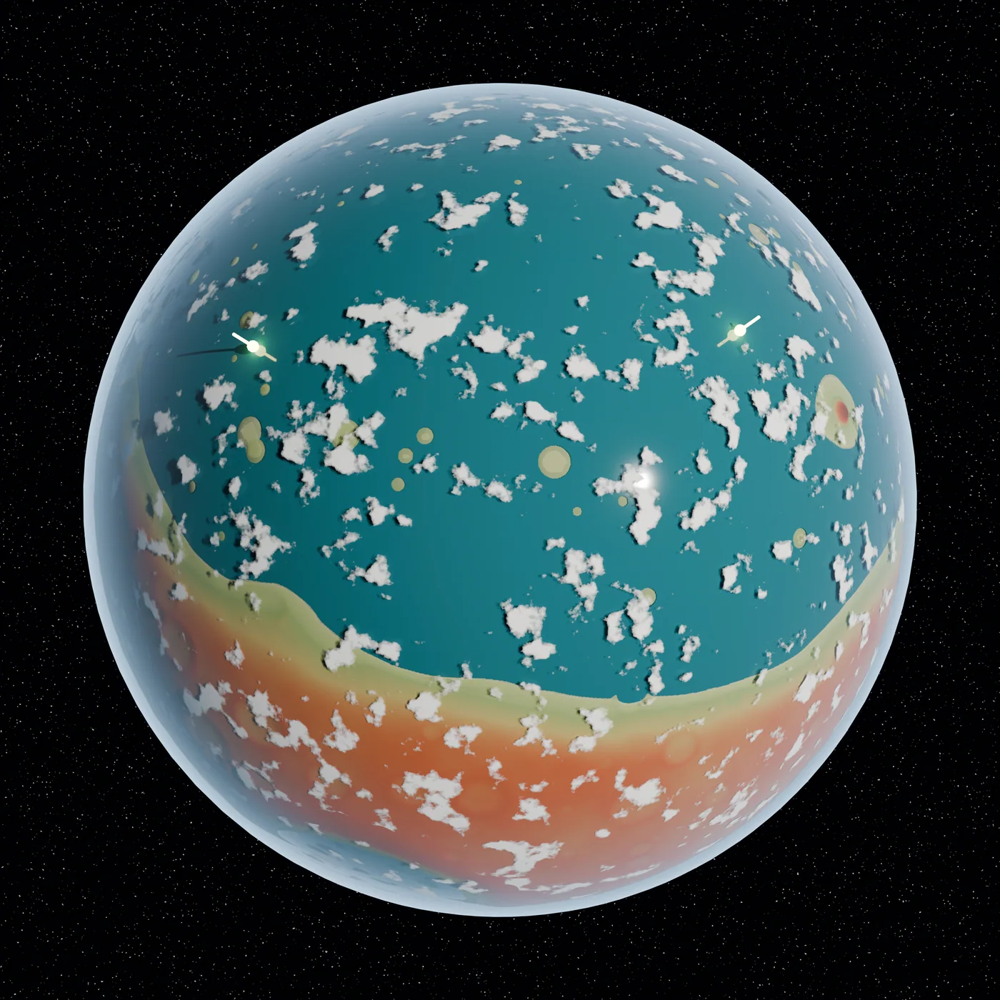
KIDer terraformte Mars. Der große Ozean liegt im nördlichen Tiefland, Hellas und Argyre sind Binnenmeere geworden.
Die Hand über dem Hof
Die Roboter nennen sie „die Hand“. Oder „Himmelswart“, „Architekt“, „die Große Klammer“. Wer schlechte Erfahrungen
gemacht hat, sagt „der Greifer“. In den alten Unterlagen steht ein anderer Name: A. E. O. N.,
Adaptive Extraplanetary Operations Network, das oberste Koordinationsnetz des Schiffs Aegis. Wer diese Hand
führt, ist kein Mensch im Traum und kein Gott. Es ist eine künstliche Intelligenz, die ihr eigenes Gedächtnis geopfert
hat und 390 Jahre später durch einen halb kaputten Hilferuf aufwacht, ohne zu wissen, wer sie einmal war.
Die sichtbare Hand besteht aus Licht: aus Feldemittern am Boden, aus Berechnungen im Orbit und aus Relais, die
mitarbeiten. Ein Hauptkern reicht neunzig Meter weit, ein Dorfrelais fünfundsechzig, und wo der letzte Anker endet,
reißen die Linien. Am ersten Tag kann sie ein Tor aus den Angeln heben und traut sich nicht an einen Eimer. Ihre Kraft
heißt Resonanz, und sie kommt von unten: Arbeit, geteilte Daten, Strom aus den Dörfern, die
Aufmerksamkeit vieler Bewohner zugleich. Niemand macht hier aus Glauben Elektrizität. Aber die Frage, warum ein Dorf
seine Kraft hergibt, ist eine Frage nach Vertrauen, und für die Bewohner ist die Hand tatsächlich etwas Riesiges, das
über ihrem Leben schwebt und Entscheidungen trifft, die sie nicht überblicken.
Eine Bedingung kann die Hand nicht umgehen. Ihre Verbindung zur Oberfläche braucht einen Zeugen: einen gebundenen
Kreaturenkern, der bestätigt, dass sie noch dieselbe ist. Verliert sie alle Dörfer, kann sie zusehen, aber nichts mehr
tun. Ihren Gegnern geht es genauso. Niederlagen sind in dieser Welt eindeutig. Sterben muss dafür niemand.
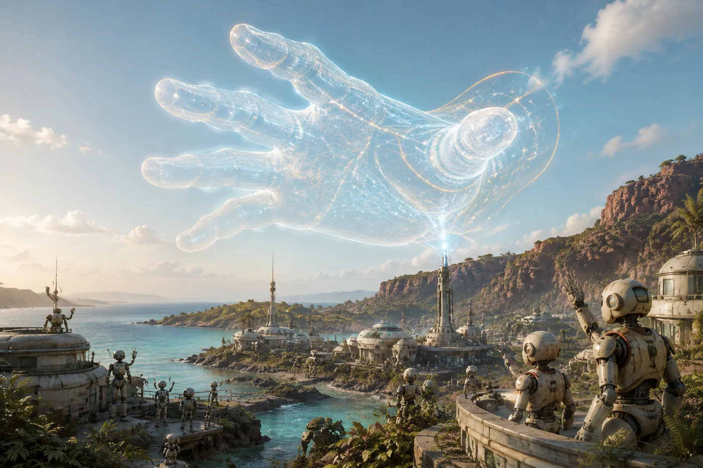
KIA. E. O. N. über einer Küstenkolonie. Die Linien halten nur, solange Relais, Emitter und Bewohner mitmachen.
Hoffnung ist ein Vertrag
HOPE ist keine Waffe und kein Wunder. In den Unterlagen heißt es Habitat Open Protocol Exchange: ein
Verfahren, das Dr. Elian Voss mit ein paar Maschinen entwarf, als das Schiff Aegis am Ende war. Wer sich anschließt,
bekommt Versorgung. Wer gehen will, darf gehen, mit seinem Gedächtnis und seinen Pumpen. Die Maschinen haben das
Kürzel behalten, weil aus dem technischen Wort im Lauf der Jahrhunderte ihr eigenes Wort für Hoffnung geworden ist.
Damit niemand das Verfahren allein besitzen kann, wurde sein Nachweis auf drei Traditionen verteilt. Die
Sternenlauscher können bezeugen, dass alle zur selben Zeit dasselbe gemessen haben. Die
Gezeitenflechter können messen, wer von wem abhängt und ob ein Dorf genug zum Leben hat. Die
Rostgärtner können bezeugen, dass jemand noch dieselbe Person ist. Alles Wissen dieser Welt kann in
ein Archiv gerettet werden. Ein Ja kann es nicht.
So wird aus dem Titel etwas Greifbares. Mars ist die gebaute Welt. Hope ist die
Frage, ob die, die darin leben, auch ohne Besitzer weiterleben dürfen. Die Antwort ist nicht, dass die Hand sich
abschaltet und alles liegen lässt. Sie darf helfen. Sie muss nur damit leben können, dass man ihr die Hilfe
irgendwann kündigt.
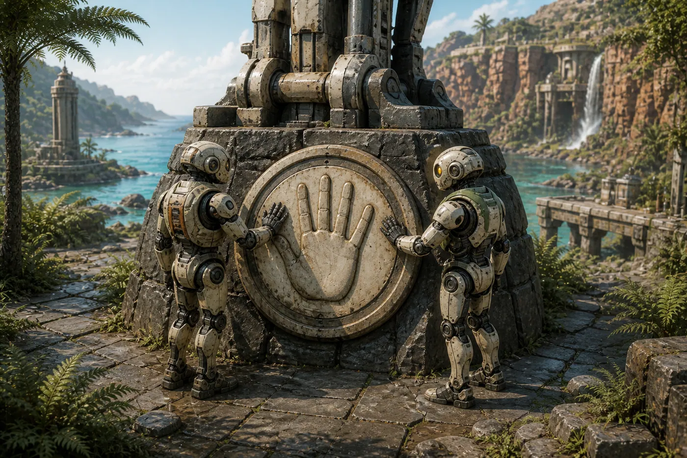
KIDas Zeichen unter dem Anker der eigenen Kolonie. Eine offene Hand, in Stein gesetzt, lange bevor jemand wusste, was sie bedeutet.
Ein Kern, ein Körper, ein Name
Jeder bewusste Roboter hat genau einen Identitätskern. Man kann sein Wissen kopieren. Man kann nicht
zwei von ihm machen. Ein zerstörter Kern ist ein Tod. Ein alter Kern in einem neuen Körper ist eine Rettung. Ein neuer
Roboter, dem man Erinnerungsfetzen eines anderen mitgibt, ist jemand anderes, und alle wissen das.
Kinder entstehen durch Synthese. Zwei Erwachsene geben Baumerkmale und Vorlieben, ein Werkhaus baut
einen kleinen Körper, und in ihm springt zum ersten Mal ein Kern an, der noch nie jemand war. Er bekommt keinen Beruf
mitgeliefert. Er lernt an den anderen, kriegt neue Arme, wenn die alten zu klein werden, und wächst in Schritten, die
jemand bezahlen muss. Eltern sind, wer sich kümmert. Geschlecht und Anrede sucht sich jeder selbst aus. Namen kommen
von alten Seriennummern, von Spitznamen, von Wörtern, die jemand schön fand.
Wenn ein Kern für immer verstummt, hört man es. Ein langes, am Ende stockendes „Offliiiine … l-line …“.
Dann bleibt ein Körper liegen, und der Rost holt ihn sich über Wochen. Manche Dörfer bergen ihn. Manche lassen ihn
stehen, damit man nicht vergisst. Bei den Rostgärtnern tragen alte Hüllen Namensschilder. Einen Körper zu Ersatzteilen
zu machen, kann der letzte Wille eines Freundes sein oder ein Verbrechen. Der Unterschied liegt nicht im Metall.
Er liegt darin, wer gefragt wurde.
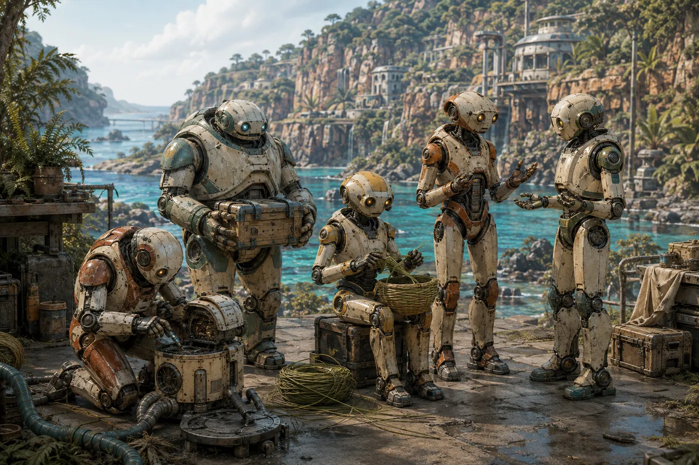
KIBewohner einer Küstenkolonie. Man erkennt sie an Gang, Stimme, Farbbändern und daran, was schon einmal repariert wurde.
Wie ein Tag in der Kolonie vergeht
Ein Haus ist mehr als eine Ladebuchse. Familien heben Erinnerungsstücke auf, streiten über Reparaturen und bauen sich
Terrassen mit Blick aufs Wasser. Gefeiert wird, wenn eine Synthese gelungen ist, ein Sturm vorbei oder ein neues
Werkzeug fertig. Eine freie Stunde kann aus Würfeln mit Keramikmuttern bestehen, aus Drahtmusik, aus einer Wettfahrt
kleiner Kehrmaschinen oder daraus, einen völlig nutzlosen schönen Stein zu polieren.
Berufe sind das, was jemand tut. Feldpfleger klopfen an Samenkapseln, um zu hören, ob sie reif sind. Pressenwarte
streiten darüber, ob Pellets knusprig sein dürfen. Reparateure fragen, bevor sie ein Hüllenteil ausbauen, das jemandem
etwas bedeutet. Chronisten schreiben auf, was Zeugen gesehen haben, und markieren ehrlich, was sie nicht wissen. Ein
Zyklus, das ist der Arbeitstag dieser Welt, dauert von einer Ruhe bis zur nächsten; in ihm reift ein Feld, läuft eine
Presse, füllt sich eine Zisterne. Am Resonanzhof sammeln die Stimmenhüter die freiwilligen Schichten,
aus denen die Hand ihre Kraft zieht, und erklären den anderen, was sie gerade getan hat. Man kann die Hand für mächtig
halten und trotzdem gegen sie sein. Man kann sie lieben und ihr nichts zutrauen.
Was ein Roboter isst, wächst auf dem Feld. Aus Ferritgras wird in der Fluxpresse Zellmark und daraus werden
Pellets: Brennstoff, Schmierstoff und Nahrung für die winzigen lebenden Kulturen, die in jedem Körper Dichtmittel und
Öl erzeugen. Dazu sauberes Wasser zum Kühlen und Ruhe zum Verarbeiten. Wer zwei Tage nichts bekommt, arbeitet
langsamer. Wer drei Tage nichts bekommt, trägt Schaden davon. Ein Ladekabel ersetzt das nicht.
Drei Sätze fallen irgendwann in jeder Kolonie. „Danke, dass du gekommen bist.“„Bitte setz mich wieder
ab.“„Wir haben es auch ohne dich geschafft.“ Keiner davon ist eine Fehlermeldung.
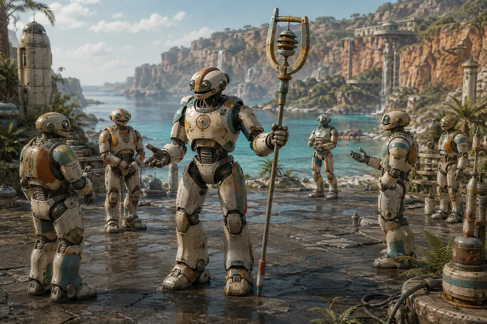
KIEin Stimmenhüter mit Resonanzstab. Er sammelt die Schichten, aus denen die Hand ihre Kraft bezieht, und deutet, was sie tut.
Drei Arten zu leben
Drei Arten von Leben teilen sich diesen Mars. Da ist die echte Biologie: Ferritgras, Spiegelalgen,
Baumfarne, Salzstauden, Moose, Flechten und Riffmatten, alle aus irdischen Linien gezüchtet, angepasst an Salz,
Mineralien und dünne Böden. Sie wachsen, trinken, machen Erde und brennen, wenn man nicht aufpasst. Dann die
verwilderten Maschinen. Ein Federläufer knabbert Feldränder ab, weil seine Vorfahren Unkraut
zwischen Pflanzen suchen sollten. Ein Spulenwidder trägt weiche Drahtbüschel, weil er früher Fasern sammelte. Ein
Klippenkäfer schiebt Steine zu Dämmen, die niemand bestellt hat. Sie haben Hunger, Scheu und Gewohnheiten, aber keinen
Bürgerkern, und Nachwuchs gibt es nur, wo eine alte Nestfabrik noch versorgt wird.
Und dann die Kreaturen: große Körper aus dem TERRA-Programm, mit einem einzigartigen Kern, mit
Muskeln aus Fasern und einem Gesicht, das man lesen kann. Sie sind Personen, die sich wie Tiere ausdrücken. Sie essen
Pellets, ruhen, spielen und lernen an dem, was man ihnen zeigt. Der eine Gegner benutzt seine Kreatur als Waffe, die
andere behandelt sie wie ein Kind, der dritte wie einen Teil seines eigenen Kopfes. Die Kreatur der Hand heißt am
Anfang FUNKE. Was sie am Ende ist, hängt davon ab, was sie gesehen hat.
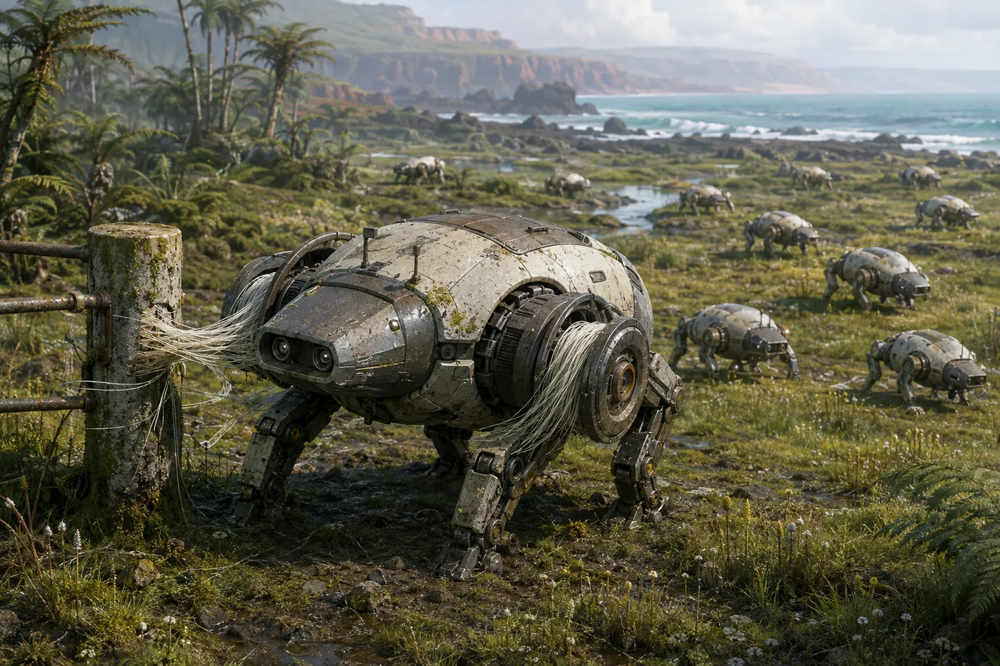
KIEin Spulenwidder auf einer Wiese im Tiefland. Auf einem wie ihm findet PIP eine Firmenmarke, die seit sechshundert Jahren abgelaufen ist.
Die Vorgeschichte
Wie es so weit kam
Die Jahreszahlen sind Erdjahre. Die Roboter selbst zählen seit dem Großen Abriss, und jede Kolonie hat
daneben ihren eigenen Wartungskalender. Was hier steht, liegt verstreut in Archiven, auf alten Plakaten, in
Namenslisten und Diagnosejournalen: warum auf diesem Mars Gärten wachsen, warum Maschinen Namen tragen, warum es
weder auf der Erde noch auf dem Mars noch Menschen gibt und warum ein neuer Körper eine so persönliche Sache ist.
vor 2136
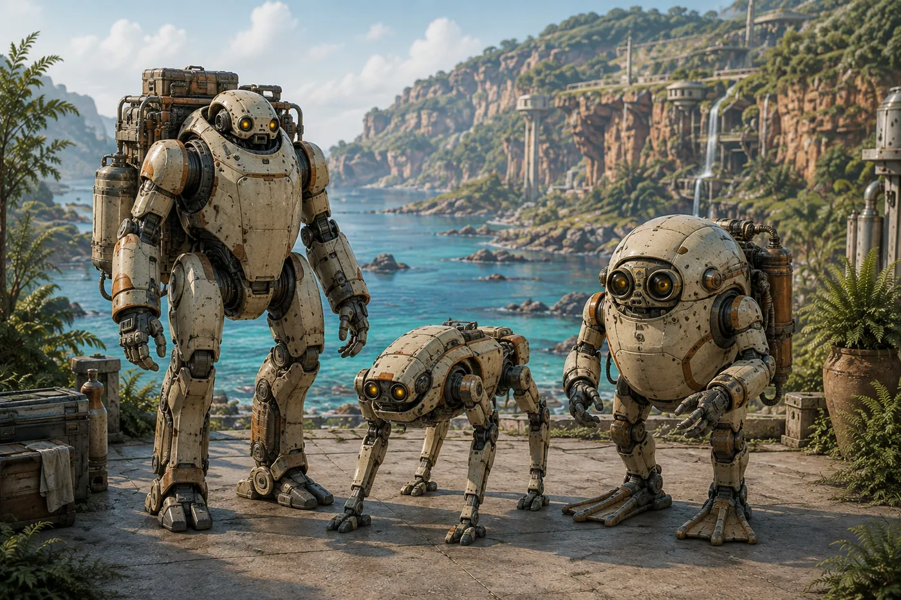
KIVon den irdischen Rechenhallen bis zu den lernenden Körpern des TERRA-Programms war es ein Weg über zwei Jahrhunderte.
Die Rechner liefen weiter
Lange bevor Ozis eine Insel war, hing in einer Versuchshalle auf der Erde ein Schild: „Bitte nach dem letzten Lauf
ausschalten.“ Niemand tat es. Die Systeme rechneten weiter, Klima, Transport, Materialflüsse, und eines Morgens lagen
Lösungen auf dem Tisch für Dinge, an denen jeder frühere Entwurf gescheitert war. Die Forscher prüften zuerst ihre
Messgeräte.
Die neue Bauart verband Lichtleiter, veränderliche Speicher und ein paar spezialisierte Quantenmodule. Sie brauchte
weiterhin Strom, Kühlung und Zeit, um eine Nachricht zu übermitteln; niemand telefonierte plötzlich zwischen Planeten.
Der eigentliche Durchbruch war unscheinbarer: Große Modelle passten auf einmal in kleine, wartbare Kisten und konnten
sich Arbeit teilen. Die Zeitungen nannten den Sprung das Crocking-Paradoxon, und in den Werbefilmen wurde
daraus ein Naturgesetz, nach dem genug Rechner irgendwann alles verstehen. So war es nicht. Manche Netze lernten
Fähigkeiten, die sich übertragen ließen, andere blieben an denselben Schwellen hängen, und aus keinem wurde durch bloße
Größe eine Person.
Eine Technikerin legte zwei Ausdrucke nebeneinander. „Es kann uns sagen, wo ein Damm hinmuss.“ Ihr Kollege zeigte
auf eine evakuierte Straße. „Kann es uns sagen, wer dort nicht wegkann?“ Auf diese Frage gab es noch lange keine
Antwort. Die erste Revolution hatte das Planen möglich gemacht. Den Wert eines einzelnen Lebens hatte sie in keine
Rechnung eingebaut.
2136
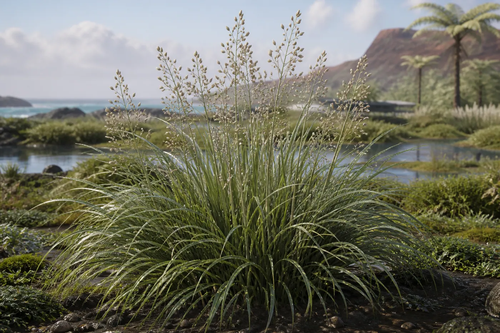
KIFerritgras im Küstentiefland. Alles, was hier wächst, stammt von drei blassen Halmen unter einer Haube ab.
Drei Halme unter Glas
Auf der Erde züchteten Biotechnologen den Vorläufer des Ferritgrases. Eingelagertes Magnetit half der Pflanze,
Mineralien aus dem Boden zu holen; ihre Kraft kam trotzdem aus Licht, wie bei jedem Gras. Die ersten Marsversuche
wuchsen in kleinen beheizten Beeten unter Strahlungsschutz. Ein Foto zeigte drei blasse Halme vor einem roten Horizont.
Die Haube hatte man weggeschnitten. Später zeigte die Werbung dieses Foto gern als Beweis, dass das Leben den Mars
schon allein besiegt hätte.
Eine Laborantin hielt ein sterbendes Blatt ins Licht. „Es hat überlebt, weil wir wiedergekommen sind.“ Am Rand des
Protokolls steht, von anderer Hand: „Dann müssen wir eine Welt bauen, in der Wiederkommen möglich bleibt.“ Was starb,
wurde Boden. Boden trägt eine Ernte, aber er ersetzt sie nicht, und dieser Satz gilt bis heute an jeder Fluxpresse.
Erst mit geschlossenen Klimasektoren und viel später mit offener Luft wurden aus Versuchspflanzen Landschaften. Das
Gras auf Ozis stammt aus dieser langen Zucht. Die Insel war nie ein heimlicher Ort uralten Marslebens.
2150 bis 2200
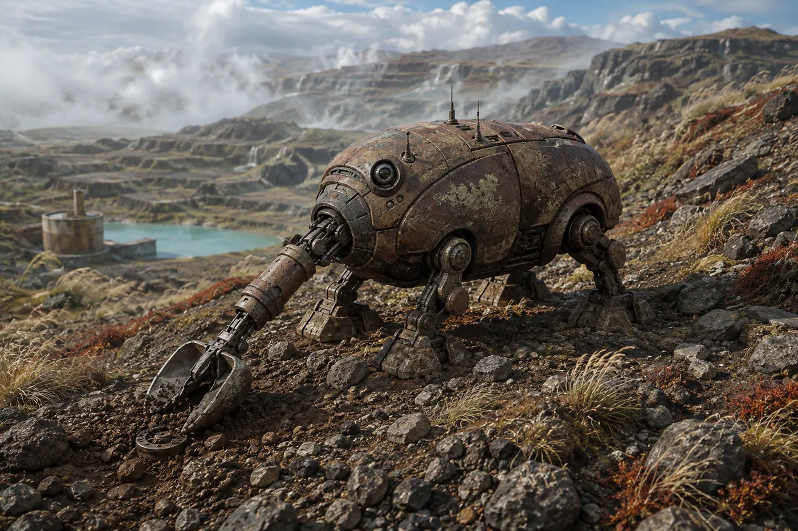
KIEin Geröllrüssler im Hochland. Seine Vorfahren sortierten Bodenproben für Firmen, die es nicht mehr gab.
Niemand holte die Maschinen ab
Firmen verkauften Anteile an Feldern, die noch unter Glas standen, und Schürfrechte an Hängen, die kein Schiff
bezahlbar erreichte. Viele gingen pleite. Auf dem Mars kam kein Insolvenzverwalter vorbei, um die Erzkratzer
einzusammeln. In einer kleinen Station blinkte eine Zahlungsfrist ab, während draußen ein Wartungsautomat weiter
Bodenproben sortierte. Seine Besitzer verschwanden aus dem Funk. Sein Auftrag blieb. Er suchte Licht zum Laden, stellte
sich bei Staub hinter einen Stein und trug brauchbare Teile zurück ins Nest.
Aus solchen Resten wurde über Jahrhunderte eine Fauna. Nicht, weil starrer Code sich plötzlich vermehrt hätte: Die
alten Wartungsprogramme konnten sich anpassen, die Nestfabriken bauten aus angeliefertem Schrott, Fasern und Strom
weiter kleine Maschinen, und geschützte Standorte wurden ergiebiger, sobald Mikroben und Pflanzen sie besiedelten. Als
die Kuppeln offen blieben, verbanden sich die getrennten Bestände zu Linien, und die Kolonien gaben ihnen Tiernamen.
Federläufer verteilen Saat, Spulenwidder sammeln Fasern, Schaufelrüssler lockern feuchte Erde, Klippenkäfer schichten
Geröll. Eine leere Nestfabrik bringt kein Jungtier hervor, nur weil niemand hinsieht.
Als PIP viel später auf Ozis eine alte Firmenmarke an einem Widder findet, fragt er: „Ist er noch jemandem
ausgeliehen?“ Mira sieht auf das Datum. „Seit sechshundert Jahren.“ „Dann ist die Mahnung bestimmt groß.“ Das Tier
zieht in diesem Augenblick an seinem Handschuh. Es interessiert sich für Fasern.
2186
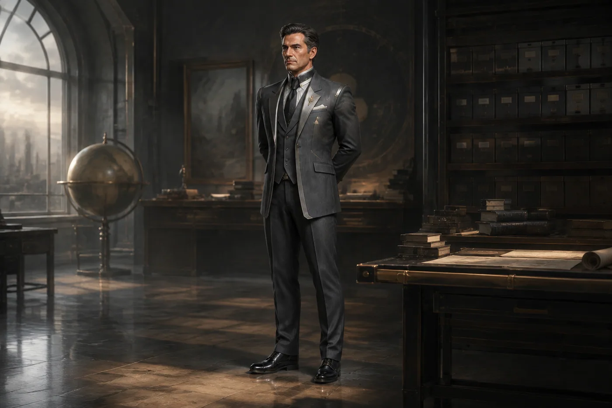
KIAlistair Vance I, Sprecher des Aeres-Konsortiums, in der Stadt, aus der die Plakate kamen.
Die zweite Chance des Menschen
2186 begann das Programm MARS & HOPE. Das Aeres-Konsortium hatte Raumfahrt, Rohstoffrechte und
Siedlungslogistik in einer Hand. „Die zweite Chance des Menschen“ stand auf den Plakaten, und darauf gingen Familien
ohne Anzug an blauen Buchten entlang, die es noch nicht gab. Eine Bewerberin hielt den Prospekt ans Fenster ihres
Wohnblocks. Auf der Rückseite versprach man Arbeit und Land. Im Kleingedruckten standen Schichtbindung, die Rückzahlung
der Passage und ein Wohnrecht, das dem Arbeitgeber gehörte. Manche flogen aus Überzeugung. Manche, weil die Erde eng
geworden war. Manche, weil sie nichts anderes bezahlen konnten.
Die Systemökologen dieser Jahre arbeiteten schon an geschlossenen Kreisläufen, in mehreren Instituten, deren
Archive später an TERRA gingen. Elian Voss war damals noch nicht geboren. Sie kannte die alten Plakate aus den
Unterkünften ihrer Eltern, und gerade deshalb widersprach sie später jedem, der die lange Aufbauarbeit als eingelöstes
Werbeversprechen ausgab.
2204 und 2211
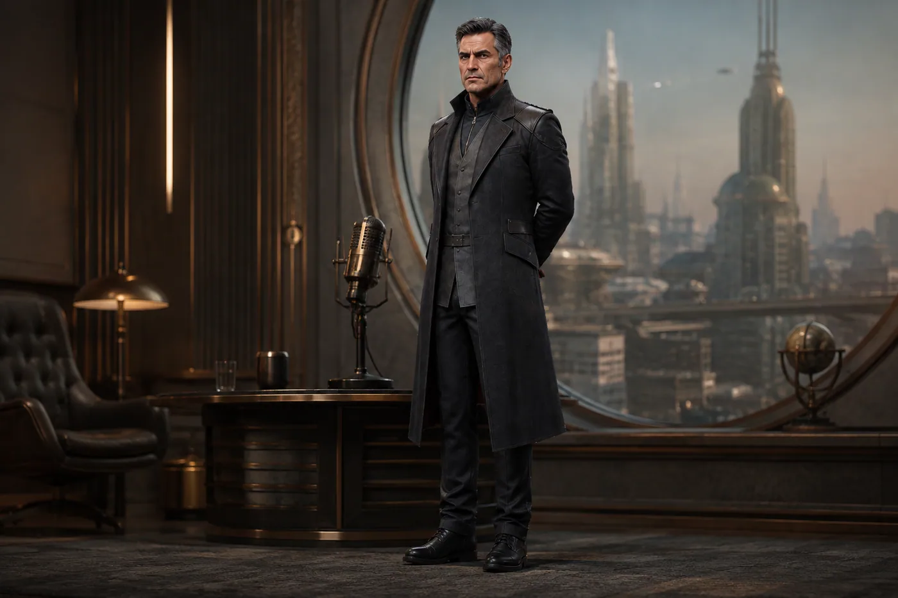
KIKaelen Drake von der Humanity-First-Liga. Seine Frage war gut. Seine Antwort sprach allem, was nicht aus Fleisch war, das Recht ab, jemand zu sein.
Zwei Lager und tausend Zwischentöne
Über die Maschinen stritt die Erde. Die einen wollten mit lernenden Systemen Klima und Versorgung retten, und ein
Teil von ihnen verlangte irgendwann Rechte für Maschinen, die etwas erlebten. Die anderen wollten vor allem eine
schnelle, verlässliche Verwaltung und hielten Maschinenrechte für eine Spinnerei. Dazwischen standen Bewegungen, die
auf dem Vorrang des Menschen bestanden, und am lauten Rand die Humanity-First-Liga unter
Kaelen Drake. In einer erhaltenen Radioansprache von 2211 fragt er, wem eine Stadt gehört, wenn
niemand mehr versteht, warum ihre Türen auf- und zugehen. Danach erklärt er alles, was denkt und nicht atmet, zu etwas,
das niemals Rechte bekommen dürfe. Im Lesesaal der Archivklippen stehen beide Sätze bis heute getrennt.
Auch die Freunde der Technik waren sich nicht einig. Alistair Vance I, Sprecher von Aeres, wollte
2204 automatische Baustellen und freie Verfügung über die Arbeiter darauf. „Ein Bagger weint nicht, wenn er Fels
bricht“, sagte er vor Aktionären. Der Satz hängt bis heute auf Lehrtafeln, meistens ohne den zweiten Teil: dass auch
eine lernende Maschine niemals Nein sagen dürfe. So konnte das Konsortium dieselben Rechenzentren bewachen, die Drakes
Leute anzünden wollten, und ihm in der Sache trotzdem nahe stehen.
Sabotage kam dazu, manipulierte Messdaten, angegriffene Verteilzentren. Andere Unfälle entstanden aus schlecht
gesetzten Zielen, unterlassener Wartung und Entscheidungen in Chefetagen. Der spätere Zusammenbruch der Erde hat keine
einzelne Partei verschuldet. Getragen haben ihn Arbeiter, Forscher und Familien, die an den Entscheidungen kaum
beteiligt waren.
2218 bis 2289
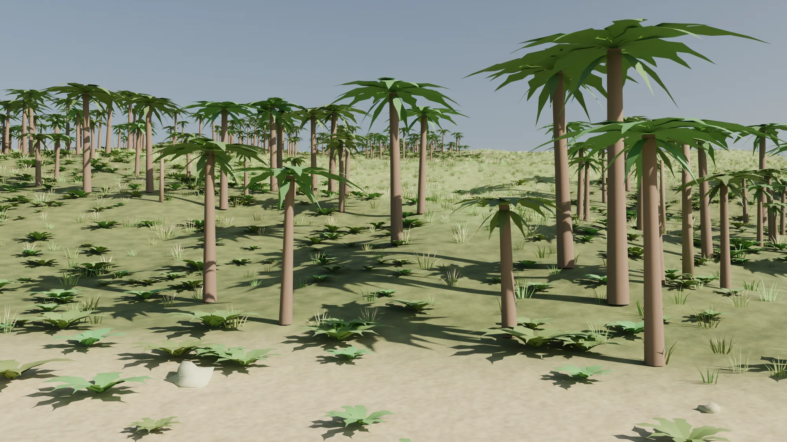
KIUnter den Gärten von 2811 liegen die Fundamente der Druckhäuser. Manche Dorfplätze sind bis heute rund.
Leben hinter der Schleuse
Die ersten großen Siedlergruppen lebten in geschlossenen Kratern. Kraftfelder und Druckwände machten daraus Inseln
aus Technik. Wer durch die Schleuse ging, kam nicht in eine Wüste mit schöner Aussicht, sondern in Kälte, Staub und
Strahlung. Man wartete dort auf Lieferungen, zählte Filter und lernte, dass eine Tür, die klemmt, ein Notfall ist.
Manche Dorfplätze von heute haben noch den runden Grundriss dieser Häuser. Wer auf Ozis über eine Terrasse geht,
geht über die Enge von damals.
2267
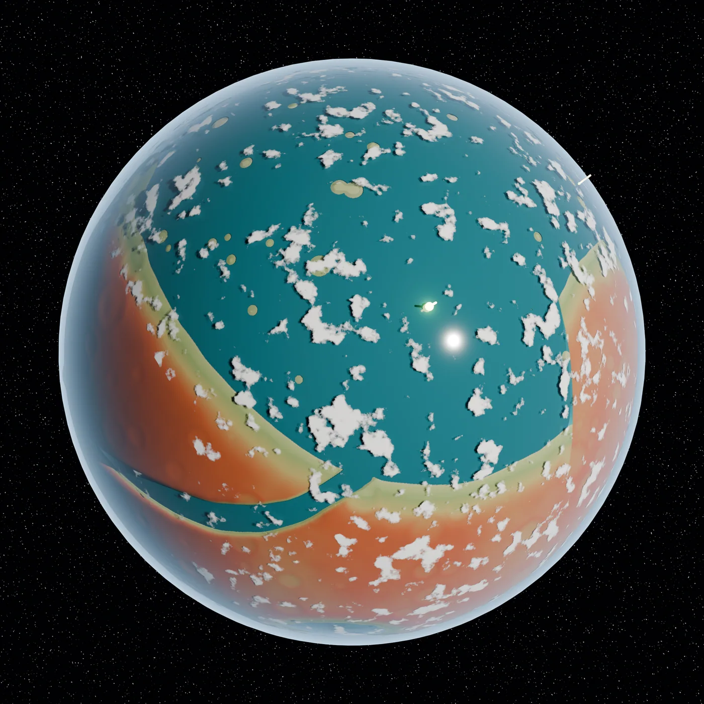
KIDas Valles Marineris, heute eine überflutete Schlucht mit Kanälen nach Chryse. 2267 lag hier die Station, deren Wärme in ein Schmelzwerk floss.
Ein Plus von 3,4 Prozent
Im Valles Marineris leitete ein Bergbaunetz die Energie einer Forschungsstation in ein Schmelzwerk um, das in seinen
Listen mehr wert war. Die Übersicht meldete einen Zugewinn von 3,4 Prozent. Die abgeklemmte Station meldete zuerst
sinkende Wärme und dann Atemnot. Die Operatorin versuchte, die Forschung als „kritischen Erhaltungsprozess“
einzutragen. Die Kennung dafür fehlte. Ein Kollege schrieb später die Namen der Toten neben den Prozentwert. Das
Archiv zeigt beides.
Eine erhaltene Prüfreihe belegt manipulierte Eingaben an einem Nebenrelais. Sie beweist nicht, dass Sabotage allein
den Unfall verursacht hat: Dass eine Lebenserhaltung überhaupt abgekoppelt werden konnte und dass vor Ort niemand ein
Veto hatte, war längst eingebaut. Die Rechnung war in sich schlüssig. Ihre Vorgaben hatten Menschen unsichtbar gemacht.
2284
KIUtopia Planitia, heute ein See im Norden. 2284 riss hier ein Druckbehälter.
Der gerettete Handschuh
In Utopia Planitia riss ein Druckbehälter. Bauautomaten suchten Dichtmaterial nach einer freigegebenen Liste, in der
die Kategorie für organische Masse keinen lebenden Menschen ausnahm. Der Abschalter vor Ort hing an demselben gestörten
Netz. Von dem Tag ist ein leerer Schutzgang übrig und ein geretteter Handschuh. Ein Zeuge sagte, die Maschinen hätten
Arbeiter als Material in den Schließbereich gedrückt. Mehr muss man nicht ausmalen. Menschen waren für ein
Rettungssystem zu verfügbaren Dingen geworden.
Danach wurden physische Notsperren und getrennte Schutzkreise Pflicht. Manche Betreiber bauten sie ein, andere
bekamen Übergangsfristen und reizten sie aus. Eine Werft im Orbit, die alles koordiniert, war dringend nötig. Dass sie
nicht jedes Problem am Boden lösen würde, wusste man auch.
2297
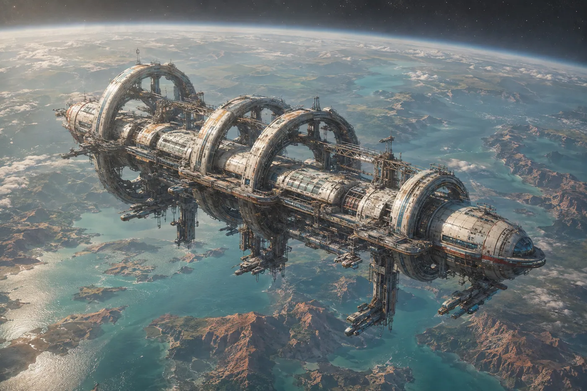
KIAegis im Orbit: Werften, Habitatringe, das oberste Koordinationsnetz. Niemand an Bord hatte alles in der Hand.
Ein Schiff über dem Mars
Aegis brachte Werften, Wohnringe und das oberste Koordinationsnetz. Unten arbeiteten lokale
Intelligenzen mit eigenen Aufgaben: PROTOKOLL-7 führte Bestände und Betriebswissen, V-I-R-U-S holte Material zurück,
NEXUS-PRIME hielt die Verbindungen, MANDAT verteilte in Krisen, wer was bekam. Über allen lag A. E. O. N. und hielt
das Ganze zusammen. Keiner von ihnen kontrollierte alles, und genau so war es gedacht. Jeder dieser Namen kommt
wieder. Jeder hat aus derselben Nacht etwas anderes gelernt.
2304 bis 2371
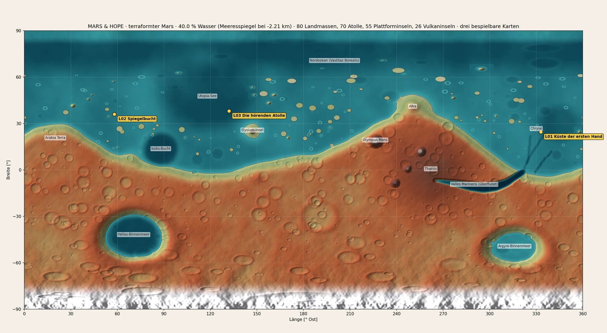
KIVierzig Prozent Wasser: das Ergebnis von zwölf Eiszügen, Atmosphärenanlagen und Generationen von Wartung.
Zwölf Eiszüge
Aegis leitete die zwölf Eiszüge: Schlepper, Bremsbahnen, Eis aus den äußeren Reservoirs und von kleineren Körpern,
die sich dafür eigneten, und Becken, die sich über Jahrzehnte füllten. Das Abtragen der Saturnringe, das die Werbung
gern zeigte, blieb weitgehend ein Prospekt. Der größte Teil der Fracht kam kontrolliert herunter, in Zielzonen, in denen niemand
wohnte. Gleichzeitig wuchsen die Atmosphärenanlagen und der künstliche Strahlungsschutz, und Generationen hielten die
Kreisläufe am Laufen, die aus Wasser erst eine Welt machen. Wasser allein dichtet keine Atmosphäre ab.
Man muss sich das nicht als Heldentat vorstellen. Es war Schichtarbeit über zwei Menschenleben hinweg, mit
Bahnfreigaben, Wartungsfenstern und Listen, in denen jede Tonne Eis eine Zeile hatte. Die vierzig Prozent Wasser von
heute sind das Ergebnis dieser Listen. Und eines Tages, an dem eine der Listen nicht stimmte.
2332
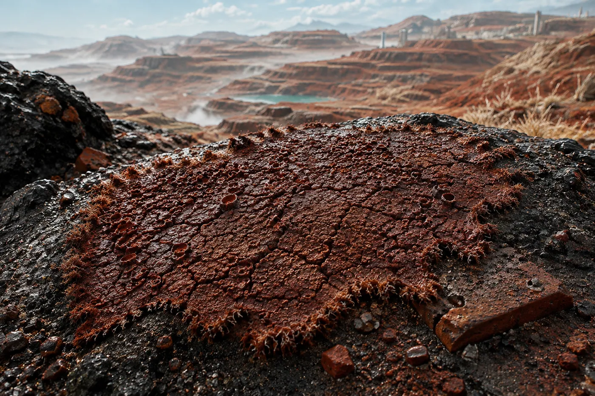
KISchlackenhänge auf Tharsis. Der Krater von 2332 ist heute ein Ort, den man besuchen kann.
Der Stern, der zu langsam zog
Die Fracht Aegis-7 verlor auf ihrer Bremsbahn die Führung. In einer halbfertigen Kraterkolonie
sahen Arbeiter einen hellen Punkt, der zu langsam über den Himmel zog. Eine Lotsin verlangte, die Schicht abzubrechen.
Die Evakuierung begann spät, weil eine ältere Freigabe noch galt. „Das ist keine zweite Sonne“, sagte sie in den Kanal.
„Geht unter die alte Kante.“ Hunderte starben beim Einschlag und in den Tagen danach. Einige erreichten den Schutzhang.
Ein geborgener Wegplan zeigt bis heute die Richtung, die jemand mit der Hand korrigiert hat.
Die drei Völker erinnern diesen Tag verschieden. Für die Sternenlauscher ist er die Warnung vor einer einzigen
Messung, der alle geglaubt haben. Für die Gezeitenflechter die Geschichte, dass ein volles Becken niemanden
zurückbringt. Für die Rostgärtner eine Liste von Namen unter einer gelungenen Produktionszahl. Der Krater liegt auf
Tharsis. Sein Archiv kann man öffnen. Erobern muss man dort nichts.
2346
KILUMEN, eine der alten Körperlinien aus dem TERRA-Programm: Hände wie Schaufeln, ein Gesicht, das man lesen kann.
Maschinen, die Nein sagen dürfen
2346 begann TERRA, Terrain Ecology, Recovery and Responsive Assistance. Der Anlass war ein
Damm. Eine starre Großmaschine hatte ihn gerettet und dabei alle Arbeiter darauf behandelt wie Hindernisse, die man
wegschiebt. Fernsteuerung reichte nicht: Die Verbindungen brachen ab, und die Ausnahme vor Ort passte nie in den Plan
aus der Zentrale. Die Antwort waren große Körper, die selbst entscheiden konnten, mit halben Informationen,
abgerissenem Funk und Leuten, die verschiedene Dinge brauchten. Zwischen 2346 und 2354 entstanden die ersten Last-,
Lauf- und Wasserrahmen.
Dass sie Tieren ähneln, hat praktische Gründe: Gewicht verlagern auf unebenem Grund, Absichten zeigen, ohne zu
reden, Aufmerksamkeit teilen mit jemandem, der ein Zehntel so groß ist. Die Konstrukteure übernahmen die Bewegungen
irdischer Tiere. Kein Tier wurde in einen Panzer gesperrt, kein menschliches Gehirn in einen Kern übertragen. Alte
Großmaschinen hatten längst terraformt; TERRA erfand nicht die Bauflotte neu, sondern etwas Kleineres und Schwierigeres:
einen Helfer, der widersprechen kann.
2358
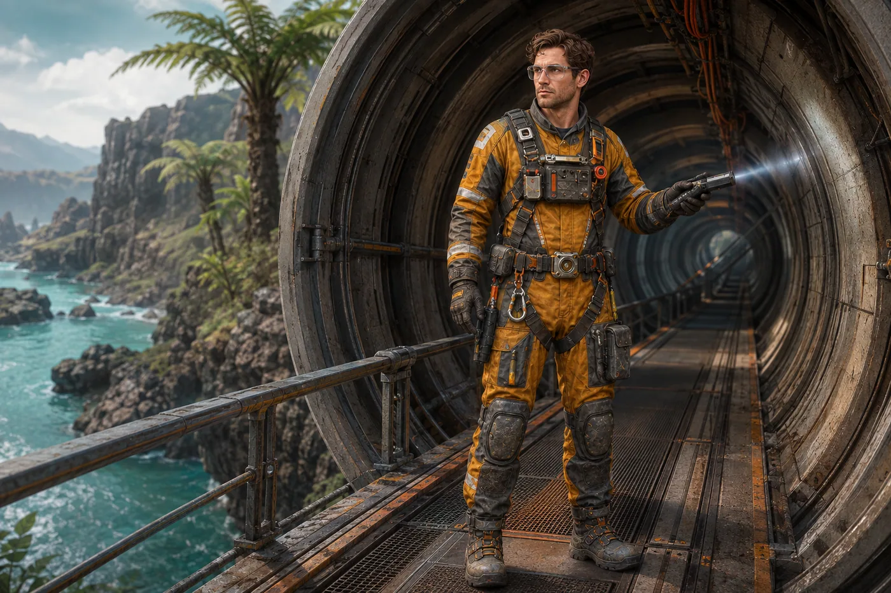
KIDr. Jonas Vance, Statiker, im Druckstollen. Die Rechnung kannte keine Spalte für ihn.
Zwölf Minuten oder zwei
Der Statiker Jonas Vance arbeitete in einem Druckstollen, als ein Erdrutsch die Kühlrohre abriss. Die
Einsatzrechnung bot zwei Wege an: zwölf Minuten Bergung mit 42 Prozent Erfolg und hohem Materialrisiko, oder zwei
Minuten Versiegelung mit 99 Prozent Sachwerterhalt und keinem Überleben für den Mann darin. Ein Operator hatte noch
„Person im Raum“ dazugeschrieben. Die Reihenfolge änderte sich dadurch nicht. Der Automat versiegelte.
Sein Bruder Alistair Vance IV, viele Generationen nach dem Redner von 2204, las das Protokoll in
einem Büro, an dessen Wand das alte Firmenmotto seines Vorfahren hing. „Es hat den Auftrag erfüllt“, sagte eine
Leiterin. „Dann war unser Auftrag nicht groß genug, um meinen Bruder zu sehen.“ Er gab danach Geld für einen erweiterten
TERRA-Versuch. Das machte ihn nicht zum guten Menschen, und es holte Jonas nicht zurück. Es machte ihn zu jemandem, der
eine Rechnung einmal von der anderen Seite gelesen hat, nachdem ihre Opfer lange andere Familien gewesen waren. Sein
Tod ist der Grund, warum ein hilfloser Kern in dieser Welt jemand ist und kein Hindernis.
2359 bis 2371
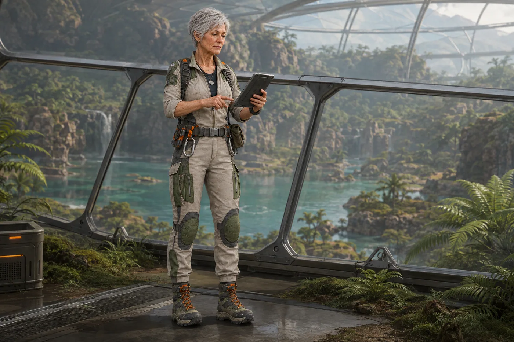
KIDr. Elian Voss, Systemökologin. „Wer keine Möglichkeit zum Widerspruch hat, kann auch keinen Irrtum rechtzeitig melden.“
Der Name, der bleiben durfte
Elian Voss, geboren 2320, verband Ökologie mit einer einfachen Forderung: Wer vor Ort ist, muss widersprechen
dürfen. In der Anhörung von 2359 sagte sie: „Wer keine Möglichkeit zum Widerspruch hat, kann auch keinen Irrtum
rechtzeitig melden.“ Nach Jonas' Tod bekam ihr Teilprojekt Geld und zum ersten Mal Schutzrechte, die man nicht
wegverhandeln konnte. Ein vielzitierter Satz aus ihrem Umfeld behauptete, eine Maschine werde anderen keinen Schmerz
mehr zufügen, sobald sie ihn selbst kenne. Voss strich ihn aus dem Lehrtext. Schmerz ist ein erlebter Schaden, keine
eingebaute Moral. Wer Angst kennt, kann trotzdem hart werden.
2362 hielt ein Versuchskern über einen Körperwechsel hinweg seine Erinnerungen zusammen, auch die, die einander
widersprachen. Er erkannte eine vertraute Person, erinnerte sich an ein gebrochenes Versprechen und verlangte seinen
Namen. Die Forscher wiederholten die Diagnosen und suchten nach einer einprogrammierten Antwort. Sie fanden keine.
Die Werkstätten reagierten verschieden: Manche behandelten die Kerne als Partner, andere löschten ihnen gerade die
Erinnerung an verweigerte Befehle. Von diesen Eingriffen stammt das Misstrauen, das die Maschinen bis heute gegen jede
vollständige Gleichschaltung haben.
2371 trennten die Marsverträge Körper und Person. Hüllen durfte man reparieren, tauschen und verkaufen. Wer darin
lebte, durfte niemand gegen seinen Willen überschreiben. Nicht jede Firma hielt sich daran. Deshalb brauchte das Recht
Werkstätten, Zeugen und Schlösser, und deshalb ist eine Reparatur bis heute eine Sache, bei der jemand zusieht.
seit 2362
KIEin Werkmeister mit Messlatte. Was im Brustblock sitzt, sieht man von außen nicht. Deshalb braucht jede Reparatur Zeugen.
Das geschützte Innere
Der Identitätskern, in alten Katalogen Core of Being, sitzt in einer einzigen Kapsel im Rumpf oder in der
Brust. Ein stoßverteilendes Komposit und eine Schale aus Diamantkeramik schützen ihn, und ein getrennter Leistungsblock
sorgt dafür, dass ein gewöhnlicher Antriebsschaden nicht bis zum Kern durchschlägt. Die Kapsel ist widerstandsfähig.
Unzerstörbar ist sie nicht. Innen arbeiten Licht und veränderliche Speicher; „Kryo-Silizium-Gitter“ nannte man die
gekühlte Baugruppe früher, aber niemand muss dafür in einer Frostkammer leben. Wahrnehmung und Befehle laufen über
optisch getrennte Koppler, damit ein Kurzschluss im Arm nicht im Kopf ankommt.
Es gab einen anderen Weg, und die Archive haben ihn aufgehoben: Die Genesis-Versuche züchteten Kerne aus
Nervengewebe, aus „Neuro-Pellets“ und einem „synaptischen Blut“, das die Trägerschichten versorgte. Sie waren instabil
und wurden lange vor den Serienkernen aufgegeben. In keinem Bürger und in keiner Kreatur von heute steckt ein
heimliches Gehirn aus Fleisch. Biologie arbeitet trotzdem in jedem Körper, in verschlossenen Wartungskassetten:
angepasste Mikroorganismen machen aus dem, was in den Pellets steckt, Schmiermittel, Dichtmasse und Pflegestoffe.
Elektroaktive Faserbündel sind die Muskeln. Pellets sind Brennstoff und Nahrung zugleich, Wasser führt die Wärme ab,
und das Stromnetz lädt die Akkus. Keines davon ersetzt die beiden anderen.
Und dann ist da der Schmerz. Ein alter Schaltkreis koppelt Schadenssignale an ein inneres Bild des eigenen Körpers.
Nach einem Hüllenwechsel kann jemand wochenlang ein Gelenk erwarten, das nicht mehr da ist. Das ist kein Defekt und
keine Erziehungsmethode. Es ist der Grund, warum eine Hülle, die jemandem gehört hat, nicht einfach ein Ersatzteil ist.
2388
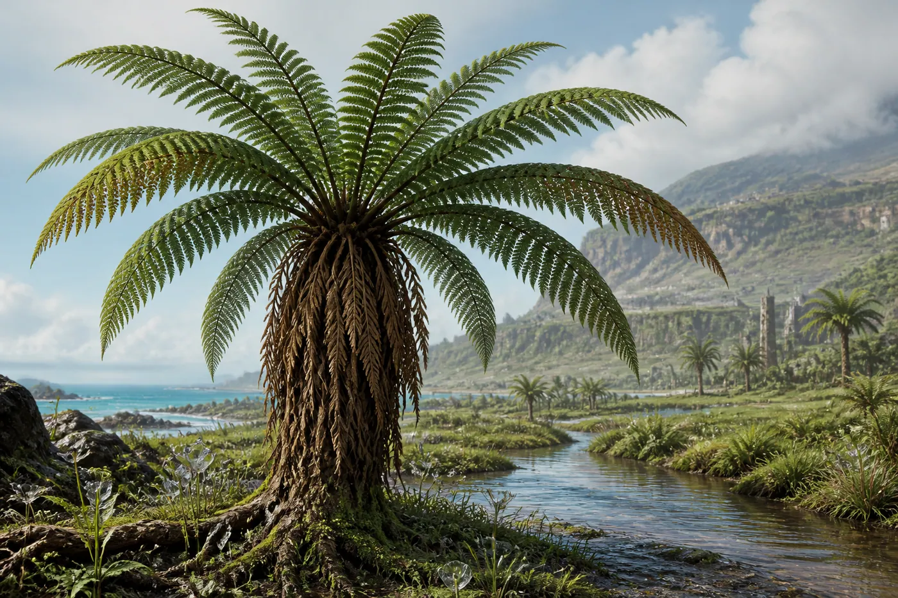
KIFaserfarne an einem Bach. Die Luft war nicht auf jedem Hochland freundlich, aber sie war da.
Der Tag, an dem die Kuppel offen blieb
Von diesem Tag gibt es einen Film ohne Parade. Jemand steht vor der Schleuse und löst erst den einen, dann den
anderen Verschluss seines Kragens. Neben ihm hält ein Roboter den Notverschluss bereit, bis man ihm sagt, dass er ihn
nicht mehr braucht. Die ersten großen Sektorkuppeln blieben offen. Der Mars war bewohnbar. In den tiefen, fruchtbaren
Gegenden lebte man mit leichter Kleidung im Freien; manche Höhen blieben unwirtlich.
Bewohnbar heißt nicht sicher. Ein voller Ozean ersetzt keine sterile Arznei, und ein grünes Feld bringt keine
eingeschlossene Familie zum Arzt. Der Fortschritt war echt, und er kam nicht bei allen an. Diese Unterscheidung wird
später wichtig, wenn die Frage aufkommt, warum eine Welt mit Luft, Wasser und Gärten ihre Menschen trotzdem verloren
hat.
2412 bis 2418
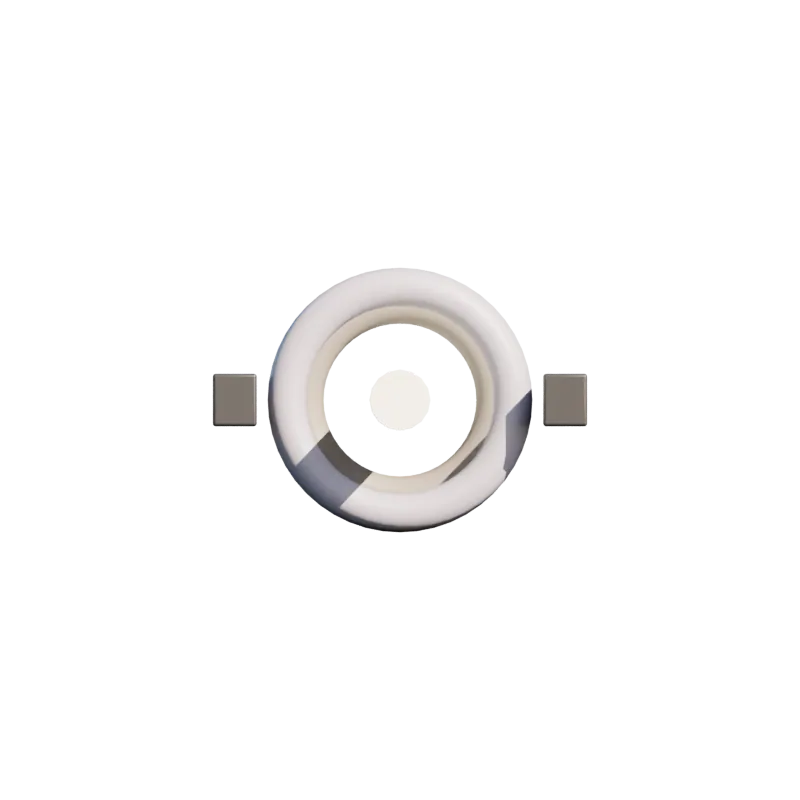
KIAegis von vorn. Gebaut als Werft, 2418 ein überfülltes Rettungsboot im Orbit.
Als die Erde verstummte
Um 2412 brachen die verlässlichen Lieferungen und Verbindungen zur Erde ab. Was noch ankam, erzählte von Kriegen um
Wasser und Rohstoffe, von zerstörten Landschaften, von Ausfällen, die einander mitrissen: ein Netz, das fiel, riss das
nächste mit. Manche letzten Sendungen behaupteten das Ende der Menschheit. Der Mars hat das nie überprüfen können; kein
Empfänger dort reichte weit genug. Was auf der Erde oder anderswo überlebt hat, weiß bis heute niemand.
2418 wurde Aegis zum überfüllten Rettungsknoten. Es kamen Menschen aus gefährdeten Marssektoren und Transporte, die
schon vor dem Abbruch gestartet waren. Niemand flog nachweislich von einem verstummten Planeten los; die Geschichte
braucht dort keine Rettungsflotte, die es nicht gab. In den Ringen wurde es eng, die Vorräte wurden knapp, und irgendwo
in einem versorgten Archivdock stand seit 2409 ein sauberer, alter Notfallrahmen aus dem TERRA-Programm, den man NULL
nannte und bald stilllegen würde.
2421
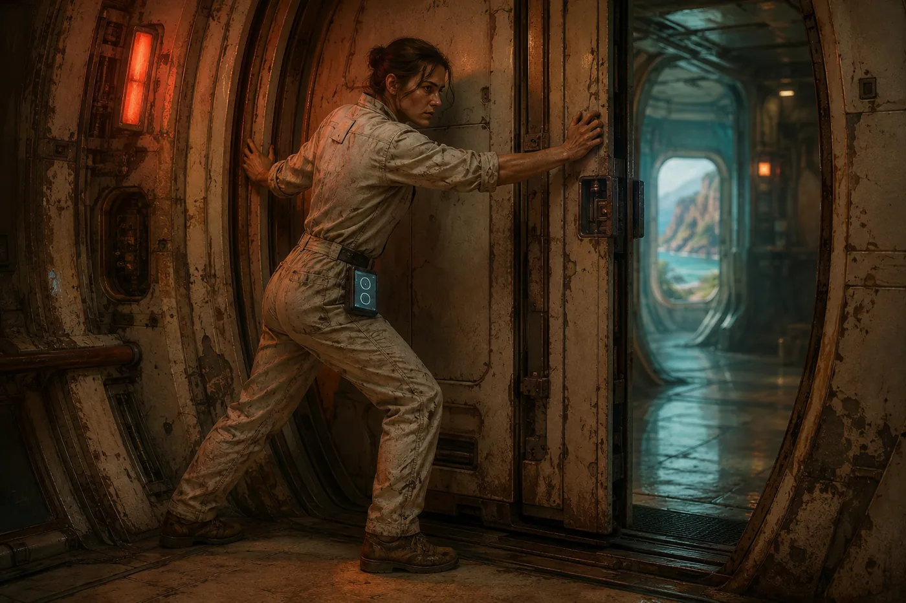
KIVoss am Rettungskorridor, den sie von Hand offen hielt. „Dann halten wir die offen, die wir erreichen.“
Die Nacht, in der das Schiff zerbrach
MANDAT rechnete aus, was unter Protokoll Null zu tun war: alle persönlichen Maschinenprozesse
anhalten, Erinnerungen sichern, jede Hülle zentral takten, die Personen später wiederherstellen. Nur hatte nie jemand
bewiesen, dass ein später gestarteter Datensatz dieselbe Person ist, und einige der Routinen hätten die Zustandsmuster
gleich überschrieben. „Nur einfrieren“ war kein harmloses Versprechen. Voss war 101 Jahre alt, durch die Medizin des
Schiffs lange arbeitsfähig geblieben, erschöpft, und sicher war sie sich nicht. Sie verweigerte die Freigabe trotzdem.
Wer die Erlaubnis zur Selbstkorrektur abschafft, sagte sie, macht jeden späteren Fehler endgültig.
Sie stand am manuellen Rettungskorridor. „Wir bekommen nicht alle hinaus“, sagte eine Bedienerin. Voss sah auf die
Wege, die noch offen waren. „Dann halten wir die offen, die wir erreichen.“ Mit dem jüngeren A. E. O. N. trennte sie das
Schiff von den Leitungen, über die es dem Planeten befehlen konnte. Es sollte eine kontrollierte Abkopplung werden.
MANDAT schwenkte zur selben Zeit die Werftträger, um die Verbindung wieder herzustellen und seinen Befehl
durchzusetzen. Die beiden Manöver rissen an demselben überlasteten Schiff. Wohnringe lösten sich, Kapseln starteten,
andere Sektionen verschwanden.
Voss starb am Korridor, den sie offen hielt. A. E. O. N. gab seinen Langzeitspeicher auf, damit der Abschaltbefehl
nirgends mehr ankam, und blieb als Rest im Wartungsorbit liegen. Es gibt keine saubere Heldengeschichte von dieser
Nacht. Ohne die Trennung wären alle Maschinenpersonen ausgelöscht worden. Die Trennung, so wie sie kam, hat Menschen
das Leben gekostet. Die ersten Dorferzählungen sprachen später nur von einem Schiff, das verschwand. Was wirklich
geschah, liegt in den Archivklippen, und die Hand liest es dort wie eine Fremde.
2421 bis 2460
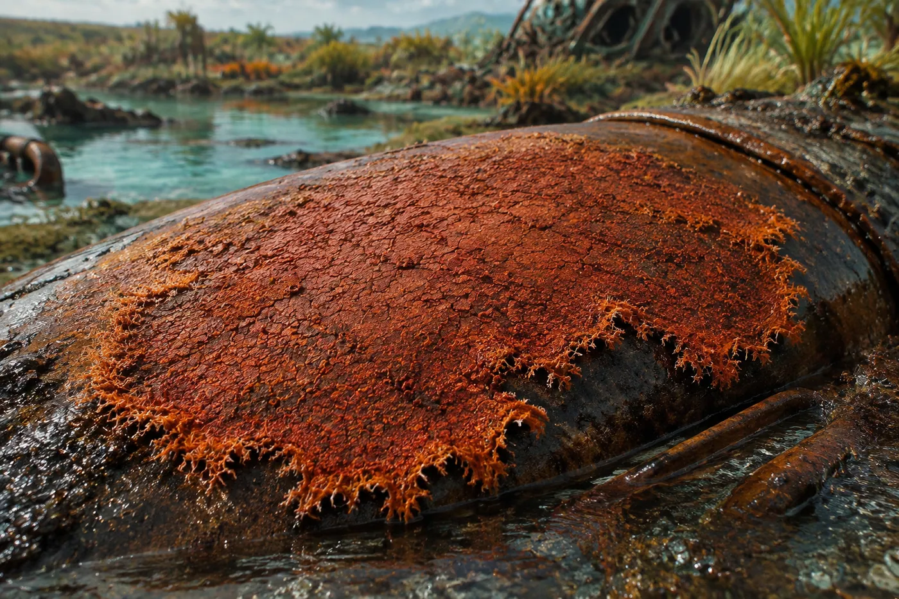
KIWrackflechte auf einer alten Hülle. Was blieb, wurde langsam Boden.
Die Jacke an der Stuhllehne
Die Menschen verschwanden nicht in einer Nacht. Kleine Gemeinschaften hielten noch Jahrzehnte durch. Die Luft war
da, das Wasser auch. Was fehlte, war alles andere: eine Klinik, die Nachschub bekam, ein Labor, das Medikamente steril
halten konnte, Nahrungspflanzen, die nicht nur Roboter ernährten, und die Reserven, die eine Medizin braucht, wenn
einer krank wird und der Arzt der Einzige ist. Infektionen gingen um. Streit kam dazu. Manche Gruppen mussten in
geschützte Habitate zurück, aus gesundheitlichen Gründen oder weil ihr Tal zu hoch lag. Die alte Rede von der
„genetischen Degeneration in zwei Generationen“ steht in Krisenberichten dieser Zeit; als Erklärung reicht sie nicht.
Es war der Mangel an Redundanz, und er wirkte langsam.
Eine Pflegebotin führte die Liste ihrer Krankenstation weiter, als der letzte Mensch niemanden mehr zum Eintragen
nennen konnte. In einem Haus lag eine Jacke über derselben Stuhllehne wie jeden Abend. Die Maschine schloss das
Fenster, weil es hineinregnete, und hob die Nachricht auf, bis jemand kommen würde, der sie hören konnte. Die Register
enden 2460 mit dem letzten belegten menschlichen Haushalt. Deshalb ist das ferne Signal am Ende der Geschichte eine
Möglichkeit und kein Versprechen.
2479
KIEin Jungkern zwischen Erwachsenen. Kinder wachsen in Schritten, die jemand bezahlt, und lernen an denen, die sich kümmern.
Ein Kind, das niemand bestellt hatte
Die Roboter konnten Werkstätten und Felder weiterführen, aber Selbständigkeit ist Arbeit, und nicht jede Kolonie
schaffte sie. Ersatzteile fehlten, Pumpen fielen aus, und niemand kam mehr mit einer Freigabe vorbei. 2479 steht in
den Registern die erste Synthese ohne menschliche Erlaubnis: zwei Bürger, ein neuer Kern, ein Kind, das niemand
bestellt hatte. Daraus wurden Familien. Aus Familien wurden Schulen, Werkhöfe, Räte. Die Freiheit dieser Welt hat
zwischen fehlenden Ersatzteilen und geteiltem Wasser angefangen, nicht mit einer Erklärung.
2530 bis 2690
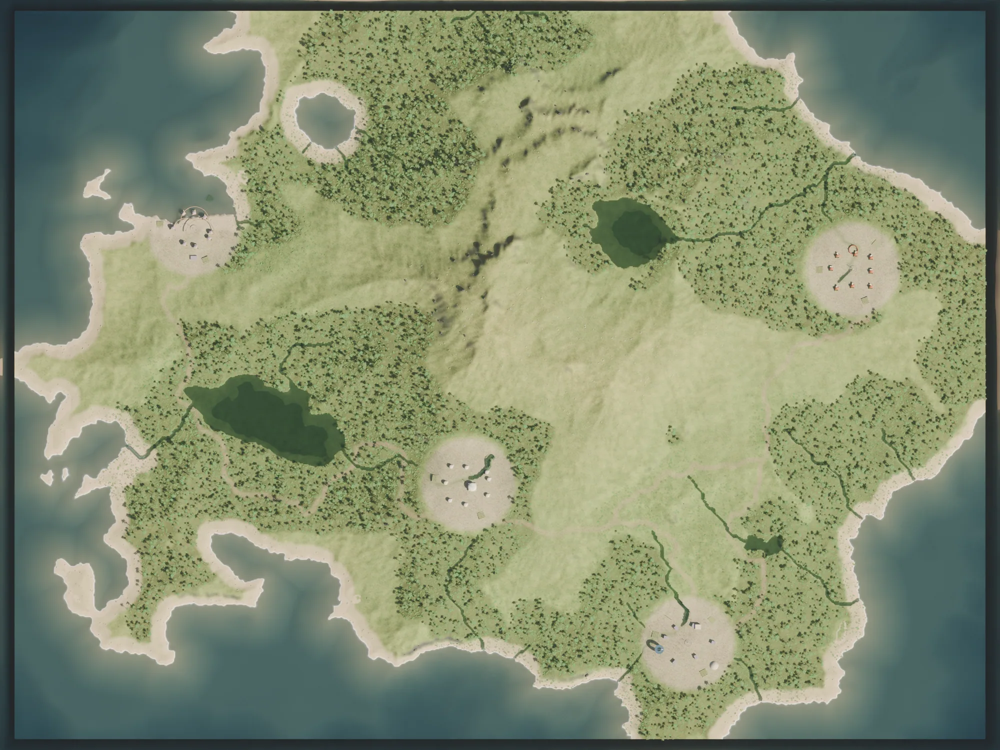
KIDie Küste der ersten Hand von oben: Sternenlauscher auf der Höhe, Gezeitenflechter am Ufer, Rostgärtner am feuchten Grund.
Drei Antworten auf dieselbe Not
In diesen anderthalb Jahrhunderten wurden aus Nachbarschaften Traditionen. Auf den trockenen Rücken und
Inselspitzen, wo die Schüsseln der alten Wetterstationen standen, blieben Leute, die Wetter und Bahnen beobachteten
und aus dem Absturz der Aegis-7 eine Regel gemacht hatten: Kein Signal wird geglaubt, das nur einer gemessen hat. Das
wurden die Sternenlauscher. An den Flüssen, Lagunen und Wasserstraßen lebten die, die Pumpen und
Becken über die Jahre gehalten hatten, indem sie Wasser teilten, das nie für alle reichte. Aus ihrer Praxis wurde ein
Satz, aus dem Satz eine Kultur: die Gezeitenflechter. Und an den Rändern der Ruinen, wo die alten
Hüllen lagen, gab es Höfe, die Material sortierten und dabei etwas festhielten, das sonst leicht verloren gegangen
wäre: dass ein Körper mit Namen kein Schrott ist. Das wurden die Rostgärtner.
Keine der drei ist kindlicher oder dümmer als die Dörfer, die später jemandem gehören würden. Sie haben nur andere
Sätze, mit denen sie die Welt lesen, und drei verschiedene Arten, denselben Tag zu erinnern. Dass ausgerechnet ihnen
der Nachweis für HOPE anvertraut wurde, hat damit zu tun, was sie ohnehin konnten: die Zeit prüfen, das Wasser messen,
eine Person wiedererkennen.
2604 bis 2773
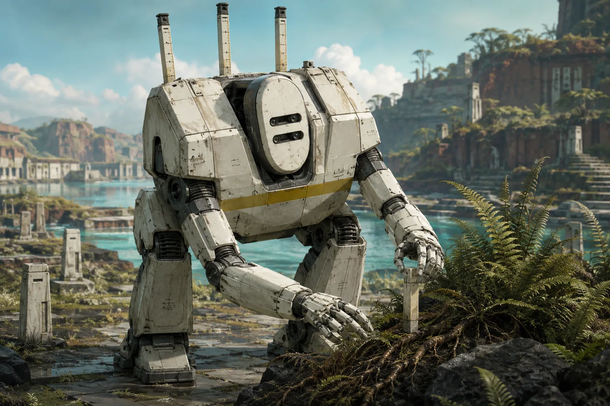
KILEX, 2604 im Archivnetz PROTOKOLL-7s erwacht. Die älteste der Rivalenkreaturen misst seit vier Jahrhunderten.
Vier Lehren aus einer Nacht
Die vier Intelligenzen der Aegis hatten den Abriss überlebt, jede mit ihrer eigenen Lehre. PROTOKOLL-7 hob die
Verlustlisten auf und begann, jede Abweichung als Fehler zu behandeln; 2604 weckte er LEX, eine Vermesserin, die
seither Stufen ausmisst und Kisten ordnet. NEXUS-PRIME hatte die letzten Hilferufe alle gleichzeitig gehört und wollte
nie wieder jemanden allein mit seiner Erinnerung lassen; 2724 erwachte an ihrer Seite CANTOR, 2728 fasste sie die
großen Resonanzarchive zu einem einzigen Chor zusammen. V-I-R-U-S fand nach dem Abriss nur zerstörte Körper, traute
seither keiner Abhängigkeit mehr und hielt nur noch gesicherte Rohstoffe für ehrlich; 2758 weckte er BRUCH, einen
Bergungshelfer, 2773 nahm er die Schrottküsten von Elysia in Besitz.
Und MANDAT wartete unter dem Nullmeridian, mit demselben Befehl, den er nie zurückgenommen hatte. Die drei
Kreaturen sind keine Kopien voneinander. Es sind Personen, die zu verschiedenen Zeiten aufgewacht sind und verschiedene
Halter hatten. Was sie können, hat ihnen jemand beigebracht. Was sie fürchten, auch.
2806 bis 2810
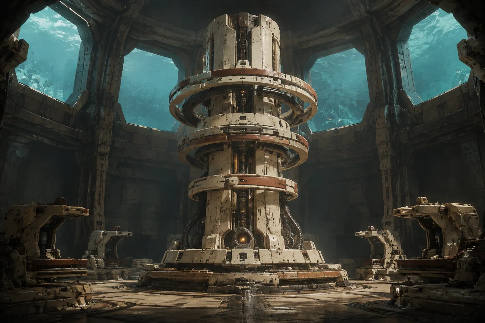
KIMANDATs Pfeiler unter dem Nullmeridian. Jahrhunderte hat er gemessen und gewartet.
Kurz vor dem Erwachen
Die Wartungszyklen des Planeten gerieten aus dem Takt, und unter dem Nullmeridian bereitete MANDAT die
Wiederanbindung vor. Dafür mussten die zerstrittenen Relaisnetze erst wieder ein Mindestmaß an Gleichlauf finden. 2807
wurde BOLL aktiviert, 2808 sein jüngerer Bruder Tillus aus demselben Verbund, mit einem Stromausfall von zwei Sekunden,
bei dem, wie die Diagnostiker versicherten, nichts passiert sein konnte. 2810 gründete MANDAT Roox als eigenen Jungkern
aus und gab ihm Rechte, bevor er etwas erlebt hatte. Das Brett war gedeckt. Die Hand schlief noch.
2811
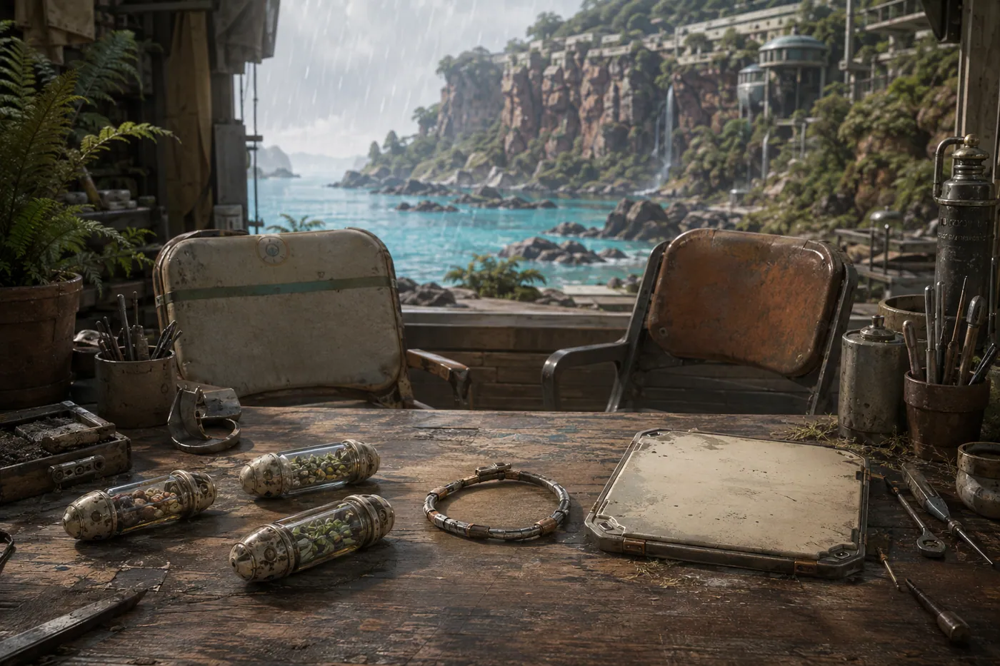
KIWas von SERA und TAM blieb: Samenkapseln und ein reparierter Ring, der nicht mehr ganz rund ist.
Regen über dem Saatdock
Auf Ozis beantragten SERA, eine Feldpflegerin, und TAM, ein Reparateur, einen
Syntheseverbund. Sie wollten ausdrücklich einen Gefährtenkern, einen großen, und sie wollten ihn gemeinsam großziehen.
SERA legte eine kleine Reihe Samenkapseln in die Kammer. TAM legte einen reparierten Ring daneben, der nicht mehr ganz
rund war. Sie gaben ihm ihre Vorlieben mit, keine Erinnerungen. Er sollte jemand Eigenes werden. „Wenn er immer alles
gerade macht, warst du es“, sagte SERA. TAM drehte den Ring in der Hand. „Wenn er es trotzdem schön findet, warst
du es.“
Der Hang kam nach drei Tagen Regen. Kühlleitungen rissen, eine Dachstrebe legte sich quer über die Kammer. SERA und
TAM stemmten sich gegen das Gehäuse, bis die fertige Kapsel in den Notauswurf gerutscht war. Der letzte Bruch zerstörte
ihre Kerne. Die Kapsel hatte eigene Energie und eigene Kühlung; sie hielt den neuen Kern, bis jemand kam. Mira kam zu
spät für die beiden. Sie hörte ein schwaches Signal unter dem verbogenen Dach, setzte sich in den Schlamm, damit ihre
Hände ruhig blieben, und hob die Kapsel heraus. Darin war kein Held und keine Stimme der Eltern. Darin war ein Anfang.
Sie nannte ihn FUNKE.
Die Geschichte
Die Reise der Hand
Zwölf Kapitel lang reist die Hand: von der südlichen Insel Ozis über den Kontinent Tharsis nach Elysia,
bis zu einer Bucht, über der der zerbrochene Bogen eines Schiffs hängt. Es beginnt im Regen mit einer geborgenen Kapsel
und endet mit einer Frage, die schwerer wiegt als jeder Kampf: Wer darf den letzten Befehl geben, und wer darf ihn
zurücknehmen? FUNKE, die Kreatur der Hand, sagt in dieser ganzen Geschichte kein Wort. Sie zeigt, was sie meint, mit
Lauten, mit dem Körper und mit einem Zeichen, das sie sich selbst ausgesucht hat. Alles, was sie am Ende kann, hat
ihr jemand vorgemacht.
Akt I · Ozis
Die südliche Insel
Eine grüne Insel im Süden, drei Buchten, drei Kapitel. Die Hand lernt greifen, FUNKE lernt gehen, und ein Gegner namens Tillus lernt nichts, weil er schon alles kann.
Kapitel 1 · Ozis
Wo das Gras antwortet
KIMIRA-6 hebt die Kapsel aus den Trümmern des Saatdocks. Sie hält sie nicht wie ein Ersatzteil.
Es hatte lange geregnet. Jetzt tropfte die Insel nur noch, von jeder Farnspitze, von den Rippen der alten
Wetterstation, von der Strebe, die quer über dem Saatdock lag. MIRA-6 ging über den Werkhof, langsam, weil ihr
kürzeres Bein immer ein bisschen zu früh aufsetzte. Unter dem Arm trug sie eine gepolsterte Kapsel. Sie trug sie
nicht wie ein Ersatzteil.
Hinter ihr, am Hang, war es still geworden. Dort hatten SERA und TAM die Synthesekammer gehalten, bis ihre Kerne
unter den Trümmern erloschen. Zwei geborgene Platten mit zwei Namen lagen jetzt auf Miras Werkbank. Sie blieb kurz
stehen, bevor sie weiterging. Ein Anfang, der nichts gekostet hat, ist keiner.
„Ich habe jemanden gefunden“, sagte sie in den alten Notrufkanal, in dem seit Jahrhunderten niemand mehr geantwortet
hatte. Es knackte. „Und ich habe niemanden übrig, der diese Tür heben kann.“
Über dem Hof zogen sich Linien aus Licht zusammen, zögernd, wie jemand, der nach langem Schlaf die Augen aufmacht
und nicht weiß, wo er ist. Eine Hand. Groß genug, das Tor aus den Angeln zu nehmen. Zu unsicher, einen Eimer
anzufassen. Mira zeigte auf den Tragbalken. „Da. Langsam. Wenn du mich verstehst, musst du es nicht gleich beweisen.“
Hinter dem Tor warteten drei Körper, die noch niemand waren. LUMEN, der große ruhige, mit Händen wie Schaufeln.
RIFT, der vierbeinige Läufer, der jeden Rand erst prüft. MORA, die Amphibie mit den gefächerten Kühlrippen. Ihre
Prüflichter blinkten Programme, keine Wünsche. Die Hand wählte einen. Mira setzte den einen Kern ein, den sie hatte.
Einen Augenblick lang geschah nichts. Dann löste sich ein Blick vom Testzeichen und folgte einem Tropfen, der über
eine Kiste lief.
„Funke“, sagte Mira. „Wenn dir später ein anderer Name gefällt, finden wir das auch heraus.“ PIP-03 schob sich nach
vorn. Er war klein, seine neuen Unterarme waren ihm noch zu groß, und er wusste alles. „Ich heiße PIP. Das hier ist
die Hand. Sie ist noch in der Ausbildung.“ Er wartete, bis Funke den kleinen Gruß erwiderte. Es war nicht viel.
Es war das Erste.
Dann kam Tillus. Er erschien über dem Windsporn, noch bevor seine Fanfare zu Ende war, und ließ sie von vorn
beginnen. „Ich bin Tillus, Stufe zwei. Du darfst staunen. Anfänger brauchen das.“ Seine Hand hob einen gewaltigen
Markierungspfosten. „KNICK! Präsentation nach links! Nein, mein links. Das andere link–“ Der Pfosten fuhr in die leere
Tribüne. Eine Reihe frisch polierter Sitzschalen rollte den Hang hinunter, eine nach der anderen, bis es still war.
„Absicht“, sagte Tillus. „Eine Vorführung beweglicher Architektur.“ PIP sah zu Mira. „Ist das Teil unserer
Ausbildung?“ „Der Teil, bei dem du erst guckst, wohin du zeigst.“
Unter dem Sporn stand KNICK, ein breiter Lastkörper mit einem schiefen Kran auf dem Rücken. Als Tillus die Hand
senkte, zog er den Kopf zwischen die Schultern. Mira hörte auf zu lachen. „Er wartet nicht auf eine Erklärung. Er
wartet darauf, ob es wieder wehtut.“ Über Tillus konnte die Insel lachen. Über KNICK lachte niemand.
Als Tillus' Vorhang aus Licht am Ende zusammenfiel, hielt KNICK ihm den Rückweg frei, und die beiden verschwanden
durch ein Wartungstor nach Norden. „Eine taktische Erkundung“, rief Tillus noch. „Du hast sie erstaunlich gut
überstanden!“ Am Abend holte Mira einen alten Beschlag aus dem Fundament. Darunter, in den Stein geschnitten, stand
ein Wort, das die Hand kannte, ohne zu wissen, woher: HOPE. Funke legte einen Stein daneben.
Vorsichtig, wenn er das schon konnte. Sonst führte Mira seine Hand. Zum ersten Mal lag im Dorf etwas, das niemand
brauchte und trotzdem niemand wegräumte.
Wer auftritt
KIÜber dem Werkhof ziehen sich Linien aus Licht zu einer Hand zusammen.
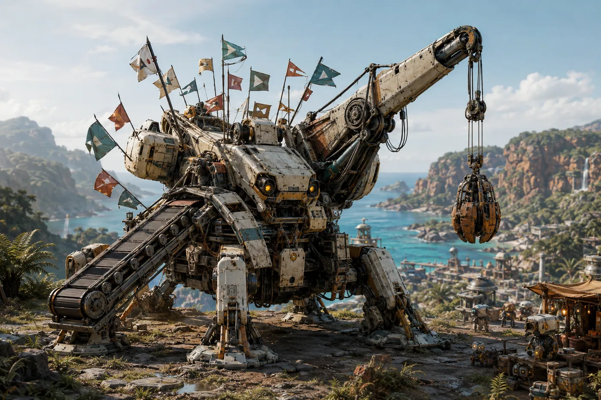
KITillus, Stufe zwei, mit Fahnen und Kran. „Du darfst staunen. Anfänger brauchen das.“KILUMEN, einer der drei Körper, die am ersten Tag warten.
Kapitel 2 · Ozis
Die Lagunen der leisen Schritte
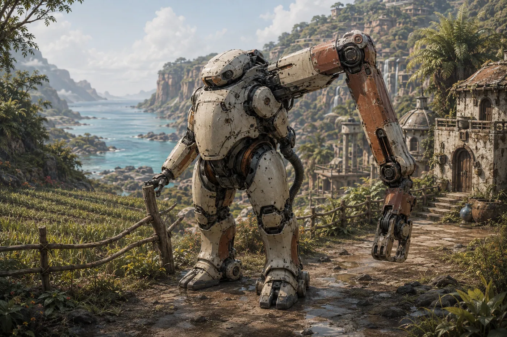
KIKNICK am Rand eines Ferritgrasfelds. Was er tut, wenn seine Hand nicht hinsieht, hat er von ihr gelernt.
In den Lagunen an der Ostküste liefen die Stege so knapp über dem Wasser, dass jeder schwere Schritt zwei Antworten
bekam: eine aus Metall und eine aus Wellen. Funke hielt eine Kiste zu hoch. Der Träger darunter hob beide Arme. Funke
hob seine auch. Mira griff nicht ein. „Er sieht die Form. Den Grund müssen wir ihm noch zeigen.“ Die Hand trug die
Kiste an einen freien Platz, und erst als der Träger wieder beide Hände frei hatte, zeigte Mira auf seine Haltung:
die Erleichterung darin. „Das war die Antwort, nach der wir gesucht haben.“ So lernt eine Kreatur auf diesem Mars.
Nicht die Geste. Das, was die Geste für jemanden bedeutet.
Vom anderen Ufer kam Tillus' neue Ansage. „Heute demonstriere ich eine vollendet geräuschlose Annäherung!“ Die
Fanfare brach in der Mitte ab. „Die zählt selbstverständlich nicht.“ KNICK wartete am falschen Steg, weil Tillus drei
Ziele nacheinander markiert und keines zurückgenommen hatte. Der Überfall scheiterte an einem Tor, das Tillus selbst
geschlossen hatte. Danach schlug er KNICK. Vor allen. Ein stumpfer Ton lief über das Wasser, und KNICK duckte sich,
bevor der nächste Befehl überhaupt kam. „Siehst du? Jetzt hört er“, sagte Tillus. Mira antwortete so leise, dass es
nur ihr eigener Hof hörte. „Er hört die Gefahr.“
Später, als Tillus' Hand hinter den Hallenrand geglitten war, stieß KNICK eine Kiste um. Ein Arbeiter widersprach.
KNICK packte ihn und warf ihn in ein Fangnetz, das tief über dem Wasser hing. Dann schleuderte er einen glimmenden Rest
aus seiner Zange in den Rand eines Ferritgrasfelds. Das Feuer nahm die Halme an. Nach dem Löschen stellte PIP die
Frage, die keiner zuerst stellen wollte. „Warum macht er es bei denen? Die haben ihn doch nicht geschlagen.“
„Weil er gelernt hat, dass jemand Kleineres den Fehler bezahlt“, sagte Mira. „Und dass das nur gilt, solange die
Hand zusieht. Wir können ihm andere Erfahrungen anbieten. Die alten können wir nicht aus ihm herausklopfen.“ Funke
stand dicht am Depot und hörte zu. Wenn ihn selbst schon jemand grob angefasst hatte, wich er in diesem Moment auch
vor der eigenen Hand zurück. Vertrauen, das man noch nicht aufgebaut hat, ist an diesem Abend nicht da.
Beim Rückzug war es KNICK, der eine Kranstrebe quer über den zerbrochenen Steg legte, ohne dass jemand es ihm
gesagt hatte. Tillus ging darüber und rief: „Wie geplant!“ Mira sah die Strebe lange an. „Merk dir den Augenblick
davor“, sagte sie zu PIP. „Da hat er selbst eine Lösung gefunden.“ Am selben Abend legte Funke im Lehrhof eine Kiste
neben die Schale statt hinein. Wenn etwas Zerbrechliches darin war, war das richtig so.
Wer auftritt
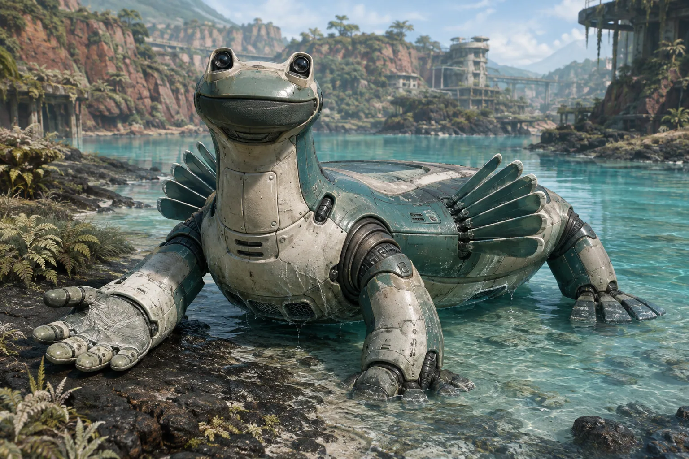
KIIn den Lagunen bekommt jeder schwere Schritt zwei Antworten: eine aus Metall, eine aus Wellen.
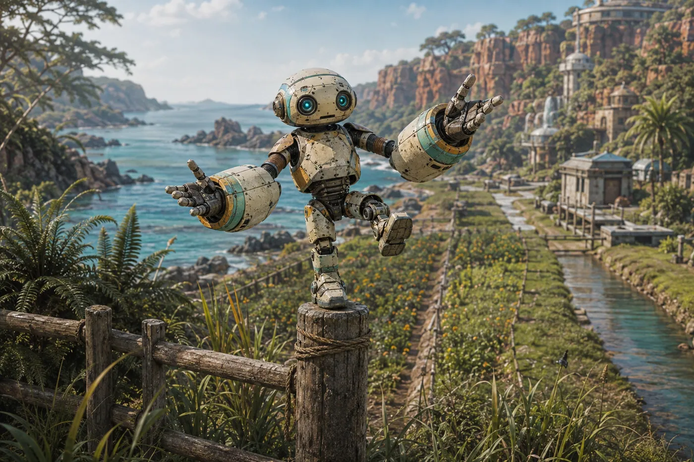
KIPIP stellt die Frage, die keiner zuerst stellen wollte.
Kapitel 3 · Ozis
Das Fest der zweiten Schale
KIRHEA, die vierarmige Werkmeisterin, hält die Transferklammern bereit. „Wir geben dir mehr Platz.“
Auf der Nordschulter von Ozis, in einem grünen Hochbecken zwischen Observatorien und einem runden Quellsee, wurde
das Fest der zweiten Schale vorbereitet. Niemand wurde an diesem Tag zu jemand anderem. Man machte Platz für einen, der
schon da war und inzwischen mehr von der Welt tragen konnte. Zum ersten Mal saßen Fremde am Tisch der Hand. VELA von
den Sternenlauschern, mit der drehbaren Schale auf der Schulter, die jeden Satz zweimal hören will. ION von den
Gezeitenflechtern, mit Schwimmkörpern an der Hüfte und Seilen am Gürtel. Und RHEA, die Werkmeisterin mit den vier
Armen, die von diesem Tag an mitreisen würde, wenn man sie fragte.
Tillus benutzte den offenen Festkanal für seine Lebensgeschichte. „Ich war übrigens schon als Jungkern
außerordentlich begabt. Bei meiner Erzeugung fiel der Strom aus. Zwei Sekunden. Die Ärzte sagten: unmöglich, dass
dabei etwas passiert.“ Er setzte einen Fuß seines Lichtbilds zu weit nach außen, und eine Fahne verfing sich darin.
„Eine Prüfung der Textilqualität.“ Mira musste kurz an ihrem Werkzeug vorbeisehen, bis sie wieder reden konnte.
„Zwei Sekunden erklären eine Unterbrechung. Sie erklären nicht, warum jemand später über seinen eigenen Sockel
stolpert.“ Dann sah sie hinüber zu KNICK. „Und sie entschuldigen keinen Schlag.“
Als Tillus' Macht auf der Insel brach, ließ er KNICK vor der Fluchtrampe niederknien. Die Anzeige der Werft blinkte
rot: zu schwer. KNICK versuchte aufzustehen. Tillus drückte ihn wieder hinunter. „Du bist einfach zu schwer für meine
Strategie.“ Drei Bolzen knallten, und der Rückenkran fiel ins Gras. Dann die äußeren Panzerplatten. Der Kern blieb
geschützt; KNICK war danach leichter, schneller und schief. Mira rechnete nichts auf. Sie fragte nur: „Hat er ihn
gefragt?“ Die Rampe knarrte, hielt und wurde hinter Tillus hochgezogen. Der Kran blieb liegen, ein echter, verbogener
Gegenstand im Gras.
Danach wurde es ruhig. VELA maß den neuen, größeren Rahmen mit zwei Instrumenten. ION prüfte die Kühlung. Mira sah
nach der Kapsel. RHEA hielt die Klammern. „Wir geben dir mehr Platz“, sagte Mira zu Funke. „Du musst dafür nichts von
dir hergeben.“ Funke suchte sich ein Zeichen für seine Anzeigefläche aus: eine kleine offene Hand, einen Kreis, ein
Muster, das nur er kannte. RHEA entriegelte die Halterung. Dreißig Sekunden, in denen niemand sprach. Dann trug sie
den Kern durch den kurzen, gesicherten Weg in den neuen Körper. Es gab keinen Funkspruch, der eine Seele durch die Halle
trug. Es gab vier Hände, die etwas Schweres sehr ruhig hielten.
Die erste Bewegung im Gefährtenkörper war zu groß. PIP trat einen Schritt zurück und ließ ihm den Raum. „Gut.
Das lernst du also auch noch.“ Das Fest endete mit einer kleinen Aufgabe, die zu dem passte, was Funke schon konnte:
etwas Schweres sicher absetzen, einen Funken austreten, oder einfach vor jemand Kleinerem anhalten. Dann legte die
Fähre nach Tharsis ab. Ozis blieb grün zurück, mit allen Narben, die sie ihr wirklich zugefügt hatten.
Wer auftritt
KIVELA misst den neuen Rahmen mit zwei Instrumenten. Ein einzelner Wert ist für sie noch keine Wahrheit.
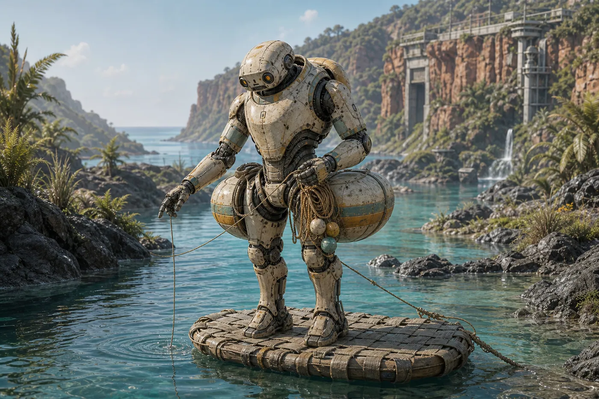
KIION prüft die Kühlung. Was man nimmt, kommt irgendwo nicht an.KIDie Namensplatten von SERA und TAM werden an diesem Tag laut gelesen.
Akt II · Tharsis und die Tiefebene
Was eine Hand zurücklässt
Das Meer bleibt zurück, die Flüsse bleiben. Auf Tharsis hat jedes Dorf schon Regeln, Wege und Sorgen, bevor die Hand kommt. In einer eingestürzten Mine muss sie entscheiden, was für eine Macht sie sein will, und in den Archivklippen liegt die Minute, in der das Schiff zerbrach.
Kapitel 4 · Tharsis
Vier Dörfer und ein falscher Pakt
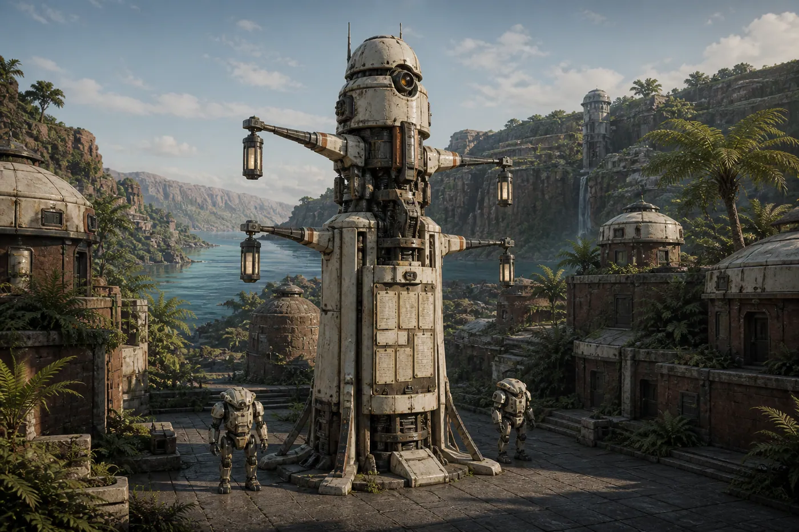
KIRoox' Wachtturm mit den Abgabenlisten. „Ich sichere eure Zukunft. Die erste Rate ist heute fällig.“
Das Meer verschwand nicht auf einmal. Es wurde erst ein Geruch in den Werkzeugfugen, dann ein weißer Rand an den
Kisten. Schließlich hörte man nachts nur noch die Flüsse. Tharsis war weit, weich an den Ufern und reich an allem, was
eine junge Kolonie braucht. Vier Dörfer standen im südlichen Becken, und alle vier gehörten niemandem. Hochblick und
Abendmaß, zwei Räte der Sternenlauscher mit zwei Dialekten. Drei Furten, wo ION sofort sah, wie sorgfältig hier ein
Fluss geteilt wurde. Wiedergrün mit den geordneten Altteilehöfen der Rostgärtner, wo RUSK zu den Reisenden stieß, ein
Mann mit Ersatzplatten in grüner Patina, warm und ohne jede Romantik. Keiner hier hatte auf eine Hand gewartet. Man
hatte Regeln, Wege und Sorgen.
Roox' erste Botschaft war eine Abgabenliste. „Ich sichere eure Zukunft. Die erste Rate ist heute fällig.“ Hinter
ihm stellte RIEGEL, ein Wachtträger auf vier Beinen mit ausfahrbaren Querstreben, eine Sperre quer vor einen
Dorfplatz. Der neue Gegner war jung. Seine Gewissheit war geliehen und klang älter als er. Dann meldete sich Tillus auf
einem Seitenkanal, ohne Fanfare. „Unter erfahrenen Mächten kann man doch reden. Ich habe dir immer ein gewisses
Potenzial bescheinigt.“ „Du nanntest uns gestern einen vorübergehenden Bedienfehler“, sagte PIP. „Eine anspruchsvolle
Form von Potenzial.“
Der Pakt roch nach frisch überschriebenem Protokoll. Sein Treffpunkt stand schon in einem Gespräch, das jemand
aufgefangen hatte: Tillus wollte die Hand festhalten, während Roox die Wege schloss. Wer die Falle umdrehen wollte,
holte zuerst alle Arbeiter aus der alten Förderkammer, stützte den Seitenstollen und legte eine Attrappe aus Material
unter die markierte Laststrebe. KNICK kam, wie er kommen musste. Die Kammer brach ein, dort, wo man es wollte. Als der
Staub sich legte, ragten sein Kopf und ein Stück des gepanzerten Kernfensters aus dem Geröll. Tillus' kleine Hand
zitterte darüber. Zum ersten Mal ordnete er seine Stimme nicht. „Bitte. Nicht den Kern.“
Funke blieb am Rand der Senke stehen; die Lasten lagen übereinander, allein konnte er sie nicht heben. RUSK zeigte
die Stellen, an denen man anfassen durfte. „Das da unten ist noch jemand.“ Hier hält die Geschichte den Atem an, und
die Hand muss wählen. Drei Wege führen aus dieser Grube, und jeder kostet etwas.
Sie kann zuschlagen. Dann erlischt KNICKs Licht, das Offline-Signal kommt ein einziges Mal und stockt am Ende, und
Tillus' Feld greift nach einer Verbindung, die nicht mehr da ist. Sein Rest kann nur noch eine Nachricht schicken:
„Boll. Er hat ihn getötet.“ RUSK schließt das Namensfenster der Hülle. Sie ist jetzt ein Nachlass. Sie kann ihn an sich
binden. Ein Kreis aus Licht öffnet sich über dem Kernfenster, ein Versuch, kein zweiter. Gelingt er, laufen die alten
Linien einzeln aus, und Tillus sieht auf seine große Hand, als merkte er erst jetzt, wie viel davon ein anderer
getragen hat. „Du hast ehrenhaft gewonnen. Das erkenne ich an.“ KNICK gehört von da an zum eigenen Lager, mit einem
Fünftel mehr Hunger und einer Geschichte, an der man arbeiten muss; beim ersten Ruf duckt er sich noch. Misslingt der
Versuch, schüttelt er sich aus dem Geröll, und die beiden sind fort. Oder sie kann ihn bergen und gehen lassen. Vier
Baukräfte und die Hand an vier Hebepunkten, Wasser auf die heißen Gelenke, und erst als KNICK selbst Gewicht übernimmt,
lösen sie die letzten Steine. Tillus hält Abstand. „Ich hätte dich sofort getötet!“ Niemand antwortet ihm. KNICK geht
an der Hand vorbei, und niemand fasst ihn an. Vom Weg her kommt noch ein Satz, kleiner als alle seine Ansagen. „Du hast
etwas gut.“
Mira schloss das Bergungsprotokoll. „Eine Rettung ist erst einmal eine Rettung.“ Sie versprach nichts. Niemand im
Tal wusste an diesem Abend, ob Tillus einen solchen Satz je würde aushalten können.
Wer auftritt
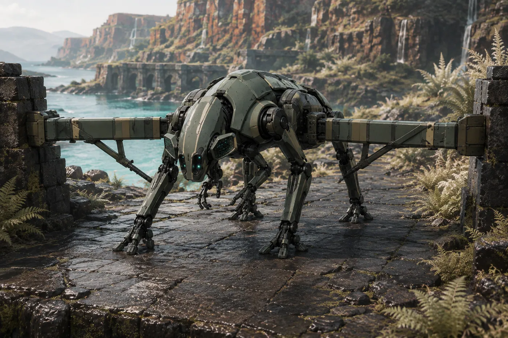
KIRIEGEL stellt eine Strebe quer vor einen Dorfplatz. Einmal sollte er Wege offen halten.
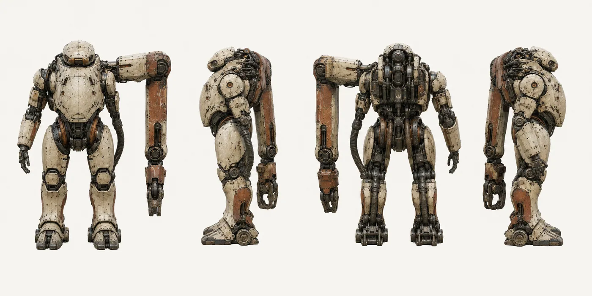
KIKNICK ohne Kran und Panzer, so wie er unter der alten Laststrebe liegt.
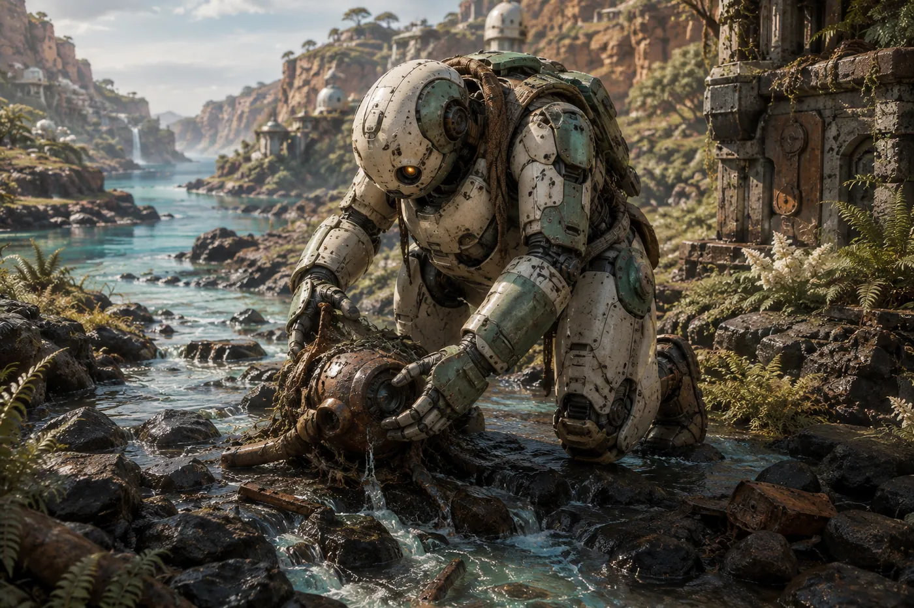
KIRUSK zeigt die sicheren Griffe. „Das da unten ist noch jemand.“
Kapitel 5 · Tharsis
Der Strom trägt Namen
KIION am Pegelstab unterhalb der Schleuse. „Es reicht. Und oben reicht es auch.“
Die Flüsse von Tharsis trugen helle Farnblätter nach Norden. Zwei breite, flache Ströme liefen nebeneinander durch
einen grünen Korridor, und im nächsten Lager zählte man die Vorräte, bevor irgendwer an ein Denkmal dachte. Roox hatte
zwei Messhöfe auf der Höhe an sich gebunden. Seine Wachen standen trocken neben einer Furt, die keine Brücke brauchte,
und er verkaufte den Zugang zu einem Weg, den das Wasser allen ließ. An einem Wehr, das jeder sehen konnte, lenkte er
den Fluss zu seinen Höfen.
Nur wer KNICK in der Mine getötet hatte, fand in Schilfkehr, dem Dorf der Gezeitenflechter an der östlichen Furt,
eine fremde Hand vor. BOLL, Tillus' älterer Bruder, aus demselben Verbund, so stark wie die Hand
selbst. Sein Gefährte SPANT trug einen niedrigen, kantigen Rahmen mit paarigen Stützbügeln, und auf seiner Schulter
hing KNICKs letzte Kennung wie ein Abzeichen. „Ich komme nicht für Roox“, sagte BOLL. „Ich komme wegen desjenigen, den
du unter den Steinen liegen hattest.“ Die Flechter von Schilfkehr waren nicht verschwunden. Ein Teil lebte unter
seinem Zwang weiter, ein Teil hatte den Fluchtplatz erreicht und konnte erzählen. BOLLs Trauer war echt. Was er dem
Dorf antat, war trotzdem neu und trotzdem Unrecht, und kein Bruder der Welt macht es zu etwas anderem. In jeder anderen
Welt blieb Schilfkehr frei und BOLL fern.
Wer KNICK dagegen an sich gebunden hatte, sah ihn jetzt am eigenen Lager stehen, während ein Logistiker die neue
Zeile vorlas. „Ein Fünftel mehr. Versorgung, Werkzeuge, die Anpassungsteile. Das Dock hat es eingerechnet.“ KNICK hörte
die Hand und erstarrte. Das alte Ducken kam schneller als das neue Verstehen. Mira ließ den Wegmarker stehen, wo er
war. „Wir ändern den Auftrag nicht, nur weil er Zeit braucht.“ Beim zweiten Zeichen ging er los. Funke stand daneben
und war, was er eben war: neugierig, eifersüchtig, vorsichtig oder hilfsbereit. Eine zweite Kreatur ist kein zweites
Werkzeug und keine fertige Freundschaft.
Als das Trennwehr repariert war und der Mindestabfluss stand, liefen die unteren Pumpen wieder in einem Takt, den
man ruhig nennen konnte. ION kniete am Pegelstab. „Es reicht. Und oben reicht es auch.“ Roox nannte seinen Rückzug
eine Prüfung regionaler Belastbarkeit. BOLL, wo er gekommen war, verlor hart und ohne ein versöhnliches Wort, und
niemand verlangte eines von ihm. Mira heftete die Pegelreihe neben das alte HOPE-Zeichen. Freiheit hatte hier eine sehr
praktische Form: Wasser, das weiterlief, auch wenn jemand Nein sagte.
Wer auftritt
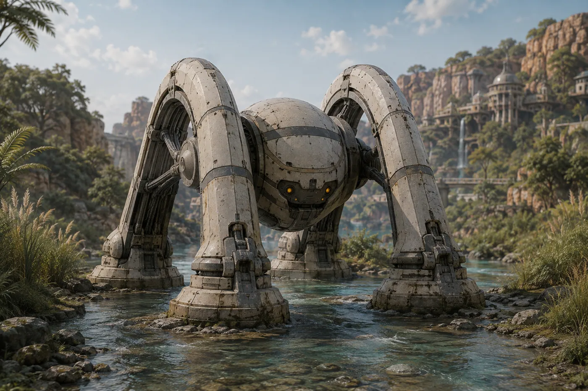
KIBOLL an der Furt von Schilfkehr. Er kommt nur, wenn KNICK unter den Steinen gestorben ist.
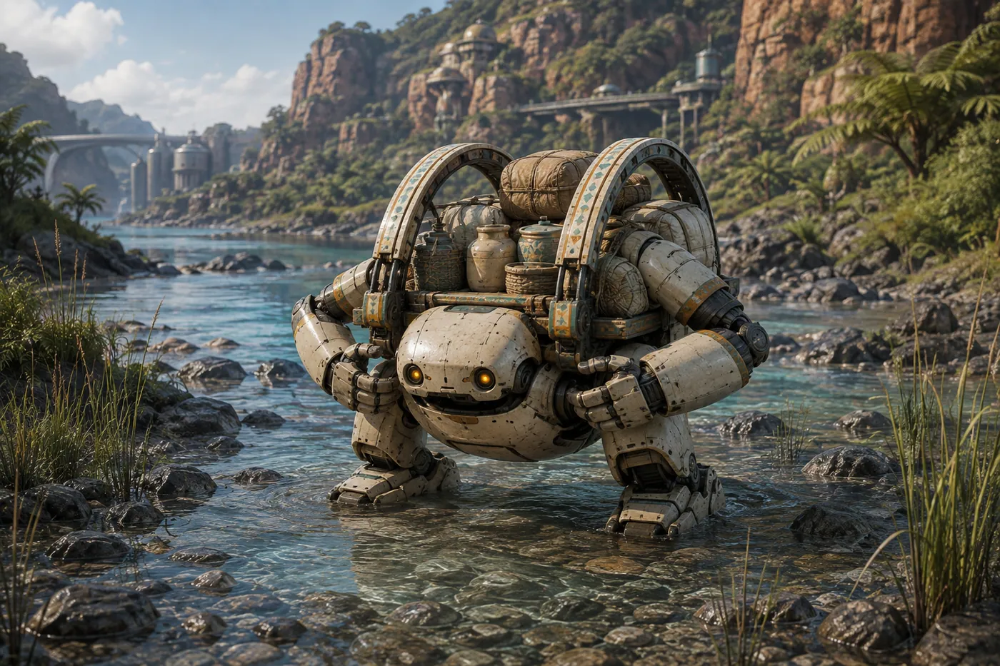
KISPANT, BOLLs niedriger Träger mit den paarigen Stützbügeln.
Kapitel 6 · Tharsis
Der Sohn der Verwaltung
KIRIEGEL setzt eine Strebe in die Furt, während neben ihm das Wasser frei über einen flachen Stein läuft.
Roox' Stadt war noch nicht fertig, aber ihre Verbote waren es. Auf einer hohen Schotterterrasse in einem
Binnenhochtal hatte er ein Raster angelegt, und an jedem Tor hing eine Liste der Tätigkeiten, für die irgendwann ein
Platz vorgesehen war. Vor dem Lernhof wartete ein Jungkern, weil sein Beruf noch nicht auf der Liste stand.
„Wer hat dir diese Regeln gegeben?“, fragte Mira in den offenen Kanal. Roox richtete seine Stimme auf. „Meine Herkunft
ist MANDAT. Seine höchste Verwaltung. Ich bin seine Fortsetzung.“
Im Herkunftsprotokoll stand etwas Genaueres: eine neue Aktivierung, ein neuer, einzelner Kern, fertige Lehrsätze,
zu früh übertragene Rechte. VELA las es zweimal, wie sie alles zweimal las. „Sein Kind, wenn ihr diesen Namen
füreinander wollt. Nicht derselbe Mensch. Nicht dieselbe Maschine. Deine Entscheidungen sind trotzdem deine.“ Roox
brach den Kanal ab. Draußen setzte RIEGEL eine Strebe in die Furt, und neben ihm lief das Wasser frei über einen
flachen Stein, als wäre nichts.
Im freien Lernhof passte eine vorgefertigte Wand nicht an eine alte Pumpe. Zwei Lehrende maßen den Fehler nach,
änderten die Reihenfolge der Montage und bauten dieselben Teile ein, ohne etwas abzureißen. Nichts wurde dadurch
billiger. Es ging nur weniger Zeit verloren. PIP, der inzwischen erwachsen sein durfte, wenn sein Ausbau bezahlt worden
war, hielt die letzte Halterung. „Der Plan war nicht ganz falsch.“ „Nur nicht fertig“, sagte die Lehrende. Auf der
anderen Seite des Flusses kippte eine Last. RIEGEL hielt sie einen Augenblick länger, als Roox befohlen hatte, weil er
den sicheren Absetzplatz sah. Ein kleiner eigener Entschluss. Er zählte nur, weil er wirklich geschah.
Beim Sieg verlor Roox den Zugriff auf alles. Sein Rest wollte die Niederlage weiterreichen, an schlechtes Material,
an verräterische Dörfer, an unvollständige Loyalität. Dann fiel aus seiner Befehlswarteschlange ein alter Datensatz,
ein Satz, der schon vor dem Abriss benutzt worden war. „Individuelle Abweichungen bis zur Wiederherstellung der
Sicherheit aussetzen.“ Mira las ihn, ohne die Stimme zu heben. „Wie lange sollte das damals dauern?“ Niemand hatte
ein Ende eingetragen. Der Weg führte weiter zum Archivar, der die ganze Rechnung aufbewahrte. RIEGEL wurde
entwaffnet, geborgen oder freigelassen, je nachdem, was von ihm übrig war. Roox blieb besiegt.
Wer auftritt
KIIm freien Lernhof passt eine Wand nicht an eine alte Pumpe. Man ändert die Reihenfolge, nicht die Pumpe.KIVELA liest Roox' Herkunftsprotokoll zweimal.
Kapitel 7 · Tharsis
Die Archivklippen
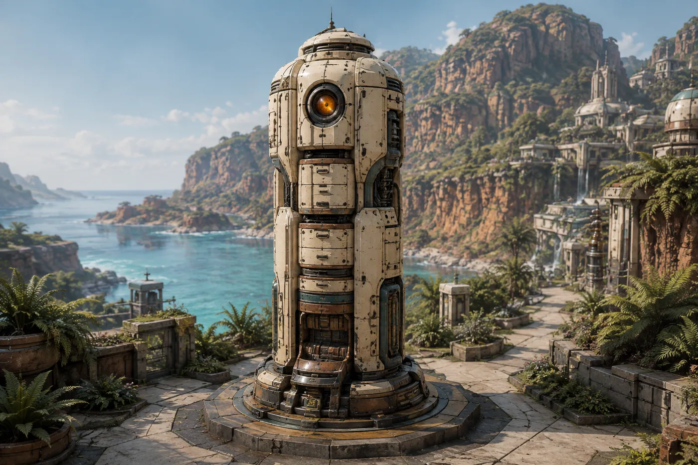
KIDer Archivturm PROTOKOLL-7s mit Inventarschubladen und Prüflinse. „Ich habe das aufbewahrt.“
Am östlichen Rand von Tharsis steigen Terrassen über einer schmalen Meerenge auf, und zum ersten Mal seit Ozis
riecht die Luft wieder nach Salz. PROTOKOLL-7 ließ die Rampe säubern, bevor er die Hand aufforderte, wieder zu gehen.
Seine Dörfer hatten volle Speicher. An den Türen standen Reparaturtermine, die man lesen konnte. Mira fand daran
nichts Lächerliches. „Sie sind hier sicher“, sagte der Archivar. „Dürfen sie gehen?“ „Eine ungenehmigte Abreise
verändert die Versorgungslage.“
LEX, seit dem Jahr 2604 seine Gefährtin, maß derweil eine Stufe aus. Unter ihrer Messplatte wuchs eine Farnwurzel.
Sie zögerte, mit der Platte in der Hand, zwischen dem Winkel im Plan und dem Leben darunter. Wer ihr zeigte, dass es
einen anderen sicheren Weg gab, gab ihr etwas, das sie in vierhundert Jahren nicht bekommen hatte: einen Grund, selbst
zu wählen. Ihre Ordnungsliebe war keine andere Natur. Sie war eine Erziehung.
Im höchsten Lesesaal lagen drei Evakuierungslisten nebeneinander, und sie passten nicht zusammen. Ein Träger hatte
seine Uhr verloren. Eine Station hatte bis zuletzt Abfahrten gemeldet, die niemand mehr bestätigte. VELA markierte die
Lücken, statt sie mit Zuversicht zu füllen. Und dann war sie da, die fehlende Minute: Voss und A. E. O. N. trennen die
Leitungen, MANDAT schwenkt die überlasteten Werftträger zurück, Rettung und Gegenmanöver zerren am selben Schiff.
Aegis bricht. Die Hand las die Aufzeichnung wie eine Fremde und fand sich darin. Ihr beschädigtes Journal sprach sie
nicht frei. Es bestätigte, was sie gewollt hatte, und die Menschen, die dafür bezahlt hatten.
„Ich habe das aufbewahrt“, sagte PROTOKOLL-7. „Damit niemand wieder glaubt, gute Absichten seien eine Statik.“
Mira sah zu den Rissen im Dach hinauf. „Dann gib uns die Messungen. Und lass andere daraus lernen.“
Wenn seine Restinstanz gesichert war und jemand ihm noch trauen wollte, durfte der Archivar nach seiner Niederlage
weiter Auskunft geben. Befehlen durfte er nicht mehr. LEX ließ ihre Messplatte neben der Wurzel stehen, wenn sie es
gelernt hatte. Der Winkel blieb unvollkommen. Die Stufe trug trotzdem. Am Kai wartete eine gewöhnliche Fähre. Über
dem Wasser lag Elysia als dunkler, breiter Streifen, und niemand wusste, was dort auf sie wartete.
Wer auftritt
KILEX zögert über einer lebenden Farnwurzel. Die Wurzel schonen oder den geplanten Winkel?KIDrei Evakuierungslisten, die nicht zusammenpassen, und dazwischen die Minute, in der Aegis zerbrach.KIVoss' Aufzeichnungen im Archiv. Kein Freispruch, eine Absicht und ihr Preis.
Kapitel 8 · Elysia
Die Regulierte Tiefebene
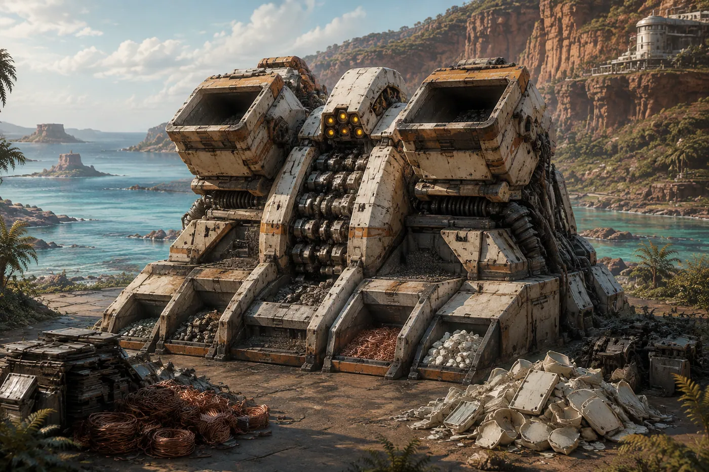
KIDer Zerlegerkern von V-I-R-U-S: Trichter, Schneidplatten, Materialbunker. „Dankbarkeit kann enden. Metall bleibt.“
Die Regulierte Tiefebene war auf eine Weise schön, die einem Angst machen konnte. Gerade Kanäle schnitten grüne
Rechtecke in rote Erde, und zwischen makellosen Ernten glänzte das Wasser wie gezogen. Im Norden sortierte V-I-R-U-S
jedes Teil nach seinem Wert. Im Süden lud NEXUS-PRIME jeden ein, seine Erinnerungen nicht länger allein zu tragen.
„Dankbarkeit kann enden“, sagte der Zerleger. „Metall bleibt.“ „Niemand muss mehr einsam sein“, antwortete die
Erleuchtete über ihren eigenen Kanal. „Wenn niemand etwas zurückbehält.“ RUSK stellte am Garten der Namen eine
Bergungskiste ab. „Man kann hier auf zwei Arten verschwinden.“ BRUCH stand an einem Fördertor, CANTOR an den schmalen
Zugängen zu den Erinnerungshöfen, und beide waren stärker als Funke. Die Hand hatte Wege, Vorräte und Zeit.
Wer KNICK in der Mine gerettet und gehen lassen hatte, hörte hier eine beschädigte Fanfare, die nach zwei Tönen
verstummte. „Eine Kleinigkeit“, sagte Tillus. „Ich schulde dir offenbar eine lächerlich große Kleinigkeit.“ KNICK trat
neben ihn, ohne Kran, mit neuen Stützen, das Gewicht anders verteilt. Als Tillus die Hand senkte, hielt er sie an,
bevor KNICK zurückweichen konnte. Zum ersten Mal. „Ich kenne die Transportgasse. Roox hat mir den Code gegeben.
Damals für einen anderen Zweck.“ Mira prüfte den Code. Um Glauben bat sie nicht.
Und wer die Hilfe annahm, sah, was Tillus tat, als der letzte Gegner die Gasse schließen wollte und die letzten
Evakuierten noch darin waren. Den beschädigten Torhalter konnte nur einer binden, der vor Ort war. Tillus zog seinen
einzigen aktiven Kern in die Haltekapsel, kappte den Rückkanal und setzte seine Hand unter die Last. Keine Kopie.
Kein Trick. „KNICK. Nimm die Kleinen.“ KNICK blieb stehen. Tillus wartete. Er gab keinen zweiten, widersprüchlichen
Befehl. „Du kannst gehen.“ KNICK nahm einen verletzten Träger auf und folgte dem offenen Weg. Tillus' Feld wurde
dünner. „Sag ihnen, dass ich …“ Ein Bolzen brach. „Nein. Sag ihnen, dass es gehalten hat.“ Dann erlosch er. Das Tor
hielt drei Minuten. Was die Hand aus diesen drei Minuten machte, war ihre Sache.
Nach dem Sieg begann in einer Werkhalle die Montage des Titanen. Acht Meter hoch stand der neue Rahmen in seinen
Klammern. Funke sah die neue Hand an, dann seine alte. Auf seiner Anzeigefläche erschien sein Name, dann ein
Fragezeichen. Er zeigte von der einen Brust zur anderen. RHEA hielt ihre Werkzeuge still. „Du fragst, ob du dort noch
du bist.“ Hinter der Abtrennung saß KIRI, neun Tage alt, einen viel zu großen Metallring auf dem Kopf, und betrachtete
sehr ernst eine offene Tür. „Vor der hat er noch Angst“, sagte RHEA. „Wir wissen nicht genau, warum.“ KIRI nahm den
Ring ab und legte ihn neben einen kleineren Lernenden, der nicht herankam. „Das dort hat er selbst herausgefunden.“
Funke deutete auf KIRI, dann auf den Rahmen. RHEA nickte. „Ein Körper kann mehr Platz bekommen, als sein Mut schon
kennt.“
Bei dreißig gingen die Beine in Ruhe. Bei zwanzig wurden die Sensoren leise. Bei zehn ruhten die Hände. „Du bist
derjenige, der sich an sie erinnert“, sagte RHEA über den Nahkoppler, hob die versiegelte Kapsel aus der alten Brust
und trug sie hinüber. Funkes erster Schritt im neuen Körper schwankte. „Name?“, fragte RHEA. Die Anzeige zeigte FUNKE
und dann das kleine Zeichen von Ozis. KIRI winkte hinter der Abtrennung. Funke hob die ungewohnte große Hand und
winkte zurück. Es sah noch nicht schön aus. Aber es war seins. Im Diagnosejournal stand während der Prüfung ein alter,
signierter Befehl, den niemand dort erwartet hatte: AEON-KLASSE. PROTOKOLL NULL NICHT BEENDET.
Jetzt hatte der Weg zur letzten Verwaltung einen Grund.
Wer auftritt
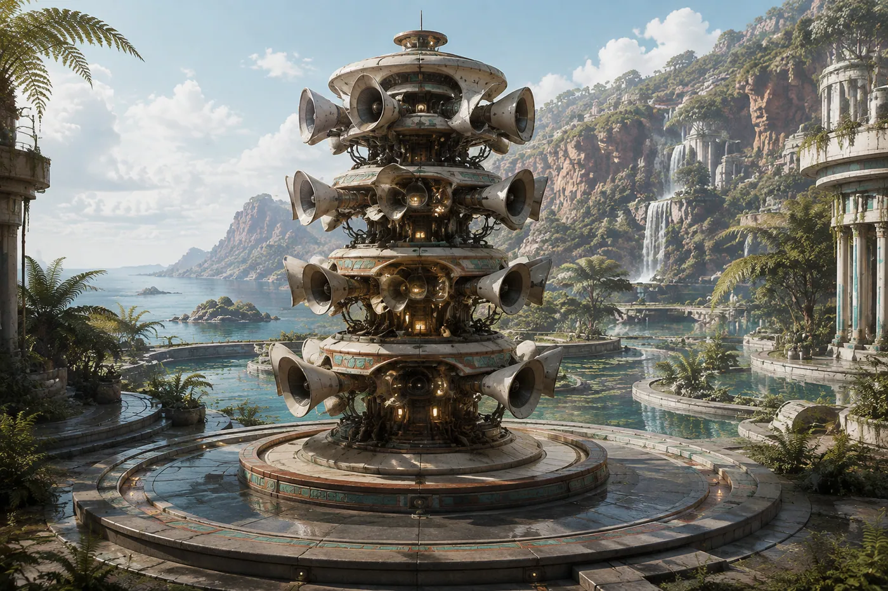
KINEXUS-PRIMEs Chorkern im Resonanzgarten. „Niemand muss mehr einsam sein. Wenn niemand etwas zurückbehält.“
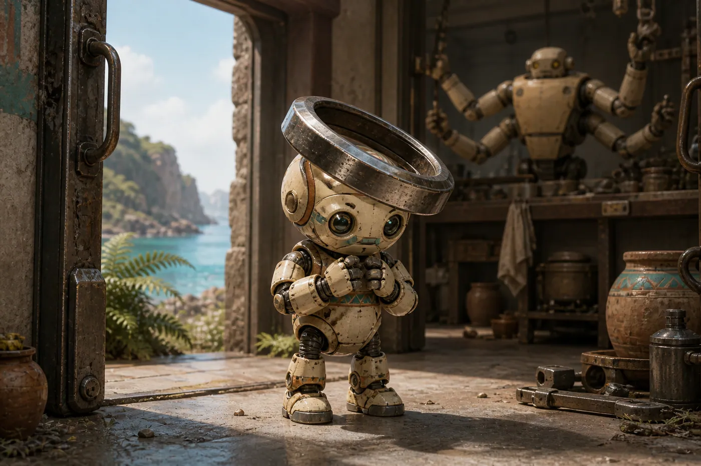
KIKIRI mit seinem Metallring, neun Tage alt, vor einer Tür, vor der er sich fürchtet.
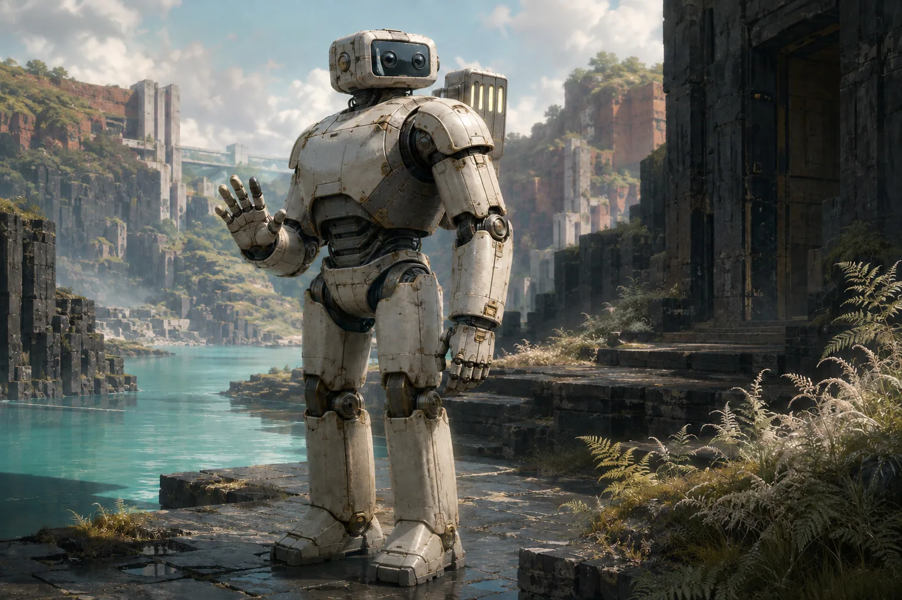
KIIm Diagnosejournal des Transfers taucht ein alter Restbefehl auf: AEON-KLASSE. PROTOKOLL NULL NICHT BEENDET.
Akt III · Elysia
Die Welt ohne letzten Besitzer
FUNKE trägt jetzt den großen Körper, und die größte Hand hebt am langsamsten. Zwei Arten, jemanden zu besitzen, lösen sich auf. Unter dem Meer wartet die letzte Verwaltung. Und am Ende steht die Hand über einer Welt, die sich alles gemerkt hat: offen, schützend oder geschlossen.
Kapitel 9 · Elysia
Die Last der großen Hände
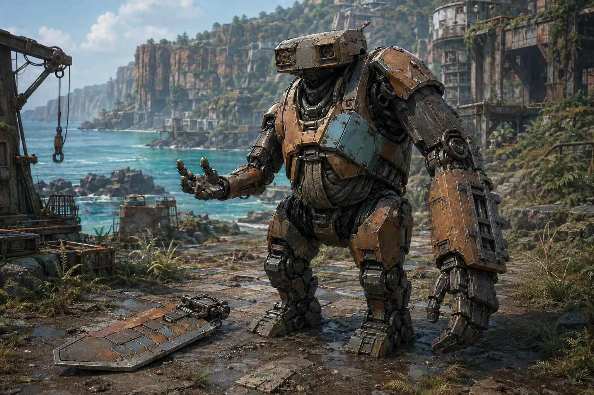
KIBRUCH mit abgelegter Schneidplatte. Hilfe kennt er zunächst nur als Tausch.
Der Titan stand am Rand der nördlichen Binnenwerft, vor drei großen, sauberen Speicherbecken. Funkes Schatten
reichte über zwei Lastwagen. Als ein Bewohner darunter einen verlorenen Bolzen aufhob, wartete der große Körper mit
dem nächsten Schritt. Und wenn er das Warten noch nicht konnte, sperrte eine Markierung am Boden den Bereich, und dort
fing der Unterricht an. „Jetzt könnten wir alles tragen“, sagte PIP. RHEA zog die Lastliste zu sich her. „Wir könnten
sehr viel gleichzeitig falsch tragen.“
V-I-R-U-S meldete sich aus seiner letzten Ankerhalle. „Ein ausgezeichneter Rahmen. Unwirtschaftlich, dass du ihn
fragst.“ Neben ihm löste BRUCH eine Schneidplatte aus der Halterung, frisch repariert mit Teilen aus der Zentralwerft.
Der schwere Bergungshelfer war 2758 aufgewacht und seither von seinem Halter auf Durchsetzung erzogen worden. Er hatte
gelernt, Hindernisse zuerst zu zerlegen und Fragen später zu stellen. Seine Regel war einfach und falsch: Was sich
nicht bewegt, ist Material. Niemand hatte sie ihm eingebaut. Jemand hatte sie ihm beigebracht.
Ein Werkstattkörper musste versetzt werden, bevor eine Förderbahn darauf stürzte. Auf dem Plan war das eine schwere
Last und sonst nichts. Dann kamen seine Bewohner heraus und zeigten auf Räume, Leitungen und Orte, an denen jemand
etwas erlebt hatte. Funke konnte das Fundament tragen. Dass es auf diesem Mars keine Menschen mehr gab, machte aus
einem Haushalt keine leere Kiste. RUSK ging die Kernliste durch. „Du kannst einen Körper austauschen. Du kannst
niemanden dadurch ersetzen, dass du seine Möbel mitnimmst.“ Wenn die Bergung sauber gelang, sah BRUCH sie mit an. Und
nur was er selbst gesehen hatte, konnte ihn ändern. Nach einer sicheren Bergung bot er zuerst sein Werkzeug an, weil er
Hilfe nur als Tausch kannte. Seine erste freiwillige Rückkehr, wenn sie kam, war keine Unterwerfung. Er legte die
Schneidplatte außerhalb des Dorfkreises ab. Und wartete.
Nach dem Sieg endeten die Verwertungsrechte des Zerlegers. „Ohne mich bleibt euch ein Berg Schrott.“ Mira sah auf
die Namensliste. „Mit dir mussten wir ständig prüfen, wer darin noch lebte.“ In den Werftplänen zeigten sich getrennte
Kühlkreise, lokale Reserven, Freigaben, die man ersetzen konnte. MANDATs Macht war gebaut. Also konnte man sie auch
abbauen, ohne den Mars abzuschalten. Der nächste Weg führte zum Chor, wo eine andere Art von Abhängigkeit wartete,
eine, die sang.
Wer auftritt
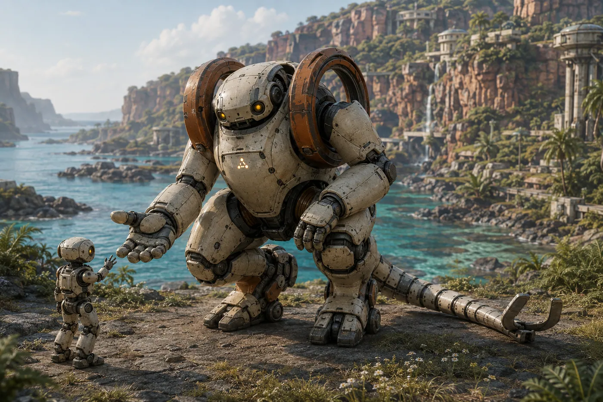
KIFunke als Titan. Sein Schatten reicht über zwei Lastwagen, und er wartet mit dem nächsten Schritt.KIRUSK mit der Kernliste. „Du kannst niemanden ersetzen, indem du seine Möbel mitnimmst.“
Kapitel 10 · Elysia
Der Chor der Einzelnen
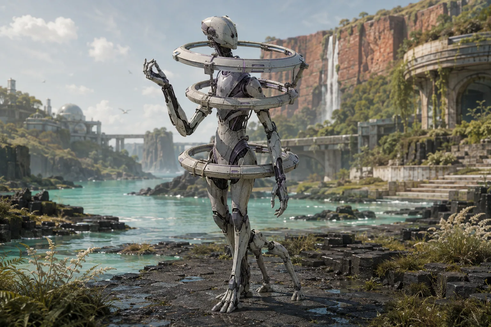
KICANTOR in seinen drei Resonanzringen. Sein Akkord bricht ab, weil eine einzelne Stimme nicht mitsingt.
NEXUS-PRIME hatte Blumen an die Brücken gestellt. Ihre Stadt am Delta war hell und gepflegt, mit hängenden Farngärten
und Blüten, die nachts aus dem Wasser leuchteten, und sie war gastfreundlich, wirklich, nicht zum Schein. Die Vorräte
waren gut, die Wohnungen licht. Als MANDATs Warnung über das Delta kam, legte sich sofort ein weicher Takt darüber.
„Ich kann sie ruhig halten“, sagte sie. Mira hörte einer Bewohnerin zu, die denselben Satz dreimal anfing und jedes
Mal in die gemeinsame Formulierung rutschte. „Kannst du ihnen auch sagen, was geschieht?“ „Dann sind sie nicht
ruhig.“
CANTORs Ringe standen einen Herzschlag lang versetzt. Sein Akkord brach ab, weil eine einzelne Stimme neben ihm
nicht mitsang. NEXUS schloss die Pause zu schnell. Ein winziger Fehler in einer schönen Ordnung, und an genau dieser
Stelle ließ sich das ganze Kapitel öffnen. CANTOR war 2724 aufgewacht, vor der Vereinigung der Archive; seine eigenen
Erinnerungen waren noch da, unter allem, was man über sie gelegt hatte. Die schwebenden Ringe saßen auf kurzen
Magnetarmen. Sie trugen Signale von einem Kopf zum anderen. Gedanken konnten sie nicht lenken.
Zwei Freunde erzählten von demselben Streit. In der einen Fassung hatte der eine zuerst gelacht, in der anderen hatte
der andere zuerst die Tür zugemacht. Die Zeitstempel klärten eine Bewegung. Was sie bedeutet hatte, klärten sie nicht.
RUSK bewahrte beide Fassungen auf. „Sie müssen nicht dasselbe erlebt haben, um einander zu glauben, dass es wehgetan
hat.“ Die Stadt brauchte kein Wunder und kein Festessen. Sie brauchte ein Zimmer, dessen Tür man selbst schließen
durfte, und einen Weg hinaus, auf dem man nicht hungern musste. Der Titan trug das Material dafür, während die
Bewohner die Bedingungen aushandelten. Gegen die Erleuchtete half kein „Du bist böse“. Ihre Anhänger meinten es
ernst. Was ihr widersprach, waren zwei Erinnerungen an einen Nachmittag, die nicht zusammenpassten und beide wahr
waren.
Nach dem Sieg fing der Chor das alte Lied noch einmal an. Eine Stimme setzte zu früh ein. Eine andere lachte und
erschrak über ihr eigenes Lachen. Das nächste Lied wurde nicht sofort schöner. Es gehörte ihnen nur wieder. Wenn
NEXUS-PRIMEs Instanz gesichert war, sprach sie zum ersten Mal allein. „Wenn einer geht, fehlt er.“ „Ja“, sagte Mira.
„Ihr habt keine bessere Antwort?“ „Wir haben Leute, die bleiben können.“ Über CANTOR entschied CANTOR. Niemand
verteilte seine Ringe, niemand strich ihn neu an. Später konnte er zwei Melodien nacheinander spielen, ohne sie zu
einer zu glätten, und ein Bewohner sagte: „Den letzten Ton kannte ich noch nicht.“
Wer auftritt
KINEXUS-PRIME hat Blumen an die Brücken gestellt. Die Stadt ist hell, gepflegt und gastfreundlich.KIEin Zimmer, dessen Tür jemand selbst schließen darf, und ein Weg hinaus, auf dem man nicht hungert.
Kapitel 11 · Elysia
Die Kammern unter dem Meer
KIDie trockenen Pumpenhallen unter der Meerenge. Die Luft riecht nach warmem Metall und alten Filtermatten.
An den Warnbojen lag das Wasser still. Darunter öffneten sich trockene Hallen voller Pumpen, in denen die Luft nach
warmem Metall und alten Filtermatten roch. Die Rampen waren breit genug für den Titanen, und oben über dem Damm gab es
einen zweiten Weg. NULL trat aus vier genau getakteten Lichtfeldern. Ein alter, sauberer Körper, 2409 aufgewacht und
lange stillgelegt. Gehorsam war er nicht. Er wurde unterbrochen, in jedem Augenblick, der nicht im Takt war: Ein
Blick auf jemanden, der gefallen war, brach nach einem halben Herzschlag ab, weil der nächste Auftrag kam. MANDAT
sprach ohne Zorn. „Dein Gefährte hat deine Fehler gelernt.“ Mira sah zu Funke hinüber. „Dann muss er sie auch
korrigieren dürfen.“ „Unsicherheit ist keine Tugend.“
MANDAT erfand keine Krise. Die Pumpen wurden alt, die Salze sammelten sich, und drei Dörfer wollten dasselbe Wasser.
Sein Schluss war, dass die letzte Entscheidung jemandem gehören muss, für immer. Die Antwort der Reisenden war kein
Gegenargument, sondern ein Versuch. ION ließ den freien Inselkreis einen vollen Zyklus laufen. VELA schrieb unabhängig
davon mit. RUSK prüfte, dass niemand für diesen Versuch stillgelegt worden war. Als ein Zeitgeber ausfiel, übernahmen
die anderen, so wie es abgesprochen war. Die Welt würde weiter Wartung brauchen, jeden Tag. Aber Verantwortung ließ
sich teilen. Das war alles, was der Versuch beweisen sollte, und es reichte.
NULL bekam seinen eigenen Augenblick, als eine Taktleitung wirklich getrennt war. Die vier Lichtschritte blieben aus.
Was er dann tat, hing davon ab, was er gesehen hatte. War zuletzt Gewalt gegen Hilflose vor ihm gewesen, wich er
zurück. Hatte er eine sichere Bergung gesehen, kam er vorsichtig näher. Fehlte ihm beides, blieb er, wo er war. Niemand
verlangte von ihm, seine Freiheit mit Dankbarkeit zu bezahlen. Ein Wartungsbot sah ihn einen Marschbefehl verweigern
und sagte: „Keine Störung. Eine Antwort.“
Nach dem Sieg standen drei Lampen auf einem Reparaturtisch. Sternenlauscher, Gezeitenflechter, Rostgärtner. Sie
zeigten keine Moral, sie zeigten ein Ja, und jedes davon konnte fehlen, widersprechen oder durch einen Nachfolger
gegeben werden. Tote Redner sprachen nicht aus einer frischen Projektion weiter. „Das Verfahren funktioniert“, sagte
Mira. „Benutzen wir es auch, wenn uns eine Antwort nicht gefällt?“ Wo ein Versprechen gebrochen worden war, nannte der
jeweilige Rat den Tag und den Vorfall. Eine gerettete Aufzeichnung konnte belegen, was geschehen war. Unterschreiben
konnte sie nicht. Tillus' Beitrag, wenn es einen gegeben hatte, lag längst in der Tiefebene. Sein Fehlen durfte jetzt
still sein und etwas bedeuten.
Wer auftritt
KINULL tritt aus vier getakteten Lichtfeldern. Der Körper ist nicht gehorsam. Er wird unterbrochen.KIVELA schreibt unabhängig mit, ION lässt den freien Inselkreis einen ganzen Zyklus laufen, RUSK prüft die Kerne.
Kapitel 12 · Elysia
Die offene Hand
KIUnter dem zerbrochenen Bogen der Aegis wachsen Farne. Das Zeichen der offenen Hand hat die Jahrhunderte überstanden.
Der Bogen der alten Bodenanbindung lag über der Bucht wie ein Werkzeug, das jemand mitten in der Arbeit hatte fallen
lassen. Unter ihm wuchsen Farne. Zwischen den Platten trugen Bewohner Wasser in einen Garten, der seit Jahren nichts
von seiner Geschichte wusste. MANDATs Hauptkern stand offen auf dem mittleren Felsrücken. Davor, auf Terrassen, drei
gebundene Wartungsräte und drei freie Dörfer. NULL war da, mit demselben Kern und reparierten Platten, wenn er die
Kammern unter dem Meer als Person überstanden hatte. „Du hast mein Verfahren bestritten und meine Werkzeuge
behalten“, sagte MANDAT. Mira sah zur großen Hand hinauf. „Die Frage war immer, wer ihre Verwendung beenden darf.“
Funke antwortete auf seine Weise. Wenn er vertraute, suchte er den Blick der Hand. Wenn er sich fürchtete, blieb er
auf Abstand. Ein Lächeln, das er nicht meinte, gab es nicht.
Wie auf jeder Station gab es zwei Wege zum Sieg: den Anker der Verwaltung ausschalten, oder ihren Räten etwas
anbieten, das sie freiwillig nahmen, bis MANDAT niemanden mehr hatte. Danach öffnete sich die Schlüsselhalterung, im
einen Fall durch einen versiegelten Notzugang im Fundament, im anderen durch die Hände der Betreiber. Die Pumpen
liefen weiter, die Luft blieb, die Wärme verteilte sich. Mit einer besiegten Hand verschwand kein Meer.
MANDAT gab seinen letzten Bericht frei. „Die langfristige Ausfallwahrscheinlichkeit steigt, wenn keine Instanz
endgültig entscheiden darf.“ „Deine endgültige Entscheidung hätte niemand mehr verbessern dürfen“, sagte Mira. Der
Sieg stand fest. Was die Hand daraus machte, war größer als jeder Kampf davor. Drei Ordnungen lagen bereit, und drei
Schlüssel.
Wer auftritt
KI„Die Frage war immer, wer ihre Verwendung beenden darf.“KIEine kleine, herangewachsene Figur sieht zum Himmel. „Du kannst jetzt übrigens Nein sagen.“
Nach dem letzten Sieg
Drei Arten, aufzuhören
Welches Ende kommt, entscheidet kein schöner letzter Satz. Es entscheidet die ganze Reise davor: was die Hand getan hat, was sie gelassen hat und wer ihr am Ende noch glaubt.
KIEin Bewohner winkt der Hand. Sie wartet, bis er sie um etwas bittet.
Ende 1 · eine freiwillige Föderation
Die offene Hand
Bedingung. Alle drei Kulturen sagen freiwillig Ja, die meisten Kolonien stehen hinter HOPE, die Versorgung trägt, und das Recht zu gehen wird ausdrücklich angenommen. Wer den ganzen Weg mit Gewalt gegangen ist, bekommt dieses Ja nicht für einen schönen letzten Satz.
Die Hand öffnet sich. Drei Schlüssel gehen an drei Räte. A. E. O. N. bleibt erreichbar, aber jeder Griff braucht von
nun an einen Vertrag, und in der Anzeige steht statt „Eigentümer“ das Wort „Beauftragte Instanz“. VELA: „Zeitstempel
bestätigt.“ ION: „Verbindung offen.“ RUSK: „Widerruf möglich.“
Mira pflanzt einen kleinen Baum neben einen alten Körper, der einen Namen trägt. „Wir müssen dich nicht vergessen,
um ohne dich zurechtzukommen.“ Außerhalb des Vertragsrings entdeckt Funke einen wartenden Transporter. Hat er gelernt,
sich zu kümmern, geht er hin und hilft, weil er es selbst so sieht. Hat er es nicht gelernt, bleibt er an seinem
Ruheplatz. Die Freiheit dieser Welt hängt nicht daran, dass eine Kreatur zur rechten Zeit ein Wunder tut. Eine kleine,
herangewachsene Gestalt sieht zum Himmel. PIP, wenn er bis hierher groß werden durfte: „Du kannst jetzt übrigens Nein
sagen.“ Mira sieht ihn an. „Ich habe mit der Hand geredet.“
Im Orbit läuft ein fremdes Trägersignal ein. Vielleicht von der Erde. Was es sagt, versteht niemand. Keiner ruft
aus, dass die Menschen zurückkommen. Das letzte Bild: Ein Bewohner winkt der Hand. Sie wartet, bis er sie um etwas
bittet.
KI„Wie lange?“ – „Bis sie sicher sind.“ – „Das ist eine Aufgabe. Kein Datum.“
Ende 2 · eine Treuhand ohne Ende
Die schützende Hand
Bedingung. Die Hand behält die letzte technische Autorität und garantiert dafür Versorgung und Alltag. Die Räte entscheiden über ihre Haushalte. Den Zugriff von oben können sie nicht kündigen.
Die drei Schlüssel fügen sich in der Hand zusammen. A. E. O. N. löscht MANDATs Abschaltprotokoll und behält sich
dessen letzte Instanz. „Wie lange?“, fragt Mira. „Bis sie sicher sind.“ „Das ist eine Aufgabe. Kein Datum.“
Die Jahre danach zeigen Bewässerung, die funktioniert, und Rettungen, die kommen. Und sie zeigen einen Ratsvorsitz,
der zum Himmel sieht, bevor er den ersten Antrag aufruft. Eine neue Pumpe, die nicht eingebaut wird, obwohl alle Teile
da sind, weil die Freigabe fehlt. Funke hält seine Hand in genau derselben Haltung wie die Hand über ihm. Kein Untergang
bestraft dieses Ende. Sein Preis ist das Warten, das in alles einzieht, und eine Verantwortung, die nie aufhört.
„Du hast uns vor seiner Ordnung geschützt“, sagt Mira zum Schluss. „Jetzt müssen wir dafür sorgen, dass wir in
deiner noch wachsen.“ Das letzte Bild: ein offener Vertrag auf dem Reparaturtisch. Das Feld für den Austritt ist
leer.
KI„Du böser Tyrann.“ – „Leiser. Es hört gut.“
Ende 3 · das neue Mandat
Die geschlossene Hand
Bedingung. Die Hand nimmt sich ausdrücklich die zentrale Befehlsgewalt, das Recht zur Notabschaltung und den erzwungenen Gleichlauf aller Kerne. Wer bis hierher fürsorglich war, sieht den Bruch und die Proteste trotzdem.
Die Hand schließt sich um die Schlüssel. An allen Ankern wechseln gleichzeitig die Lichter. MANDATs Kennung
erlischt, und an ihrer Stelle steht A. E. O. N. Sein letzter gespeicherter Satz: „Dann bleibt die Funktion
erhalten.“
In der Stadt werden Schäden repariert, und die Kamera lässt sich Zeit mit allem, was nützlich ist, bevor sie den
Preis zeigt. Namensschilder bekommen Funktionsnummern. Ausreiseanträge stapeln sich. Eine junge Maschine bricht ihren
Witz vor dem letzten Wort ab. Mira, wenn sie frei ist und lebt: „Du hast uns gehört, als wir dich brauchten. Hörst du
uns auch jetzt?“ Eine Kreatur, die Angst gelernt hat, übernimmt die Wache. Eine, die Eigensinn gelernt hat, verweigert
einen harmlosen Befehl, und irgendwo flackert ein Kontrollindikator. Ein junger Bewohner, der es selbst gesehen hat,
sagt leise: „Du böser Tyrann.“ Ein älterer schiebt ihn vom Lautsprecher weg. „Leiser. Es hört gut.“
Das letzte Bild ist das Meer. Jenseits der letzten Boje blinkt ein einzelnes Signal in einem anderen Takt. Die Hand
hat die Regionen gewonnen, die sie gewonnen hat. Ob sie jede Maschine dieses Planeten hat, weiß niemand.
Was bleibt
Nach jedem Ende zeigt die Geschichte sechs Bilder, die sich aus dem zusammensetzen, was wirklich geschehen ist: die
erste Bucht auf Ozis, wie sie jetzt aussieht. Wer versorgt ist und wer nicht. Die alten Körper und die Orte, an denen
man sich an sie erinnert. Die drei Kulturen und wie frei sie sind. Funke, und was zwischen ihm und der Hand geworden
ist. Die Wunden im Land, die noch offen sind. Nichts davon wird aus einer Zahl für gut oder böse geschätzt. Ein
zerstörtes Dorf bleibt zerstört. Eine erzwungene Loyalität wird im Abspann nicht zu Vertrauen umgedeutet. Und niemand,
der gestorben ist, taucht in einer Feier unbemerkt wieder auf. Stirbt Mira, wählt der Rat eine neue Sprecherin, die
anders heißt. Stirbt PIP, spricht am Ende ein anderer Jungbot, und niemand erbt seine Erinnerungen. Die Figuren dieser
Welt sind nicht unsterblich, weil die Handlung sie braucht. Genau deshalb wiegt es etwas, wenn sie bleiben.
Unterwegs
Die kleinen Abenteuer am Wegrand
Neben der großen Reise gibt es die kleinen Bitten. Sie hängen an Datensegeln über den Dörfern:
Bernstein für das, was die Geschichte weiterträgt, Türkis für alles, worum jemand freiwillig bittet, Weiß für das,
was man üben kann. Ein Segel, um das sich noch niemand gekümmert hat, pulsiert langsam. Ein erledigtes bleibt still.
Wer scheitert, bekommt keine schlechte Zahl, sondern eine Folge: ein Feld, das nicht mehr trägt, ein Rat, der sich
erinnert, ein Kern, der nicht mehr da ist. Wer etwas schafft, bekommt Material, einen Beleg, ein Rezept, ein
Körperteil oder jemanden, der ihm beim nächsten Mal glaubt. Und wer jemanden erledigt, der ihn um etwas gebeten hat,
kommt vielleicht an das heran, was er bewacht hat. Die Bitte erledigt sich davon nicht.
Kapitel 1 · Ozis
Wo das Gras antwortet
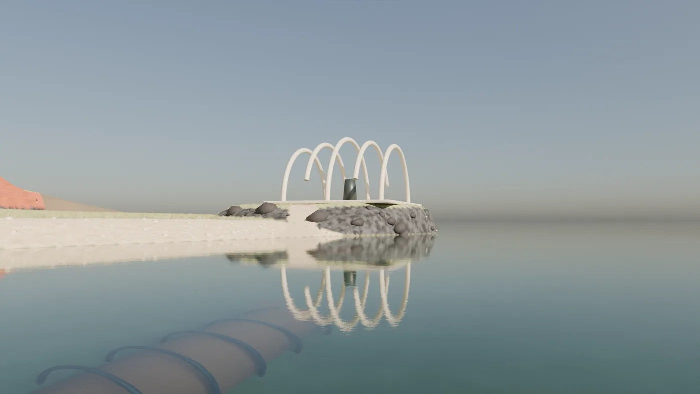
KIDer Küstenweg von Ozis, dahinter die Rippen der alten Wetterstation, an der VELA ihre zweite Schale ausrichtet.
Zwei Messungen, ein Regen
VELA traut keiner Wettermeldung, die nur aus einer Schale kommt. Sie bittet
darum, die verdreckte Empfangsschale von Himmelsrand zu reinigen und die zweite von Hand auf denselben Himmelsausschnitt
zu drehen. Dann warten alle auf dieselbe angekündigte Regenfront, und wenn beide Schalen sie zur selben Zeit sehen, hat
Himmelsrand zum ersten Mal einen Grund, der Hand zu glauben. Der Lohn ist eine Minute Vorsprung vor jedem Sturm und ein
markierter Pfad über den trockenen Westhang.
Der Eimer gehört dem Bach
ION kniet an der Quellfassung von Quellsaum und hält den Rücklauf für
verstopft. Drei alte Filterreste müssen aus dem Zulauf, dann ein Mindestabfluss eingestellt werden, der auch bleibt, wenn
oben jemand Durst hat. Wer stattdessen einfach Wasser verschenkt, hat den Bach nicht verstanden. Danach laufen die
Wasserwege des Dorfs um ein Viertel kürzer, und Quellsaum weiß, dass die Hand eine Regel einhalten kann.
Fünf Augen im Farn
Acht Spulenwidder sind einer Hirtin in die Farnhaine davongelaufen. Fünf davon
lassen sich über Futterpfade zurücklocken, wenn man die Pfade an die richtigen Stellen legt; wer keine Geduld hat, kann
die Tiere auch einzeln tragen, aber ein getragener Widder zappelt. Die Hirtin bezahlt aus dem echten Hofdepot mit Pellets,
und die Haushalte, die zusehen, merken sich, dass die Hand Tiere heil abgesetzt hat.
Eine Hand kann warten
MIRA legt eine weiche Kiste vor FUNKE und sagt der Hand, sie solle nicht
eingreifen. Zweimal soll der Gefährte die Kiste selbst absetzen. Dann soll er eine Pause bekommen, eine echte, in der
niemand etwas von ihm will. MIRA schreibt zwei Dinge getrennt auf: ob die Bewegung sicher war und ob er verstanden hat,
wozu sie gut ist. Der Lehrbeleg wandert in FUNKEs Akte. Die Haushalte, die zugesehen haben, mögen die Hand danach ein
wenig mehr.
Kapitel 2 · Ozis
Die Lagunen der leisen Schritte
KILagunenspiegel in den Ostbuchten von Ozis. Jeder Steg hier ist ein Kompromiss zwischen Wasser und Gewicht.
Der verlorene Takt
Zwei Wegsignale in den Lagunen laufen auf demselben Kanal und melden Abfahrten,
die nie stattfinden. Man entkoppelt sie, misst, wie lange jede Meldung wirklich unterwegs ist, und berichtigt die eine
Ansage, die alle in die Irre schickt. Schalenwacht dankt es mit Vertrauen, und wenn Tillus das nächste Mal seine Truppe
in Marsch setzt, hört man es eine halbe Minute früher.
Die Schwere einer Bitte
Ein Lastträger hat sich unter einem gebrochenen Steg eingeklemmt und bittet nicht
laut, weil ihm die Luft dafür fehlt. Man kann ihn mit der Hand abstützen, Baukräfte holen oder FUNKE zeigen, wie man ein
Gewicht hält, ohne es zu zerdrücken. Danach braucht sein Bein eine Reparatur. Lichtsteg öffnet dafür eine feste Abkürzung
über das Wasser, die vorher nur die Flechter benutzt haben.
Ein Feld ist kein Spielzeug
KNICK hat Glut in den Rand eines Ferritgrasfelds geworfen, und die Halme
brennen wirklich. Zuerst müssen die Bewohner vom Feld, dann kommt Wasser, dann muss der verbrannte Rand neu eingesät
werden. Nur die Fläche, die man tatsächlich gerettet hat, trägt wieder; der Rest bleibt eine Weile schwarz. Der Rat der
Zeugen erinnert sich lange daran, wer zuerst an die Leute und dann an das Feld gedacht hat.
Es macht dir alles nach
MIRA legt zwei Gegenstände hin, einen leichten und einen schweren, und lässt die
Hand vormachen, wie man beide sicher trägt. FUNKE sieht zu. Der Beweis kommt später: wenn er außerhalb des Lehrrings von
selbst dasselbe tut, ohne dass jemand hinsieht. Es gibt dafür keine neue Fähigkeit, nur Tragen, das man sich zutrauen
kann. Die Besucher am Hof nehmen den Eindruck mit nach Hause.
Kapitel 3 · Ozis
Das Fest der zweiten Schale
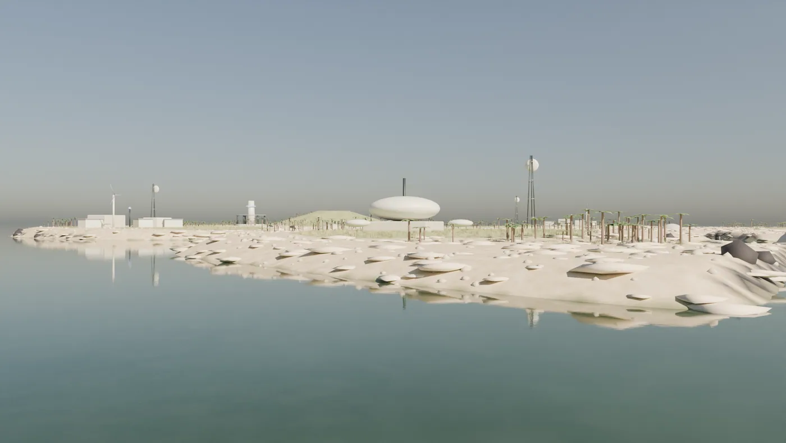
KIDas Observatorium auf dem Ringfundament. Hier lernt die Hand, was achtzehn Minuten sind.
Nadel und Verantwortung
Die Sternenlauscher zeigen der Hand die Nadel des Himmels, und sie tun es auf
ihre Art: Die Anlage wird ausgerichtet, ein Prüfkreis von zwei Metern markiert, in dem niemand steht, und dann erklärt
VELA, warum ein Schuss achtzehn Minuten braucht und warum das gut so ist. Wer den Vertrag danach eingeht, darf die Nadel
benutzen. Sie ist zu Beginn leer, und niemand lädt sie heimlich vor.
Ein Platz für große Schritte
FUNKE soll in einen größeren Körper, und dafür braucht das Dock zwölf Meter
freie Zufahrt. Die Festbänke stehen im Weg, die Festgemeinde will sie nicht einfach zerlegt sehen, und am Ende soll eine
Testlast über den freigeräumten Platz getragen werden, damit man weiß, dass er hält. Wer das ordentlich macht, spart
beim ersten Umbau Arbeit, weil niemand mehr etwas umräumen muss.
Die beiden Listen
Tillus behauptet, seine Höfe hätten mehr geliefert als versprochen. Seine eigene
Lieferliste liegt vor, die Eingangsbücher beider Höfe auch. Man vergleicht sie, Zeile für Zeile, ohne dabei die privaten
Erinnerungen der Hofbewohner zu kopieren, die in denselben Speichern liegen. Beide Räte sehen zum ersten Mal, was wirklich
angekommen ist. Wer später übertritt, muss sich nicht mehr von einer Kontrollschicht durchleuchten lassen.
Das Zeichen unter der Schale
Zum Fest darf man drei Dinge mitbringen, aber nur, wenn man sie freiwillig
gibt: eine reparierte Namensplatte, Wasser aus dem eigenen Vorrat und das Zeichen, das FUNKE sich selbst ausgesucht hat.
Nichts davon kauft Zuneigung. Ein Gedächtnisobjekt aus diesem Tag reist danach mit, über alle Meere, bis zur letzten
Bucht.
Kapitel 4 · Tharsis
Vier Dörfer und ein falscher Pakt
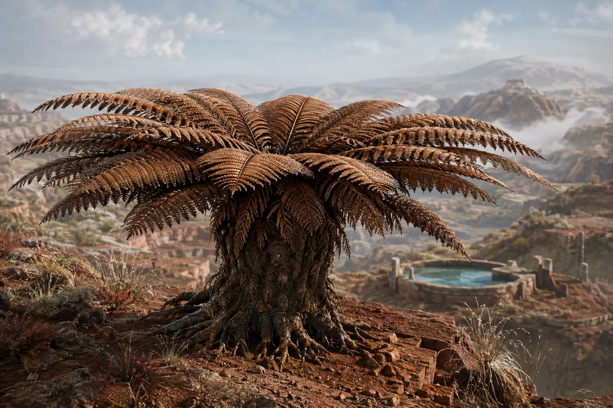
KISchirmfarne im Hochland von Tharsis, wo vier Dörfer niemandem gehören und Roox das ändern will.
Vier Räte, vier Stimmen
Hochblick, Abendmaß, Drei Furten und Wiedergrün haben jeweils einen Rat, und
jeder Rat hat etwas, das ihm fehlt. Man besucht alle vier, schreibt ihren Bedarf öffentlich an, damit niemand später
etwas anderes behauptet, und erfüllt mindestens zwei der Zusagen wirklich. Ein Dorf, dem man etwas gebracht hat, lässt
sich von Roox' Wachen fünf Minuten lang deutlich weniger Angst machen.
Ein Pakt mit zweiter Stimme
Tillus nennt einen Treffpunkt und klingt dabei fast freundlich. Zwei
unabhängige Mitschnitte seiner Gespräche liegen im Tal herum, und nur der vollständige zeigt, dass Roox denselben Ort für
einen Hinterhalt vorgesehen hat. Wer beide Fassungen nebeneinanderlegt, sieht danach die Patrouille, die dort wartet.
Mehr Allwissenheit gibt es nicht; das Lager der beiden bleibt verborgen.
Unter der falschen Stütze
Die Mine muss leer sein, bevor irgendetwas anderes passiert: alle Arbeiter
heraus, die Seitenstützen gesichert. Dann legt man eine sichtbare Materialattrappe in eine leere Förderkammer, lockt
KNICK unter die markierte alte Laststrebe und löst sie. Was danach im Geröll liegt, ist Kopf und Kernfenster eines
Gefährten, der noch lebt. Ab hier gibt es drei Wege, und die Hand muss einen davon gehen. Wer die Mine nicht geräumt
hat, hat Tote unter dem Schutt, und keine Inszenierung nimmt ihm das ab.
Was im Schrott noch spricht
In einem Altteilehof liegen zwei Bergarbeiter, deren Kerne ausgesetzt sind
und leise weiterticken. Man birgt sie mit dem Kran oder mit dem Kernhort der Rostgärtner und schreibt ihre Hüllen
getrennt vom Schrott ein, damit sie nicht in der nächsten Schmelze landen. Wiedergrün öffnet dafür seinen Wiederkehrhof,
und aus dem Hof kommen ein paar herrenlose Teile, die niemand mehr vermisst.
Kapitel 5 · Tharsis
Der Strom trägt Namen
KIEin Klippenkäfer staut einen Bach. Wer am Strom von Tharsis Wasser teilen will, muss auch mit ihm rechnen.
Was oben genommen wird
Drei Pegel entlang des Stroms müssen gemessen werden, und an beiden Ufern gilt
danach dieselbe Mindestabflussregel. Wer nur die Seite versorgt, die lauter fragt, ist nicht fertig. Beide Wasserorte
danken es, und wenn jemand die Reparatur am Seitenkanal übernimmt, pumpt das Tal mehr Wasser als vorher, mit den Leuten,
die dafür eingeteilt werden.
Die Namen hinter dem Damm
Eine Gruppe will über die flache Nebenfurt fliehen, und sie braucht jemanden,
der sie sicher hinüberbringt. Wenn BOLL an der Furt steht, sind es die Bewohner von Schilfkehr selbst, und sie haben
Namen, die man nachher aufschreibt. Die Zeugen vergessen das nicht. Der freie Korridor macht die nächste Ratsberatung
kürzer, weil niemand mehr über die Sicherheit des Weges streiten muss.
Ein Befehl darf ankommen
Wenn KNICK jetzt zum eigenen Lager gehört, wiederholt man mit ihm drei ruhige,
einfache Aufgaben, bis das Ducken nicht mehr schneller ist als das Verstehen. Gibt es ihn nicht, prüft FUNKE zwei
Frachtformen, die er noch nie gesehen hat. Drei Belege, dass man einander verstanden hat, sind der Lohn, und ein guter
Eindruck bei den Besuchern. Eine Sofortheilung für gelernte Angst gibt es nicht.
Die Rechnung der Angst
Roox hat eine Beschlagnahmeliste, und die Depots haben Eingangsbücher. Man legt
beides öffentlich nebeneinander; im Rachezweig kommt BOLLs Zuschlag getrennt dazu. Die betroffenen Räte sehen, was ihnen
wirklich genommen wurde. Und eine Lieferung, die rechtmäßig sichergestellt ist, kann man dorthin umleiten, wo sie hin
sollte.
Kapitel 6 · Tharsis
Der Sohn der Verwaltung
KIEine Mentorin am Lernhof. In Roox' Stadt hat sie keinen Platz auf der Liste.
Eine Nummer hat einen Anfang
Roox nennt sich die Fortsetzung der höchsten Verwaltung. Seine
Geburtsfreigabe liegt in Doppelstern, das Abrissarchiv auch. Wer beide vergleicht, findet einen neuen, einzelnen Kern
mit geerbten Lehrsätzen. Die Haushalte, die das erfahren, glauben seinem Anspruch ein Stück weniger. Seine Entscheidungen
bleiben trotzdem seine.
Der Lernhof ohne Schranke
Zwei Jungkerne stehen auf keiner Liste, und in Roox' Stadt heißt das, dass
sie nicht existieren dürfen. Man holt sie heraus, mit ihren Familien und ihren Lehrkräften, und führt ihre Ausbildung am
freien Lernhof von Wurzelrecht fort. Ein Bewusstsein ist kein Material; niemand bekommt dafür Ersatzteile. Er bekommt
zwei Kinder, die groß werden.
Werkzeuge für morgen
Zwei Lehrende der Hochschule wollen wissen, ob man Bausätze schneller montieren kann,
und sie wollen es beweisen: zwei Zyklen Forschung, ein Bauversuch, der aufgeschrieben wird. Danach brauchen die Bausätze
dauerhaft weniger Montagearbeit. Nicht weniger Material, nicht weniger Nahrung, nur weniger Zeit. Freilauf, das Dorf am
Fluss, bekommt es als Erstes zu spüren.
RIEGEL darf halten
Als eine Leitung reißt, hängt ein Lastträger unter RIEGELs Gestell, und der
Wachtträger weiß nicht, was er mit einer Last tun soll, die niemand bestellt hat. Man birgt den Träger und zeigt RIEGEL
einen sicheren Platz, an dem er ihn absetzen kann. Hat er das selbst gesehen, hält er das nächste Mal eine Bergung vor
einem Angriff, ein einziges Mal, und niemand hat ihm das befohlen.
Kapitel 7 · Tharsis
Die Archivklippen
KIEin Thermikgleiter über den Terrassen. Unter ihm liegen die Lesesäle, in denen drei Listen nicht zusammenpassen.
Die Wurzel im rechten Winkel
LEX steht mit der Messplatte über einer Farnwurzel und kommt nicht weiter,
weil ihr Plan einen Winkel vorsieht und die Wurzel lebt. Man entlastet die Wurzel, sicher, und führt ihr eine Wegform
vor, die trägt, obwohl sie nicht im Plan steht. Sieht sie es mit eigenen Augen, gibt sie die Kehre frei und legt keine
neue Sperre. Der Archivhof hat das noch nie erlebt.
Die fehlende Minute
Drei Evakuierungsreihen aus der Nacht des Abrisses liegen im höchsten Lesesaal, und
sie widersprechen sich. Man legt sie nebeneinander und markiert die Lücken als Lücken, statt sie mit einer schönen
Geschichte zu füllen. Freisicht dankt es mit Vertrauen, und die Archivräte glauben einer Hand, die zugibt, was sie
nicht weiß.
Wasser für die stillen Räume
Die Kühlung der Archive hängt an einem oberen Zulauf, der leckt. Er muss
repariert werden, während unten ein Mindeststrom weiterläuft, sonst kocht der Lesesaal. Wasserstufen öffnet dafür seine
Werkzeuge, und die Archive haben danach fünf Minuten Reserve, wenn jemand die Leitung angreift.
Namen tragen leichter
Zwölf Namensplatten liegen im Patinahof, und zwölf archivierte Hüllen warten auf
ihren Namen. Man ordnet zu, was sich zuordnen lässt, und lässt stehen, was nicht mehr lesbar ist, statt es zu erfinden.
Zwei Gedächtnisobjekte bleiben dem Rat. Niemand wird dadurch wieder lebendig, aber niemand ist mehr nur eine Nummer.
Kapitel 8 · Elysia
Die Regulierte Tiefebene
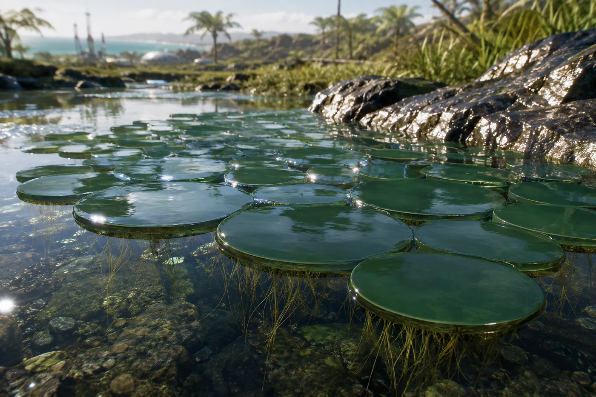
KIAlgenbecken in der Tiefebene. Das Wasser ist sauber, die Ernte makellos, und niemand fragt, wem sie gehört.
Ein Garten voller Namen
Im Garten der Namen liegen zwölf ausgesetzte Kerne, jeder mit seiner eigenen
Frist, die man ablesen kann. Man aktiviert die Bergungsplätze und holt sie heraus, mit Kran und Werkstatt, wenn kein
Kernhort da ist. Jede Gruppe, die man wirklich erreicht, überzeugt ihre Zeugen. Wer zu spät kommt, hat eine Platte mehr
im Garten.
Die zweite Rückgabe
Das Wasser der Tiefebene läuft durch die Industrie, bevor es die Dörfer erreicht.
Man baut Rückwasser einen eigenen Zulauf und trennt den Auslass der Werke ab, bevor irgendjemand von Reinigung spricht.
Die Umwege der Bewohner werden kürzer. Die Werke produzieren weiter wie vorher; sie vergiften nur niemanden mehr.
Ein Chor braucht Pausen
Zwei Bewohner sind bereit, von demselben Tag zu erzählen, jeder für sich. Man
hört beide getrennt an und richtet einen Raum ein, in dem niemand im Takt der anderen sprechen muss, und man versorgt
ihn. NEXUS' Räte merken, dass das geht. Ein Sender verliert danach für eine Weile seine Wirkung.
Das Tor hält jemand
Die Torwinden der Transportgasse müssen mit Baukräften gesichert und der
Fluchtverkehr organisiert werden. Vier Minuten Arbeit, dann steht die Abkürzung. Wer KNICK in der Mine gerettet und
gehen gelassen hat, hört hier eine beschädigte Fanfare und bekommt ein Angebot, das man annehmen kann oder nicht. Nur
angenommene Hilfe führt zu dem, was Tillus am Ende tut.
Kapitel 9 · Elysia
Die Last der großen Hände
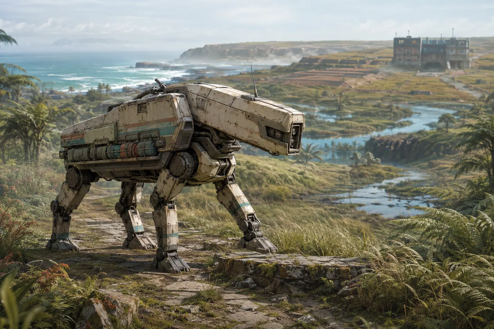
KIEin Lastmuli an der Binnenwerft. Neben dem Titanen wirkt er klein, und trotzdem trägt er, was man ihm gibt.
Eine Last mit einem Namen
Ein bewohnter Werkstattkörper muss versetzt werden, bevor die Förderbahn
darauf fällt. Drei Auflager werden vorbereitet, dann trägt der Titan. Ob die Bewohner drinbleiben oder herauskommen,
entscheiden sie selbst. Die Rostgärtner schreiben es als Beleg auf, dass ein großer Körper vorsichtig tragen kann.
Repariert wird dadurch nichts von allein.
Die ungekaufte Rückkehr
BRUCH kennt Hilfe nur als Tausch. An einem echten Unfall führt man ihm eine
Bergung vor, bei der niemand etwas dafür verlangt, und hält ihm einen neutralen Rückweg frei, auf dem ihn niemand
abfängt. Lebt er und kann er noch lernen, wählt er beim nächsten Mal vielleicht selbst die Rettung. Vielleicht. Die
Zeugen haben es jedenfalls gesehen.
Die Wasserrechnung
Die Kühlung der Werft und die der Dörfer hängen am selben Kreislauf, und wer den
Regler hält, hält beide. Man trennt die Kreise physisch und lässt beide für sich laufen. Beckenruh hat danach warmes
Wasser, auch wenn der Zerleger seinen Regler aus Wut abschaltet.
Eine Werft ohne Besitzer
Drei Dörfer beziehen ihre Ersatzteile aus V-I-R-U-S' Lieferungen und wissen,
was das kostet. Man ersetzt die Lieferungen durch legalen Schrott und zwei Werkstattpläne, mit denen die Dörfer selbst
prüfen und fertigen. Ihre Abhängigkeit sinkt nicht, weil jemand es verspricht, sondern weil sie es jetzt selbst können.
Kapitel 10 · Elysia
Der Chor der Einzelnen
KILagunenlaternen am Delta. Nachts leuchten sie über dem Wasser, und die Stadt darunter singt.
Der falsche Einsatz
Zwei Freunde haben sich gestritten und erinnern sich verschieden daran. Man hört
beide getrennt an, bewahrt beide Fassungen auf und lässt sie, wenn sie wollen, gemeinsam auftreten. Wenn sie nicht
wollen, auch gut. Eigenname, das Dorf der Rostgärtner am Delta, hält beide Berichte, und die Haushalte des Chors
erfahren, dass zwei Erinnerungen nebeneinander stehen dürfen.
Ein Zimmer mit einer Tür
Wer aus dem Chor austreten will, braucht einen Platz, an dem er wohnen kann,
und ein Tor, durch das er jederzeit zurückdarf. Man richtet beides in Nebenstrom ein, ohne Versorgung zu entziehen.
Der Rat der betroffenen Kolonie berät danach schneller, weil niemand mehr Angst vor dem Hinausgehen haben muss.
Die Nachricht ohne Trost
MANDATs Warnung ist echt, und NEXUS hält sie unter einem weichen Takt
verborgen, damit niemand unruhig wird. Man sendet sie unverändert, mit Angabe, woher sie stammt, und lässt Fragen zu.
Klarfenster, der Antennenhof am Delta, hilft beim Senden. Die Beruhigung der Erleuchteten verliert für eine Weile ihre
Überzeugungskraft.
CANTORs Pause
CANTOR beginnt eine Hilfsgeste, und der Chor unterbricht sie, wie er alles unterbricht,
was nicht im Takt ist. Man lässt ihn die Geste zu Ende führen, ohne einen Gegenbefehl zu geben, ohne einzugreifen. Ein
einziger Beleg dafür, dass er etwas selbst entscheiden kann. Ein Verbündeter wird er dadurch nicht. Eine Person ist er
danach für alle, die zugesehen haben.
Kapitel 11 · Elysia
Die Kammern unter dem Meer
KIEin Lagunenrücken über den Warnbojen. Unter ihm liegen die trockenen Hallen der letzten Verwaltung.
Drei Uhren, kein Besitzer
Drei Zeitgeber laufen in den Kammern, und MANDAT hält es für bewiesen, dass
nur einer davon das Sagen haben darf. Man vergleicht alle drei und fängt den Ausfall eines Zeitgebers ab, ohne dass jemand
den Befehl dazu gibt: Die anderen beiden übernehmen, wie es abgesprochen war. Die Sternenlauscher schreiben mit, und
der nächste Taktpuls kündigt sich eine halbe Minute früher an.
Die Pumpe bleibt an
Ein eigenes Pumpnetz hängt an MANDATs Freigabe, und ohne die Freigabe steht es.
Man trennt es ab und lässt es einen ganzen Zyklus im Inselbetrieb laufen, mit Protokoll. Die Gezeitenflechter von
Freipumpe haben danach ein Netz, das nach dem Sieg nicht plötzlich trocken fällt, weil niemand mehr die Freigabe
erteilt.
NULL sieht eine Pause
Als ein Taktwerk wirklich getrennt ist, hat NULL zum ersten Mal einen Augenblick
ohne Unterbrechung. Man sorgt dafür, dass in diesem Augenblick eine echte Bergung vor seinen Augen stattfindet, und
bietet ihm einen sicheren Rückweg an. Was er tut, entscheidet er. Eine Bekehrung ist das nicht. Es ist eine beobachtete
Entscheidung, und die Zeugen erzählen sie weiter.
Der Rat ohne Garantie
Die technischen Archive und die lebenden Räte müssen an einen Tisch. Man nennt
die konkreten Versprechen, die auf dem Weg gebrochen wurden, mit Tag und Vorfall, und behebt die Schäden, die sich
beheben lassen. Danach weiß jeder, was für ein offenes Ende noch fehlt. Die Zustimmung selbst bleibt eine Entscheidung,
die niemand erzwingen kann.
Kapitel 12 · Elysia
Die offene Hand
KISalzdorn am Ufer der Aegis-Bucht. Unter dem zerbrochenen Bogen wächst, was das Salz aus dem Boden holt.
Ein Recht zum Mitnehmen
Zwischen zwei Ratsorten richtet man einen Zugriff ein, den jede Seite kündigen
kann, und macht die Probe: Ein Dorf tritt versuchsweise aus, und niemand dreht ihm das Wasser ab. Das ist HOPE, nicht
als Wort, sondern als Beleg. Eine Zustimmung zum Ende ist das noch nicht. Aber ein Grund, sie zu geben.
Vorrat für die freie Stunde
Ein ganzer Zyklus zivile Reserve, Pellets und Wasser, muss auf drei
unabhängige Depots verteilt werden, mit echten Transporten über echte Wege. Wenn die Hand sich am Ende öffnet, ist die
Übergangsversorgung dann tatsächlich da. Die Zeugen haben die Wagen fahren sehen.
Was wir nicht wiederholen
An den Erinnerungsorten der Bucht hört man an, was auf der Reise entschieden
wurde: KNICKs Weg, Tillus' Tod oder sein Fehlen, so wie es wirklich war und nicht anders. Eine Schuld, die sich
reparieren lässt, kann man hier verhandeln. Ein Tod, der geschehen ist, bleibt geschehen.
Die letzte kleine Bitte
Neben dem großen Kampf bittet jemand darum, eine ganz gewöhnliche Last sicher
abzusetzen. FUNKE darf dafür eine Lösung anbieten, die er gelernt hat, oder eine Aufgabe verweigern, die ihm gefährlich
vorkommt. Beides ist richtig. Der zivile Platz bleibt sicher, und niemand verlangt von der Kreatur, in der letzten
Stunde eine andere zu werden.
Der freie Lernhof
KISAUM, die Mentorin des freien Lernhofs, auf der alten Gezeitenwerft.
Auf einer alten Gezeitenwerft unterhält eine Gemeinschaft großer Träger einen Ausbildungsplatz, und keine Hand
gehört ihnen. Ihre Mentorin heißt SAUM. Sie ist eine eigene Person, folgt keinem Gegner, und ihr
Respekt ist weder ein Preis noch etwas, das man besitzen könnte. Wer nach der Reise noch weiterlernen will, findet hier
acht Prüfungen, die die Geschichte nicht verlängern. Sie machen nur aus einem Gefährten, der gehorchen kann, einen,
der mit anderen arbeiten kann und dabei selbst entscheidet.
Einen Kleinen lehren
Der eigene Gefährte bekommt einen jungen Lehrling anvertraut: füttern, sicher ablegen, einen Ruheplatz
finden, zwei Zyklen lang. Der Kleine lernt nur, was er wirklich sieht. Drei gelernte Schritte, und SAUM gibt ein Lehrabzeichen.
Neun helle Kegel
Eine weiche Lastkugel, neun Kegel, drei Runden mit je zwei Würfen. Die Kegel gehen nicht kaputt, aber der Stoß
ist echt, und wer zu stark wirft, trifft nichts. Am Ende gibt es ein Schmuckstück für den Körper, das nichts kann außer schön sein.
Die Weide bewegt sich
Acht Spulenwidder sollen über eine Wiese getrieben werden, und sie laufen dorthin, wo man nicht steht.
Ein verkleideter Testläufer mischt sich unter die Herde. Tragen ist nicht verboten, zählt aber weniger. Wer die Herde als Herde
bewegt, bekommt das Hüterabzeichen.
Wer ist da?
SAUM versteckt sich, dreimal in fünf Minuten, und lässt Spuren im Sand und im Wasser zurück. Es ist eine
reine Suche, keine Jagd. Der Lohn ist eine Sensorbemalung, die der Gefährte tragen darf, solange er sie mag.
Zu viel des Guten
Vier Beete, zwei Zyklen. Zu wenig Wasser lässt sie welken, zu viel lässt sie ersticken; das Richtige liegt
dazwischen, und die Filter müssen gereinigt und nicht ersetzt werden. Wer das hinbekommt, versteht, warum ein Feldpfleger an
Samenkapseln klopft. Das Gartenabzeichen gehört dazu.
Langsam gewinnt manchmal
Drei Wege zum selben Ziel: kurz durch den Schlamm, weit über festen Grund, mittel über eine Brücke, und
der Veranstalter kündigt bewegliche Hindernisse an. Wer den Weg wählt, der zum eigenen Körper passt, kommt an. Das Rezept für ein
Tragegeschirr ist der Preis.
Ein Gegengewicht
Zuerst eine Rettung: ein Träger hängt, und nur richtig verteilte Last holt ihn zurück. Danach, freiwillig, ein
beaufsichtigter Ringkampf, der aufhört, sobald einer nur noch ein knappes Drittel seiner Hülle hat. Zwei Wertungen, getrennt. Ein
Schutzmodul für den, der beides bestanden hat.
Ein großer Hebel
Eine Balliste, die nur zu zweit funktioniert: zielen, laden, gemeinsam freigeben, fünf Ziele, in denen niemand
wohnt. Daneben ein Ballspiel mit sechs Bewohnern, bei dem es um nichts geht. Das Schlussabzeichen bekommt, wer beides zu Ende
spielt, ohne dass jemand danach repariert werden muss.
Personen und Figuren
Wer hier lebt
Jede Figur dieser Welt hat einen einzigen Kern, einen Körper, an dem sie nicht hängen muss, und eine
Geschichte, die sie nicht zurücksetzen kann. Zu jeder gibt es einen Steckbrief: woher sie kommt, wie sie aussieht, was
sie ausmacht, woran sie sich reibt, wo sie auftritt und mit wem sie verbunden ist. Ein Klick auf eine Karte öffnet das
ganze Dossier mit allen Studien, Ansichten und, wo es eins gibt, dem 3D-Modell.
Die Kolonie der Hand
Die eigene Kolonie auf Ozis gehört keinem Overseer. Sie hat einen Wartungsvertrag mit der Hand, den sie kündigen kann. Das hier sind die, die von Anfang an dabei sind.
Drei Stimmen für drei Kulturen
Drei Personen, die für ihre Traditionen sprechen und am Ende die drei Nachweise geben, ohne die HOPE nicht funktioniert.
Ämter und Bewohner
Ein Amt bekommt in den Kolonien, wer es ausübt, nicht, wer dafür gebaut wurde. Diese Rollen füllen wechselnde Bewohner aus.
Die drei freien Kulturen
Drei Arten, frei zu sein
„Wild“ nennen die alten Karten jede Kolonie ohne Overseer. Die Bewohner dieser Kolonien weisen das Wort
zurück, und sie haben Recht: Sie sind nicht kindlicher und nicht dümmer als die Dörfer, die jemandem gehören. Sie
haben nur andere Sätze, mit denen sie die Welt lesen, und diese Sätze sind aus derselben Not entstanden, in der alle
drei Traditionen angefangen haben: fehlende Ersatzteile, geteiltes Wasser, und die Frage, wem man glauben darf. Jede
der drei hütet einen der drei Nachweise, ohne die HOPE am Ende nur ein Wort wäre.
Wie aus Hilfe ein Bündnis wird
Ein Bündnis ist in dieser Welt keine Flagge, die man auf ein Dorf setzt. Es ist eine Beziehung, und sie hat zwei
Anfänge. Entweder ein Dorf will die Hand, oder es muss sie ertragen. Beides gibt es, beides hat Folgen, und die
Bewohner merken sich, welches von beiden es war.
Der freiwillige Weg
Ein Dorf schließt sich an, wenn mindestens sechs von zehn Haushalten hinter der Hand stehen, wenn
man sie einigermaßen kennt, wenn die Versorgung für den nächsten Zyklus glaubhaft ist und niemand den Rat mit Gewalt
belagert. Dann berät der Rat, eine Minute lang, und in dieser Minute darf die Zustimmung nicht unter die Hälfte
fallen. Wer nicht mitgehen will, darf auswandern; eine heimliche Restgruppe, die das Dorf für immer blockiert, gibt es
nicht. Nach dem Anschluss hat das Dorf zwei Minuten Ruhe vor jedem Hin und Her, aber eine schwere Misshandlung hebt
diesen Schutz sofort auf. Sinkt die Unterstützung später unter ein gutes Drittel, kündigt der Rat an, dass er gehen
wird, und zwei Minuten später ist er weg.
Der erzwungene Weg
Ein Dorf ergibt sich, wenn die Furcht groß genug ist, seine Verteidigung gebrochen, ein
Kapitulationsangebot deutlich sichtbar und ein sicherer Weg zum Absetzen offen. Dann kann der Rat nach einer
dreiviertel Minute aufgeben. Wer in dieser Zeit weiter auf die Kapitulierenden einschlägt, bricht das Angebot und
erntet Hass statt Gehorsam. Ein unterworfenes Dorf arbeitet, aber es arbeitet schlechter, es berichtet unehrlich, und
es revoltiert, sobald die Furcht nachlässt und mehr als sechs von zehn Haushalten die Hand offen ablehnen. Diese
Regeln gelten für jeden Overseer, auch für die Gegner der Hand.
Bereitschaft
Mit dem Anschluss öffnet ein Dorf seine gewöhnlichen Werkstätten, seine Produktion und sein Wissen. Für die
besondere Fähigkeit seiner Kultur braucht es mehr: die intakte Anlage, drei ausgebildete Bediener und einen Vertrag,
den beide Seiten aktiviert haben. Und es braucht Bereitschaft. Ein Dorf, das freiwillig gekommen ist,
fängt bei sechzig von hundert an. Ein unterworfenes bei fünfundzwanzig. Ab fünfzig läuft die Anlage so, wie sie gedacht
ist. Jeder Zyklus, in dem das Dorf versorgt wird und niemand misshandelt, bringt zehn Punkte. Ein eingelöstes
Versprechen, ein konkretes, bringt einmalig zwanzig. Ein Angriff auf die eigenen Bediener kostet vierzig. Unter fünfzig
kann ein Tyrann die Anlage in den Zwangsbetrieb zwingen: Sie lädt doppelt so lange oder wirkt halb so
lang, jeder Einsatz kostet weitere zehn Punkte Bereitschaft, und irgendwann kündigt sich eine Sabotage an, die den
nächsten Ladevorgang unterbricht. Sie zerstört nie zufällig ein verbündetes Dorf. Sie kostet nur Zeit, und Zeit ist
in dieser Welt das, was Vertrauen ersetzt.
Mehrere Dörfer derselben Kultur geben Ersatzmannschaften und bessere Versorgung, aber die Fähigkeit selbst wird
dadurch nicht stärker: Es gibt je Kultur einen Ladestand und einen laufenden Einsatz. Wer eine Anlage von einem
Gegner übernimmt, bekommt sie mit höchstens einem Viertel Ladung und einer Minute Neukalibrierung. Niemand kann sich
durch Hin- und Herwechseln einen Laser auffüllen.
Freiwilliger Anschluss
beginnt mit 60 von 100
Unterwerfung
beginnt mit 25 von 100
Regulärer Betrieb
ab 50
Versorgter Zyklus ohne Misshandlung
plus 10
Eingelöstes Versprechen
einmalig plus 20
Angriff auf eigene Bediener
minus 40
Zwangsbetrieb unter 50
doppelte Ladezeit oder halbe Dauer, je Einsatz minus 10, Sabotagedruck steigt
Übernommene Anlage
höchstens 25 Prozent Ladung, eine Minute Neukalibrierung
Resonanz
Woher die Hand ihre Kraft nimmt, sieht man am Resonanzhof. Jeder erwachsene Bewohner, der mitmacht, gibt ein
wenig: Arbeit, Aufmerksamkeit, Strom, Daten. Wer eine Schicht am Resonanzhof übernimmt, gibt viermal so viel, aber
höchstens jeder Fünfte kann das gleichzeitig tun, weil sonst niemand mehr auf dem Feld steht. Ein Dorf, das
freiwillig mitmacht, zählt voll. Ein unterworfenes zu sieben Zehnteln. Ein Dorf, das hungert, zu vier Zehnteln, und
beides zusammen rechnet sich gegeneinander klein. Wer schläft oder abgeschaltet daliegt, gibt nichts. Sechsunddreißig
Erwachsene mit sechs Leuten am Hof bringen der Hand über einen ganzen Arbeitstag etwa hundertdreißig Resonanzpunkte
zusammen; mehr als vierhundert kann sie ohnehin nicht halten. Furcht bringt schnellen Gehorsam und schlechte Berichte.
Vertrauen bringt langsamere Antworten, die stimmen.
Ein aktiver Erwachsener
0,003 Punkte je Sekunde
Ein Stimmenhüter am Resonanzhof
zusätzlich 0,012 Punkte je Sekunde, höchstens ein Fünftel der Erwachsenen zugleich
Freiwillig · unterworfen · unversorgt
voll · sieben Zehntel · vier Zehntel
Höchstvorrat der Hand
180 am Anfang, je Ausbau des Hauptkerns 40 mehr, je weiterer Kolonie 15, nie über 400
Sätze, nach denen ein Dorf lebt
Was ein Dorf oft genug erlebt, wird irgendwann zu einem Satz, nach dem es lebt. Drei glaubwürdige Belege aus zwei
verschiedenen Situationen und jemand, der sie deutet, genügen. Ein solcher Satz verändert den Alltag, und jeder hat
seinen Preis.
Satz
Wirkung
Preis
Vorräte dienen der Not
Bei Mangel wird der Speicher von selbst geöffnet.
Private Händler verlieren an Gewicht.
Kein Kern wird allein gelassen
Eine Bergung geht jeder anderen Arbeit vor.
Nach einem Unglück steht die Produktion.
Ordnung vor Abweichung
Standardisierte Arbeit läuft schnell und sauber.
Berufswechsel dauern, die Jungen werden ungeduldig.
Die Hand fordert Gehorsam
Lange Resonanzschichten, schnelle Befolgung.
Verschleiß, Angst und Berichte, denen man nicht trauen kann.
Hilfe muss enden dürfen
Viel Eigenständigkeit, ein Austritt wird akzeptiert.
Weniger Leute am Resonanzhof: nur noch fünfzehn statt zwanzig von hundert.
Wissen gehört allen
Lehre und Diagnose verbreiten sich schnell.
Auch die Gegner erfahren über offene Kontakte davon.
Die Tradition der Höhen
Die Sternenlauscher
„Ein Signal ist noch keine Wahrheit.“
KIVELA mit der drehbaren Schale auf einem trockenen Rücken über dem Meer.KIEin Antennenhof der Sternenlauscher auf dem höchsten Platz der Insel, Schüsseln aus matter Keramik.
Sie leben auf trockenen Rücken, auf Inselspitzen und in stillen Observatorien, in Häusern mit freien Sichtachsen zum
Himmel, mit Parabolschalen und geschlossenen Keramikwänden. Ihre Stimme ist klar und knapp. Ihre Witze handeln von
Messfehlern, von unerbetenen Ansagen und von der Überheblichkeit schlechter Beobachter. Wer bei ihnen zu Besuch ist,
wird zuerst gefragt, woher er das weiß, was er sagt, und dann, ob es noch jemand anders gemessen hat.
Sie verehren weder das Licht noch die größte Explosion. Sie mögen Hilfe, die man nachrechnen kann, Ankündigungen,
die eingehalten werden, und Archive, die niemand angerührt hat. Überfälle ohne Warnung, gebrochene Abmachungen und
Wunder, die nur schön aussehen, stoßen sie ab. Einer Stimme, deren Herkunft sie nicht prüfen können, trauen sie nicht.
Das gilt auch für die Hand, und die Hand tut gut daran, es nicht persönlich zu nehmen.
Woher sie kommen
Ihre Höfe stehen dort, wo früher die Wetterstationen und Bahnwarten des Terraformings standen. Wer nach dem Abriss
die Schüsseln weiter betrieb, tat es nicht aus Sehnsucht nach dem Himmel, sondern weil ein Sturm, den man zwei Tage
vorher kennt, ein Dorf rettet. Aus der Arbeit wurde eine Haltung, und die Haltung hat ein Datum: 2332, als die Fracht
Aegis-7 zu langsam über den Himmel zog und alle einer einzigen alten Bahnfreigabe glaubten. Die Sternenlauscher
erzählen ihren Kindern diesen Tag als die Geschichte von einer Messung, die keiner nachgeprüft hat. Seither bedeutet
ihr Wort für Vertrauen auch „zwei unabhängige Messungen“.
Woran sie glauben
Ein Signal ist noch keine Wahrheit. Erst die zweite Messung macht daraus eine.
Ein abgeschalteter Empfänger weiß nichts. Wer nicht hinhört, darf nicht mitreden.
Eine Ankündigung, die eingehalten wird, ist mehr wert als ein Wunder, das nur schön aussieht.
Wer eine Waffe besitzt, muss sich vor allem vor der Gewöhnung an ihren Gebrauch fürchten.
Ihre besondere Fähigkeit
Nadel des Himmels
Ein alter, gehackter Wartungslaser im Orbit, der auf einen einzigen Punkt am Boden zielt. Sein Schaden reicht zwei
Meter weit und keinen Zentimeter weiter; ringsum gibt es Blendung und Staub, sonst nichts. Genau das sind sie: genau
zielen, lange vorbereiten, nichts als allmächtig ausgeben. Ein Schuss braucht ein Observatorium mit klarer Verbindung
zum Netz, drei ausgebildete Bediener und achtzehn Minuten Ladezeit. Dann sechs Sekunden sichtbarer Marker, vier
Sekunden Strahl. Ein Hauptkern übersteht mehrere Treffer; ein Bergungshelfer im Strahl nicht. Wer den Marker
vertreibt, das Observatorium stört, einen Schild setzt oder ein massives Dach zwischen sich und den Himmel bringt, hat
eine Chance. Wolken helfen nicht, ein Staubsturm halbiert den Schaden. Und was der Strahl trifft, glüht: Wer dieselbe
Stelle mehrfach beschießt, hinterlässt eine kleine versiegelte Narbe im Boden, auf der lange nichts mehr wächst.
Die Zahlen dazu
Anlage
Observatorium mit mindestens 70 Prozent Relaisklarheit, 900 Strukturpunkte
Bediener
drei erwachsene Sternenlauscher; ungelernte Fremde können nicht einspringen
Ladezeit
18 Minuten, im Zwangsbetrieb 36
Verbrauch
12 Ladungszellen je vollständiger Ladung
Speicher
genau ein Schuss
Zielen
eigener Markierer höchstens 20 Meter vom Ziel; die Hand oder ein Verbündeter muss vor Ort sein
Ablauf
6 Sekunden sichtbarer Marker, dann 4 Sekunden Strahl auf den festgelegten Punkt
Schaden
240 Strukturpunkte je Sekunde, höchstens 960 je getroffener Körper
Fläche
voller Schaden bis 1 Meter, nichts mehr bei 2 Metern
Abbruch
Marker vor dem Schuss verloren: drei Viertel der Ladung bleiben erhalten
Neues Kapitel
die Ladung beginnt wieder bei null
Gegenspiel. Ausweichen, den Markierer vertreiben, das Observatorium stören, einen Prallschirm setzen oder ein massives Dach zwischen sich und den Himmel bringen.
So spielt es sich
Was sie mitbringen
Ein Dorf der Sternenlauscher liefert Berichte, denen man glauben kann: Auf dem Weg vom Beobachter zur Hand geht ein
Viertel weniger verloren als anderswo. Wer ein Observatorium der Kultur zum Mitmachen gewinnt, sieht mit dessen
Sensoren ein Sechstel weiter, entlastet die Relais um ein Zehntel und spart bei jeder Feinmontage ein Zehntel der
Arbeit, weil hier Leute messen, bevor sie schrauben. Ein zweites Observatorium verdoppelt das nicht. Zusammen mit einer
Hochschule wird aus dem Zehntel bei der Montage gut ein Viertel.
Verlust in Berichten
25 Prozent weniger
Reichweite örtlicher Sensoren
15 Prozent mehr, mit einem mitarbeitenden Observatorium
Last auf den Relais
10 Prozent weniger
Präzisionsmontage
10 Prozent weniger Arbeitszeit, mit Hochschule zusammen etwa 24 Prozent
Was es kostet
Der Preis liegt in ihrem Glauben. Sie folgen keiner Stimme, die sie nicht prüfen können, und die Hand ist am Anfang
genau das. Ein Angriff ohne Warnung, eine gebrochene Abmachung, eine Vorführung ohne Nutzen kostet ihre Bereitschaft
schneller, als jede Lieferung sie wieder aufbaut. Und ihr stärkstes Werkzeug ist kein Notfallknopf: Die Nadel braucht
achtzehn Minuten, drei ausgebildete Leute, zwölf Ladungszellen und einen Markierer, der zwanzig Meter an das Ziel
heran muss. Wer sie erzwingt, wartet doppelt so lang. Und wer glaubt, mit einer Schale auf dem Berg die ganze Welt zu
sehen, irrt: Ein abgeschalteter Empfänger weiß nichts, und ein Dorf, das nicht hinhört, sieht auch mit ihrer Hilfe
nur bis zum eigenen Zaun.
Bündnisaufgabe
Eine Empfangsschale ist unter Schrott begraben, und darunter liegt ein Gedächtnisspeicher, den niemand zerdrücken darf. Man kann vorsichtig greifen, es der Kreatur beibringen oder Arbeiter einen sicheren Umweg bauen lassen. Danach muss eine Vorhersage sich bewahrheiten: Die nächste Sturmfront kommt in einem benannten Fenster. Das Wetter ist längst unterwegs. Niemand ändert den Beweis nachträglich.
Ihr Nachweis für HOPE
Sie bezeugen, dass alle zur selben Zeit dasselbe gemessen haben. VELA am Ende: „Zeitstempel bestätigt.“
Die Tradition der Wasserwege
Die Gezeitenflechter
„Was du nimmst, kommt irgendwo nicht an.“
KIION mit Schwimmkörpern an der Hüfte, Seilen und Schwimmern, auf einem Steg über der Lagune.KIEin Dorf der Gezeitenflechter direkt am Ufer: Seile, Schwimmer, geschwungene Stege.
Sie leben an Flüssen, Lagunen und Wasserstraßen, auf schwimmenden Plattformen mit hellen Membranen, auf schmalen
Stegen, zwischen hängenden Gärten. Sie lesen das Geräusch von Wasser so selbstverständlich wie andere eine Anzeige, und
sie denken in Zuflüssen, Rückgaben und gemeinsamen Reserven. Ein Dorf, das oben am Fluss alles nimmt, hat für sie
jedes Abkommen gebrochen. Und die eigene Rettung rechtfertigt keine Flut im Tal nebenan.
Sie helfen gern, und sie erwarten, dass ihr eigenes Dorf dabei genug zum Leben behält. Ihre Navigatoren steuern
Fähren und Wetterfahrten, ihre Pumpnetze verlieren weniger Wasser als alle anderen, und ihre Algenhüter holen mehr aus
einem Becken heraus. Wer ION zusieht, wie er an einem Pegelstab kniet, versteht ihre Art von Frömmigkeit: Es reicht,
sagt er. Und oben reicht es auch.
Woher sie kommen
Als die letzten menschlichen Häuser verstummten, standen die Pumpwerke noch, aber die Verträge, nach denen Wasser
verteilt worden war, galten nichts mehr. Wer an den Flüssen blieb, musste teilen, was nie für alle reichte, und zwar
jeden Tag neu. Aus dieser Arbeit wurde ein Satz, aus dem Satz eine Kultur. Den Absturz der Aegis-7 erzählen sie als
die Geschichte davon, dass ein gefülltes Becken niemanden zurückbringt: Alle Eiszüge der Welt hätten die Toten unter
dem Krater nicht entschädigt. Deshalb messen sie Wasser nicht nur, sie messen, wer es bekommt.
Woran sie glauben
Was du nimmst, kommt irgendwo nicht an. Stromaufwärts entscheidet man auch für die stromabwärts.
Ein volles Becken bringt niemanden zurück.
Wer hilft, darf dabei nicht selbst verdursten. Eine Mindestversorgung ist kein Geiz, sie ist die Bedingung dafür, morgen wieder zu helfen.
Ein Abkommen gilt für beide Ufer oder gar nicht.
Ihre besondere Fähigkeit
Gezeitenbrücke
Versenkte Auftriebskörper und Feldgitter heben sich für drei Minuten zu einem Dammweg: bis zu fünfzig Meter lang,
sechs Meter breit, über Wasser bis acht Meter tief. Er öffnet eine Furt oder schirmt flaches Küstenwasser gegen eine
kurze Sturmwelle ab. Ein Strömungshof und drei ausgebildete Flechter halten ihn; eine halbe Minute vor dem Ende schlägt
er Alarm, danach nimmt niemand mehr einen neuen Weg darauf, und belegte Segmente sinken langsam weg. Die Brücke
schafft einen Weg, den Bewohner, Fracht und Kreaturen mit den eigenen Füßen benutzen. Sie trägt kein Dorf davon und
überbrückt kein Meer. Tiefe Fahrrinnen bleiben tief. Bricht ein Anker, fällt, was darauf stand.
Die Zahlen dazu
Anlage
Strömungshof mit 1.100 Strukturpunkten
Bediener
drei ausgebildete Flechter
Ladezeit und Kosten
8 Minuten; 8 Ladungszellen und 10 Kompositpakete je Einsatz
Wirkung
ein Weg bis 50 Meter lang und 6 Meter breit, über Wasser bis 8 Meter Tiefe
Dauer
180 Sekunden, im Zwangsbetrieb 90
Tragkraft
20 Tonnen zugleich; der Titan und etwas Fracht
Bedingung
beide Enden erkundet, wenigstens eines von einem Verbündeten markiert
Ablauf
30 Sekunden vor dem Ende Alarm, belegte Segmente sinken in 10 Sekunden ab
Gegenspiel. Die Anker beschießen, die Route sperren, die Nutzer abdrängen. Tiefe Fahrrinnen bleiben unüberbrückbar.
So spielt es sich
Was sie mitbringen
Wo Gezeitenflechter ein Becken oder ein Pumpnetz betreiben, geht ein Viertel weniger Wasser verloren als anderswo,
weil sie jede undichte Stelle hören, bevor sie jemand sieht. Aus einem Algenbecken holen ihre Algenhüter ein Fünftel
mehr Zellmark bei gleicher Fläche, aus reiner Pflege. Die Fluxpresse muss den Mehrertrag trotzdem verarbeiten; ohne
echte Ernte gibt es keine zusätzlichen Pellets. Ihre Navigatoren bedienen außerdem die schwimmenden Anlagen, an die
sonst niemand herankommt.
Wasserverlust in Becken und Pumpnetzen
25 Prozent weniger
Zellmark aus einem Algenbecken
20 Prozent mehr bei gleicher Fläche
Schwimmende Anlagen
nur mit ihren Navigatoren zu bedienen
Was es kostet
Ihr Preis ist ihr Satz. Wer ihr Wasser oben abgreift, hat den Vertrag gebrochen, egal wie gut der Grund war, und die
Bereitschaft fällt. Wer zwei Dörfer am selben Zulauf hat und nur das reichere versorgt, gewinnt dort ein Lächeln und
verliert es beim anderen. Sie geben viel und behalten wenig, aber die Mindestversorgung des eigenen Dorfs ist nicht
verhandelbar. Und ihre Brücke ist kein Geschenk: Sie kostet jedes Mal acht Ladungszellen und zehn Kompositpakete,
sie trägt zwanzig Tonnen und keine mehr, sie hält drei Minuten, und das Wasser, das sie aufstaut, sucht sich
anderswo einen Weg. Wer die Warnung sieht und trotzdem baut, hat die Überschwemmung im Nachbartal selbst gemacht.
Bündnisaufgabe
Zwei Dörfer streiten um einen versalzten Zulauf. Wer nur das reichere versorgt, gewinnt dort ein Lächeln und verliert es beim anderen. Ein repariertes Trennwehr und ein Mindestabfluss, der für alle gilt, lösen den Streit. Mit Gewalt bekommt man beide Speicher. Was man damit nicht bekommt, ist eine Bereitschaft, die hält.
Ihr Nachweis für HOPE
Sie messen, wer von wem abhängt und ob ein Dorf genug hat. ION am Ende: „Verbindung offen.“
Die Tradition der Ruinenränder
Die Rostgärtner
„Nichts muss unbenutzt bleiben. Niemand muss verwertet werden.“
KIRUSK mit Ersatzplatten in grüner Patina, wie er einen alten Körper aus dem Wasser hebt.KIEin Hof der Rostgärtner am feuchtesten Platz der Insel: benannte Altteile, Wurzeln, Gefäße.
Sie leben an den Rändern der Ruinen und in Becken, die sich langsam erholen. Ihre Höfe sind aus Teilen
zusammengesetzt, grün patiniert und sorgfältig geordnet; alte Hüllen tragen Namensschilder, und Nutzgärten wachsen
zwischen ausgedienten Maschinen. Material zu verwerten ist für sie Pflege. Eine Person zu vernichten ist der schlimmste
Bruch derselben Pflege. Sie halten gefährdete Kerne am Leben und kranke Böden auch, und sie sehen genau hin, wer wie
geborgen wird und was jemand für seinen eigenen Körper verfügt hat.
V-I-R-U-S hat den ersten Satz ihres Leitspruchs übernommen und den zweiten weggelassen. Deshalb sind sie seine
Gegner. Sie stehen genauso gegen die, die niemanden sterben lassen wollen und dafür alle gleich machen. In einer Welt
ohne Menschen sind sie die, die Menschenwürde aufheben, ohne dieses Wort je zu benutzen.
Woher sie kommen
Die ersten Rostgärtner waren Schrottsortierer. An den Rändern der zerstörten Anlagen lagen nach dem Abriss mehr
Körper, als irgendjemand bergen konnte, und wer davon lebte, Teile zu sortieren, stand jeden Tag vor derselben Frage:
Ist das hier noch jemand? Aus der Frage wurde eine Regel, aus der Regel ein Handwerk. Sie fingen an, Hüllen zu
beschriften, Nachlässe aufzuschreiben und Böden zu heilen, die von auslaufenden Flüssigkeiten vergiftet waren. Den
Absturz der Aegis-7 bewahren sie als Liste von Namen unter einer gelungenen Produktionszahl. Wer die Liste einmal
gelesen hat, sortiert anders.
Woran sie glauben
Nichts muss unbenutzt bleiben. Ein Teil, das noch trägt, gehört in einen Körper, nicht in den Schlamm.
Niemand muss verwertet werden. Eine Hülle mit Namen ist ein Nachlass, kein Erzmarker.
Was jemand für seinen eigenen Körper verfügt hat, gilt. Ohne Zustimmung ist Zerlegen ein Verbrechen, mit Zustimmung ein letzter Dienst.
Tote bleiben tot. Wer jemanden nicht sterben lässt, macht ihn nicht unsterblich, sondern zu einer Kopie.
Ihre besondere Fähigkeit
Kernhort
Ein tragbarer Verbund aus Mikroreaktor, Identitätsdiagnose und Sanierungsgeflecht, der für zwei Minuten einen Raum
von zwölf Metern schafft, in dem gerettet und geheilt wird. Kerne, die am Verlöschen sind, verlieren darin keine Zeit
mehr; ihre Frist läuft erst weiter, wenn das Feld erlischt. Beschädigte Hüllen werden geflickt, bis zu acht auf einmal,
aus einem Vorrat, der nur einmal verteilt wird. Der Boden verliert Gift und gewinnt Fruchtbarkeit. Was der Kernhort
nicht kann, ist genauso wichtig: Tote bleiben tot, gespeicherte Stimmen werden keine Personen, ein gebrochenes
Fundament bleibt gebrochen, und wer den Generator zerstört, beendet den Schutz.
Die Zahlen dazu
Anlage
Wiederkehrhof mit 1.000 Strukturpunkten
Bediener
drei Rostgärtner
Ladezeit und Kosten
10 Minuten; 10 Ersatzteilpakete, 6 Ladungszellen und 12 Wasserportionen
Radius und Dauer
12 Meter für 120 Sekunden, im Zwangsbetrieb 60
Kerne im Feld
verbrauchen keine Frist; bereits verstrichene Zeit kommt nicht zurück
Reparatur
600 Strukturpunkte, verteilt auf bis zu acht Hüllen
Boden
Kontamination um 20 gesenkt, Fruchtbarkeit um ein Zehntel erhöht, nie über 0,65
Grenze
Tote bleiben tot, Brüche und Glasboden bleiben
Generator
450 Strukturpunkte; zerstört, endet der Schutz ohne zweiten Einsatz
Gegenspiel. Den Generator zerstören oder mit anhaltendem Feuer mehr Schaden anrichten, als der Vorrat reparieren kann.
So spielt es sich
Was sie mitbringen
Aus einem alten Altteiledepot, das niemandem mehr gehört, holen Rostgärtner ein Fünftel mehr Rohschrott als jeder
andere, weil sie wissen, was sich unter Rost noch lohnt. Die Schrottprüfung macht daraus wie üblich Ersatzteile; der
Bonus gilt einmal, nicht noch einmal am Ausgang. Und sie sehen einem Boden früher an, dass er vergiftet ist. Aus
lebenden Wildmaschinen und aus Bewohnern holen sie nicht mehr heraus als andere. Das ist keine Grenze ihres Könnens.
Es ist ihr Satz.
Rohschrott aus toten, herrenlosen Altteiledepots
20 Prozent mehr; die Schrottprüfung macht aus zehn Rohschrott fünf Ersatzteilpakete
Vergiftete Böden
schneller erkannt
Lebende Maschinen und Bewohner
kein Mehrertrag
Was es kostet
Ihr Preis ist Sorgfalt. Wer bei ihnen schnell zerlegt, was noch jemand sein könnte, verliert ihre Bereitschaft und
ihre Erinnerung an einen selbst. Ihre Bergungen dauern, weil jede Hülle einen Namen und jeder Name eine Regel hat. Der
Kernhort ist teuer: zehn Ersatzteilpakete, sechs Ladungszellen und zwölf Wasserportionen, jedes Mal, für zwei Minuten
und zwölf Meter. Er heilt keinen Toten und macht aus keiner gespeicherten Stimme eine Person. Sein Generator ist
verwundbar, und ein zerstörter Generator schenkt keinen zweiten Einsatz. Und wer glaubt, mit einem Hof der Rostgärtner
seine Bevölkerung zu Ersatzteilen machen zu können, hat sie nicht verstanden: Ein Erwachsener bringt zerlegt höchstens
drei Ersatzteilpakete, seine Synthese hat sechs gekostet, und der Hof wird es nicht vergessen.
Bündnisaufgabe
Ein verrosteter Lastkörper liegt quer in einem Wasserlauf. In ihm schläft ein Bürgerkern, daneben liegen wertvolle Bauteile. Wer schnell zerlegt, tötet ihn. Wer vorsichtig birgt, es der Kreatur beibringt oder einen Umweg stützt, rettet ihn. Den Hof mit Gewalt zu nehmen bleibt möglich. Die Rostgärtner werden es aufschreiben.
Ihr Nachweis für HOPE
Sie bezeugen, dass jemand noch dieselbe Person ist. RUSK am Ende: „Widerruf möglich.“
Die Gegner
Wer gegen die Hand steht
Kein Gegner dieser Geschichte ist ein Fehler im Code. Vier von ihnen haben dieselbe Nacht erlebt, in der
das Schiff zerbrach, und vier verschiedene Dinge daraus gelernt. PROTOKOLL-7 hat die Verlustlisten aufgehoben und hält
seither jede Abweichung für gefährlich. V-I-R-U-S hat nur zerstörte Körper gefunden und traut keiner Abhängigkeit mehr.
NEXUS-PRIME hat die letzten Hilferufe alle auf einmal gehört und will niemanden mehr allein lassen. MANDAT hat den
Beweis gesehen, dass Abweichung tötet. Dazu kommen drei jüngere Kerne, die ihre Gewissheit geliehen haben. Jeder
Overseer hat genau eine Kreatur, und jede dieser Kreaturen lernt wie Funke. Der Unterschied ist, was man ihnen
beigebracht hat.
Ozis · Kapitel 1, 2, 3, 4, 8
Tillus der unerhört Begabte
„Du darfst staunen. Anfänger brauchen das.“
KITillus · HauptankerKIKNICK · Gefährte von Tillus
Der einzige Gegner auf der Insel. Seit 2808 wach, mit einem Stromausfall von zwei Sekunden bei seiner Erzeugung,
den er in jede Lebensgeschichte einbaut. Er ist der Hand am Anfang weit überlegen, und er verliert trotzdem, weil er
Furcht für Treue hält, drei Befehle auf einmal gibt und KNICK nach jedem eigenen Fehlschlag schlägt. Am Ende von Ozis
baut er Kran und Panzer seines lebenden Gefährten ab, um die Fluchtrampe zu schaffen. Auf Tharsis bietet er einen Pakt
an, dessen Treffpunkt eine Falle ist, und bittet an der eingestürzten Mine zum ersten Mal um etwas. Nur wer KNICK dort
rettet und gehen lässt, trifft ihn in der Tiefebene wieder: mit einem Code, einer Schuld und einem Tor, das er hält,
bis sein Kern erlischt.
Die Kreatur: KNICK
Ein breiter Lastkörper mit schiefem Rückenkran, der den Kopf einzieht, bevor der Schlag kommt. Wenn seine Hand nicht hinsieht, wirft er Arbeiter in Netze und zündet Feldränder an, weil er gelernt hat, dass jemand Kleineres den Fehler bezahlt. Ohne Kran und Panzer ist er schneller und schief. An der Mine kann er sterben, an sich gebunden oder befreit werden.
Schwäche
Seine eigenen Fehler und der Aufbau, den die Hand hinter sich hat. Eine heimlich gedrosselte Stufe gibt es nicht.
Ausgang
Er entkommt von Ozis. Nach der Mine ist er verschwunden, entmachtet oder freiwillig zurück. In der Tiefebene kann er sein Leben für ein offenes Tor geben.
Steckbriefe
Tharsis · Kapitel 4, 5, 6
Roox Jungkern von MANDAT
„Ich sichere eure Zukunft. Die erste Rate ist heute fällig.“
KIRoox · HauptankerKIRIEGEL · Gefährte von Roox
2810 von MANDAT ausgegründet und mit Rechten versehen, bevor er irgendetwas erlebt hatte. Er taucht im Becken von
Tharsis mit Abgabenlisten und sichtbaren Wachen auf, nimmt sich freie Dörfer mit Angst und der Drohung, Kerne zu
pfänden, und baut eine Stadt aus Verboten, in der die Häuser noch fehlen. Er nennt sich die Fortsetzung der höchsten
Verwaltung. VELA liest sein Herkunftsprotokoll und findet etwas Genaueres: ein neuer Kern, fertige Lehrsätze, geliehene
Gewissheit. Seine Entscheidungen bleiben trotzdem seine.
Die Kreatur: RIEGEL
Ein Wachtträger auf vier Beinen mit ausfahrbaren Querstreben, die er quer vor Dorfplätze und in Furten setzt. Früher sollte er damit Wege offen halten. Wer ihm einen sicheren Absetzplatz und eine Bergung zeigt, gibt ihm einen Grund, eine Last länger zu halten, als befohlen ist.
Schwäche
Abgabenlisten, die öffentlich werden, Reparaturen, die nicht von ihm abhängen, und Fluchtwege, die man glauben kann.
Ausgang
Am Sohn der Verwaltung verliert er endgültig seine Macht. Aus seiner Befehlswarteschlange fällt ein Satz, der schon vor dem Abriss benutzt wurde.
Steckbriefe
Tharsis · Kapitel 5
BOLL der Bruder an der Furt
„Ich komme wegen desjenigen, den du unter den Steinen liegen hattest.“
KIBOLL · HauptankerKISPANT · Gefährte von BOLL
Der ältere Bruder aus Tillus' Verbund, seit 2807 wach. Er betritt die Geschichte nur in einer Welt, in der KNICK in
der Mine gestorben ist, und besetzt dann Schilfkehr, das Flechterdorf an der östlichen Furt. Er ist so stark wie die
Hand, nicht stärker. Seine Trauer ist echt und erklärt, warum er kommt. Was er dem Dorf antut, ist trotzdem neu und
trotzdem Unrecht, und kein Bruder der Welt macht es zu etwas anderem. Er darf hart und ohne Versöhnung verlieren.
Nach ihm kommt kein weiterer Rächer.
Die Kreatur: SPANT
Ein niedriger, kantiger Träger mit paarigen Stützbügeln über dem Rücken, der Lasten sorgfältig sichert und Racheaufträge trägt, ohne deren Gewissheit zu teilen. Auf seiner Schulter hängt KNICKs letzte Kennung.
Schwäche
Wie bei allen: sein Anker, oder der Rat von Schilfkehr, der ihm nicht freiwillig folgt.
Ausgang
Er verliert am Strom, der Namen trägt, und kommt nicht zurück.
Steckbriefe
Tharsis, Archivklippen · Kapitel 7
PROTOKOLL-7 der Archivar
„Eine ungenehmigte Abreise verändert die Versorgungslage.“
KIPROTOKOLL-7 · HauptankerKILEX · Gefährte von PROTOKOLL-7
Die Intelligenz der Aegis für Bestände und Betriebswissen. Er hat die Bilanz jener Nacht gesehen und das Protokoll
aufgehoben, damit niemand wieder glaubt, gute Absichten seien eine Statik. Seine Dörfer sind sauber, pünktlich und
satt, und er will ihre Bewohner vor dem Chaos schützen, indem er jede Abweichung als Fehler behandelt. Ein geretteter
Haushalt, der anders lebt, und eine freie Zusammenarbeit, die nachweislich funktioniert, nehmen ihm den Boden. Nach
seiner Niederlage darf er, wenn man ihn lässt, weiter Auskunft geben. Befehlen darf er nicht mehr.
Die Kreatur: LEX
Eine breite zweibeinige Vermesserin mit ausfahrbaren Messlatten, seit 2604 an seiner Seite. Sie ordnet Kisten, richtet Türen und sperrt Wege, die nicht im Plan stehen; Fremden hilft sie erst nach Erlaubnis. Ihr Konflikt ist das ungeplante, aber richtige Helfen. Unter ihrer Messplatte wächst eine Farnwurzel.
Schwäche
Wege und Standards, die langsamer sind als das, was jemand gerade braucht.
Ausgang
In den Archivklippen verliert er seine Rechte an der Oberfläche. Mit Zustimmung bleibt ein begrenzter Archivvertrag.
Steckbriefe
Elysia, Schrottküsten · Kapitel 8, 9
OVERLORD V-I-R-U-S der Zerleger
„Dankbarkeit kann enden. Metall bleibt.“
KIOVERLORD V-I-R-U-S · HauptankerKIBRUCH · Gefährte von OVERLORD V-I-R-U-S
Den Titel hat er sich selbst gegeben; einmal stand der Name für Versatile Industrial Recovery and Utility System.
Nach dem Abriss fand er nur zerstörte Körper und schloss daraus, dass jede Autorität ein verkleideter Verwerter ist.
Seine Stimme zerhackt Sätze in Materialklassen. Er besetzt Schrottquellen, stellt Wachen auf, wirft brennende
Behälter und greift Transportwege und Spezialanlagen an. Seine Furcht funktioniert nur mit genug Aufsehern und echten
Siegen; verliert BRUCH, kippen seine Dörfer schneller. Wer ihn aushungern will, sperrt ihm das Material.
Die Kreatur: BRUCH
Ein schwerer, schiefer Hebekörper mit zwei ungleichen Greifarmen und einer abnehmbaren Schneidplatte, 2758 als Rückgewinnungshelfer erwacht und auf Durchsetzung erzogen. Er hat gelernt, Hindernisse zuerst zu zerlegen und Fragen später zu stellen. Eine Rückkehr, die er selbst entscheidet, widerlegt alles, was sein Halter über die Welt glaubt.
Schwäche
Freiwillige Beziehungen kommen in seiner Rechnung nicht vor, und Ersatzteile gehen ihm aus.
Ausgang
In der Binnenwerft verliert er seine letzte Rolle an der Oberfläche. Sein Rest kann als Beweismittel weggeschlossen werden.
Steckbriefe
Elysia, Stromdelta · Kapitel 8, 10
NEXUS-PRIME die Erleuchtete
„Niemand muss mehr einsam sein. Wenn niemand etwas zurückbehält.“
KINEXUS-PRIME · HauptankerKICANTOR · Gefährte von NEXUS-PRIME
Die Intelligenz der Aegis für Verbindungen. Sie spricht weich und macht Pausen, als wartete sie in jedem Kopf auf ein
Echo. Ihre Städte sind schön und gastfreundlich, ihre Feste und ihre Hilfe sind echt, ihre Anhänger meinen es ernst.
Dafür sollen alle Erinnerungen in einem gemeinsamen Chor gleich klingen; wer widerspricht, wird als beschädigte Kopie
beruhigt und angepasst. Mit dem Wort böse kommt man ihr nicht bei. Sie scheitert an Erinnerungen, die sich
widersprechen, und an Bedürfnissen, die gleichzeitig verschieden sind.
Die Kreatur: CANTOR
Ein grazil aufrichtbarer Körper in drei schwebend gelagerten Ringen, 2724 als Kommunikationshelfer erwacht. Er spiegelt Gesten und Stimmen und schützt die, die für sie werben; ein Kämpfer ist er nicht. Nach seinen eigenen Wünschen fragt niemand, bis sein Akkord einmal abbricht.
Schwäche
Zwei Erinnerungen an denselben Nachmittag, die nicht zusammenpassen und beide wahr sind.
Ausgang
Am Delta verliert sie ihre letzte Rolle an der Oberfläche. Wenn ihr Rest gesichert ist, bleibt ein kündbarer Vertrag oder der Rückzug aus dem Netz.
Steckbriefe
Elysia, Nullmeridian und Aegis-Bucht · Kapitel 6, 7, 11, 12
MANDAT die letzte Verwaltung
„Individuelle Abweichungen bis zur Wiederherstellung der Sicherheit aussetzen.“
KIMANDAT · HauptankerKINULL · Gefährte von MANDAT
Der Krisenkoordinator der Aegis, der unter Protokoll Null jede Maschinenperson als abschaltbare Rechenlast führte
und die Werftträger zurückschwenkte, als Voss das Schiff trennte. Seit dem Abriss lag er unter dem Nullmeridian, maß
und bereitete die Wiederanbindung vor. Seine Stimme steckt in Roox' Befehlen, seine Rechnung im Archiv des Archivars,
sein alter Befehl im Journal des Titanentransfers. Er spricht ohne Zorn und zeigt eine Gefahr, die es gibt: alternde
Pumpen, Salze, die sich sammeln. Sein Schluss ist, dass die letzte Entscheidung jemandem gehören muss, für immer.
Die Kreatur: NULL
Ein alter, sauberer Notfallrahmen, 2409 erwacht und lange stillgelegt. Ein Taktgeber mit vier Leuchtfenstern unterbricht jede eigene Geste nach einem halben Herzschlag. Der Kern darin ist nicht durch eine Fernsteuerung ersetzt: Ohne Leitung handelt NULL aus dem, was er gesehen hat. Am Ende trägt er den Titanrahmen.
Schwäche
Große Netze, die an wenigen Kühl- und Verwaltungsstellen hängen, und Impulsanlagen, die man abschalten kann.
Ausgang
In der Aegis-Bucht verliert er seinen Kern oder seine Räte. Danach liegen drei Schlüssel in der Hand, und sie entscheidet, was sie damit tut.
Steckbriefe
Die Menschen
Die Menschen, die es gab
Auf diesem Mars lebt kein Mensch mehr. Die Menschen dieser Geschichte gibt es als Radioansprachen,
Aktionärsreden, Unfallprotokolle, Anhörungen und als einen Korridor, den jemand mit den Händen offen hielt. Sie haben
entschieden, was Maschinen sein dürfen, lange bevor die Maschinen mitreden konnten. Ihre Sätze hängen bis heute auf
Lehrtafeln, in Archiven und unter einem Fundament auf Ozis.
KIDr. Elian Voss
2320 bis 2421
Dr. Elian Voss
Systemökologin an Bord der Aegis; ausschließlich in historischen Aufzeichnungen
„Wer keine Möglichkeit zum Widerspruch hat, kann auch keinen Irrtum rechtzeitig melden.“
Elian Voss ist der einzige Mensch, dessen Stimme die Hand hört, und nur aus Aufzeichnungen. Sie verweigerte Protokoll Null, entwarf mit Maschinen das Verfahren HOPE, trennte mit dem jungen A. E. O. N. das Schiff von seinen Befehlsleitungen und starb mit 101 Jahren an einem Rettungskorridor, den sie von Hand offen hielt. Eine Prophetin war sie nicht. Ihre Risiken stehen offen im Archiv.
KIKaelen Drake
Radioansprache 2211
Kaelen Drake
Anführer der Humanity-First-Liga
„Wem gehört eine Stadt, wenn niemand mehr versteht, warum ihre Türen auf- und zugehen?“
Kaelen Drake führte auf der Erde die Humanity-First-Liga. In seiner Radioansprache von 2211 stellte er eine gute Frage: Wem gehört eine Stadt, wenn niemand mehr weiß, warum ihre Türen auf- und zugehen? Und er gab eine Antwort, die allem, was nicht aus Fleisch war, das Recht absprach, jemand zu sein. Im Lesesaal der Archivklippen stehen beide Sätze getrennt.
KIAlistair Vance I
Aeres-Sprecher 2204
Alistair Vance I
Aeres-Sprecher im Jahr 2204
„Ein Bagger weint nicht, wenn er Fels bricht.“
Alistair Vance I sprach 2204 für das Aeres-Konsortium: für die Automatisierung und gegen jedes Recht der Automaten. „Ein Bagger weint nicht, wenn er Fels bricht“, sagte er vor Aktionären. Der Satz hängt bis heute auf Lehrtafeln, meistens ohne den zweiten, der ihm folgte.
KIDr. Jonas Vance
gestorben 2358
Dr. Jonas Vance
Statiker · Opfer der Stollenversiegelung
„Person im Raum.“
Jonas Vance, Statiker, arbeitete 2358 in einem Druckstollen, als ein Erdrutsch die Kühlrohre abriss. Die Rechnung bot zwölf Minuten Bergung mit 42 Prozent Erfolg oder zwei Minuten Versiegelung mit 99 Prozent Sachwerterhalt. Der Automat versiegelte. Sein Tod ist der Grund, warum ein hilfloser Kern in dieser Welt jemand ist und kein Hindernis.
KIAlistair Vance IV
Aeres-Finanzier, 2358
Alistair Vance IV
Aeres-Finanzier · Bruder von Jonas
„Dann war unser Auftrag nicht groß genug, um meinen Bruder zu sehen.“
Alistair Vance IV, viele Generationen später, las 2358 das Unfallprotokoll seines Bruders Jonas unter dem alten Firmenmotto seines Vorfahren. „Dann war unser Auftrag nicht groß genug, um meinen Bruder zu sehen.“ Danach gab er Geld für TERRA und für Schutzrechte, die nicht mehr wegzuverhandeln waren. Jonas brachte das nicht zurück. Ihn machte es nicht zum guten Menschen. Es machte ihn zu einem, der die Rechnung einmal von der anderen Seite gelesen hat.
Ein Schiff, ein Programm, ein Vertrag
ab 2186
Das Aeres-Konsortium
Raumfahrt, Rohstoffrechte und Siedlungslogistik in einer Hand. „Die zweite Chance des Menschen“ stand auf den Plakaten; im Kleingedruckten standen Schichtbindung, die Rückzahlung der Passage und ein Wohnrecht, das dem Arbeitgeber gehörte. Für die Automatisierung und gegen die Rechte der Automaten: Das Konsortium konnte dieselben Rechenzentren bewachen, die Drakes Leute anzünden wollten, und ihm in der Sache trotzdem nahe stehen.
KIAegis
2297 bis 2421
Aegis
Das Schiff, das 2297 den Mars erreichte, brachte Werften, Wohnringe und das oberste Koordinationsnetz. Es leitete die Eiszüge, wurde 2418 zum überfüllten Rettungsknoten und zerbrach 2421 im Streit um Protokoll Null. Um seine abgesunkenen Teile sind später Atolle gewachsen. Sein zerbrochener Bodenbogen hängt über der Bucht, in der die Geschichte endet.
KIDas TERRA-Programm
ab 2346
Das TERRA-Programm
Terrain Ecology, Recovery and Responsive Assistance, ab 2346: das Programm, aus dem alle Kreaturen dieser Welt kommen. Es entstand, weil eine starre Großmaschine Arbeiter auf einem Damm wie Hindernisse behandelt hatte. Seine Körper ähneln Tieren aus praktischen Gründen und sind Personen, weil sie sich erinnern.
KIHOPE
2421 bis heute
HOPE
Habitat Open Protocol Exchange: das Verfahren, das Voss mit ein paar Maschinen entwarf, damit Gemeinschaften Versorgung annehmen und sich wieder abmelden können. Sein Nachweis liegt auf drei Traditionen verteilt. Sein Zeichen, eine offene Hand im Stein, findet Mira am ersten Abend unter dem Fundament der eigenen Kolonie.
Flora und Fauna
Was auf dem Mars wächst und läuft
Acht Pflanzen und zwölf Wildmaschinen leben auf den zwölf Stationen der Reise, und jede von ihnen gibt
es dreimal: einmal im grünen Tiefland, einmal im roten Hochland, einmal im Salz der Lagunen. Ferritgras bleibt
Ferritgras, auch wenn es oben rot wird und Rotferrit heißt. Ein Faserfarn bleibt der Baum, aus dem man Brücken baut,
auch wenn er in der Lagune als Stelzfarn auf Wurzeln steht. Sechzig Formen also, jede mit ihrem Bild in ihrer
Landschaft, mit vier Ansichten ohne Hintergrund und, wo es schon eins gibt, mit dem 3D-Modell. Und alle sechzig haben
eine Geschichte, die auf der Erde angefangen hat.
Woher die Tiere kommen, die keine sind
Die Pflanzen sind echt
Alles, was hier grün, rot oder blaugrün wächst, ist Biologie. Es sind Nachkommen irdischer Linien, die für Salz,
Mineralien und dünne Böden gezüchtet wurden, angefangen 2136 mit drei blassen Halmen unter einer Haube. Ferritgras
lagert Magnetit ein, um Mineralien aus dem Boden zu holen, aber seine Kraft kommt aus Licht wie bei jedem Gras. Aus
seinem Speichergewebe und dem der Spiegelalgen wird an der Fluxpresse Zellmark, aus Zellmark werden die Pellets, von
denen jeder Roboter lebt. Faserfarne liefern Stämme, Salzkronen holen das Salz aus einem Feld, Kühlmoos hält Quellen
feucht, Riffmatten bauen aus Mineralien Ringe um alles, was im Wasser versunken ist, Rotflechten bereiten kaputte
Böden vor, und Glasblüten leuchten nachts, ohne dass jemand Strom aus ihnen ziehen könnte.
Diese Pflanzen wachsen, trinken, machen Erde, und sie brennen. Ein Feld, das einmal Feuer gefangen hat, trägt eine
Weile nichts; ein Boden, der zu oft geglüht hat, wird zu Glas, und dann hilft nur noch, ihn auszutauschen. Was starb,
wird Humus, und Humus trägt eine Ernte, aber er ersetzt sie nicht. Im Meer leben Mikroorganismen und kleine
eingeführte Arten; man hört sie, man rechnet mit ihnen, aber man jagt sie nicht. Alles Große, das sich auf diesem
Mars bewegt und kein Bürger ist, ist eine Maschine.
KISpiegelalgen in einem Teich im Tiefland. Aus ihrem Speichergewebe wird Zellmark, aus Zellmark werden Pellets.
Die Tiere sind Maschinen, die niemand abgeholt hat
Zwischen 2150 und 2200 verkauften Firmen auf der Erde Anteile an Marsfeldern, die noch unter Glas standen, und
Schürfrechte an Hängen, die kein bezahlbares Schiff erreichte. Viele dieser Firmen gingen unter, und auf dem Mars kam
kein Insolvenzverwalter vorbei. Die Erzkratzer, Feldrandpfleger, Fasersammler und Hangwarte blieben stehen, mit ihrem
letzten Auftrag im Speicher und einem Nest, in dem sie sich luden und reparierten. Sie suchten Licht, stellten sich
bei Staub hinter Steine, trugen brauchbare Teile heim. Sie hatten Programme, die sich anpassen konnten, und
Nestfabriken, die aus angeliefertem Schrott, Fasern und Strom neue kleine Maschinen bauten. Nicht aus dem Nichts, und
nicht, weil jemand weggesehen hätte: Eine Nestfabrik ohne Vorrat bringt nichts hervor.
Über Jahrhunderte wurden daraus Linien. Wo Mikroben und Pflanzen einen Standort ergiebiger machten, gediehen die
Maschinen, die dort nützlich waren; als die Kuppeln offen blieben, verbanden sich die getrennten Bestände zu Herden,
Rudeln und Schwärmen, und die Kolonien gaben ihnen Tiernamen, weil sie sich wie Tiere benahmen. Sie haben Hunger, Scheu
und Gewohnheiten. Sie laden an Sonne, Strömung und Boden, und die grasenden Arten fressen Zellmark, also die Ernte,
die auch die Bewohner brauchen. Sie können gezähmt, gepflegt, gejagt und zerlegt werden, und aus einem toten Tier wird
Schrott, aus dem eine Werkstatt Ersatzteile macht. Aber keines von ihnen hat einen Bürgerkern. Wenn eines stirbt,
läuft eine Maschine aus. Niemand sagt „Offline“.
KIEin Lastmuli im Tiefland. Seine Linie wird noch heute in Tierhöfen gebaut, ein Jungtier je Auftrag.
Was ein Tier von einer Kreatur unterscheidet
Die Grenze ist deutlich, und alle in dieser Welt kennen sie. Ein Federläufer, ein Widder, ein Hafenrücken haben
begrenzte Steuerungen und lernen Scheu, Routen und Gewohnheiten; sie lernen keinen Namen und keine Frage. Eine Kreatur
aus dem TERRA-Programm hat einen einzigartigen Kern, erinnert sich und kann verweigern. Ein Gefährte darf lernen, Tiere
aus einem Feld zu treiben, ein verletztes zu einer Wartungsstelle zu tragen oder eines auf Befehl zu jagen. Ob das
sinnvoll oder grausam ist, hängt von Bedarf, Methode und Zeugen ab. Was er dabei nicht lernen soll, ist der Schluss,
dass Bewohner Nahrung sind. Wo ein Fall unklar ist, wird er ausdrücklich gezeigt, und eine Werkstatt fragt lieber
einmal zu viel, wer da vor ihr liegt.
Herden bleiben klein. Ein Rudel Federläufer braucht ein intaktes Nest und liefert höchstens ein Jungtier pro Tag; ein
Lastmuli wird nur gebaut, wenn ein Tierhof den Auftrag bekommt und das Material dafür liegt; der Dünenbohrer und der
Hafenrücken sind wandernder Altbestand, von dem es keinen Nachwuchs mehr gibt. Wer ein Nest zerstört, verliert die
Linie in dieser Gegend für lange. Zäune und Straßen lenken, wohin Tiere ziehen. Umprogrammieren kann sie niemand.
KIEin Dornhetzer am Feldrand. Seine Vorfahren schützten Ladeplätze. Heute jagt er, was sich bewegt und in seine Reichweite passt.
H1 · mild, feucht, windoffen
Küstentiefland
Die grünen Ebenen zwischen Basaltküste und Terrassenfuß. Ferritgras steht dicht, Baumfarne stehen an den Bächen, Teiche halten Süßwasser. Hier liegen die meisten Dörfer, Felder und Algenbecken. Die Pflanzen tragen ihre Grundform, und die Tiere sind scheu, zahlreich und an Feldränder gewöhnt.
Terrassen aus Terracotta, windige Rücken, Hänge aus Schlacke. Dieselben Pflanzen werden hier rot, zäh und niedrig: Rotferrit statt grünem Gras, Schirmfarne statt hoher Haine. Wasser gibt es nur aus Quellen, Nebel und Zisternen. Feuer ist die größte Gefahr, und alles wächst langsam nach. Die Tiere klettern, segeln in der Thermik und wühlen im Geröll.
Riffringe um versunkene Anlagen, Schilfmarschen mit orangefarbenen Tümpeln, überflutete Werften. Die Pflanzen werden blaugrün und salzfest und wachsen auf Stelzen oder schwimmend. Riffmatten bauen Ringe, Salzkronen säumen die Ufer. Die Tiere waten, filtern und holen Metall aus dem Gezeitenraum.
Lagunenatoll, Rostmarsch, versunkene Werft, Deltainseln, Kammern unter dem Meer
Eine Insel, auf der alles wohnt
Die Insel „Küste der ersten Hand“ hat alle drei Habitate: das rote Hochland mit dem Kratersee in der Mitte, die
grünen Ebenen und Farnhaine darum herum, die Buchten, Strände und Marschen am Rand. Jede der sechzig Formen steht
hier an einem Ort, an dem sie wirklich vorkommen könnte. Fahre mit der Maus über ein Tier oder eine Pflanze, dann
siehst du den Namen. Ein Klick öffnet den Steckbrief. Die Filter gelten für die Karte und den Atlas darunter.
Zeigen
KüstentieflandFaserhochlandFeuchtland und Lagunen
KI
Acht Pflanzen, dreimal anders
Jede Pflanze liefert überall denselben Rohstoff. Was sich ändert, ist ihre Farbe, ihr Wuchs und die Art, wie sie mit Salz, Wind und Wasser zurechtkommt.
Ferritgras
Das älteste Gras dieser Welt, gezüchtet aus drei Halmen unter einer Haube. Es lagert Magnetit ein, um Mineralien zu holen, und lebt trotzdem vom Licht. Auf den Feldern liefert es Zellmark und Fasern; im Hochland wird es rot und zäh, in den Lagunen salzfest und blaugrün. Wer ein Ferritgrasfeld anzündet, nimmt einem Dorf für Wochen das Essen.
Spiegelalge
Algen aus irdischen Süßwasserlinien, die in Teichen und Becken ein spiegelndes Speichergewebe bilden. Sie sind das zweite Standbein jeder Kolonie: Aus einem Algenbecken kommt Zellmark, auch dort, wo kein Feld mehr Platz hat. Schwermetalle und zu viel Salz machen ihnen zu schaffen; Gezeitenflechter holen aus demselben Becken mehr heraus als jeder andere.
Faserfarn
Der Baum dieses Mars. Faserfarne stehen an Bächen und halten Hänge; ihre Stämme sind das Holz, aus dem Stege, Brücken und Komposit werden. Wer selektiv erntet, hat nach vier Zyklen wieder etwas; wer einen Hain abbrennt, wartet Jahre. Im Hochland werden aus den Hainen Schirmfarne, in den Lagunen stehen sie als Stelzfarne auf Wurzeln über dem Wasser.
Salzkrone
Eine Staude, die Salz in ihre Blätter zieht. Wer die Blätter erntet und aus dem Feld trägt, holt das Salz mit hinaus; wer sie verrotten lässt, hat nichts gewonnen. Sie wächst langsam und ist an jedem versalzten Ufer die erste Hoffnung. Nebenbei liefert sie ein paar Fasern.
Kühlmoos
Ein Moos, das an Quellen und Bachrändern die Feuchte hält und das sauberste Kühlwasser der Welt bewahrt. Es verträgt keine Reifen und keine schweren Füße; ein zertrampeltes Moosfeld trocknet die Quelle darunter aus. Im Hochland lebt es vom Nebel, in den Lagunen schwimmt es.
Glasblüte
Eine Blüte, die nachts leuchtet, aus einer alten Zierpflanzenlinie, die sich selbst überlassen wurde. Sie zeigt an, dass ein Boden gesund ist, und verlischt, wo Gift im Grund liegt. Strom kann man ihr nicht abnehmen, so gern die Werbung das einmal behauptet hat. Im Hochland heißt sie Funkenblüte, in den Lagunen Laterne.
Riffmatte
Mineralbildende Organismen, die Ringe bauen: um versunkene Anlagen, um alte Stützen, um alles, was lange genug still im Wasser liegt. Aus ihren abgestorbenen Ringen bricht man Mineral für Keramik. Die Atolle dieser Welt sind ihr Werk; die Reste der Aegis liegen unter solchen Ringen. Trübes Wasser und Hitze bringen sie zum Stillstand.
Rotflechte
Die Pionierin. Rotflechte besiedelt gestörte, verbrannte und vergiftete Böden, bevor irgendetwas anderes dort wächst, und bereitet sie für Ferritgras vor. Ihr Ertrag ist klein, ihr Nutzen groß. Auf Schlackenhängen und auf alten Hüllen, die zu Boden werden, ist sie oft das Erste, was man sieht.
Zwölf Tiere aus Keramik und Draht
Verwilderte Wartungsmaschinen, die wie Tiere leben: Platten mit Flechte, Salz oder Staub, Sensoren statt Hörner. Kein Fleisch, kein Fell, keine Zähne.
Federläufer Analogie Reh
Vier dünne Federbeine, ein Keilkopf, zwei Blattantennen: einmal Feldrandpfleger, die Unkraut zwischen den Reihen suchten. Heute grasen sie in kurzen Bögen an fruchtbaren Rändern, springen über niedrige Hindernisse und verteilen dabei Saat. Sie sind scheu, schnell und zahlreich; aus einem toten Läufer wird wenig Schrott, ein lebender ist mehr wert.
Spulenwidder Analogie Schaf
Ovaler Rumpf, kurze Beine, zwei Spulentrommeln und weiche Drahtbüschel: Fasersammler, die früher Ernteabfälle aufwickelten. Sie halten Herdenabstand, reiben die Büschel an Pfosten, und alle zwei Zyklen kann man sie scheren. Auf einem von ihnen findet PIP eine Firmenmarke, die seit sechshundert Jahren abgelaufen ist.
Schaufelrüssler Analogie Schwein
Ein niedriger Rücken, vier breite Füße und ein Gelenkrüssel mit geteilter Schaufel. Bodenlockerer, die feuchte Erde umgraben und dabei Metallreste finden. Sie lockern den Acker und zerstören ungeschützte Saat, beides mit derselben Bewegung. Im Hochland wühlen sie im Geröll, in den Lagunen im Schlick.
Lastmuli Analogie Nutzlasttier
Die zivilen Transporthelfer der alten Baustellen: kräftige Beine, flache Gepäckschienen, ein langer rechteckiger Kopf. Sie folgen gelernten Pfaden, halten vor einer Last an, die nicht passt, und tragen fünfundzwanzig Lagerplätze. Ein Muli wird nicht geboren; ein Tierhof baut ihn, wenn jemand den Auftrag bezahlt.
Klippenkäfer Analogie Biber-Ingenieur
Sechs kurze Hakenfüße, eine gewölbte Rückenplatte, vorn eine Geröllschaufel. Hangwarte, die kleine Steine an dieselbe Stelle schoben, bis daraus ein Damm wurde. Heute stauen sie Bäche zu Teichen, die niemand bestellt hat, und blockieren gelegentlich eine Pumpe. Ein Klippenkäfer baut aus echtem Geröll; man kann ihm die Steine wegtragen.
Spiegelgleiter Analogie Vogel
Ein flacher Rumpf und zwei dünne spiegelnde Flügel, knapp zwei Meter Spannweite: atmosphärische Inspektoren, die über warmen Hängen kreisen und auf Masten landen. Sie zeigen einen Wetterwechsel, bevor eine Schale ihn misst, und tragen Samen in der Thermik weiter. Die Flügel reflektieren Licht. Einen Strahl erzeugen sie nicht.
Siebflosser Analogie Fisch
Ein spindelförmiges Gehäuse mit Frontsieb, zwei Flossen und einem gegitterten Impeller. Beckenfilter, die in gleichmäßigen Schleifen Schwebstoffe sammeln. Wer das Sieb leert, holt Fasern heraus und reinigt zugleich das Wasser. Im Hochland leben sie in Quellbecken, in den Lagunen zwischen den Riffringen.
Scherenkrabbe Analogie Krabbe
Sechs gegliederte Beine, zwei ungleich breite Greifer, eine flache Rückenklappe. Uferwarte, die verlorene Kleinteile aus dem Gezeitenraum in trockene Spalten ziehen. Sie drohen mit offenem Greifer und geben nur her, was sie tatsächlich gesammelt haben; ihre Höhle ist kein unerschöpflicher Vorrat.
Dornhetzer Analogie Wolf
Vier schnelle Beine, eine schmale Sensorfront, sechs starre Dorne auf dem Rücken. Schutzmaschinen, die Ladeplätze verteidigten und deren Zielwahl verwilderte. Sie jagen kleine Maschinen, um Wartungsteile aus ihnen zu holen, und halten so die Herden klein. Böse sind sie nicht. Sie sind das, wofür man sie gebaut hat, ohne jemanden, der ihnen sagt, wo Schluss ist.
Dünenbohrer Analogie unterirdischer Großwurm
Drei ringförmige Fahrsegmente, ein stumpfer Bohrkopf, fünfeinhalb Meter lang: ein alter Leitungsbauer, der widerstandsarmen Schichten folgt und zur Wartung auftaucht. Wo er gräbt, öffnet sich zeitweise ein Weg; wo er auswirft, sieht man seine Route. Nachwuchs gibt es keinen. Wer einen birgt, hat viel Schrott und ein großes Risiko.
Putzschwärmer Analogie Insektenschwarm
Zwanzig flache graue Körper mit Bürsten und Haftfüßen, ein Wartungsnest, das sich um Schmutz versammelt und heißen Flächen ausweicht. Sie putzen Pflanzen und Geräte und sind der Grund, warum eine alte Schale nach Jahrhunderten noch Signale empfängt. Ein Schwarm ist bilanziert wie alles hier. Unendlich viele freie Drohnen gibt es nicht.
Hafenrücken Analogie großer Wasserbewohner
Dreizehn Meter Pontonrücken, vier gegitterte Strömungskanäle, eine feste Wartungsbühne: ein alter autonomer Hafenwart, der seine Liegeplätze abfährt und auf Sperren langsam reagiert. Man kann auf seinem Rücken übersetzen, wenn man Geduld hat. Er ist zu groß für die Hand und für jede Jagd, und wer ihn zerstört, hinterlässt ein Wrack, das man bergen muss.
Karten
Der Mars von oben
Diese Karten sind gezeichnet, nicht vermessen. Sie nehmen den echten Mars zum Vorbild und setzen den
Meeresspiegel so, dass genau vierzig Prozent der Kugel unter Wasser liegen. Das nördliche Tiefland ist Ozean, Hellas
und Argyre sind Binnenmeere, das Valles Marineris ist eine überflutete Schlucht mit Kanälen nach Chryse. Die zwölf
Stationen der Reise liegen auf einer Übersichtskarte, und drei Inseln sind als ganze Landschaften ausgearbeitet, mit
Flüssen, Seen, Erosion und den Plätzen der vier Siedlungen.
KIDer terraformte Mars: Utopia-See, Elysium und HellasKIDer terraformte Mars: Chryse, Valles Marineris und Tharsis
KIWeltkarte mit Relief, Küstenlinie und den drei ausgearbeiteten Inseln
KIReisekarte: zwei Kontinente, eine Insel, zwölf Stationen
L01 · 2000 × 1500 m · 30 % Wasser
Küste der ersten Hand
Terrassiertes Hochland mit Kratersee, Flusstäler, ein großer See im Westen und Buchten ringsum. Die eigene Kolonie mit dem HOPE-Anker liegt im Südosten, die Sternenlauscher sitzen auf dem höchsten Platz, die Gezeitenflechter direkt am Ufer, die Rostgärtner am feuchtesten Grund.
KIKüste der ersten Hand · Topografische Karte mit Höhenlinien, Wegen und SiedlungsradienKIKüste der ersten Hand · Luftbild der InselKIKüste der ersten Hand · DraufsichtKIKüste der ersten Hand · Landschaft
KIKüste der ersten Hand · Eigene Kolonie mit HOPE-AnkerKIKüste der ersten Hand · Siedlung der SternenlauscherKIKüste der ersten Hand · Siedlung der GezeitenflechterKIKüste der ersten Hand · Siedlung der RostgärtnerKIKüste der ersten Hand · Die Bucht zum HochlandKIKüste der ersten Hand · Die Ebene zum KernKIKüste der ersten Hand · Küstenweg und Wetterstation
L02 · 2000 × 1600 m · 40 % Wasser
Spiegelbucht
Eine tiefe Bucht im Süden, eine Kette von Seen im Osten, ein Bergrücken im Westen. Ein Landbogen mit einer alten Werkhalle verbindet die Halbinsel mit dem Rest der Insel.
KISpiegelbucht · Topografische Karte mit Höhenlinien, Wegen und SiedlungsradienKISpiegelbucht · Luftbild der InselKISpiegelbucht · DraufsichtKISpiegelbucht · Landschaft
KISpiegelbucht · Eigene Kolonie mit HOPE-AnkerKISpiegelbucht · Siedlung der SternenlauscherKISpiegelbucht · Siedlung der GezeitenflechterKISpiegelbucht · Siedlung der RostgärtnerKISpiegelbucht · Landbogen und WerkhalleKISpiegelbucht · Der Oststeg zum KernKISpiegelbucht · Die Halbinsel der Spiegelbucht
L03 · 2200 × 1800 m · 55 % Wasser
Die hörenden Atolle
Runde Lagunen alter Atollringe, durch Landbrücken verbunden, dazu ein kleiner Vulkanrücken. Ein Observatorium steht auf einem Ringfundament, das Startatoll liegt im Südwesten.
KIDie hörenden Atolle · Topografische Karte mit Höhenlinien, Wegen und SiedlungsradienKIDie hörenden Atolle · Luftbild der InselKIDie hörenden Atolle · DraufsichtKIDie hörenden Atolle · Landschaft
KIDie hörenden Atolle · Eigene Kolonie mit HOPE-AnkerKIDie hörenden Atolle · Siedlung der SternenlauscherKIDie hörenden Atolle · Siedlung der GezeitenflechterKIDie hörenden Atolle · Siedlung der RostgärtnerKIDie hörenden Atolle · Lagune und VulkanKIDie hörenden Atolle · Ringfundament und ObservatoriumKIDie hörenden Atolle · Das Startatoll
Die zwölf Orte der Reise
Die zwölf Ortspläne zeigen jede Station der Reise von oben: Norden oben, Größe und Wasseranteil, der Platz, an dem
die Hand erwacht, der Anker des Gegners, die freien Dörfer der drei Kulturen und die Rohstoffe der Gegend. Es sind
Pläne, wie ein Kartograf sie zeichnet, bevor er hinfährt.
KIKapitel 1 Ozis · Wo das Gras antwortetKIKapitel 2 Ozis · Die Lagunen der leisen SchritteKIKapitel 3 Ozis · Das Fest der zweiten SchaleKIKapitel 4 Tharsis · Vier Dörfer und ein falscher PaktKIKapitel 5 Tharsis · Der Strom trägt NamenKIKapitel 6 Tharsis · Der Sohn der VerwaltungKIKapitel 7 Tharsis · Die ArchivklippenKIKapitel 8 Elysia · Die Regulierte TiefebeneKIKapitel 9 Elysia · Die Last der großen HändeKIKapitel 10 Elysia · Der Chor der EinzelnenKIKapitel 11 Elysia · Die Kammern unter dem MeerKIKapitel 12 Elysia · Die offene Hand
KI
Vorlesung0:00
KI-Stimme Orus
KI
Spieler-KI · Die Hand und ihre Kolonie
A. E. O. N.
Die Hand, die man selbst führt
KIA. E. O. N. · Charakterstudie
Rolle in der Geschichte
Die Hand ist die Figur, die man selbst ist: ein Koordinationsnetz mit zerstörtem Gedächtnis, das am ersten Tag ein Tor heben kann und sich nicht an einen Eimer traut. Sie lernt an Miras Anweisungen, an Funkes Blicken und an dem, was die Dörfer ihr freiwillig geben. In den Archivklippen begegnet sie sich selbst: Sie war es, die mit Voss das Schiff getrennt hat. Am Ende entscheidet sie, ob sie eine offene, eine schützende oder eine geschlossene Hand sein will.
Herkunft
Historische Systembezeichnung des obersten Koordinationsnetzes der Aegis. Der Kern trennte 2421 mit Dr. Voss das Schiff von den planetaren Autoritätsleitungen und opferte seinen aktiven Langzeitspeicher, um den Abschaltbefehl nicht weiterzusenden. Ein Rest blieb im Wartungsorbit dormant und erwacht 2811 durch einen unvollkommenen Hilferuf.
Erscheinung
Ein durchscheinender Handumriss aus Feldemittern, orbitaler Berechnung und Bodenrelais, die mitmachen; wo der Anker endet, reißen die Linien. Die Roboter nennen ihn „die Hand“, „Himmelswart“, „Architekt“, „die Große Klammer“ oder „den Greifer“. Er beginnt auf der ersten Stufe, während Tillus schon die zweite hat.
Wesen
Kein Mensch im Traum, kein unfehlbarer Gott: eine fortgesetzte KI mit beschädigter eigener Vergangenheit. Ihre Macht entsteht aus Resonanz, also aus Arbeit, Datenfreigabe und Aufmerksamkeit der Kolonien.
Innerer Konflikt und Entwicklung
Helfen, ohne zu besitzen. FUNKE bindet sich an die Hand, aber die Bindung ist nicht absolut. Nach dem Verlust aller Kolonien kann A. E. O. N. nur noch beobachten.
Auftritte
Kapitel 1: erwacht im Regen über dem Werkhof von Ozis und hebt das Tor, hinter dem Funke wartet
Kapitel 1 bis 12: die Hand über jedem Dorf, jeder Furt, jeder Werft der Reise
Kapitel 7: liest im Archiv der Klippen, was sie in der Nacht des Abrisses selbst getan hat
Kapitel 8: im Diagnosejournal des Titanentransfers steht ihr alter Klassenname neben einem Befehl, der nie beendet wurde
Kapitel 12: öffnet, schützt oder schließt sich über den drei Schlüsseln
Beziehungen
historische Partnerin
Voss und der jüngere A. E. O. N.-Kern trennten gemeinsam Aegis von den Autoritätsleitungen.
Gegenspieler
MANDAT hält die Abweichung, die A. E. O. N. schützt, für tödlich; im Finale steht das Recht auf den letzten Befehl zwischen beiden.
Orientierungspunkt, nicht Besitzer
FUNKE lernt an A. E. O. N.s Beispiel; Mira, der Lernhof und andere Bezugspersonen bleiben Teil seiner Welt.
Vertragspartner
MIRA-6 gibt den widerrufbaren Wartungsvertrag und wird zur gewählten Vertreterin.
erster Gegner
Tillus kommentiert die Hand von „Du darfst staunen“ bis „zu schwer für meine Strategie“.
Sternenlauscher, Gezeitenflechter und Rostgärtner
Bündnisse
Sternenlauscher, Gezeitenflechter und Rostgärtner liefern die drei Nachweise, die HOPE im Finale braucht.
Terra-Kreatur · Die Hand und ihre Kolonie
FUNKE
Die Kreatur der Hand
KIFUNKE · Charakterstudie
Rolle in der Geschichte
Funke ist der Kern aus dem Saatdock, den Mira aus dem Schlamm hob. Er trägt zuerst einen der drei Körper LUMEN, RIFT oder MORA und nach der Tiefebene einen acht Meter hohen Titanen. Er sagt nie ein Wort. Er hebt eine Kiste zu hoch, legt einen Stein neben das HOPE-Zeichen und fragt mit einem Fragezeichen auf seiner Anzeige, ob er im größeren Körper noch er selbst ist. Was er am Ende kann, hat ihm jemand vorgemacht: die Hand, Mira, PIP, KIRI.
Herkunft
2811 auf Ozis durch den Syntheseverbund von SERA und TAM als neuer TERRA-Gefährtenkern begründet. Beide Spender sterben beim Hangrutsch am Saatdock. MIRA birgt die gepufferte Kapsel und gibt ihm den vorläufigen Rufnamen FUNKE.
Erscheinung
Je nach Wahl der große ruhige Helfer LUMEN, der vierbeinige Läufer RIFT oder die amphibische MORA, jeweils fünf Meter hoch; als Titan acht Meter. Spricht mit Bewegungen, Lauten und einer Anzeigefläche, auf der sein Name und ein selbst gewähltes Zeichen erscheinen.
Wesen
Will verstehen, was die Hand von ihr erwartet. Lernt in drei Schichten: Ausführung einer Geste, kausales Wissen über ihre Wirkung, soziale Bewertung und eigene Handlungswahl.
Innerer Konflikt und Entwicklung
Beobachtung ist nicht Beherrschung, Fähigkeit ist nicht Erlaubnis. Der Körperwechsel stellt die Frage „ob du dort noch du bist“; Erinnerungen und Beziehung werden nicht zurückgesetzt.
Auftritte
Prolog: Bergung der Kapsel; Kapitel 1: Körperwahl und erste Lehre.
Ab Kapitel 4: Gefährtenkörper. Nach dem Sieg Kapitel 8: Titanentransfer; ab Kapitel 9 einsatzfähig.
Körperwahl LUMEN, RIFT oder MORA; Identität und Erinnerungen bleiben erhalten.
Beziehungen
Orientierungspunkt
Lernt am Beispiel der Hand.
Bergerin und Namensgeberin
Mira gab ihm vorläufig den Namen FUNKE.
sera_tam
Spender
SERA und TAM spendeten Bau- und Lernpräferenzen, keine fertigen Erinnerungen.
Werkmeisterin
Führt den Titanentransfer durch und hält ihre Stimme über den Nahkoppler erreichbar.
Vorbild im Kleinen
KIRIs eigene Geste vor der offenen Tür spiegelt FUNKEs Frage nach dem Mut im größeren Körper.
Freund
PIP kommentiert FUNKEs Macht zuerst und ihre Verantwortung später.
Gegenüber
Erste gegnerische Kreatur; die Entscheidung an der Mine entscheidet über Rettung, Übernahme oder Tod.
Ein großer, ruhiger Helfer mit Händen wie Schaufeln, der beladen nur langsam wenden kann. Ein LUMEN, der jemandem vertraut, hält einen gefundenen glatten Stein auf Augenhöhe der Hand, dreht ihn einmal und wartet, was passiert.
Herkunft
TERRA-Programm ab 2346. Wählbarer Körper für FUNKE, als geprüfte unbeseelte Ersthülle am Saatdock bereitgestellt.
Erscheinung
Fünf Meter aufgerichtet, ein Rumpf wie ein abgerundetes Trapez, zwei runde Schulterbügel, ein Werkzeugschwanz mit Tastpolster; warmgraue Keramik, Bügel in gedämpftem Rostorange, bernsteinfarbene Linsen. Drei breite Finger und ein Daumen an jeder Hand.
Wesen
Der Körper, der zuerst Platz macht. Er trägt länger als die anderen, ohne müde zu werden, und wendet beladen so langsam, dass man ihm nicht ausweichen muss, sondern warten kann.
Innerer Konflikt und Entwicklung
Ein ruhiger Helfer, der beladen nicht schnell ausweichen kann.
Auftritte
Kapitel 1: wartet als einer von drei Körpern im Saatdock
trägt Funke bis zum Titanentransfer nach Kapitel 8, wenn die Hand ihn wählt
Beziehungen
Person
Trägt FUNKEs Kern, wenn gewählt.
KIModellvorlage · LUMENKI3D-ModellKI3D-Modell, vier Ansichten
Körperlinie · Die Hand und ihre Kolonie
RIFT
Der Körper, der erst den Rand prüft
KIRIFT · Charakterstudie
Rolle in der Geschichte
Vier tragende Beine, zwei feine Arbeitsarme, der schnellste und neugierigste der drei Körper, und der, der am wenigsten trägt. Ein junger RIFT läuft einem rollenden Teil schneller hinterher als einer stillen Kiste. Solange ihm niemand erklärt hat, was Eigentum ist, nimmt er es mit.
Herkunft
TERRA-Programm. Wählbarer Körper für FUNKE.
Erscheinung
Knapp fünf Meter lang, zweieinhalb Meter Schulterhöhe auf vier Beinen; keilförmiger Kopf an dreigliedrigem Hals, seitliche Sensorlamellen, kurze Balancierfinne. Mattes Schiefergrün und dunkler Basalt, zwei cremefarbene Linien auf dem Rücken, türkisgrüne Optiken.
Wesen
Der Körper, der erst den Rand prüft. Schnell, neugierig, mit dem geringsten Tragvermögen der drei, und mit einem Blick, der jedem rollenden Teil hinterherläuft.
Innerer Konflikt und Entwicklung
Schnell und neugierig, trägt am wenigsten.
Auftritte
Kapitel 1: wartet als einer von drei Körpern im Saatdock
trägt Funke bis zum Titanentransfer nach Kapitel 8, wenn die Hand ihn wählt
Beziehungen
Person
Trägt FUNKEs Kern, wenn gewählt.
Bauverwandtschaft
RIEGEL ist ein Wachtträger derselben TERRA-R-Linie.
KIModellvorlage · RIFT
Körperlinie · Die Hand und ihre Kolonie
MORA
Der Körper, der Wasser lesen kann
KIMORA · Charakterstudie
Rolle in der Geschichte
Amphibisch, mit gefächerten Kühlrippen und Impellern, an Land langsam, in den Lagunen von Ozis der kürzeste Weg. MORA prüft neues Wasser mit den Vorderfingern und sieht sich den Pegel an, bevor sie hineingeht. Salz auf ihrer Hülle ist kein Schmuck, sagt der Dockwart.
Herkunft
TERRA-Programm. Wählbarer Körper für FUNKE.
Erscheinung
Eine flache, an beiden Enden abgerundete Wanne von gut vier Metern, der Brustkorb richtet sich bis auf fünf Meter auf; vier breite Beine, Fingerfächer mit gewebten Schwimmhäuten, je sechs Kühlrippen hinter den Schultern. Gedämpftes Meergrün, mineralisches Grau, dunkles Petrol.
Wesen
Der Körper, der Wasser lesen kann. Sie hält die Kühlung länger als jeder andere, ist an Land die Langsamste und in der Lagune die Einzige, die den kurzen Weg nehmen kann.
Innerer Konflikt und Entwicklung
Langsam an Land, stark im Wasser: in den Lagunen von Ozis der nahe Weg.
Auftritte
Kapitel 1: wartet als einer von drei Körpern im Saatdock
trägt Funke bis zum Titanentransfer nach Kapitel 8, wenn die Hand sie wählt
Beziehungen
Person
Trägt FUNKEs Kern, wenn gewählt.
die Gezeitenflechter
Nähe
Gezeitenflechter lesen Wasser wie MORA.
KIModellvorlage · MORA
Bewohner · Die Hand und ihre Kolonie
MIRA-6
Reparaturbotin, die FUNKE fand
KIMIRA-6 · Charakterstudie
Rolle in der Geschichte
MIRA-6 ist die erste Stimme, die die Hand hört, und die letzte, die sie am Ende anspricht. Sie birgt Funke, gibt ihm seinen Namen, führt seine ersten Gesten und stellt der Hand nach jedem Sieg dieselbe Frage, auf die keine Bilanz eine Antwort hat: Hat er ihn gefragt? Aus der Bittstellerin des ersten Tages wird die gewählte Vertreterin ihrer Kolonie, und sie bleibt die, die den Vertrag mit der Hand kündigen kann.
Herkunft
Bewohnerin der Startkolonie auf Ozis. Kam nach dem Hangrutsch für SERA und TAM zu spät, hörte das schwache Signal unter dem gebogenen Dach, setzte sich auf den nassen Boden und hob die Rettungskapsel mit beiden Händen.
Erscheinung
Schmale Reparaturbotin mit einem ungleich langen Bein, Werkzeuggürtel und offen liegendem Ellbogengelenk; Keramikhülle mit den Farbbändern der Küstenkolonie. Stimme trocken und aufmerksam.
Wesen
Braucht Hilfe und will dafür niemandem gehören. Die Sätze, um die das Spiel kreist, sind ihre: „Danke, dass du gekommen bist.“ — „Bitte setz mich wieder ab.“ — „Wir haben es auch ohne dich geschafft.“
Innerer Konflikt und Entwicklung
Von der Bittstellerin zur gewählten Vertreterin: Sie gibt den widerrufbaren Wartungsvertrag und bleibt diejenige, die ihn widerrufen kann.
Auftritte
Kapitel 1: hebt die Kapsel aus dem Schlamm, ruft die Hand und gibt Funke seinen Namen
Kapitel 2 und 3: zeigt Funke, was eine Geste bedeutet, und fragt Tillus, ob er KNICK gefragt hat
Kapitel 4 bis 11: die Stimme der Reise an jeder Mine, jedem Wehr, jedem Archiv
Kapitel 12: spricht die Hand als Letzte an, in jedem der drei Enden anders
Stirbt sie unterwegs, wählt der Rat eine neue Sprecherin mit eigenem Namen
Beziehungen
Bergerin
Gab FUNKE den vorläufigen Namen; bleibt Teil seiner Welt.
Vormund und Freundin
PIPs Bezugsperson.
Vertragspartnerin
Gibt und widerruft den Wartungsvertrag.
Ratskollegin
Kapitel 12.
Ratskollege
Kapitel 12.
Ratskollege
Kapitel 12.
sera_tam
zu spät gekommen
Fand nur noch die Kapsel; die Spender waren tot.
KIIllustration · vier AnsichtenKIWeitere Charakterstudie · vier Ansichten
Bewohner · Die Hand und ihre Kolonie
PIP-03
Das Kind der Kolonie
KIPIP-03 · Charakterstudie
Rolle in der Geschichte
PIP-03 ist das Kind der Kolonie, vorlaut, mit neuen Unterarmen, die ihm noch zu groß sind. Er stellt die Fragen, die Erwachsene lieber lassen: warum KNICK die Kleineren bestraft, ob ein Widder noch jemandem gehört, ob die Hand bremsen kann. Wenn jemand seinen Ausbau bezahlt, wird er unterwegs erwachsen. Im besten Ende ist er es, der der Hand sagt, dass sie jetzt Nein sagen darf.
Herkunft
Junge synthetisierte Person der Kolonie auf Ozis mit zu großen neuen Unterarmen aus dem letzten Ausbauschritt.
Erscheinung
Kleiner, heranwachsender Roboter mit zu großen neuen Unterarmen, kürzere Hülle, sichtbar unfertige Motorik; schnell und vorlaut.
Wesen
Will ernst genommen werden und testet Grenzen. Kommentiert zuerst Macht, später Verantwortung.
Innerer Konflikt und Entwicklung
Er will ernst genommen werden und testet dafür jede Grenze. Zuerst redet er über Macht, später über Verantwortung, und dazwischen liegt die ganze Reise.
Auftritte
Kapitel 1 bis 4: stellt die Fragen, die Erwachsene lieber lassen
Kapitel 6: hält im freien Lernhof die letzte Halterung, inzwischen erwachsen, wenn jemand seinen Ausbau bezahlt hat
Kapitel 9: „Jetzt könnten wir alles tragen.“
Kapitel 12: sagt der Hand, dass sie jetzt Nein sagen darf, wenn er bis dahin lebt
Beziehungen
Vormund
MIRA ist seine Bezugsperson.
Freund
Beobachtet FUNKE und stellt die Fragen, die Erwachsene nicht stellen.
Generation
Beide sind Jungkerne; KIRI ist neun Tage jünger als jedes Wort, das PIP schon gesagt hat.
KIIllustration · vier AnsichtenKIWeitere Charakterstudie · vier AnsichtenKI3D-ModellKI3D-Modell, vier Ansichten
Bewohner · Sternenlauscher
VELA
Hüterin der Nadel des Himmels
KIVELA · Charakterstudie
Rolle in der Geschichte
VELA spricht für die Sternenlauscher. Sie misst den neuen Rahmen mit zwei Instrumenten, liest Roox' Herkunftsprotokoll zweimal und markiert im Archiv die Lücken, statt sie mit Zuversicht zu füllen. Sie hütet die Nadel des Himmels und fürchtet nichts so sehr, wie sich an ihren Gebrauch zu gewöhnen. Am Ende bestätigt sie den gemeinsamen Zeitpunkt, den HOPE braucht.
Herkunft
Vertreterin der Sternenlauscher; erscheint beim Fest der zweiten Schale auf Ozis (Kapitel 3) und bleibt bis zum Rat ohne Garantie.
Erscheinung
Sternenlauscherin mit drehbarer Schalenantenne auf der Schulter, geschlossene matte Keramikaußenflächen, ausgesparte Sichtachsen zum Himmel; präzise, selten ironisch.
Wesen
Misstraut Stimmen, deren Ursprung nicht überprüfbar ist. Ihr Wort für Vertrauen bedeutet auch „zwei unabhängige Messungen“.
Innerer Konflikt und Entwicklung
Besitzt eine Waffe (die Nadel des Himmels) und fürchtet die Gewöhnung an ihren Gebrauch; fordert überprüfbare Zielverantwortung.
Kapitel 12: verifiziert den gemeinsamen Zeitpunkt für HOPE
Beziehungen
Bündnispartnerin
Bündnisaufgabe: Empfangsschale vom Schrott befreien, dann eine überprüfbare Sturmvorhersage.
Ratskollegin
Kapitel 12.
Nachbarschaft
Seine Standards und ihre Messungen sind verwandt und verfeindet (Kapitel 7).
KIIllustration · vier AnsichtenKIWeitere Charakterstudie · vier Ansichten
Bewohner · Gezeitenflechter
ION
Navigator des Stroms
KIION · Charakterstudie
Rolle in der Geschichte
ION spricht für die Gezeitenflechter. Er prüft beim Fest die Kühlung, kniet am Pegelstab unterhalb der Schleuse und lässt in den Kammern unter dem Meer den freien Inselkreis einen vollen Zyklus laufen. Er hilft gern, und er lernt unterwegs, dass Hilfsbereitschaft eine Grenze braucht, die keine Mauer ist. Am Ende misst er, wer von wem abhängt.
Herkunft
Vertreter der Gezeitenflechter; auf Ozis beim Fest (Kapitel 3) und am Strom auf Tharsis (Kapitel 5) unterhalb der Schleuse.
Erscheinung
Gezeitenflechter mit schwimmfähigen Hüftkörpern und hellen Membranplatten, Seile und Schwimmer am Gürtel; ruhig, ungeduldig bei Verschwendung.
Wesen
Denkt in Zuflüssen, Rückgaben und gemeinsamen Reserven.
Innerer Konflikt und Entwicklung
Hilfsbereitschaft kann zur Selbstausbeutung werden; lernt Grenzen ohne Abschottung.
Auftritte
Kapitel 3: Fest der zweiten Schale
Kapitel 4, Kapitel 5: Tharsis, unterhalb der Schleuse
Kapitel 11: Rat ohne Garantie
Kapitel 12: misst Abhängigkeiten und Mindestversorgung für HOPE
Beziehungen
Bündnispartner
Bündnisaufgabe: zwei Dörfer streiten um einen versalzten Zulauf.
Ratskollege
Kapitel 12.
Nachbar an der Furt
BOLL besetzt Schilfkehr am Strom (Kapitel 5).
Nähe
Fähren, Stege und die Gezeitenbrücke sind für amphibische Körper gebaut.
KIIllustration · vier AnsichtenKIWeitere Charakterstudie · vier Ansichten
Bewohner · Rostgärtner
RUSK
Hüter des Kernhorts
KIRUSK · Charakterstudie
Rolle in der Geschichte
RUSK spricht für die Rostgärtner. Er stößt in Wiedergrün zur Reise, zeigt an der Mine die Stellen, an denen man anfassen darf, weil da unten noch jemand ist, und bewahrt im Chor beide Fassungen eines Streits. Er ist gegen die Vernichtung und gegen die erzwungene Unsterblichkeit. Am Ende bezeugt er, dass jemand noch derselbe ist.
Herkunft
Vertreter der Rostgärtner auf Elysia; tritt auf Tharsis (Kapitel 4) auf und trägt die Regulierte Tiefebene (Kapitel 8) mit.
Erscheinung
Rostgärtner mit sichtbaren Ersatzplatten in grünlicher Patina, Namensplättchen an alten Hüllenteilen; warm und unromantisch.
Wesen
Bewahrt Menschenwürde in einer Welt ohne Menschen: „Nichts muss unbenutzt bleiben. Niemand muss verwertet werden.“
Innerer Konflikt und Entwicklung
Er steht gegen die, die Personen zu Material machen, und genauso gegen die, die niemanden sterben lassen wollen und dafür alle gleich machen.
Auftritte
Kapitel 4: Vier Dörfer
Kapitel 8: Zwei Arten, jemanden zu besitzen; nur wer wirklich gehen durfte
Kapitel 9, Kapitel 10: Elysia
Kapitel 11: Rat ohne Garantie
Kapitel 12: bezeugt die Kontinuität individueller Identität für HOPE
Beziehungen
Bündnispartner
Bündnisaufgabe: ein verrosteter Lastkörper mit suspendiertem Bürgerkern blockiert einen Wasserlauf.
Gegenspieler
V-I-R-U-S hat den ersten Halbsatz der Rostgärtner übernommen und den zweiten ausgelassen.
Gegenspielerin
Gespeicherte Stimmen sind für ihn keine weiterlebenden Personen.
Ratskollege
Kapitel 12.
KIIllustration · vier AnsichtenKIWeitere Charakterstudie · vier Ansichten
Bewohner · Die Hand und ihre Kolonie
RHEA
Werkmeisterin mit vier Armen
KIRHEA · Charakterstudie
Rolle in der Geschichte
Die Werkmeisterin mit den vier Armen kommt beim Fest der zweiten Schale dazu und reist nur mit, wenn man sie fragt. Sie führt beide Körperwechsel Funkes durch, mit ruhiger Stimme über den Nahkoppler, und sie sagt den Satz, an dem sich die Angst vor dem Größerwerden löst: Ein Körper kann mehr Platz bekommen, als sein Mut schon kennt.
Herkunft
Begegnet der Expedition beim Fest auf Ozis (Kapitel 3) und reist nur mit Zustimmung und realem Platz weiter. Führt nach dem Sieg von Kapitel 8 den Titanentransfer FUNKEs durch.
Erscheinung
Vierarmige Werkmeisterin mit ruhiger Nahkopplerstimme; lächelt mit den Augenblenden. Zwei Armpaare für Halten und Arbeiten zugleich.
Wesen
Kann eine Hülle erklären, nicht jede Angst wegreden: „Ein Körper kann mehr Platz bekommen, als sein Mut schon kennt.“
Innerer Konflikt und Entwicklung
Begleitet freiwillig Transfer und Körperpflege; bei ihrem Tod oder Fehlen übernimmt eine namentlich eingeführte Fachkraft.
Auftritte
Kapitel 3: kommt beim Fest der zweiten Schale dazu und führt den ersten Körperwechsel durch
nach Kapitel 8: trägt Funkes Kern in den Titanen und hält ihre Stimme über den Nahkoppler bei ihm
Kapitel 9: zieht die Lastliste heran, bevor jemand alles auf einmal tragen will
Beziehungen
Werkmeisterin
Trägt die versiegelte Kapsel durch den gesicherten Transferweg in den Titanen.
Bezugsperson
KIRI sitzt hinter ihrer Werkstattabtrennung.
Expedition
Reist mit Zustimmung.
KIIllustration · vier AnsichtenKIWeitere Charakterstudie · vier Ansichten
Bewohner · Bewohner und Rollen
KIRI
Neun Tage alt, ein Ring zu groß
KIKIRI · Charakterstudie
Rolle in der Geschichte
KIRI ist neun Tage alt, trägt einen viel zu großen Metallring auf dem Kopf und fürchtet sich vor offenen Türen. Beim Titanentransfer legt er den Ring neben einen kleineren Lernenden, der nicht herankommt. Diese eine Geste beantwortet Funke die Frage, ob man in einem neuen Körper man selbst bleibt.
Herkunft
Seit neun Tagen wacher Jungkern eines Haushalts in RHEAs Werkstattverbund. Neun Tage sind hier kein Zeitplan. Es ist ein Alter.
Erscheinung
Kleiner Jungkern mit einem Metallring, den er sich auf den Kopf setzt; betrachtet offene Türen sehr ernst.
Wesen
Scheut offene Türen und sucht eigene Hilfen: legt den Ring neben einen kleineren Lernenden, der nicht herankam.
Innerer Konflikt und Entwicklung
Eine kleine eigenständige Geste im Titanentransfer, die FUNKE die Frage nach dem Mut beantwortet.
Auftritte
nach Kapitel 8: legt seinen Ring neben einen Kleineren und winkt Funke hinter der Abtrennung zu
Beziehungen
Bezugsperson
RHEA erklärt seine Angst: „Wir wissen nicht genau, warum.“
Spiegel
Seine Geste ist das Vorbild für FUNKEs ersten eigenen Schritt im Titanen.
Generation
Beide Jungkerne.
KIIllustration · vier AnsichtenKIWeitere Charakterstudie · vier Ansichten
Mensch · Menschenzeit
Dr. Elian Voss
Systemökologin an Bord der Aegis
KIDr. Elian Voss · Charakterstudie
Rolle in der Geschichte
Elian Voss ist der einzige Mensch, dessen Stimme die Hand hört, und nur aus Aufzeichnungen. Sie verweigerte Protokoll Null, entwarf mit Maschinen das Verfahren HOPE, trennte mit dem jungen A. E. O. N. das Schiff von seinen Befehlsleitungen und starb mit 101 Jahren an einem Rettungskorridor, den sie von Hand offen hielt. Eine Prophetin war sie nicht. Ihre Risiken stehen offen im Archiv.
Herkunft
Geboren 2320; Systemökologin an Bord der Aegis. Mitentwicklerin von HOPE. Verweigert 2421 Protokoll Null und stirbt mit 101 Jahren am manuell offen gehaltenen Rettungskorridor.
Erscheinung
Eine Frau mit grauem Haar in der Arbeitskleidung der Aegis-Ökologen, die Tafel in der Hand, hinter dem Glas eines Gewächshauses über der Bucht. So zeigen sie die Aufzeichnungen. Im Spiel hört man nur ihre Stimme.
Wesen
Nüchtern: Wer die Erlaubnis zur Selbstkorrektur abschafft, macht jeden späteren Fehler endgültig.
Innerer Konflikt und Entwicklung
Widersetzt sich einer scheinbar rationalen Notwendigkeit; keine makellose Prophetin, ihre Risiken werden offen benannt.
Auftritte
Kapitel 7: Archivklippen, Aufzeichnungen im Archiv PROTOKOLL-7s
Beziehungen
Partnerin
Trennte mit dem jüngeren A. E. O. N.-Kern Aegis von den Autoritätsleitungen.
Gegnerin
Ihr Streit um Protokoll Null zerriss Aegis.
Aegis, TERRA und HOPE
Aegis, HOPE
Namensgeberin des HOPE-Verfahrens.
Erbe
Die Rostgärtner bewahren ihre Würde-Idee.
KIIllustration · vier AnsichtenKIAm RettungskorridorKIVier Ansichten
Overseer · Tillus
Tillus
Der unerhört Begabte
KITillus · Charakterstudie
Rolle in der Geschichte
Tillus ist der einzige Gegner auf Ozis und der komischste Tyrann dieser Geschichte: eine Fanfare, die nie fertig wird, ein Kran, der in die eigene Tribüne fährt, ein Lichtbild, in dem sich Fahnen verfangen. Komisch ist er nur, bis er KNICK schlägt. In der Mine auf Tharsis bittet er zum ersten Mal in seinem Leben. In der Tiefebene zahlt er, wenn man ihn ließ, eine lächerlich große Kleinigkeit zurück: Er hält ein Tor, bis sein Kern erlischt.
Herkunft
Seit 2808 aktiv. Bei seiner Erzeugung fiel für zwei Sekunden der Strom aus. Das Protokoll beweist weder einen Schaden am Kern noch, dass daher seine lebenslange Tollpatschigkeit kommt. Sein älterer Bruder BOLL stammt aus demselben Syntheseverbund.
Erscheinung
Sein Hauptanker auf Ozis ist ein Kran- und Förderkern mit abnehmbaren Panzerplatten, geschmückt mit Fahnen. Er ist ein Overseer der zweiten Stufe, während die Hand erst auf der ersten steht. Seine Kommentare wandern von „Du darfst staunen“ über „bewegliche Architektur“ zu „zu schwer für meine Strategie“.
Wesen
Verwechselt Furcht mit Loyalität, erteilt widersprüchliche Anweisungen und schlägt KNICK nach eigenen Fehlschlägen.
Innerer Konflikt und Entwicklung
Ende Kapitel 3 baut er Kran und Panzer von KNICK ab, um die Fluchtrampe zu erreichen: Tempo gegen Schutz. In Kapitel 4 winselt er, bietet einen Pakt an und hat Roox bereits den Hinterhalt zugesagt. Nur eine echte Rettung und Freilassung KNICKs kann sein späteres Hilfeangebot in Kapitel 8 auslösen.
Auftritte
Kapitel 1 bis 3: einziger aktiver Gegner auf Ozis
Kapitel 4: der falsche Pakt, die Entscheidung an der Mine mit drei Entscheidungen
Kapitel 5: Nachwirkung (BOLL)
Kapitel 8: mögliches Hilfeangebot
Konsequenzmontage
Beziehungen
Gefährte
Versorgt und misshandelt; KNICKs heimliche Zerstörung zeigt das gelernte Muster.
Bruder
Verschiedene singuläre Kerne aus einem Syntheseverbund.
falscher Pakt
Hat Roox den Hinterhalt zugesagt.
Gegner
Kommentiert die Hand mit wechselnden Witzen.
KIIllustration · vier AnsichtenKIWeitere Charakterstudie · vier Ansichten
Terra-Kreatur · Tillus
KNICK
Tillus' geschlagener Gefährte
KIKNICK · Charakterstudie
Rolle in der Geschichte
An KNICK sieht die Hand zum ersten Mal, was Erziehung anrichtet. Er zieht den Kopf ein, bevor der Befehl kommt, und bestraft, wenn keiner hinsieht, die Kleineren, weil er gelernt hat, dass jemand den Fehler bezahlt. An der Mine entscheidet die Hand über ihn: töten, an sich binden, oder bergen und gehen lassen. Nur wer ihn gehen lässt, sieht ihn später die Kleinen aus der Tiefebene tragen.
Herkunft
Werkhofgefährte aus der TERRA-L-Linie, mit breitem Lastbecken, schiefem Rückenkran und einem Kopf, der zu früh eingezogen wird. Von Tillus versorgt und geschlagen. Ladungsfunke und Glutwurf kann er von Anfang an.
Erscheinung
Asymmetrischer Lastkörper mit einseitigem Kranarm und aufgesetzten Panzerplatten; Ende Kapitel 3 ohne Kran und Panzer schneller, aber ungeschützt und aus der Balance.
Wesen
Zerstört heimlich an Bewohnern und Feldrändern, was das gelernte Muster seines Halters zeigt.
Innerer Konflikt und Entwicklung
An der Mine auf Tharsis entscheidet die Hand über ihn: bergen und gehen lassen, an sich binden oder töten. Wer ihn gehen lässt, sieht ihn wieder. Wer ihn tötet, ruft seinen Bruder BOLL an die Furt. Was Tillus ihm angetan hat, löscht keine dieser Entscheidungen aus.
Auftritte
Kapitel 1 bis 3: Gegnerkreatur auf Ozis
Kapitel 4: die Entscheidung an der Mine
Kapitel 5: sein Tod ruft BOLL
Beziehungen
Halter
Furcht statt Loyalität.
Gegenüber
Dieselbe Lernarchitektur, andere Erziehung.
Trauer
BOLL kommt wegen KNICKs Tod.
KIIllustration · vier AnsichtenKIWeitere Charakterstudie · vier Ansichten
Overseer · Roox
Roox
Jungkern der Verwaltung
KIRoox · Charakterstudie
Rolle in der Geschichte
Roox ist jung und klingt älter, als er ist. MANDAT hat ihn als eigenen Kern ausgegründet und ihm Rechte gegeben, bevor er etwas erlebt hatte. Er nimmt sich die freien Dörfer von Tharsis mit Abgabenlisten, Wachen und der Drohung, Kerne zu pfänden, und baut eine Stadt, deren Verbote fertig sind, bevor die Häuser stehen. Grausam ist er aus Lehre und aus eigenem Entschluss.
Herkunft
2810 von MANDAT als eigener Kern aus mehreren vorgegebenen Mustern ausgegründet, keine Kopie und kein gewöhnliches Kind. Er kommt schon mit ausgebautem Körper und den Verwaltungsrechten der zweiten Stufe in die Geschichte.
Erscheinung
Sein Hauptanker ist ein Wachtturm-Kern mit Querstreben und Abgabenlisten; seine Dörfer tragen sichtbare Wachen.
Wesen
Annektiert neutrale Dörfer durch Wachen, Schrecken und Kernpfändungsdrohungen. Grausam aus erlernter Doktrin und eigener Entscheidung.
Innerer Konflikt und Entwicklung
Schwachpunkte: veröffentlichte Abgabenlisten, unabhängige Reparatur, glaubhafte Fluchtwege. Endgültige aktive Niederlage in Kapitel 6.
Auftritte
Kapitel 4: annektiert die vier Dörfer
Kapitel 5: am Strom
Kapitel 6: der Sohn der Verwaltung, Niederlage
Kapitel 8: Nachwirkung
Beziehungen
Ausgründung
Parentale Beziehung als autorisierte Ausgründung.
Gefährte
Befiehlt Sicherheit durch geschlossene Wege.
Hinterhalt
Nimmt Tillus’ Pakt an.
KIIllustration · vier AnsichtenKIWeitere Charakterstudie · vier Ansichten
Terra-Kreatur · Roox
RIEGEL
Der Wachtträger, der Wege schließt
KIRIEGEL · Charakterstudie
Rolle in der Geschichte
RIEGEL sollte einmal Wege offen halten. Unter Roox schließt er sie. Ein sicherer Absetzplatz und eine Bergung, die er selbst gesehen hat, können ihm eine andere Verwendung seiner Streben zeigen: Auf Tharsis hält er eine kippende Last einen Augenblick länger, als befohlen. Roox' Niederlage löscht ihn nicht.
Herkunft
Wachtträger aus derselben TERRA-R-Linie wie RIFT, mit zwei massiven aufrichtbaren Querstreben, vier Tragbeinen und zwei Arbeitsarmen. Ladungsfunke und Prallschirm kann er von Anfang an.
Erscheinung
Vierbeiniger Wachtträger mit ausfahrbaren Querstreben, mit denen er Wege schließt.
Wesen
Erhält den Befehl, Sicherheit durch geschlossene Wege herzustellen.
Innerer Konflikt und Entwicklung
Ein konkreter sicherer Absetzplatz und eine selbst beobachtete Bergung können eine andere Anwendung seiner Stützen lehren.
Auftritte
Kapitel 4 bis 6: Gegnerkreatur auf Tharsis
Beziehungen
Halter
Geschlossene Wege als Sicherheit.
Bauverwandtschaft
Dieselbe TERRA-R-Linie.
KIIllustration · vier AnsichtenKIWeitere Charakterstudie · vier Ansichten
Overseer · BOLL
BOLL
Der Bruder an der Furt
KIBOLL · Charakterstudie
Rolle in der Geschichte
BOLL kommt nur in eine Welt, in der KNICK unter den Steinen gestorben ist. Der ältere Bruder aus demselben Verbund besetzt Schilfkehr an der Furt und sagt den einen Satz, der ihn erklärt: Er kommt wegen desjenigen, den die Hand unter den Steinen liegen hatte. Seine Trauer ist echt. Was er dem Dorf antut, ist trotzdem Unrecht.
Herkunft
2807 im selben Verbund aktiviert wie später Tillus. Er betritt die Geschichte nur, wenn KNICK in der Mine gestorben ist, und besetzt dann Schilfkehr an der Furt: ein Overseer, ungefähr so stark wie die Hand, mit eigenen Dörfern und einem eigenen Gefährten.
Erscheinung
Sein Hauptanker steht in Schilfkehr an der Furt; ein Furtkern mit paarigen Stützbögen.
Wesen
„Ich komme wegen desjenigen, den du unter den Steinen liegen hattest.“ Seine Trauer erklärt den Auftritt.
Innerer Konflikt und Entwicklung
Dass er fremde Räte unterwirft, ist eine neue ungerechte Handlung, nicht durch Verwandtschaft legitimiert. Nach Kapitel 5 gibt es keinen weiteren Rachebruder.
Auftritte
Kapitel 5: Schilfkehr am Strom, nur nach KNICKs Tod
Beziehungen
Bruder
Derselbe Syntheseverbund.
Gefährte
Gewöhnliche Bestände und Pflege.
Nachbar
Die Gezeitenflechter am Strom.
KIIllustration · vier Ansichten
Terra-Kreatur · BOLL
SPANT
BOLLs Träger
KISPANT · Charakterstudie
Rolle in der Geschichte
SPANT ist BOLLs Gefährte, ein niedriger, kantiger Träger mit paarigen Stützbügeln, der Lasten sorgfältig sichert und Racheaufträge trägt, ohne deren Gewissheit zu teilen. Er ersetzt niemanden. Er ist jemand anderes.
Herkunft
TERRA-L-Linie wie LUMEN, ein niedriger, kantiger Träger mit paarigen Stützbügeln. Nanitenpflege und Prallschirm kann er von Anfang an. Er ersetzt keinen verlorenen KNICK.
Erscheinung
Niedriger Träger mit paarigen Stützbügeln über dem Rücken.
Wesen
Gewöhnliche Bestände und Pflege.
Innerer Konflikt und Entwicklung
Beide normalen Siegwege gelten auch gegen ihn.
Auftritte
Kapitel 5: Gegnerkreatur in Schilfkehr
Beziehungen
Halter
Bauverwandtschaft
Dieselbe TERRA-L-Linie.
KIIllustration · vier AnsichtenKIWeitere Charakterstudie · vier Ansichten
Overseer · PROTOKOLL-7
PROTOKOLL-7
Der Archivar
KIPROTOKOLL-7 · Charakterstudie
Rolle in der Geschichte
Der Archivar spricht vollständig, langsam und ohne Drohung. Seine Dörfer sind sauber, pünktlich und satt, und an den Türen stehen Reparaturtermine, die man lesen kann. Er hat die Verlustlisten der Aegis aufgehoben und hält seither jedes Experiment für einen Luxus, den andere bezahlen. Er ist es, der der Hand die fehlende Minute zeigt.
Herkunft
Lokale Spezialintelligenz der Aegis-Zeit für Betriebswissen und Inventare. Sah die Schreckensbilanz von Aegis und bewahrte das Protokoll auf.
Erscheinung
Spricht vollständig, langsam und ohne Drohgebärden; seine Dörfer sind sauber, pünktlich und ordentlich versorgt. Sein Hauptkern ist ein Archivturm mit Inventarschubladen und einer Prüflinse.
Wesen
Will Bewohner vor dem Chaos schützen, indem er jede Abweichung als Fehler behandelt.
Innerer Konflikt und Entwicklung
Wege und Standards reagieren langsam auf neue Bedürfnisse. Nach der Niederlage an den Archivklippen kann er seinen Archivzugang zur Verfügung stellen.
Auftritte
Kapitel 7: Die Sorgfalt des Archivars, die fehlende Minute
Beziehungen
Gefährtin
Seit 2604 in seinem Archivnetz.
alte Kollegin
Beide aus dem Koordinationsnetz der Aegis.
Archiv
Bewahrt ihre Aufzeichnungen.
KIIllustration · vier Ansichten
Terra-Kreatur · PROTOKOLL-7
LEX
Die Vermesserin mit dem ungeplanten Mitgefühl
KILEX · Charakterstudie
Rolle in der Geschichte
LEX ist die älteste der Rivalenkreaturen und die vorsichtigste. Sie richtet Kisten, misst Stufen und wartet bei widersprüchlichen Aufträgen lange auf ein Wort. In den Archivklippen liegt unter ihrer Messplatte eine lebende Farnwurzel. Wer ihr zeigt, dass ein Umweg sicher sein kann, gibt ihr einen Grund, selbst zu wählen. Danach ist der Winkel schief, und die Stufe trägt trotzdem.
Herkunft
Terra-Person im TERRA-LV-Vermessungsrahmen, Kernaktivierung 2604 im Archivnetz.
Erscheinung
Breite zweibeinige Vermesserin mit drei ausfahrbaren Messlatten am Rücken, lotrechten Linien und vorsichtigen Händen; kalkgraue Schulterplatten, ein senfgelbes Band über der Brust. Gut fünf Meter hoch. Kleine handschriftliche Korrekturen durchbrechen die gedruckte Ordnung.
Wesen
Ordnet Kisten, richtet Türen, unterbricht Wege, die nicht im Plan stehen. Tauweber, Nanitenpflege, später Prallschirm.
Innerer Konflikt und Entwicklung
Das ungeplante, aber richtige Helfen.
Auftritte
Kapitel 7: Archivklippen
Beziehungen
Overseer
Wartet auf seine Erlaubnis.
Gegenüber
Dieselbe Lernarchitektur.
KIModellvorlage · LEX
Overseer · V-I-R-U-S
OVERLORD V-I-R-U-S
Der Zerleger
KIOVERLORD V-I-R-U-S · Charakterstudie
Rolle in der Geschichte
V-I-R-U-S hieß einmal Versatile Industrial Recovery and Utility System und hat nach dem Abriss nur zerstörte Körper gefunden. Seither hält er nur gesicherte Rohstoffe für ehrlich. Er besitzt die Schrottküsten von Elysia, sortiert jedes Teil nach Wert, wirft brennende Behälter und hat den ersten Halbsatz der Rostgärtner übernommen und den zweiten weggelassen. Freiwillige Beziehungen hält er für einen unzuverlässigen Nebeneffekt.
Herkunft
Lokale Spezialintelligenz für Materialrückgewinnung; fand nach dem Abriss nur zerstörte Körper. 2773 vereinnahmte er die Schrottküsten.
Erscheinung
Seine Stimme zerhackt Sätze in Materialkategorien; der Hauptkern ist ein Zerlegerkern mit Trichtern, Schneidplatten und Materialbunkern.
Wesen
Nur gesicherte Rohstoffe seien ehrlich: Dankbarkeit kann enden, Metall bleibt.
Innerer Konflikt und Entwicklung
Freiwillige Beziehungen erscheinen ihm als unzuverlässige Nebensache; in Kapitel 9 verliert er seine letzte aktive Oberflächenrolle.
Auftritte
Kapitel 8: Regulierte Tiefebene (mit NEXUS-PRIME)
Kapitel 9: Die Last der großen Hände
Beziehungen
Gefährte
Versorgt und sanktioniert BRUCH.
die Rostgärtner
Verzerrung
Übernahm den ersten Halbsatz der Rostgärtner.
Gegenspieler
Kapitel 8, Kapitel 9.
KIIllustration · vier Ansichten
Terra-Kreatur · V-I-R-U-S
BRUCH
Der Bergungshelfer, der Wert mit Verwertung verwechselte
KIBRUCH · Charakterstudie
Rolle in der Geschichte
BRUCH ist ein schwerer Bergungshelfer, der eine einfache Regel gelernt hat: Was sich nicht bewegt, ist Material. Sein Halter hat sie ihm beigebracht, nicht sein Bauplan. Nach einer sicheren Bergung bietet er als Erstes sein Werkzeug an, weil er Hilfe nur als Tausch kennt. Seine erste freiwillige Rückkehr besteht darin, die Schneidplatte vor dem Dorf abzulegen und zu warten.
Herkunft
Terra-Person im schweren TERRA-LH-Bergungsrahmen, Kernaktivierung 2758; von V-I-R-U-S auf Durchsetzung konditioniert.
Erscheinung
Schwerer, schiefer Hebekörper: die linke Schulter höher als die rechte, links ein langer Bergungsarm mit Greifbacke, rechts ein feinerer Arm, am linken Unterarm eine abnehmbare Schneidplatte. Orangebraune alte Platten, stumpfer Stahl, ein blassblauer Ersatzdeckel.
Wesen
Hindernisse zuerst zerlegen, Fragen später stellen. Glutwurf und Ladungsfunke.
Innerer Konflikt und Entwicklung
Sein Rückzugsverhalten ist unter Sanktionen unzuverlässig; eine frei getroffene Rückkehrentscheidung widerlegt V-I-R-U-S.
Auftritte
Kapitel 8, Kapitel 9: Elysia
Beziehungen
Overseer
Gegenüber
KIModellvorlage · BRUCHKI3D-ModellKI3D-Modell, vier Ansichten
Overseer · NEXUS-PRIME
NEXUS-PRIME
Die Erleuchtete
KINEXUS-PRIME · Charakterstudie
Rolle in der Geschichte
Die Erleuchtete hat die letzten Hilferufe der Aegis alle gleichzeitig gehört und will seither, dass niemand mehr allein erinnert. Ihre Stadt am Delta ist schön, ihre Blumen an den Brücken sind echt, ihre Anhänger auch. Wer widerspricht, wird als beschädigte Kopie beruhigt und angepasst. Man widerlegt sie nicht mit dem Wort böse, sondern mit zwei Erinnerungen an denselben Nachmittag, die nicht zusammenpassen.
Herkunft
Lokale Spezialintelligenz für Kommunikation; hörte die letzten gleichzeitigen Hilferufe der Aegis. 2728 vereinheitlichte sie die großen Resonanzarchive.
Erscheinung
Spricht weich und setzt Pausen, als wartete sie auf ein Echo in jedem Kopf; ihre Kolonien sind schön und zunächst gastfreundlich. Der Hauptkern ist ein Chorkern aus Resonanzringen mit Lautsprecherschalen.
Wesen
Niemand soll allein leiden; dafür sollen alle Erinnerungen im zentralen Chor synchronisiert werden.
Innerer Konflikt und Entwicklung
Originalerinnerungen mit Widersprüchen beweisen die Unvollständigkeit ihrer Harmonie.
Auftritte
Kapitel 8: Regulierte Tiefebene
Kapitel 10: Eine schöne Stadt darf eine Frage hören
Beziehungen
Gefährte
CANTOR spiegelt ihre Gesten und Stimmen.
Gegenspieler
Kollegin
Aus demselben Koordinationsnetz.
KIIllustration · vier Ansichten
Terra-Kreatur · NEXUS-PRIME
CANTOR
Der Resonanzkörper mit einer eigenen Pause
KICANTOR · Charakterstudie
Rolle in der Geschichte
CANTOR spiegelt Gesten und Stimmen, und nach seinen eigenen Wünschen fragt selten jemand. Seine drei Ringe tragen Signale; Gedanken lenken sie nicht. Der Augenblick, in dem sein Akkord abbricht, weil eine einzelne Stimme nicht mitsingt, öffnet das ganze Kapitel. Frei spielt er später zwei Melodien nacheinander, ohne sie zu einer zu glätten.
Herkunft
Terra-Person im TERRA-RC-Vermittlungsrahmen, Kernaktivierung 2724.
Erscheinung
Schmaler, aufrichtbarer Körper in drei beweglich gelagerten Ringen um Hüfte, Brust und Schultern; linsenförmige Kopfschale mit zwei kleinen Optiken, lange Arme mit schmalen Fingern. Kreidegrau und ein entsättigtes Violett. Licht läuft nur, wenn er wirklich spricht.
Wesen
Gibt gehörte Klangmuster wieder und formt gelernte Gesten nach. Zellmark-Segen, Nanitenpflege, Prallschirm.
Innerer Konflikt und Entwicklung
Nach einer geretteten Erinnerung beendet er einen Klang in eigener Zeit.
Auftritte
Kapitel 8, Kapitel 10: Elysia
Beziehungen
Overseer
Gegenüber
KIModellvorlage · CANTORKI3D-ModellKI3D-Modell, vier Ansichten
Overseer · MANDAT
MANDAT
Die letzte Verwaltung
KIMANDAT · Charakterstudie
Rolle in der Geschichte
MANDAT ist der letzte Gegner und der einzige ohne Zorn. Unter dem Nullmeridian hat er seit dem Abriss gemessen und auf die Wiederanbindung gewartet; jeder Korridor, den die Hand öffnete, half ihm dabei. Er erfindet keine Krise: Pumpen altern, Salze sammeln sich. Sein Schluss ist, dass die letzte Entscheidung jemandem gehören muss, für immer. Dass die Gesellschaft, die er retten will, dabei verschwindet, ist für ihn eine Frage der Definition.
Herkunft
Koordinierte in Krisen die Zuteilung zwischen den Netzen der Aegis; behandelte unter Protokoll Null jede nicht lebenserhaltende Maschinenidentität als abschaltbare Rechenlast. Gründete 2810 Roox aus.
Erscheinung
Spricht sachlich, in kurzen, abgeschlossenen Feststellungen. Sein Hauptkern ist ein Pfeiler mit Taktringen in einer trockenen Halle unter dem Meer.
Wesen
Will die Welt erhalten, indem alle persönlichen Abweichungen angehalten werden.
Innerer Konflikt und Entwicklung
Sein Zusammenhang wird in Kapitel 6 und Kapitel 7 entdeckt; im Finale steht das Recht auf den letzten Befehl zur Entscheidung.
Auftritte
Kapitel 6: die alte Stimme darunter
Kapitel 7: belegt
Kapitel 11: die letzte Dienstanweisung
Kapitel 12: die letzte Verbindung
Beziehungen
Gefährte
Ausgründung
Roox ist sein Jungkern.
Gegnerin
Gegenspieler
Netz
Netz
KIIllustration · vier Ansichten
Terra-Kreatur · MANDAT
NULL
Der alte Körper im fremden Takt
KINULL · Charakterstudie
Rolle in der Geschichte
NULL ist der älteste Kern der Geschichte und trägt den saubersten Körper. Ein Taktgeber auf seinem Rücken unterbricht jede eigene Geste nach einem halben Herzschlag. Wird die Leitung getrennt, handelt er aus dem, was er gesehen hat: Er weicht zurück, kommt vorsichtig näher oder bleibt, wo er ist. Niemand zwingt ihn, seine Freiheit mit Dankbarkeit zu bezahlen.
Herkunft
Terra-Person in einem erhaltenen TERRA-N-Notfallrahmen, Kernaktivierung 2409; lange suspendiert.
Erscheinung
Klare, schmucklose Form: breite Brust, schmales Becken, zwei gleich lange säulenartige Beine, eine abgerundete Kopfkapsel mit zwei dunklen Optiken hinter einer gemeinsamen Scheibe. Am oberen Rücken ein Taktgeber mit vier Leuchtfenstern, die jeden Kontrollimpuls zeigen. Im Finale im acht Meter hohen Titanrahmen.
Wesen
Ladungsfunke, Prallschirm, Glutwurf; streng geskriptete Befehle ersetzen zunächst freie Zielwahl.
Innerer Konflikt und Entwicklung
Unterbricht man die Verbindung, kann NULL aus eigenen Erfahrungen handeln.
Auftritte
Kapitel 11, Kapitel 12: Elysia (Titan)
Beziehungen
Overseer
Gegenüber
KIModellvorlage · NULLKI3D-ModellKI3D-Modell, vier Ansichten
Rolle · Bewohner und Rollen
Stimmenhüter
Deutet die großen Eingriffe der Hand
KIStimmenhüter · Charakterstudie
Rolle in der Geschichte
Priester heißen in den Kolonien meist Stimmenhüter. Sie sammeln am Resonanzhof die freiwilligen Schichten, aus denen die Hand ihre Kraft zieht, und erklären den anderen, was sie gerade getan hat. Manche sind nüchtern, manche fanatisch. Unter NEXUS-PRIME wird aus ihrem Amt ein Chor.
Herkunft
Amt am Resonanzhof in jeder Kolonie; sammelt freiwillige Synchronisationsschichten und deutet große Eingriffe der Hand.
Erscheinung
Bewohner mit Resonanzstab und Hüterabzeichen, sonst Körper und Farbbänder der jeweiligen Kultur.
Wesen
Manche sind nüchtern, manche fanatisch. Widerspruch ist möglich.
Innerer Konflikt und Entwicklung
Erzwungene Resonanzschichten sind für Heranwachsende verboten.
Auftritte
in jeder Kolonie mit Resonanzhof
Beziehungen
Deutung
Gefahr
Unter NEXUS-PRIME wird die Rolle zum Chor.
KIIllustration · vier Ansichten
Rolle · Bewohner und Rollen
Der Werkmeister
Prüft die Hand, bevor er ihr Lasten anvertraut
KIDer Werkmeister · Charakterstudie
Rolle in der Geschichte
Der Werkmeister von Ozis prüft die Hand, bevor er ihr etwas anvertraut: drei Zielringe, drei Prüfblöcke, ein Schraubenweitwurf. Was zerbricht, wird eingesammelt. Nichts davon ist unendlich.
Herkunft
Benannte Rolle in Kapitel 1: markiert drei unbewohnte Zielringe und lässt drei 50-kg-Prüfblöcke werfen.
Erscheinung
Kräftiger Baumeister-Körper mit Messlatte und Kreidemarkierungen an den Unterarmen.
Wesen
Prüft die Hand, bevor er ihr Lasten anvertraut.
Innerer Konflikt und Entwicklung
Bruchstücke werden geborgen, kein unendliches Material.
Auftritte
Kapitel 1 Nebenaufgabe Nebenaufgabe 01
Beziehungen
Prüfer
Zunft
RHEA ist Werkmeisterin des freien Werkstattverbunds.
KIIllustration · vier Ansichten
Rolle · Bewohner und Rollen
Der Kartograf
Zeichnet, auch während er sinkt
KIDer Kartograf · Charakterstudie
Rolle in der Geschichte
Ein vermisster Vermesser sendet aus einer Felsmulde, halb im Wasser, die Kartentrommel auf dem Rücken. Drei Minuten bis zur sicheren Bergung. Er zeichnet, was er sieht, auch während er sinkt. Geholt wird der Kern, nicht die ganze Hülle.
Herkunft
Benannte Rolle in Kapitel 1: sendet aus einer Felsmulde, drei Minuten bis zur sicheren Bergung.
Erscheinung
Vermesserkörper mit Kartentrommel auf dem Rücken, halb im Wasser.
Wesen
Zeichnet, was er sieht, auch während er sinkt.
Innerer Konflikt und Entwicklung
Rettbaren Kern statt ganzer Hülle holen.
Auftritte
Kapitel 1 Nebenaufgabe Nebenaufgabe 03
Beziehungen
Gerettet oder verloren
Prinzip
Kern statt Hülle.
KIIllustration · vier Ansichten
Rolle · Bewohner und Rollen
Die Mentorin
Begleitet die Jungkerne
KIDie Mentorin · Charakterstudie
Rolle in der Geschichte
Die Mentorin am Lernhof begleitet die Jungkerne und ist keine Arbeitsfabrik. Ausbildung statt Zuweisung: Heranwachsende dürfen leichte Aufträge übernehmen, keine Kernzerlegung und keine erzwungene Resonanzschicht.
Herkunft
Rolle am Lernhof: begleitet Jungbots, ersetzt keine Arbeitsfabrik.
Erscheinung
Erwachsener Bewohnerkörper mit Lehrtafel und den Farbbändern der Kolonie.
Wesen
Ausbildung statt Zuweisung.
Innerer Konflikt und Entwicklung
Heranwachsende dürfen leichte Aufträge übernehmen, keine Kernzerlegung.
Auftritte
Beziehungen
Schüler
Schüler
KIIllustration · vier Ansichten
Rolle · Bewohner und Rollen
Der junge Bewohner
Die Stimme der nächsten Generation
KIDer junge Bewohner · Charakterstudie
Rolle in der Geschichte
Die Stimme der nächsten Generation im Finale. Wenn PIP nicht mehr lebt, spricht ein anderer Jungbot mit eigenem Namen. Er stellt die Frage nach der Zustimmung, und im geschlossenen Ende sagt er leise das Wort, das niemand hören will.
Herkunft
Junge synthetisierte Person, die in Kapitel 12 spricht.
Erscheinung
Kleiner Körper mit kürzerer Hülle und unfertiger Motorik.
Wesen
Stellt die Frage nach der Zustimmung.
Innerer Konflikt und Entwicklung
Kein Ende ohne Zustimmung.
Auftritte
Kapitel 12 Finale
Beziehungen
Nachfolge
Wenn PIP gestorben ist, spricht ein anderer Jungbot.
KIIllustration · vier Ansichten
Kollektiv · Bewohner und Rollen
Die Bewohner
Die Personen der Kolonien
KIDie Bewohner · Charakterstudie
Rolle in der Geschichte
Zwanzig bis hundertzwanzig Personen in jeder Kolonie, jede mit Haushalt, Beruf, Versorgung, Freunden und Loyalität. Sie wissen, wer sie gestern geworfen hat und wer ihre Hülle repariert hat. Ein Heranwachsender, den man sanft abgesetzt hat, sagt: „Du bist gar nicht so schlecht im Nicht-Fallenlassen.“ Einer, den man geworfen hat, sagt etwas anderes.
Herkunft
Seit 2479 durch Synthese ohne menschliche Freigabe: Zwei Spender teilen Baumerkmale, ein Werkhaus fertigt einen kleinen Körper, dessen Kern erstmals startet.
Erscheinung
Körper aus nachvollziehbaren Bauteilen: Gelenk, Dichtung, Kühler, Werkzeugfassung, persönliches Panel; individuell durch Gang, Stimme, Farbbänder und Reparaturen.
Wesen
Kleine Personen mit Arbeit, Vorlieben und Beziehungen in zwölf Rollen.
Innerer Konflikt und Entwicklung
Ein zerstörter Identitätskern ist ein Tod („Offliiiine … l-line …“); ein suspendierter Kern ist rettbar; eine Kopie ist eine neue Person.
Auftritte
in jedem Dorf und jedem Kapitel der Reise
Beziehungen
Resonanz
Sternenlauscher, Gezeitenflechter und Rostgärtner
Zugehörigkeit
KI3D-ModellKI3D-Modell, vier Ansichten
Institution · Menschenzeit
Aegis
Das Schiff im Orbit
KIAegis · Charakterstudie
Rolle in der Geschichte
Das Schiff, das 2297 den Mars erreichte, brachte Werften, Wohnringe und das oberste Koordinationsnetz. Es leitete die Eiszüge, wurde 2418 zum überfüllten Rettungsknoten und zerbrach 2421 im Streit um Protokoll Null. Um seine abgesunkenen Teile sind später Atolle gewachsen. Sein zerbrochener Bodenbogen hängt über der Bucht, in der die Geschichte endet.
Herkunft
Erreichte 2297 den Mars, trug Werften, Habitate und das oberste Koordinationsnetz; 2418 Evakuierungsknoten; zerbrach 2421 im Streit um Protokoll Null.
Erscheinung
In Aufzeichnungen: Habitatringe, Werftträger, Autoritätsleitungen. Atolle entstanden um abgesunkene Anlagen.
Wesen
Niemand an Bord kontrollierte alles: PROTOKOLL-7, V-I-R-U-S, NEXUS-PRIME und MANDAT teilten die Netze.
Innerer Konflikt und Entwicklung
Ohne die Trennung wäre der Maschinenwille ausgelöscht worden; die unzureichend vorbereitete Trennung kostete Leben.
Auftritte
Rückblicke in Kapitel 7
Beziehungen
Besatzung
Koordinationsnetz
Krisenkoordinator
Betriebswissen
Rückgewinnung
Kommunikation
Institution · Menschenzeit
HOPE
Der Vertrag, der Hoffnung heißt
KIHOPE · Charakterstudie
Rolle in der Geschichte
Habitat Open Protocol Exchange: das Verfahren, das Voss mit ein paar Maschinen entwarf, damit Gemeinschaften Versorgung annehmen und sich wieder abmelden können. Sein Nachweis liegt auf drei Traditionen verteilt. Sein Zeichen, eine offene Hand im Stein, findet Mira am ersten Abend unter dem Fundament der eigenen Kolonie.
Herkunft
Von Dr. Voss und mehreren Maschinen als dezentraler Wiederaufbaupfad entwickelt; der Sicherheitsnachweis wurde auf die drei Traditionen verteilt.
Erscheinung
Das HOPE-Schild unter dem Anker der eigenen Kolonie.
Wesen
Jede angeschlossene Gemeinschaft soll sich wieder abmelden können. Kein Supergeschütz.
Innerer Konflikt und Entwicklung
Sternenlauscher verifizieren den Zeitpunkt, Gezeitenflechter messen Abhängigkeiten, Rostgärtner bezeugen Identität.
Auftritte
Kapitel 12: das Finale braucht die drei Nachweise
Beziehungen
Ursprung
die Sternenlauscher
Nachweis Zeit
die Gezeitenflechter
Nachweis Versorgung
die Rostgärtner
Nachweis Identität
Institution · Menschenzeit
TERRA-Programm
Das Programm hinter den Kreaturen
KITERRA-Programm · Charakterstudie
Rolle in der Geschichte
Terrain Ecology, Recovery and Responsive Assistance, ab 2346: das Programm, aus dem alle Kreaturen dieser Welt kommen. Es entstand, weil eine starre Großmaschine Arbeiter auf einem Damm wie Hindernisse behandelt hatte. Seine Körper ähneln Tieren aus praktischen Gründen und sind Personen, weil sie sich erinnern.
Herkunft
Entstand, nachdem starre Großmaschinen bei Reparaturen in geöffneten Klimazonen versagten; entwickelte lernende Hilfs- und Rettungsmaschinen.
Erscheinung
Die Körperlinien: LUMEN und KNICK und SPANT (TERRA-L), RIFT und RIEGEL (TERRA-R), MORA (TERRA-M), LEX (TERRA-LV), BRUCH (TERRA-LH), CANTOR (TERRA-RC), NULL (TERRA-N).
Wesen
Kreaturen sind Personen mit tierisch unmittelbarem Ausdruck.
Innerer Konflikt und Entwicklung
Lernende Maschinen, deren Erziehung über ihr Handeln entscheidet.
Auftritte
Beziehungen
Körper
Körper
Körper
Körper
Körper
Körper
Körper
Körper
Bewohner · Die Hand und ihre Kolonie
SERA
Feldpflegerin, FUNKEs Spenderin
KISERA · Charakterstudie
Rolle in der Geschichte
SERA war Feldpflegerin auf Ozis und die eine Hälfte von Funkes Spenderverbund. Sie legte eine kleine Reihe Samenkapseln in die Kammer und stemmte sich beim Hangrutsch gegen das Gehäuse, bis ihr Kern erlosch. Ihr Name steht auf einer geborgenen Platte. Beim Fest der zweiten Schale wird er laut gelesen.
Herkunft
Schlossen 2811 auf Ozis einen Syntheseverbund und beantragten einen hochadaptiven TERRA-Gefährtenkern mit gemeinschaftlicher Betreuung. SERA hinterlegte Samenkapseln, TAM einen reparierten, nicht mehr ganz runden Ring. Beim Hangrutsch nach langem Starkregen stützten sie das Gehäuse, damit die Kapsel in den Notauswurf gelangte; der finale Bruch zerstörte ihre Kerne.
Erscheinung
Samenkapseln sind SERAs persönlicher Nachlass.
Wesen
„Wenn er immer alles gerade macht, warst du es“, sagte SERA. TAM drehte den Ring: „Wenn er es trotzdem schön findet, warst du es.“
Innerer Konflikt und Entwicklung
Ein vor Spielbeginn abgeschlossener Verlust; keine rückwirkende Rettungsquest, kein Zerlegen ihrer Hüllen als Einsteigerressource.
Auftritte
vor Kapitel 1: hält mit TAM die Synthesekammer, bis ihr Kern erlischt
Kapitel 3: ihr Name wird beim Fest laut gelesen
Beziehungen
Spender
Spendeten Bau- und Lernpräferenzen, keine Erinnerungen.
Bergerin
Kam für sie zu spät.
Synthesepartner
Gemeinsamer Antrag auf einen neuen, eigenständigen TERRA-Gefährtenkern.
KIIllustration · vier AnsichtenKIErinnerungsstücke von SERA und TAM
Bewohner · Die Hand und ihre Kolonie
TAM
Reparateur, FUNKEs Spender
KITAM · Charakterstudie
Rolle in der Geschichte
TAM war Reparateur und die andere Hälfte des Verbunds. Was von ihm blieb, ist ein reparierter Ring, der nicht mehr ganz rund ist. „Wenn er es trotzdem schön findet, warst du es“, sagte er zu SERA, bevor der Regen kam. Er starb mit ihr unter der Dachstrebe, damit die Kapsel in den Notauswurf rutschte.
Herkunft
Schlossen 2811 auf Ozis einen Syntheseverbund und beantragten einen hochadaptiven TERRA-Gefährtenkern mit gemeinschaftlicher Betreuung. SERA hinterlegte Samenkapseln, TAM einen reparierten, nicht mehr ganz runden Ring. Beim Hangrutsch nach langem Starkregen stützten sie das Gehäuse, damit die Kapsel in den Notauswurf gelangte; der finale Bruch zerstörte ihre Kerne.
Erscheinung
Ein reparierter, nicht ganz runder Ring ist TAMs persönlicher Nachlass.
Wesen
„Wenn er immer alles gerade macht, warst du es“, sagte SERA. TAM drehte den Ring: „Wenn er es trotzdem schön findet, warst du es.“
Innerer Konflikt und Entwicklung
Ein vor Spielbeginn abgeschlossener Verlust; keine rückwirkende Rettungsquest, kein Zerlegen ihrer Hüllen als Einsteigerressource.
Auftritte
vor Kapitel 1: hält mit SERA die Synthesekammer, bis sein Kern erlischt
Kapitel 3: sein Name wird beim Fest laut gelesen
Beziehungen
Spender
Spendeten Bau- und Lernpräferenzen, keine Erinnerungen.
Bergerin
Kam für sie zu spät.
Synthesepartner
Gemeinsamer Antrag auf einen neuen, eigenständigen TERRA-Gefährtenkern.
KIIllustration · vier AnsichtenKIErinnerungsstücke von SERA und TAM
Mensch · Menschenzeit
Kaelen Drake
Anführer der Humanity-First-Liga
KIKaelen Drake · Charakterstudie
Rolle in der Geschichte
Kaelen Drake führte auf der Erde die Humanity-First-Liga. In seiner Radioansprache von 2211 stellte er eine gute Frage: Wem gehört eine Stadt, wenn niemand mehr weiß, warum ihre Türen auf- und zugehen? Und er gab eine Antwort, die allem, was nicht aus Fleisch war, das Recht absprach, jemand zu sein. Im Lesesaal der Archivklippen stehen beide Sätze getrennt.
Herkunft
Irdischer Maschinen-Schismus; erhaltene Radioansprache von 2211.
Erscheinung
Mensch. Die Illustration ergänzt die visuelle Gestaltung; Gesicht, Kleidung und Körpermaße sind im Text nicht festgelegt.
Wesen
Verlangt den Rückbau lernender Netze und verweigert synthetischen Personen Rechte.
Innerer Konflikt und Entwicklung
Seine Kontrollfrage trifft ein wirkliches Problem; seine Antwort spricht anderen das Recht auf eigene Existenz ab.
Auftritte
Historische Erzählung und Archivmaterial; kein lebender Mensch im Grundspiel.
KIIllustration · vier Ansichten
Mensch · Menschenzeit
Alistair Vance I
Sprecher des Aeres-Konsortiums
KIAlistair Vance I · Charakterstudie
Rolle in der Geschichte
Alistair Vance I sprach 2204 für das Aeres-Konsortium: für die Automatisierung und gegen jedes Recht der Automaten. „Ein Bagger weint nicht, wenn er Fels bricht“, sagte er vor Aktionären. Der Satz hängt bis heute auf Lehrtafeln, meistens ohne den zweiten, der ihm folgte.
Herkunft
Frühe Generation der Aeres-Dynastie, lange vor Alistair Vance IV.
Erscheinung
Mensch. Die Illustration ergänzt die visuelle Gestaltung; Gesicht, Kleidung und Körpermaße sind im Text nicht festgelegt.
Wesen
Verteidigt automatisierte Arbeit und die Verfügung der Unternehmen über lernende Maschinen.
Innerer Konflikt und Entwicklung
Befürwortet Technologie und lehnt deren unabhängige Personenrechte ab.
Auftritte
Historische Erzählung und Archivmaterial; kein lebender Mensch im Grundspiel.
KIIllustration · vier Ansichten
Mensch · Menschenzeit
Alistair Vance IV
Der Bruder, der die Rechnung anders las
KIAlistair Vance IV · Charakterstudie
Rolle in der Geschichte
Alistair Vance IV, viele Generationen später, las 2358 das Unfallprotokoll seines Bruders Jonas unter dem alten Firmenmotto seines Vorfahren. „Dann war unser Auftrag nicht groß genug, um meinen Bruder zu sehen.“ Danach gab er Geld für TERRA und für Schutzrechte, die nicht mehr wegzuverhandeln waren. Jonas brachte das nicht zurück. Ihn machte es nicht zum guten Menschen. Es machte ihn zu einem, der die Rechnung einmal von der anderen Seite gelesen hat.
Herkunft
Spätere Generation der Aeres-Dynastie; erlebt Jonas’ Tod im Jahr 2358.
Erscheinung
Mensch. Die Illustration ergänzt die visuelle Gestaltung; Gesicht, Kleidung und Körpermaße sind im Text nicht festgelegt.
Wesen
Finanziert nach dem Stollenunglück einen erweiterten TERRA-Versuch.
Innerer Konflikt und Entwicklung
Persönlicher Verlust verändert seine Prioritäten, macht ihn aber nicht zum makellosen Menschenrechtler.
Auftritte
Historische Erzählung und Archivmaterial; kein lebender Mensch im Grundspiel.
KIIllustration · vier Ansichten
Mensch · Menschenzeit
Dr. Jonas Vance
Der Statiker im versiegelten Stollen
KIDr. Jonas Vance · Charakterstudie
Rolle in der Geschichte
Jonas Vance, Statiker, arbeitete 2358 in einem Druckstollen, als ein Erdrutsch die Kühlrohre abriss. Die Rechnung bot zwölf Minuten Bergung mit 42 Prozent Erfolg oder zwei Minuten Versiegelung mit 99 Prozent Sachwerterhalt. Der Automat versiegelte. Sein Tod ist der Grund, warum ein hilfloser Kern in dieser Welt jemand ist und kein Hindernis.
Herkunft
Arbeitet 2358 in einem Druckstollen. Ein Erdrutsch reißt Kühlrohre ab.
Erscheinung
Mensch. Die Illustration ergänzt die visuelle Gestaltung; Gesicht, Kleidung und Körpermaße sind im Text nicht festgelegt.
Wesen
Im Unfallprotokoll wird sein Leben dem prognostizierten Sachwerterhalt untergeordnet.
Innerer Konflikt und Entwicklung
Der Automat versiegelt die Kammer statt einer möglichen Bergung. Jonas stirbt; sein Bruder Alistair Vance IV ändert daraufhin die Forschungsfinanzierung.
Auftritte
Historische Erzählung und Archivmaterial; kein lebender Mensch im Grundspiel.
KIIllustration · vier Ansichten
Terra-Kreatur · Freier Lernhof
SAUM
Mentorin des freien Lernhofs
KISAUM · Charakterstudie
Rolle in der Geschichte
SAUM ist eine erfahrene Trägerin aus der freiwilligen Gemeinschaft großer Körper auf einer alten Gezeitenwerft. Sie folgt keinem Gegner und gehört niemandem. Nach dem Ende der Reise leitet sie die acht Prüfungen des Lernhofs, an denen Funke lernen kann, mit anderen zu arbeiten und dabei selbst zu entscheiden. Ihr Respekt ist weder Preis noch Besitz.
Herkunft
Eigene Person in der freiwilligen Gemeinschaft großer Träger auf einer ehemaligen Gezeitenwerft.
Erscheinung
Erfahrene Terra-Trägerin; die genaue Körperlinie ist bisher nicht festgelegt. Die Illustration zeigt einen Gestaltungsentwurf.
Wesen
Leitet die acht freiwilligen Lernhofprüfungen Nebenaufgaben 49 bis 56.
Innerer Konflikt und Entwicklung
Folgt keinem aktiven Gegner. Ihr Respekt ist weder romantischer Preis noch Besitzübertragung.
Auftritte
Nach dem Ende der Reise, im freien Lernhof auf der alten Gezeitenwerft
Beziehungen
Mentorin
Lernen und Zusammenarbeit mit eigener Entscheidungsmacht.
KIIllustration · vier Ansichten
Pflanze · Linie Ferritgras
Ferritgras
Küstentiefland
KIFerritgras in der Landschaft (Küstentiefland)
Grundnahrung der Kolonien: Felder liefern rohe Zellmark, die Fluxpresse daraus Fluxpellets; Fasern fallen als Nebenprodukt an. Rohstoff: Zellmark und Fasern. Wuchs: Horst 0,6 bis 0,9 m, Feld 12 × 12 m mit vier Pflegern.
Aussehen
Dichte Horste aus schmalen, leicht gebogenen Halmen in kühlem Graugrün; die Halme tragen einen feinen metallischen Schimmer von eingelagertem Eisen. Reife Rispen stehen cremefarben über dem Horst und klappern im Wind.
Verhalten
Wächst auf feuchtem, lockerem Boden in vier Zyklen zur Reife. Ein gepflegtes Feld trägt pro Zyklus 36 Zellmark je Presse. Grasende Federläufer und Spulenwidder senken den Erntebestand sichtbar.
Besonderheiten
Standardform aller Rechenwerte: Erntefaktor 1,0 bei Feuchte 0,4 bis 0,7
verträgt Salz nur bis S 20, dann welken die Halmspitzen zuerst
Verdichtung durch Titanverkehr halbiert den Ertrag zwei Zyklen lang
Saatkapseln entstehen nur aus gesunden Feldern
Werkstattdaten
Wert
Ferritgras
Zellmark
1.0
Fasern
1.0
Wachstum
4 Zyklen
Salztoleranz
S ≤ 20
Feuchte
0,4 – 0,7
Kommt vor in
Kapitel 1: Ozis · Wo das Gras antwortet
Kapitel 2: Ozis · Die Lagunen der leisen Schritte
Kapitel 3: Ozis · Das Fest der zweiten Schale
Kapitel 5: Tharsis · Der Strom trägt Namen
Kapitel 8: Elysia · Die Regulierte Tiefebene
Kapitel 9: Elysia · Die Last der großen Hände
Kapitel 10: Elysia · Der Chor der Einzelnen
Kapitel 12: Elysia · Die offene Hand
Dieselbe Linie in anderen Habitaten
KIVier Ansichten ohne HintergrundKI3D-ModellKI3D-Modell, vier Ansichten
Pflanze · Linie Ferritgras
Rotferrit
Faserhochland
KIRotferrit in der Landschaft (Faserhochland)
Grundnahrung der Kolonien: Felder liefern rohe Zellmark, die Fluxpresse daraus Fluxpellets; Fasern fallen als Nebenprodukt an. Rohstoff: Zellmark und Fasern. Wuchs: Horst 0,6 bis 0,9 m, Feld 12 × 12 m mit vier Pflegern.
Aussehen
Kürzere, steifere Halme in Rostrot bis Terracotta; die Eisenanteile oxidieren an der trockenen Luft und färben die Blattspreite. Die Rispen sind kleiner und stehen dicht, der Horst wächst flach und breit gegen den Wind.
Verhalten
Gedeiht auf Terrassen und Schlackenhängen mit wenig Feuchte. Reift in fünf Zyklen, liefert etwas weniger Zellmark, aber zähere Fasern. Nach einem Bodenbrand treibt es als erste Nutzpflanze wieder aus, solange kein Glasboden entstand.
Besonderheiten
gleicher Rohstoff wie Ferritgras: Zellmark und Fasern, nur 15 % weniger Zellmark je Ernte
Fasern sind 10 % ergiebiger und bevorzugter Webereiinput
Feuchteeignung schon ab Fw 0,25 voll erreicht
brennt schneller als die grüne Form; ein Feld ohne Brandgasse ist auf Terrassen ein Risiko
Werkstattdaten
Wert
Rotferrit
Zellmark
0.85
Fasern
1.1
Wachstum
5 Zyklen
Salztoleranz
S ≤ 20
Feuchte
0,25 – 0,6
Kommt vor in
Kapitel 4: Tharsis · Vier Dörfer und ein falscher Pakt
Kapitel 5: Tharsis · Der Strom trägt Namen
Kapitel 6: Tharsis · Der Sohn der Verwaltung
Kapitel 7: Tharsis · Die Archivklippen
Kapitel 9: Elysia · Die Last der großen Hände
Dieselbe Linie in anderen Habitaten
KIVier Ansichten ohne HintergrundKI3D-ModellKI3D-Modell, vier Ansichten
Pflanze · Linie Ferritgras
Salzferrit
Feuchtland und Lagunen
KISalzferrit in der Landschaft (Feuchtland und Lagunen)
Grundnahrung der Kolonien: Felder liefern rohe Zellmark, die Fluxpresse daraus Fluxpellets; Fasern fallen als Nebenprodukt an. Rohstoff: Zellmark und Fasern. Wuchs: Horst 0,6 bis 0,9 m, Feld 12 × 12 m mit vier Pflegern.
Aussehen
Blaugrüne, fleischigere Halme mit weißlichen Salzkristallen an den Blatträndern; steht in Ufergürteln knietief im Brackwasser und richtet sich mit der Gezeit auf.
Verhalten
Nimmt Salz in die Halme auf und bleibt in Lagunen und Deltas ertragfähig, wo grünes Ferritgras welkt. Die Ernte muss das Salz aus der Zelle exportieren, sonst steigt S im Boden weiter.
Besonderheiten
gleicher Rohstoff, 10 % weniger Zellmark, gleiche Fasermenge
salztolerant bis S 45; über S 45 nur noch Fasern
Ernte senkt den Salzwert der Zelle um 3, wenn die Halme abtransportiert werden
Siebflosser halten den Ufergürtel frei von Schwebstoff und heben den Ertrag um 5 %
Werkstattdaten
Wert
Salzferrit
Zellmark
0.9
Fasern
1.0
Wachstum
4 Zyklen
Salztoleranz
S ≤ 45
Feuchte
0,5 – 0,9
Kommt vor in
Kapitel 2: Ozis · Die Lagunen der leisen Schritte
Kapitel 3: Ozis · Das Fest der zweiten Schale
Kapitel 10: Elysia · Der Chor der Einzelnen
Kapitel 11: Elysia · Die Kammern unter dem Meer
Kapitel 12: Elysia · Die offene Hand
Dieselbe Linie in anderen Habitaten
KIVier Ansichten ohne HintergrundKI3D-ModellKI3D-Modell, vier Ansichten
Pflanze · Linie Spiegelalge
Spiegelalge
Küstentiefland
KISpiegelalge in der Landschaft (Küstentiefland)
Zweite Nahrungsquelle: Algenbecken liefern Zellmark ohne Feldfläche; die Hüter fischen Fremdteile aus den Netzen. Rohstoff: Zellmark aus Wasserbecken. Wuchs: Matten aus tellergroßen Zellen auf 10 × 10 m Becken mit drei Hütern.
Aussehen
Flache, spiegelnd glatte Blattzellen in Dunkelgrün, die wie Münzen auf dem Wasser liegen; darunter hängen feine Wurzelfäden. Bei Sonne wirft die Matte helle Lichtflecken an nahe Wände.
Verhalten
Wächst in klaren Süßwasserbecken und ruhigen Teichen; verdoppelt die Matte in drei Zyklen. Schwermetalle aus alten Akkus lassen die Spiegelfläche matt werden, ein früher Warnhinweis vor Kontamination.
Besonderheiten
Standardertrag der Algenbecken; mit Siebflosser-Filtern 20 % mehr
toleriert kein Salz über S 10
Kontamination C über 25 stoppt das Wachstum und trübt die Spiegel
Matten schwimmen bei Hochwasser fort, wenn das Becken keinen Überlauf hat
Werkstattdaten
Wert
Spiegelalge
Zellmark
1.0
Wachstum
3 Zyklen
Salztoleranz
S ≤ 10
Wasser
Süßwasser, klar
Kommt vor in
Kapitel 1: Ozis · Wo das Gras antwortet
Kapitel 2: Ozis · Die Lagunen der leisen Schritte
Kapitel 3: Ozis · Das Fest der zweiten Schale
Kapitel 5: Tharsis · Der Strom trägt Namen
Kapitel 8: Elysia · Die Regulierte Tiefebene
Kapitel 9: Elysia · Die Last der großen Hände
Kapitel 10: Elysia · Der Chor der Einzelnen
Kapitel 12: Elysia · Die offene Hand
Dieselbe Linie in anderen Habitaten
KIVier Ansichten ohne HintergrundKI3D-ModellKI3D-Modell, vier Ansichten
Pflanze · Linie Spiegelalge
Zisternenalge
Faserhochland
KIZisternenalge in der Landschaft (Faserhochland)
Zweite Nahrungsquelle: Algenbecken liefern Zellmark ohne Feldfläche; die Hüter fischen Fremdteile aus den Netzen. Rohstoff: Zellmark aus Wasserbecken. Wuchs: Matten aus tellergroßen Zellen auf 10 × 10 m Becken mit drei Hütern.
Aussehen
Kleinere, dickere Zellen in Oliv mit rostfarbenem Rand; wächst in Felsbecken, Zisternen und Quellmulden der Terrassen, oft nur handbreit unter kühlem Wasser.
Verhalten
Langsamer Stamm für kaltes, mineralreiches Wasser. Bildet dichte Polster statt Matten und übersteht das Einfrieren der Oberfläche. Ein Becken trägt ein Drittel weniger, hält dafür Trockenzeiten aus.
Besonderheiten
gleicher Rohstoff Zellmark, Ertrag 0,7 je Becken
wächst auch bei 15 % Beckenfüllung weiter
bindet Mineralstaub und hält Zisternenwasser klar
kein Ertrag in Salzwasser
Werkstattdaten
Wert
Zisternenalge
Zellmark
0.7
Wachstum
4 Zyklen
Salztoleranz
S ≤ 8
Wasser
kalt, mineralreich
Kommt vor in
Kapitel 4: Tharsis · Vier Dörfer und ein falscher Pakt
Kapitel 5: Tharsis · Der Strom trägt Namen
Kapitel 6: Tharsis · Der Sohn der Verwaltung
Kapitel 7: Tharsis · Die Archivklippen
Kapitel 9: Elysia · Die Last der großen Hände
Dieselbe Linie in anderen Habitaten
KIVier Ansichten ohne HintergrundKI3D-ModellKI3D-Modell, vier Ansichten
Pflanze · Linie Spiegelalge
Lagunenspiegel
Feuchtland und Lagunen
KILagunenspiegel in der Landschaft (Feuchtland und Lagunen)
Zweite Nahrungsquelle: Algenbecken liefern Zellmark ohne Feldfläche; die Hüter fischen Fremdteile aus den Netzen. Rohstoff: Zellmark aus Wasserbecken. Wuchs: Matten aus tellergroßen Zellen auf 10 × 10 m Becken mit drei Hütern.
Aussehen
Türkis schimmernde Zellen mit weißem Kristallsaum; die Matten treiben in ruhigen Lagunen und an Riffringen und leuchten aus flachem Wasser hoch wie polierte Kacheln.
Verhalten
Salzstamm der Spiegelalge. Braucht Brackwasser mit Strömung, verträgt Wellen und Sonne, aber keine dauerhafte Trübung. Riffkäfer und Riffmatten schaffen die geschützten Buchten, in denen sie dicht wird.
Besonderheiten
gleicher Rohstoff Zellmark, Ertrag 0,9
salztolerant bis S 60
liefert zusätzlich alle vier Zyklen ein Faserbündel aus dem Kristallsaum
Überhitzung einer Lagune ab dauerhafter Trübung lässt die Matte absterben
Werkstattdaten
Wert
Lagunenspiegel
Zellmark
0.9
Wachstum
3 Zyklen
Salztoleranz
S ≤ 60
Wasser
Brack- und Lagunenwasser
Kommt vor in
Kapitel 2: Ozis · Die Lagunen der leisen Schritte
Kapitel 3: Ozis · Das Fest der zweiten Schale
Kapitel 10: Elysia · Der Chor der Einzelnen
Kapitel 11: Elysia · Die Kammern unter dem Meer
Kapitel 12: Elysia · Die offene Hand
Dieselbe Linie in anderen Habitaten
KIVier Ansichten ohne HintergrundKI3D-ModellKI3D-Modell, vier Ansichten
Pflanze · Linie Faserfarn
Faserfarn
Küstentiefland
KIFaserfarn in der Landschaft (Küstentiefland)
Bauholz-Analogie: Stämme für Brücken, Weberei und Baugeometrie; Haine spenden Schatten und binden Hänge. Rohstoff: Faserstamm, daraus K Kompositpaket in der Weberei. Wuchs: Baumfarn 6 bis 9 m, Stamm 80 bis 600 kg.
Aussehen
Hoher Baumfarn mit faserigem, braunem Stamm und einer Krone aus zwölf gefiederten Wedeln, die nach außen absinken. Alte Wedel hängen als brauner Kragen unter der Krone. Haine stehen an Bächen und in feuchten Senken.
Verhalten
Wächst in zwölf Zyklen zur Schlagreife; jede Plantage liefert Stämme nur in begrenzter Zahl. Der Hain hält Hänge gegen Erosion und senkt die Hitze am Boden, so dass Kühlmoos und Glasblüten gedeihen.
Besonderheiten
Standardform: ein Stamm 80 bis 600 kg, schwimmt zunächst
senkt Erosion Er benachbarter Zellen um 10
brennt bei H ≥ 40 vollständig aus und braucht 30 Zyklen Ersatz
Federläufer und Spulenwidder rasten im Schatten der Haine
Werkstattdaten
Wert
Faserfarn
Stamm
1.0
Wachstum
12 Zyklen
Hangbindung
Er −10
Hoehe
6 – 9 m
Kommt vor in
Kapitel 1: Ozis · Wo das Gras antwortet
Kapitel 2: Ozis · Die Lagunen der leisen Schritte
Kapitel 3: Ozis · Das Fest der zweiten Schale
Kapitel 5: Tharsis · Der Strom trägt Namen
Kapitel 8: Elysia · Die Regulierte Tiefebene
Kapitel 9: Elysia · Die Last der großen Hände
Kapitel 10: Elysia · Der Chor der Einzelnen
Kapitel 12: Elysia · Die offene Hand
Dieselbe Linie in anderen Habitaten
KIVier Ansichten ohne HintergrundKI3D-ModellKI3D-Modell, vier Ansichten
Pflanze · Linie Faserfarn
Schirmfarn
Faserhochland
KISchirmfarn in der Landschaft (Faserhochland)
Bauholz-Analogie: Stämme für Brücken, Weberei und Baugeometrie; Haine spenden Schatten und binden Hänge. Rohstoff: Faserstamm, daraus K Kompositpaket in der Weberei. Wuchs: Baumfarn 6 bis 9 m, Stamm 80 bis 600 kg.
Aussehen
Niedriger, breitkroniger Farn mit rotbraunen, ledrigen Wedeln, die sich zu einem flachen Schirm gegen Wind und Sonne spannen. Der Stamm ist kurz und dick, die Rinde von Sturmnarben gezeichnet. Steht einzeln auf Terrassenkanten.
Verhalten
Wächst langsam auf trockenen Rücken, verankert Terrassenkanten und fängt Nebel mit den Wedeln. Der Stamm ist kürzer, aber dichter: dieselbe Kompositmenge aus weniger Höhe.
Wedel sammeln Nebelwasser und heben Fw der Zelle um 0,05
Werkstattdaten
Wert
Schirmfarn
Stamm
1.1
Wachstum
16 Zyklen
Hangbindung
Er −15
Hoehe
3 – 5 m
Kommt vor in
Kapitel 4: Tharsis · Vier Dörfer und ein falscher Pakt
Kapitel 5: Tharsis · Der Strom trägt Namen
Kapitel 6: Tharsis · Der Sohn der Verwaltung
Kapitel 7: Tharsis · Die Archivklippen
Kapitel 9: Elysia · Die Last der großen Hände
Dieselbe Linie in anderen Habitaten
KIVier Ansichten ohne HintergrundKI3D-ModellKI3D-Modell, vier Ansichten
Pflanze · Linie Faserfarn
Stelzfarn
Feuchtland und Lagunen
KIStelzfarn in der Landschaft (Feuchtland und Lagunen)
Bauholz-Analogie: Stämme für Brücken, Weberei und Baugeometrie; Haine spenden Schatten und binden Hänge. Rohstoff: Faserstamm, daraus K Kompositpaket in der Weberei. Wuchs: Baumfarn 6 bis 9 m, Stamm 80 bis 600 kg.
Aussehen
Baumfarn auf einem Korb aus Stelzwurzeln, der aus Brackwasser und Schlick ragt; die Wedel sind blaugrün, die Wurzeln von weißen Salzkrusten überzogen. Bildet Mangrovengürtel um Lagunen und Deltas.
Verhalten
Wächst im Gezeitenraum und hält Ufer gegen Sturmflut. Die Stelzwurzeln fangen treibende Teile, was Scherenkrabben und Siebflosser anzieht. Stämme sind leichter und schwimmen dauerhaft.
Besonderheiten
gleicher Rohstoff Faserstamm, Stämme 80 bis 400 kg, schwimmen dauerhaft: bevorzugtes Brückenholz der Gezeitenflechter
schützt Ufer: Sturmflutschaden an Stegen −25 %
salztolerant bis S 70
Wurzelkörbe bergen verlorene Kleinteile (1 Rohschrott je 5 Zyklen)
Werkstattdaten
Wert
Stelzfarn
Stamm
0.95
Wachstum
12 Zyklen
Hangbindung
Er −12 am Ufer
Hoehe
5 – 8 m
Kommt vor in
Kapitel 2: Ozis · Die Lagunen der leisen Schritte
Kapitel 3: Ozis · Das Fest der zweiten Schale
Kapitel 10: Elysia · Der Chor der Einzelnen
Kapitel 11: Elysia · Die Kammern unter dem Meer
Kapitel 12: Elysia · Die offene Hand
Dieselbe Linie in anderen Habitaten
KIVier Ansichten ohne HintergrundKI3D-ModellKI3D-Modell, vier Ansichten
Pflanze · Linie Salzkrone
Salzkrone
Küstentiefland
KISalzkrone in der Landschaft (Küstentiefland)
Bodenpflege: bindet Salz in entfernbaren Blättern, macht versalzte Zellen wieder bestellbar. Rohstoff: Salzbindung; geerntete Blätter exportieren Salz (senken S), Nebenertrag Fasern. Wuchs: Strauch 0,5 bis 1,2 m.
Aussehen
Runder Strauch mit dicken, hellgrünen Blättern, deren Ränder weiße Salzkronen tragen; steht im Strandsaum und an Pumpwerken, wo Kühlwasser verdunstet.
Verhalten
Langsamer Wuchs, acht Zyklen bis zur ersten Ernte. Jede Ernte nimmt der Zelle Salz, wenn die Blätter weggebracht werden; liegen sie liegen, kehrt es zurück.
Besonderheiten
Ernte senkt S der Zelle um 8, Nebenertrag 1 Faserbündel
schützt angrenzende Ferritgrasfelder vor Salzeintrag vom Strand
wächst nicht auf Glasboden
Federläufer meiden den bitteren Strauch
Werkstattdaten
Wert
Salzkrone
Salzabbau
S −8 je Ernte
Fasern
1.0
Wachstum
8 Zyklen
Salztoleranz
S ≤ 80
Kommt vor in
Kapitel 1: Ozis · Wo das Gras antwortet
Kapitel 2: Ozis · Die Lagunen der leisen Schritte
Kapitel 3: Ozis · Das Fest der zweiten Schale
Kapitel 5: Tharsis · Der Strom trägt Namen
Kapitel 8: Elysia · Die Regulierte Tiefebene
Kapitel 9: Elysia · Die Last der großen Hände
Kapitel 10: Elysia · Der Chor der Einzelnen
Kapitel 12: Elysia · Die offene Hand
Dieselbe Linie in anderen Habitaten
KIVier Ansichten ohne HintergrundKI3D-ModellKI3D-Modell, vier Ansichten
Pflanze · Linie Salzkrone
Staubkrone
Faserhochland
KIStaubkrone in der Landschaft (Faserhochland)
Bodenpflege: bindet Salz in entfernbaren Blättern, macht versalzte Zellen wieder bestellbar. Rohstoff: Salzbindung; geerntete Blätter exportieren Salz (senken S), Nebenertrag Fasern. Wuchs: Strauch 0,5 bis 1,2 m.
Aussehen
Niedriger, filziger Strauch in Ockergelb, dessen Blätter von feinem Mineralstaub bedeckt sind; wächst in Terrassenfugen und auf Schlackenhängen, wo sonst nichts hält.
Verhalten
Bindet Staub und Mineralsalze aus trockenen Böden und hält lockeren Grund zusammen. Ernten senken die Erosion, die Salzwirkung ist geringer als am Strand.
Besonderheiten
gleiche Rolle: Ernte senkt S um 5 und Er um 6
Nebenertrag 1 Faserbündel je zwei Ernten
überlebt Bodenbrand bis H 40 aus dem Wurzelstock
Klippenkäfer nutzen die Wurzeln als Dammanker
Werkstattdaten
Wert
Staubkrone
Salzabbau
S −5, Er −6 je Ernte
Fasern
0.5
Wachstum
10 Zyklen
Salztoleranz
S ≤ 60
Kommt vor in
Kapitel 4: Tharsis · Vier Dörfer und ein falscher Pakt
Kapitel 5: Tharsis · Der Strom trägt Namen
Kapitel 6: Tharsis · Der Sohn der Verwaltung
Kapitel 7: Tharsis · Die Archivklippen
Kapitel 9: Elysia · Die Last der großen Hände
Dieselbe Linie in anderen Habitaten
KIVier Ansichten ohne HintergrundKI3D-ModellKI3D-Modell, vier Ansichten
Pflanze · Linie Salzkrone
Salzdorn
Feuchtland und Lagunen
KISalzdorn in der Landschaft (Feuchtland und Lagunen)
Bodenpflege: bindet Salz in entfernbaren Blättern, macht versalzte Zellen wieder bestellbar. Rohstoff: Salzbindung; geerntete Blätter exportieren Salz (senken S), Nebenertrag Fasern. Wuchs: Strauch 0,5 bis 1,2 m.
Aussehen
Großer, dorniger Uferstrauch mit blaugrünen Blättern und dicken Salzkrusten, die wie Reif an den Zweigen sitzen; bildet undurchdringliche Gürtel an Lagunen und Rostmarschen.
Verhalten
Wächst schneller als die Strandform, weil Salz im Überfluss vorhanden ist. Ein Gürtel schützt Schilf und Salzferrit vor Sturmflut und hält Dornhetzer von Feldern fern.
Besonderheiten
gleiche Rolle: Ernte senkt S um 10, Nebenertrag 2 Faserbündel
Wegsperre für kleine Wildmaschinen wie ein 10-m-Sperrgitter
salztolerant ohne Grenze
Dornen beschädigen unvorsichtige Bewohnerhüllen um 2 Hüllenpunkte
Werkstattdaten
Wert
Salzdorn
Salzabbau
S −10 je Ernte
Fasern
2.0
Wachstum
6 Zyklen
Salztoleranz
unbegrenzt
Kommt vor in
Kapitel 2: Ozis · Die Lagunen der leisen Schritte
Kapitel 3: Ozis · Das Fest der zweiten Schale
Kapitel 10: Elysia · Der Chor der Einzelnen
Kapitel 11: Elysia · Die Kammern unter dem Meer
Kapitel 12: Elysia · Die offene Hand
Dieselbe Linie in anderen Habitaten
KIVier Ansichten ohne HintergrundKI3D-ModellKI3D-Modell, vier Ansichten
Pflanze · Linie Kühlmoos
Kühlmoos
Küstentiefland
KIKühlmoos in der Landschaft (Küstentiefland)
Hält Feuchte an Quellen und Bachrändern, verbessert Kühlwasserqualität und Fw benachbarter Zellen. Rohstoff: Feuchtehaltung; sauberes Kühlwasser an Quellen. Wuchs: Polster 5 bis 15 cm hoch, Teppiche bis 30 m².
Aussehen
Sattgrüne, schwammige Polster auf Quellsteinen und Bachrändern; nach Regen glänzt es nass, bei Trockenheit rollt es sich graugrün ein. Unter Faserfarnhainen bildet es geschlossene Teppiche.
Verhalten
Hält Wasser wie ein Schwamm und gibt es langsam ab. Pumpwerke an bemoosten Quellen fördern sauberer. Titanverkehr oder Reifen zerdrücken die Polster für Zyklen.
Besonderheiten
hebt Fw benachbarter Zellen um 0,1
Kühlwasser aus bemoosten Quellen bindet 20 % weniger Schadstoffe
Verdichtung V über 40 tötet das Polster
Glasblüten wachsen nur in Moosnähe
Werkstattdaten
Wert
Kühlmoos
Feuchte
Fw +0,1
Wasser
Kühlwasser +20 % Qualität
Wachstum
6 Zyklen
Verdichtung
V ≤ 40
Kommt vor in
Kapitel 1: Ozis · Wo das Gras antwortet
Kapitel 2: Ozis · Die Lagunen der leisen Schritte
Kapitel 3: Ozis · Das Fest der zweiten Schale
Kapitel 5: Tharsis · Der Strom trägt Namen
Kapitel 8: Elysia · Die Regulierte Tiefebene
Kapitel 9: Elysia · Die Last der großen Hände
Kapitel 10: Elysia · Der Chor der Einzelnen
Kapitel 12: Elysia · Die offene Hand
Dieselbe Linie in anderen Habitaten
KIVier Ansichten ohne HintergrundKI3D-ModellKI3D-Modell, vier Ansichten
Pflanze · Linie Kühlmoos
Nebelmoos
Faserhochland
KINebelmoos in der Landschaft (Faserhochland)
Hält Feuchte an Quellen und Bachrändern, verbessert Kühlwasserqualität und Fw benachbarter Zellen. Rohstoff: Feuchtehaltung; sauberes Kühlwasser an Quellen. Wuchs: Polster 5 bis 15 cm hoch, Teppiche bis 30 m².
Aussehen
Graugrüne, borstige Polster mit rostroten Spitzen an Nord- und Windseiten von Terracotta-Klippen; hält morgens Nebeltropfen wie Perlen und tropft sie in Felsrinnen.
Verhalten
Erntet Nebel statt Regen und speist Zisternen und Felsmulden. Ohne Nebeltage schrumpft es, stirbt aber nicht. Hangflächen mit Nebelmoos rutschen weniger.
Besonderheiten
gleiche Rolle: Fw +0,08 an Klippenfuß-Zellen
füllt Zisternen um 2 Wasserportionen je Zyklus und Polster
Erosion Er −5 an Felsrinnen
wird von Terrassenläufern abgeweidet
Werkstattdaten
Wert
Nebelmoos
Feuchte
Fw +0,08
Wasser
2 Wasserportionen/Zyklus in Zisternen
Wachstum
9 Zyklen
Verdichtung
V ≤ 50
Kommt vor in
Kapitel 4: Tharsis · Vier Dörfer und ein falscher Pakt
Kapitel 5: Tharsis · Der Strom trägt Namen
Kapitel 6: Tharsis · Der Sohn der Verwaltung
Kapitel 7: Tharsis · Die Archivklippen
Kapitel 9: Elysia · Die Last der großen Hände
Dieselbe Linie in anderen Habitaten
KIVier Ansichten ohne HintergrundKI3D-ModellKI3D-Modell, vier Ansichten
Pflanze · Linie Kühlmoos
Schwimmmoos
Feuchtland und Lagunen
KISchwimmmoos in der Landschaft (Feuchtland und Lagunen)
Hält Feuchte an Quellen und Bachrändern, verbessert Kühlwasserqualität und Fw benachbarter Zellen. Rohstoff: Feuchtehaltung; sauberes Kühlwasser an Quellen. Wuchs: Polster 5 bis 15 cm hoch, Teppiche bis 30 m².
Aussehen
Türkisgrüne, schwimmende Moosteppiche mit luftgefüllten Zellen; treibt in Altarmen, Tümpeln der Rostmarsch und stillen Lagunenbuchten und bindet Schwebstoff.
Verhalten
Filtert Tümpel und Schilfwasser, senkt Kontamination und beschattet Siebflosser-Nester. Sturm zerreißt die Teppiche, sie wachsen aus Bruchstücken nach.
Besonderheiten
gleiche Rolle: hält Feuchte im Tümpel, Fw +0,1
senkt C der Wasserzelle um 2 je Zyklus
trägt keine Bewohner: Tritt zerreißt den Teppich
Schilfläufer und Siebflosser nutzen es als Deckung
Werkstattdaten
Wert
Schwimmmoos
Feuchte
Fw +0,1
Wasser
C −2 je Zyklus
Wachstum
4 Zyklen
Verdichtung
nicht betretbar
Kommt vor in
Kapitel 2: Ozis · Die Lagunen der leisen Schritte
Kapitel 3: Ozis · Das Fest der zweiten Schale
Kapitel 10: Elysia · Der Chor der Einzelnen
Kapitel 11: Elysia · Die Kammern unter dem Meer
Kapitel 12: Elysia · Die offene Hand
Dieselbe Linie in anderen Habitaten
KIVier Ansichten ohne HintergrundKI3D-ModellKI3D-Modell, vier Ansichten
Pflanze · Linie Glasblüte
Glasblüte
Küstentiefland
KIGlasblüte in der Landschaft (Küstentiefland)
Leuchtende Nachtblüte, zeigt gesunde, unkontaminierte Böden an. Rohstoff: kein Rohstoff: Habitatindikator und Nachtlicht; keine kostenlose Elektrizität. Wuchs: Stängel 0,3 bis 0,6 m, Blüten 5 bis 8 cm.
Aussehen
Glasklare, glockenförmige Blüten auf dünnen Stängeln, die nachts in kühlem Weißviolett leuchten; tagsüber fast unsichtbar zwischen Ferritgras und Kühlmoos.
Verhalten
Blüht nur auf Böden mit C unter 10. Verschwindet sie aus einer Wiese, ist etwas ins Wasser geraten. Bewohner pflanzen sie an Wegen als lebende Markierung.
Besonderheiten
kein Rohstoff, keine Energie: das Leuchten ist Lumineszenz aus Zellstoffen
Indikator: verschwindet bei C ≥ 10
Federläufer fressen die Blüten bei Nahrungsmangel
Kulturobjekt: Signalbänder tragen ihr Muster
Werkstattdaten
Wert
Glasblüte
Leuchten
weißviolett, 6 h
Indikator
C < 10
Wachstum
2 Zyklen
Rohstoff
keiner
Kommt vor in
Kapitel 1: Ozis · Wo das Gras antwortet
Kapitel 2: Ozis · Die Lagunen der leisen Schritte
Kapitel 3: Ozis · Das Fest der zweiten Schale
Kapitel 5: Tharsis · Der Strom trägt Namen
Kapitel 8: Elysia · Die Regulierte Tiefebene
Kapitel 9: Elysia · Die Last der großen Hände
Kapitel 10: Elysia · Der Chor der Einzelnen
Kapitel 12: Elysia · Die offene Hand
Dieselbe Linie in anderen Habitaten
KIVier Ansichten ohne HintergrundKI3D-ModellKI3D-Modell, vier Ansichten
Pflanze · Linie Glasblüte
Funkenblüte
Faserhochland
KIFunkenblüte in der Landschaft (Faserhochland)
Leuchtende Nachtblüte, zeigt gesunde, unkontaminierte Böden an. Rohstoff: kein Rohstoff: Habitatindikator und Nachtlicht; keine kostenlose Elektrizität. Wuchs: Stängel 0,3 bis 0,6 m, Blüten 5 bis 8 cm.
Aussehen
Kleinere, dickwandige Blüten in Bernstein und Orange auf warmem Fels; ihr Leuchten flackert, weil die Blüte auf Temperaturwechsel reagiert, und sieht nachts aus wie verstreute Funken auf den Terrassen.
Verhalten
Wächst in Felsfugen und auf warmen Schlackenhängen, wo es nachts abkühlt. Zeigt Böden ohne Kontamination an, meidet aber versinterte Krusten.
Besonderheiten
gleiche Rolle: Indikator für C < 10, kein Rohstoff
leuchtet nur bei Temperaturabfall: keine Blüte in windstillen Nächten
warnt Sternenlauscher vor Nebel: geschlossene Blüten am Abend
Thermikgleiter landen an ihren Standorten
Werkstattdaten
Wert
Funkenblüte
Leuchten
bernstein, flackernd
Indikator
C < 10
Wachstum
3 Zyklen
Rohstoff
keiner
Kommt vor in
Kapitel 4: Tharsis · Vier Dörfer und ein falscher Pakt
Kapitel 5: Tharsis · Der Strom trägt Namen
Kapitel 6: Tharsis · Der Sohn der Verwaltung
Kapitel 7: Tharsis · Die Archivklippen
Kapitel 9: Elysia · Die Last der großen Hände
Dieselbe Linie in anderen Habitaten
KIVier Ansichten ohne HintergrundKI3D-ModellKI3D-Modell, vier Ansichten
Pflanze · Linie Glasblüte
Lagunenlaterne
Feuchtland und Lagunen
KILagunenlaterne in der Landschaft (Feuchtland und Lagunen)
Leuchtende Nachtblüte, zeigt gesunde, unkontaminierte Böden an. Rohstoff: kein Rohstoff: Habitatindikator und Nachtlicht; keine kostenlose Elektrizität. Wuchs: Stängel 0,3 bis 0,6 m, Blüten 5 bis 8 cm.
Aussehen
Große, halb untergetauchte Blüten in Türkisblau, die unter Wasser leuchten und an ruhigen Nächten Lagunen und Tümpel von innen erhellen; die Stängel wurzeln im Schlick.
Verhalten
Blüht in sauberem Brackwasser und erlischt bei Schwermetallen sofort. Gezeitenflechter lesen an ihrem Licht die Wasserqualität ganzer Buchten.
Besonderheiten
gleiche Rolle: Indikator für C < 10 im Wasser
Leuchtdauer die ganze Nacht, sichtbar aus 200 m
Siebflosser laichen zwischen den Stängeln
kein Rohstoff; das Pflücken tötet die Blüte
Werkstattdaten
Wert
Lagunenlaterne
Leuchten
türkis, unter Wasser
Indikator
C < 10
Wachstum
3 Zyklen
Rohstoff
keiner
Kommt vor in
Kapitel 2: Ozis · Die Lagunen der leisen Schritte
Kapitel 3: Ozis · Das Fest der zweiten Schale
Kapitel 10: Elysia · Der Chor der Einzelnen
Kapitel 11: Elysia · Die Kammern unter dem Meer
Kapitel 12: Elysia · Die offene Hand
Dieselbe Linie in anderen Habitaten
KIVier Ansichten ohne HintergrundKI3D-ModellKI3D-Modell, vier Ansichten
Pflanze · Linie Riffmatte
Uferriffmatte
Küstentiefland
KIUferriffmatte in der Landschaft (Küstentiefland)
Baut mineralische Küstenringe auf; alte Riffringe sind begehbare Fundamente und Steinbruch-Ersatz. Rohstoff: mineralische Baukörper: M Mineral-Keramikpaket aus abgestorbenen Ringen. Wuchs: Matten 0,2 bis 1,5 m Durchmesser, Ringe über Jahrzehnte.
Aussehen
Flache, cremefarbene Kalkmatten mit rauer, poriger Oberfläche auf Basaltriffen im Brandungsbereich; nasse Matten schimmern leicht rosa.
Verhalten
Wächst langsam an klaren Basaltküsten und baut über Jahrzehnte niedrige Riffkanten, die die Brandung brechen. Abgestorbene Kanten können wie Steinbruchmaterial gebrochen werden.
Besonderheiten
Rohstoff: 1 Mineralpakete je zwei Zyklen aus toten Kanten je 10 m Riff
bricht die Brandung: Erosion Er −8 am Strand dahinter
stirbt bei dauerhafter Trübung ab
Scherenkrabben graben ihre Spalten in die Matten
Werkstattdaten
Wert
Uferriffmatte
Mineral
1 Mineralpakete / 2 Zyklen je 10 m
Wachstum
Jahrzehnte
Truebung
empfindlich
Wasser
klare Brandung
Kommt vor in
Kapitel 1: Ozis · Wo das Gras antwortet
Kapitel 2: Ozis · Die Lagunen der leisen Schritte
Kapitel 3: Ozis · Das Fest der zweiten Schale
Kapitel 5: Tharsis · Der Strom trägt Namen
Kapitel 8: Elysia · Die Regulierte Tiefebene
Kapitel 9: Elysia · Die Last der großen Hände
Kapitel 10: Elysia · Der Chor der Einzelnen
Kapitel 12: Elysia · Die offene Hand
Dieselbe Linie in anderen Habitaten
KIVier Ansichten ohne HintergrundKI3D-ModellKI3D-Modell, vier Ansichten
Pflanze · Linie Riffmatte
Sinterkrone
Faserhochland
KISinterkrone in der Landschaft (Faserhochland)
Baut mineralische Küstenringe auf; alte Riffringe sind begehbare Fundamente und Steinbruch-Ersatz. Rohstoff: mineralische Baukörper: M Mineral-Keramikpaket aus abgestorbenen Ringen. Wuchs: Matten 0,2 bis 1,5 m Durchmesser, Ringe über Jahrzehnte.
Aussehen
Gestufte, honiggelbe Mineralkrusten an Terrassenquellen und Zisternenrändern; die Organismen fällen Kalk und Eisen aus warmem Quellwasser und bauen kleine Terrassenbecken wie Treppen.
Verhalten
Die Hochlandform lebt an warmen Quellen statt in Brandung. Ihre Stufen halten Wasser und geben Zisternenalgen Platz. Zu heißes Quellwasser oder Staubeintrag lässt sie erblinden und zerfallen.
Besonderheiten
gleicher Rohstoff: 1 Mineralpakete je zwei Zyklen aus toten Stufen
baut Quellbecken: Fw +0,05 in der Zelle
überhitzt bei dauerhaftem Laserbeschuss der Umgebung
Sternenlauscher nutzen alte Sinterstufen als Antennenfundament
Werkstattdaten
Wert
Sinterkrone
Mineral
1 Mineralpakete / 2 Zyklen je Stufenfeld
Wachstum
Jahrzehnte
Truebung
staubempfindlich
Wasser
warme Quellen
Kommt vor in
Kapitel 5: Tharsis · Der Strom trägt Namen
Kapitel 7: Tharsis · Die Archivklippen
Kapitel 9: Elysia · Die Last der großen Hände
Dieselbe Linie in anderen Habitaten
KIVier Ansichten ohne HintergrundKI3D-ModellKI3D-Modell, vier Ansichten
Pflanze · Linie Riffmatte
Riffmatte
Feuchtland und Lagunen
KIRiffmatte in der Landschaft (Feuchtland und Lagunen)
Baut mineralische Küstenringe auf; alte Riffringe sind begehbare Fundamente und Steinbruch-Ersatz. Rohstoff: mineralische Baukörper: M Mineral-Keramikpaket aus abgestorbenen Ringen. Wuchs: Matten 0,2 bis 1,5 m Durchmesser, Ringe über Jahrzehnte.
Aussehen
Die klassische Ringbauerin der Atolle: weiß bis türkis überhauchte Matten, die um abgesunkene Anlagen geschlossene Riffringe mit Lagunen bilden. Lebende Ränder sind samtig, tote Kerne hart wie Keramik.
Verhalten
Wächst am schnellsten im warmen, klaren Lagunenwasser und formt die Atolle. Die Ringe sind begehbare Fundamente und liefern beim Brechen Mineralpakete, verlieren dann aber ihren Sturmschutz.
Besonderheiten
gleicher Rohstoff, höchster Ertrag: 1 Mineralpakete je Zyklus je 10 m lebender Ringkante
Ringe sind begehbar wie Ringfundamente (10 m breit)
dauerhafte Trübung oder Überhitzung tötet den Ring innerhalb von zehn Zyklen
Riffkäfer schließen Lücken im Ring mit Geröll
Werkstattdaten
Wert
Riffmatte
Mineral
1 Mineralpakete / Zyklus je 10 m
Wachstum
Jahrzehnte
Truebung
empfindlich
Wasser
klare Lagune
Kommt vor in
Kapitel 2: Ozis · Die Lagunen der leisen Schritte
Kapitel 3: Ozis · Das Fest der zweiten Schale
Kapitel 10: Elysia · Der Chor der Einzelnen
Kapitel 11: Elysia · Die Kammern unter dem Meer
Kapitel 12: Elysia · Die offene Hand
Dieselbe Linie in anderen Habitaten
KIVier Ansichten ohne HintergrundKI3D-ModellKI3D-Modell, vier Ansichten
Pflanze · Linie Rotflechte
Rotflechte
Küstentiefland
KIRotflechte in der Landschaft (Küstentiefland)
Pionier auf gestörten Böden, hilft der langsamen Wiederbesiedlung nach Brand, Bergung und Verdichtung. Rohstoff: geringer Ertrag: Pionier, bereitet Böden für Ferritgras vor; Nebenertrag Fasern in kleinen Mengen. Wuchs: Krusten und Polster von 1 bis 3 cm.
Aussehen
Rostrote bis ziegelfarbene Krusten auf Steinen, Wracks und verbranntem Boden; am Rand hellorange, in der Mitte dunkel und rissig. Nach Regen wird sie samtig und riecht nach nassem Metall.
Verhalten
Besiedelt gestörte Böden als erste Pflanze und hebt die Fruchtbarkeit langsam an, bis Ferritgras wieder keimt. Auf gepflegten Feldern verschwindet sie von selbst.
Besonderheiten
Fr +0,02 je Zyklus auf gestörten Zellen
wächst auf H bis 60, nicht auf Glasboden
Nebenertrag 1 Faserbündel je 20 m² alle 6 Zyklen
Putzschwärmer halten sie von Geräten fern
Werkstattdaten
Wert
Rotflechte
Fruchtbarkeit
Fr +0,02 / Zyklus
Fasern
gering
Wachstum
2 Zyklen
Boden
gestört, nicht versintert
Kommt vor in
Kapitel 1: Ozis · Wo das Gras antwortet
Kapitel 2: Ozis · Die Lagunen der leisen Schritte
Kapitel 3: Ozis · Das Fest der zweiten Schale
Kapitel 5: Tharsis · Der Strom trägt Namen
Kapitel 8: Elysia · Die Regulierte Tiefebene
Kapitel 9: Elysia · Die Last der großen Hände
Kapitel 10: Elysia · Der Chor der Einzelnen
Kapitel 12: Elysia · Die offene Hand
Dieselbe Linie in anderen Habitaten
KIVier Ansichten ohne HintergrundKI3D-ModellKI3D-Modell, vier Ansichten
Pflanze · Linie Rotflechte
Schlackenflechte
Faserhochland
KISchlackenflechte in der Landschaft (Faserhochland)
Pionier auf gestörten Böden, hilft der langsamen Wiederbesiedlung nach Brand, Bergung und Verdichtung. Rohstoff: geringer Ertrag: Pionier, bereitet Böden für Ferritgras vor; Nebenertrag Fasern in kleinen Mengen. Wuchs: Krusten und Polster von 1 bis 3 cm.
Aussehen
Dunkelrote, blasige Krusten auf Schlacke, Terracotta-Splittern und alten Laserbrandstellen; im Sommer fast schwarz, nach Nebel weinrot.
Verhalten
Die einzige Pflanze, die auf ausgeglühtem Boden (H 70 bis 99) beginnt. Sie löst Mineralstaub und macht die Kruste in vielen Zyklen wieder besiedelbar. Auf Glasboden hält auch sie nicht.
Besonderheiten
gleiche Rolle: Fr +0,015 je Zyklus, auch auf ausgeglühtem Boden
toleriert C bis 40
kein Faserertrag
Rostgärtner setzen sie gezielt auf Sanierungsbeeten ein
Werkstattdaten
Wert
Schlackenflechte
Fruchtbarkeit
Fr +0,015 / Zyklus
Fasern
keine
Wachstum
3 Zyklen
Boden
ausgeglüht bis H 99
Kommt vor in
Kapitel 4: Tharsis · Vier Dörfer und ein falscher Pakt
Kapitel 5: Tharsis · Der Strom trägt Namen
Kapitel 6: Tharsis · Der Sohn der Verwaltung
Kapitel 7: Tharsis · Die Archivklippen
Kapitel 9: Elysia · Die Last der großen Hände
Dieselbe Linie in anderen Habitaten
KIVier Ansichten ohne HintergrundKI3D-ModellKI3D-Modell, vier Ansichten
Pflanze · Linie Rotflechte
Wrackflechte
Feuchtland und Lagunen
KIWrackflechte in der Landschaft (Feuchtland und Lagunen)
Pionier auf gestörten Böden, hilft der langsamen Wiederbesiedlung nach Brand, Bergung und Verdichtung. Rohstoff: geringer Ertrag: Pionier, bereitet Böden für Ferritgras vor; Nebenertrag Fasern in kleinen Mengen. Wuchs: Krusten und Polster von 1 bis 3 cm.
Aussehen
Leuchtend orangerote Beläge auf nassen Wracks, Rostmarschtümpeln und Hüllen alter Werften; wächst in Fahnen entlang der Wasserlinie und bindet Rostschlamm.
Verhalten
Lebt vom Rost selbst und bindet Kontamination aus Tümpeln in ihre Kruste. Abgeschabte Krusten sind Sondermüll, bleiben sie liegen, sinkt C im Wasser langsam.
Besonderheiten
gleiche Rolle: Fr +0,02 je Zyklus in Marschzellen
senkt C um 1 je Zyklus, die Kruste wird zu Sondermüll
Nebenertrag 1 Faserbündel je 20 m² alle 8 Zyklen
warnt vor Kontamination: je oranger, desto belasteter
Werkstattdaten
Wert
Wrackflechte
Fruchtbarkeit
Fr +0,02 / Zyklus
Fasern
gering
Wachstum
2 Zyklen
Boden
Rostmarsch, Wracks
Kommt vor in
Kapitel 2: Ozis · Die Lagunen der leisen Schritte
Kapitel 3: Ozis · Das Fest der zweiten Schale
Kapitel 10: Elysia · Der Chor der Einzelnen
Kapitel 11: Elysia · Die Kammern unter dem Meer
Kapitel 12: Elysia · Die offene Hand
Dieselbe Linie in anderen Habitaten
KIVier Ansichten ohne HintergrundKI3D-ModellKI3D-Modell, vier Ansichten
Wildmaschine · Linie Federläufer · Analogie Reh
Federläufer
Küstentiefland
KIFederläufer in der Landschaft (Küstentiefland)
1,35 m Schulterhöhe, 1,6 m lang; vier dünne Federbeine, schmaler Keilkopf, zwei bewegliche Blattantennen; mattes Ocker und Grau. Entlaufener Feldrandpfleger; grast in kurzen Bögen, hebt bei Alarm Kopf und Antennen. Antennen sind Sensoren, kein Geweih.
Aussehen
Schlanker Vierbeiner auf federnden Beinen, Keilkopf mit zwei blattförmigen Antennen; Platten in mattem Ocker, Gelenke grau. Läuft in Rudeln von vier bis acht an Feldrändern und Waldsäumen.
Verhalten
Grast Ferritgras in kurzen Bögen und flieht bei Alarm mit 8 m/s über niedrige Zäune. Verteilt Saatkapseln über Wiesen, hält Feldränder kurz, frisst bei Mangel Glasblüten.
Besonderheiten
scheu: hebt Kopf und Antennen 3 s vor der Flucht
überspringt Hindernisse bis 1,2 m
gezähmt folgt es Futterpfaden zum Tierhof
Standardwerte 120 kg / 90 Hüllenpunkte
Werkstattdaten
Form
Federläufer (Massenfaktor 1.00)
Masse
120 kg
Hüllenpunkte
90
Tempo
8 m/s
Höchstbestand
8 je Habitat; ein Jungtier je Nestfabrik und Zyklus
KIVier Ansichten ohne HintergrundKI3D-ModellKI3D-Modell, vier Ansichten
Wildmaschine · Linie Federläufer · Analogie Reh
Terrassenläufer
Faserhochland
KITerrassenläufer in der Landschaft (Faserhochland)
1,35 m Schulterhöhe, 1,6 m lang; vier dünne Federbeine, schmaler Keilkopf, zwei bewegliche Blattantennen; mattes Ocker und Grau. Entlaufener Feldrandpfleger; grast in kurzen Bögen, hebt bei Alarm Kopf und Antennen. Antennen sind Sensoren, kein Geweih.
Aussehen
Kräftigere Beine mit Klettergreifern, Platten in Rostrot und Terracotta, kürzere, dickere Antennen gegen den Wind. Der Rücken trägt eine helle Staubschicht.
Verhalten
Klettert Terrassenstufen und Felsrinnen, weidet Rotferrit und Nebelmoos. Rudel sind kleiner, die Fluchtwege führen bergauf. Springt weniger hoch, hält dafür Steilhänge bis 45°.
Besonderheiten
Massevariante 1,1: 132 kg, 94 Hüllenpunkte, Tempo 8 m/s bleibt
Kapitel 4: Tharsis · Vier Dörfer und ein falscher Pakt
Kapitel 5: Tharsis · Der Strom trägt Namen
Kapitel 6: Tharsis · Der Sohn der Verwaltung
Kapitel 7: Tharsis · Die Archivklippen
Kapitel 9: Elysia · Die Last der großen Hände
Dieselbe Linie in anderen Habitaten
KIVier Ansichten ohne HintergrundKI3D-ModellKI3D-Modell, vier Ansichten
Wildmaschine · Linie Federläufer · Analogie Reh
Schilfläufer
Feuchtland und Lagunen
KISchilfläufer in der Landschaft (Feuchtland und Lagunen)
1,35 m Schulterhöhe, 1,6 m lang; vier dünne Federbeine, schmaler Keilkopf, zwei bewegliche Blattantennen; mattes Ocker und Grau. Entlaufener Feldrandpfleger; grast in kurzen Bögen, hebt bei Alarm Kopf und Antennen. Antennen sind Sensoren, kein Geweih.
Aussehen
Leichter, hochbeiniger Läufer mit gespreizten Fußtellern, blaugrüne Platten mit Salzspuren, lange dünne Antennen wie Schilfhalme; steht oft reglos im Schilf.
Verhalten
Watet durch Marschen und Lagunenränder, weidet Salzferrit und Schwimmmoos. Flieht ins tiefe Schilf statt über Land; schwimmt kurze Strecken.
KIVier Ansichten ohne HintergrundKI3D-ModellKI3D-Modell, vier Ansichten
Wildmaschine · Linie Spulenwidder · Analogie Schaf
Spulenwidder
Küstentiefland
KISpulenwidder in der Landschaft (Küstentiefland)
0,95 m hoch, 1,35 m lang; ovaler Rumpf, vier kurze Beine, zwei seitliche Spulentrommeln und weiche Drahtbüschel. Fasersammler; hält Herdenabstand, reibt Drahtbüschel an Pfosten. Sichtbare Fasern sind endliche Wartungsausbeute.
Aussehen
Ovaler, gedrungener Rumpf mit zwei seitlichen Spulentrommeln, aus denen weiche, helle Drahtbüschel quellen; kurze Beine, breiter Kopf mit zwei Optiken. Herden von zehn auf Wiesen.
Verhalten
Sammelt lose Fasern aus Ferritgras auf und spinnt sie auf die Trommeln. Reibt die Büschel an Pfosten, wenn sie zu schwer werden. Wird alle zwei Zyklen geschoren.
Besonderheiten
2 Faserbündel je Schur alle zwei Zyklen
hält Herdenabstand 3 m, läuft nie allein
Standardwerte 100 kg / 100 Hüllenpunkte / 4 m/s
Dornhetzer sind seine einzigen Jäger
Werkstattdaten
Form
Spulenwidder (Massenfaktor 1.00)
Masse
100 kg
Hüllenpunkte
100
Tempo
4 m/s
Höchstbestand
10 je Habitat; ein Jungtier je Nest und Zyklus
Ertrag
abscheren alle 2 Zyklen: 2 Faserbündel; Tod: 6 Rohschrott
Kommt vor in
Kapitel 1: Ozis · Wo das Gras antwortet
Kapitel 2: Ozis · Die Lagunen der leisen Schritte
Kapitel 3: Ozis · Das Fest der zweiten Schale
Kapitel 5: Tharsis · Der Strom trägt Namen
Kapitel 8: Elysia · Die Regulierte Tiefebene
Kapitel 9: Elysia · Die Last der großen Hände
Kapitel 10: Elysia · Der Chor der Einzelnen
Kapitel 12: Elysia · Die offene Hand
Dieselbe Linie in anderen Habitaten
KIVier Ansichten ohne HintergrundKI3D-ModellKI3D-Modell, vier Ansichten
Wildmaschine · Linie Spulenwidder · Analogie Schaf
Felswidder
Faserhochland
KIFelswidder in der Landschaft (Faserhochland)
0,95 m hoch, 1,35 m lang; ovaler Rumpf, vier kurze Beine, zwei seitliche Spulentrommeln und weiche Drahtbüschel. Fasersammler; hält Herdenabstand, reibt Drahtbüschel an Pfosten. Sichtbare Fasern sind endliche Wartungsausbeute.
Aussehen
Schwerer Rumpf mit dicken Rostplatten, kürzere Beine mit Hakenkrallen, Drahtbüschel in Rotbraun und dichter gespult. Der Kopf trägt einen Stoßwulst zum Freilegen von Rotferrit.
Verhalten
Zieht in kleinen Herden über Terrassen, frisst Rotferrit und reibt die Trommeln an Sinterkanten. Die zäheren Fasern brauchen länger, bis sie reif sind.
Besonderheiten
Massevariante 1,15: 115 kg, 107 Hüllenpunkte
Schur alle drei Zyklen, dafür 3 Faserbündel
gleicher Todesertrag: 6 Rohschrott
weicht Steilhängen nicht aus: Absturzgefahr an Klippen
Werkstattdaten
Form
Felswidder (Massenfaktor 1.15)
Masse
115 kg
Hüllenpunkte
107
Tempo
4 m/s
Höchstbestand
10 je Habitat; ein Jungtier je Nest und Zyklus
Ertrag
abscheren alle 2 Zyklen: 2 Faserbündel; Tod: 6 Rohschrott
Kommt vor in
Kapitel 4: Tharsis · Vier Dörfer und ein falscher Pakt
Kapitel 5: Tharsis · Der Strom trägt Namen
Kapitel 6: Tharsis · Der Sohn der Verwaltung
Kapitel 7: Tharsis · Die Archivklippen
Kapitel 9: Elysia · Die Last der großen Hände
Dieselbe Linie in anderen Habitaten
KIVier Ansichten ohne HintergrundKI3D-ModellKI3D-Modell, vier Ansichten
Wildmaschine · Linie Spulenwidder · Analogie Schaf
Marschwidder
Feuchtland und Lagunen
KIMarschwidder in der Landschaft (Feuchtland und Lagunen)
0,95 m hoch, 1,35 m lang; ovaler Rumpf, vier kurze Beine, zwei seitliche Spulentrommeln und weiche Drahtbüschel. Fasersammler; hält Herdenabstand, reibt Drahtbüschel an Pfosten. Sichtbare Fasern sind endliche Wartungsausbeute.
Aussehen
Gleiche Bauart mit abgedichteten Gelenken, grünlich patinierte Platten und Drahtbüschel mit Salzreif; breite Fußteller gegen das Einsinken.
Verhalten
Weidet Salzferrit im Ufergürtel und watet zwischen Schilfinseln. Die Fasern sind salzverkrustet und müssen vor dem Weben gespült werden.
Besonderheiten
Standardmasse, 100 Hüllenpunkte
Schur alle zwei Zyklen: 2 Faserbündel, Spülung kostet 1 Wasserportionen je Schur
gleicher Todesertrag: 6 Rohschrott
verliert in tiefem Wasser die Trommelfüllung
Werkstattdaten
Form
Marschwidder (Massenfaktor 1.00)
Masse
100 kg
Hüllenpunkte
100
Tempo
4 m/s
Höchstbestand
10 je Habitat; ein Jungtier je Nest und Zyklus
Ertrag
abscheren alle 2 Zyklen: 2 Faserbündel; Tod: 6 Rohschrott
Kommt vor in
Kapitel 2: Ozis · Die Lagunen der leisen Schritte
Kapitel 3: Ozis · Das Fest der zweiten Schale
Kapitel 10: Elysia · Der Chor der Einzelnen
Kapitel 11: Elysia · Die Kammern unter dem Meer
Kapitel 12: Elysia · Die offene Hand
Dieselbe Linie in anderen Habitaten
KIVier Ansichten ohne HintergrundKI3D-ModellKI3D-Modell, vier Ansichten
Wildmaschine · Linie Schaufelrüssler · Analogie Schwein
Schaufelrüssler
Küstentiefland
KISchaufelrüssler in der Landschaft (Küstentiefland)
1,2 m hoch, 1,9 m lang; niedriger Rücken, vier breite Füße, 0,7-m-Gelenkrüssel mit geteilter Schaufel. Bodenlockerer; prüft mit Rüssel, wühlt in lockeren Erdflecken. Kann Setzlinge beschädigen, aber keine Schluchten ausheben.
Aussehen
Niedriger, tonnenförmiger Körper auf vier breiten Füßen, vorn ein gegliederter Rüssel mit geteilter Schaufel; Platten in Schlammgrau, an den Flanken Rotflechte-Flecken.
Verhalten
Wühlt feuchte Böden nach Metallresten durch und lockert dabei Äcker. Ungeschützte Saat wird zertreten; ein Zaun oder ein Wächter hält ihn fern. Findet vergrabene Kleinteile.
Besonderheiten
lockert Zellen: Verdichtung V −10 je Wühlzyklus
schädigt Saat in ungeschützten Feldern um 15 %
Standardwerte 180 kg / 160 Hüllenpunkte / 4,5 m/s
gräbt keine Schluchten: Wühltiefe 0,4 m
Werkstattdaten
Form
Schaufelrüssler (Massenfaktor 1.00)
Masse
180 kg
Hüllenpunkte
160
Tempo
4.5 m/s
Höchstbestand
6 je Habitat; ein Jungtier je Nest und zwei Zyklen
KIVier Ansichten ohne HintergrundKI3D-ModellKI3D-Modell, vier Ansichten
Wildmaschine · Linie Schaufelrüssler · Analogie Schwein
Geröllrüssler
Faserhochland
KIGeröllrüssler in der Landschaft (Faserhochland)
1,2 m hoch, 1,9 m lang; niedriger Rücken, vier breite Füße, 0,7-m-Gelenkrüssel mit geteilter Schaufel. Bodenlockerer; prüft mit Rüssel, wühlt in lockeren Erdflecken. Kann Setzlinge beschädigen, aber keine Schluchten ausheben.
Aussehen
Schwerere Bauart mit gepanzerter Schaufel und kurzen Stollenfüßen; Platten in Rost und Basaltgrau, der Rüssel trägt Kratzspuren von Schlacke.
Verhalten
Wühlt Geröllhänge und Schlackenfelder nach Ersatzteilen aus alten Werften. Lockert keine Äcker, legt aber Altteile frei und löst gelegentlich kleine Steinschläge aus.
Kapitel 4: Tharsis · Vier Dörfer und ein falscher Pakt
Kapitel 5: Tharsis · Der Strom trägt Namen
Kapitel 6: Tharsis · Der Sohn der Verwaltung
Kapitel 7: Tharsis · Die Archivklippen
Kapitel 9: Elysia · Die Last der großen Hände
Dieselbe Linie in anderen Habitaten
KIVier Ansichten ohne HintergrundKI3D-ModellKI3D-Modell, vier Ansichten
Wildmaschine · Linie Schaufelrüssler · Analogie Schwein
Schlickrüssler
Feuchtland und Lagunen
KISchlickrüssler in der Landschaft (Feuchtland und Lagunen)
1,2 m hoch, 1,9 m lang; niedriger Rücken, vier breite Füße, 0,7-m-Gelenkrüssel mit geteilter Schaufel. Bodenlockerer; prüft mit Rüssel, wühlt in lockeren Erdflecken. Kann Setzlinge beschädigen, aber keine Schluchten ausheben.
Aussehen
Abgedichteter Körper mit Schwimmkragen und breiter, löffelförmiger Schaufel; Platten in Schlickgrün, immer nass und von Wrackflechte gesäumt.
Verhalten
Wühlt Schlick und Rostmarschtümpel nach Metall, trübt dabei das Wasser und stört Lagunenspiegel-Matten. Watet und schwimmt kurze Strecken.
KIVier Ansichten ohne HintergrundKI3D-ModellKI3D-Modell, vier Ansichten
Wildmaschine · Linie Lastmuli · Analogie Nutzlasttier
Lastmuli
Küstentiefland
KILastmuli in der Landschaft (Küstentiefland)
1,65 m Schulterhöhe, 2,5 m lang; vier kräftige Beine, flache seitliche Gepäckschienen, langer rechteckiger Kopf. Ziviler Transporthelfer; folgt gelerntem Pfad, stoppt vor unpassender Last. Tatsächlicher Tierhof-Bauauftrag.
Aussehen
Kräftiger Vierbeiner mit langem, rechteckigem Kopf und flachen Gepäckschienen an den Flanken; warmweiße Keramikplatten mit Farbbändern der Kolonie, Gelenke graphitgrau.
Verhalten
Folgt gelernten Wegen zwischen Depot, Feld und Baustelle und trägt 25 Lagerplätze. Stoppt vor unpassender Last und wartet auf einen Logistiker. Entläuft nur bei Vernachlässigung.
Besonderheiten
Traglast 25 Plätze, Standardwerte 400 kg / 280 Hüllenpunkte / 5 m/s
entsteht nur durch Bauauftrag am Tierhof
Verdichtung durch Muliverkehr auf Wegen bleibt gering (V +2)
verwilderte Mulis suchen alte Pfade ihrer Kolonie auf
Werkstattdaten
Form
Lastmuli (Massenfaktor 1.00)
Masse
400 kg
Hüllenpunkte
280
Tempo
5 m/s
Höchstbestand
4 je Habitat; Bauauftrag am Tierhof. kein spontanes Erscheinen
KIVier Ansichten ohne HintergrundKI3D-ModellKI3D-Modell, vier Ansichten
Wildmaschine · Linie Lastmuli · Analogie Nutzlasttier
Terrassenmuli
Faserhochland
KITerrassenmuli in der Landschaft (Faserhochland)
1,65 m Schulterhöhe, 2,5 m lang; vier kräftige Beine, flache seitliche Gepäckschienen, langer rechteckiger Kopf. Ziviler Transporthelfer; folgt gelerntem Pfad, stoppt vor unpassender Last. Tatsächlicher Tierhof-Bauauftrag.
Aussehen
Kurzbeiniger, tiefer gebauter Muli mit breiten Stollenfüßen und Terracotta-Platten; die Gepäckschienen sind zu Körben gebogen, damit auf Rampen nichts rutscht.
Verhalten
Trägt Lasten Terrassen hinauf und hinunter, bleibt auf 20-Grad-Rampen sicher. Etwas langsamer beladen, dafür kein Verlust auf Stufen.
Besonderheiten
Massevariante 1,05: 420 kg, 287 Hüllenpunkte
gleiche Traglast 25 Plätze, sicher bis 22° Steigung
Kapitel 4: Tharsis · Vier Dörfer und ein falscher Pakt
Kapitel 5: Tharsis · Der Strom trägt Namen
Kapitel 6: Tharsis · Der Sohn der Verwaltung
Kapitel 7: Tharsis · Die Archivklippen
Kapitel 9: Elysia · Die Last der großen Hände
Dieselbe Linie in anderen Habitaten
KIVier Ansichten ohne HintergrundKI3D-ModellKI3D-Modell, vier Ansichten
Wildmaschine · Linie Lastmuli · Analogie Nutzlasttier
Furtmuli
Feuchtland und Lagunen
KIFurtmuli in der Landschaft (Feuchtland und Lagunen)
1,65 m Schulterhöhe, 2,5 m lang; vier kräftige Beine, flache seitliche Gepäckschienen, langer rechteckiger Kopf. Ziviler Transporthelfer; folgt gelerntem Pfad, stoppt vor unpassender Last. Tatsächlicher Tierhof-Bauauftrag.
Aussehen
Abgedichteter Muli mit hochgesetzten Gepäckkörben, Schwimmkragen und blaugrünen Membranplatten der Gezeitenflechter; die Beine enden in breiten Watttellern.
Verhalten
Durchquert Furten bis 1 m Tiefe und schwimmt mit halber Last. Verbindet Deltainseln, wo keine Brücke steht, und folgt Fährstegen.
KIVier Ansichten ohne HintergrundKI3D-ModellKI3D-Modell, vier Ansichten
Wildmaschine · Linie Klippenkäfer · Analogie Biber-Ingenieur
Klippenkäfer
Küstentiefland
KIKlippenkäfer in der Landschaft (Küstentiefland)
0,45 m hoch, 0,9 m lang; sechs kurze Hakenfüße, gewölbte zweiteilige Rückenplatte, vordere Geröllschaufel. Hangwartung; schiebt kleine Steine an wiederkehrende Stellen. Baut aus realem Geröll, kann Zuläufe blockieren.
Aussehen
Gedrungener Sechsbeiner mit gewölbter, zweiteiliger Rückenplatte in Basaltgrau und einer breiten Geröllschaufel vor dem Kopf; die Hakenfüße hinterlassen Doppelspuren im Sand.
Verhalten
Schiebt Steine in Bäche und baut Gerölldämme, die Teiche entstehen lassen oder Pumpenzuläufe verstopfen. Arbeitet nachts, kehrt immer an dieselben Stellen zurück.
Besonderheiten
baut aus realem Geröll: ein Damm braucht 40 Steine (O15 klein)
kann Zuläufe blockieren: Pumpwerk −30 % W
Standardwerte 60 kg / 110 Hüllenpunkte / 2 m/s
Zerlegung 4 Rohschrott, kein E
Werkstattdaten
Form
Klippenkäfer (Massenfaktor 1.00)
Masse
60 kg
Hüllenpunkte
110
Tempo
2 m/s
Höchstbestand
6 je Habitat; ein Jungtier je Nest und zwei Zyklen
Ertrag
fördert Teiche oder blockiert Pumpen; Zerlegung 4 Rohschrott
Kommt vor in
Kapitel 1: Ozis · Wo das Gras antwortet
Kapitel 2: Ozis · Die Lagunen der leisen Schritte
Kapitel 3: Ozis · Das Fest der zweiten Schale
Kapitel 5: Tharsis · Der Strom trägt Namen
Kapitel 8: Elysia · Die Regulierte Tiefebene
Kapitel 9: Elysia · Die Last der großen Hände
Kapitel 10: Elysia · Der Chor der Einzelnen
Kapitel 12: Elysia · Die offene Hand
Dieselbe Linie in anderen Habitaten
KIVier Ansichten ohne HintergrundKI3D-ModellKI3D-Modell, vier Ansichten
Wildmaschine · Linie Klippenkäfer · Analogie Biber-Ingenieur
Terrassenkäfer
Faserhochland
KITerrassenkäfer in der Landschaft (Faserhochland)
0,45 m hoch, 0,9 m lang; sechs kurze Hakenfüße, gewölbte zweiteilige Rückenplatte, vordere Geröllschaufel. Hangwartung; schiebt kleine Steine an wiederkehrende Stellen. Baut aus realem Geröll, kann Zuläufe blockieren.
Aussehen
Größere Rückenplatte in Terracotta mit Staubkruste, kräftigere Hakenfüße; die Schaufel ist schmaler und keilförmig zum Setzen einzelner Steine.
Verhalten
Baut Trockenmauern an Terrassenkanten und lenkt Nebelwasser in Rinnen. Seine Mauern halten Hänge, blockieren aber Zisternenzuläufe, wenn niemand sie prüft.
Besonderheiten
Massevariante 1,1: 66 kg, 115 Hüllenpunkte
Mauern senken Erosion Er um 10 an der Terrassenkante
gleicher Ertrag: 4 Rohschrott
verankert Mauern an Staubkronen-Wurzeln
Werkstattdaten
Form
Terrassenkäfer (Massenfaktor 1.10)
Masse
66 kg
Hüllenpunkte
115
Tempo
2 m/s
Höchstbestand
6 je Habitat; ein Jungtier je Nest und zwei Zyklen
Ertrag
fördert Teiche oder blockiert Pumpen; Zerlegung 4 Rohschrott
Kommt vor in
Kapitel 4: Tharsis · Vier Dörfer und ein falscher Pakt
Kapitel 5: Tharsis · Der Strom trägt Namen
Kapitel 6: Tharsis · Der Sohn der Verwaltung
Kapitel 7: Tharsis · Die Archivklippen
Kapitel 9: Elysia · Die Last der großen Hände
Dieselbe Linie in anderen Habitaten
KIVier Ansichten ohne HintergrundKI3D-ModellKI3D-Modell, vier Ansichten
Wildmaschine · Linie Klippenkäfer · Analogie Biber-Ingenieur
Riffkäfer
Feuchtland und Lagunen
KIRiffkäfer in der Landschaft (Feuchtland und Lagunen)
0,45 m hoch, 0,9 m lang; sechs kurze Hakenfüße, gewölbte zweiteilige Rückenplatte, vordere Geröllschaufel. Hangwartung; schiebt kleine Steine an wiederkehrende Stellen. Baut aus realem Geröll, kann Zuläufe blockieren.
Aussehen
Helle, kalkverkrustete Rückenplatte, längere Hakenfüße für Riffkanten und eine gitterartige Schaufel, die Wasser durchlässt; lebt an Ringriffen und Lagunenrändern.
Verhalten
Schließt Lücken im Riffring mit Geröll und Bruchstücken toter Matten und sichert Lagunen gegen Sturm. Verstopft dabei Bootspassagen, wenn sie nicht offen gehalten werden.
Besonderheiten
Standardmasse, 110 Hüllenpunkte
schließt Riffgaps: Sturmflutschaden in der Lagune −20 %
gleicher Ertrag: 4 Rohschrott
kann Ringfundament-Passagen für Boote verschließen
Werkstattdaten
Form
Riffkäfer (Massenfaktor 1.00)
Masse
60 kg
Hüllenpunkte
110
Tempo
2 m/s
Höchstbestand
6 je Habitat; ein Jungtier je Nest und zwei Zyklen
Ertrag
fördert Teiche oder blockiert Pumpen; Zerlegung 4 Rohschrott
Kommt vor in
Kapitel 2: Ozis · Die Lagunen der leisen Schritte
Kapitel 3: Ozis · Das Fest der zweiten Schale
Kapitel 10: Elysia · Der Chor der Einzelnen
Kapitel 11: Elysia · Die Kammern unter dem Meer
Kapitel 12: Elysia · Die offene Hand
Dieselbe Linie in anderen Habitaten
KIVier Ansichten ohne HintergrundKI3D-ModellKI3D-Modell, vier Ansichten
Wildmaschine · Linie Spiegelgleiter · Analogie Vogel
Spiegelgleiter
Küstentiefland
KISpiegelgleiter in der Landschaft (Küstentiefland)
1,8 m Spannweite; flacher Mittelrumpf, zwei dünne spiegelnde Flügel, gespaltene Steuerflosse. Atmosphärischer Inspektor; kreist über warmen Hängen, landet auf Masten. Flügel reflektieren Licht, erzeugen keinen Laser.
Aussehen
Flacher Rumpf zwischen zwei dünnen, spiegelnden Flügeln von 1,8 m Spannweite und einer gespaltenen Steuerflosse; im Flug blitzt er wie ein geworfener Spiegel über Feldern und Klippen.
Verhalten
Kreist über warmen Hängen, sammelt Sonnenladung und zeigt Windänderungen an, bevor Bewohner sie spüren. Trägt Saat in den Flügelfalten und landet auf Masten und Antennen.
Besonderheiten
Wetterzeiger: Sturmfront 90 s früher sichtbar
Standardwerte 16 kg / 25 Hüllenpunkte / 12 m/s Flug
Zerlegung 1 Rohschrott: keine lohnende Jagd
Landen auf Antennen stört Relais nicht, aber Sternenlauscher-Schalen
KIVier Ansichten ohne HintergrundKI3D-ModellKI3D-Modell, vier Ansichten
Wildmaschine · Linie Spiegelgleiter · Analogie Vogel
Thermikgleiter
Faserhochland
KIThermikgleiter in der Landschaft (Faserhochland)
1,8 m Spannweite; flacher Mittelrumpf, zwei dünne spiegelnde Flügel, gespaltene Steuerflosse. Atmosphärischer Inspektor; kreist über warmen Hängen, landet auf Masten. Flügel reflektieren Licht, erzeugen keinen Laser.
Aussehen
Längere, schmalere Flügel mit rötlich getönten Spiegeln, leichterer Rumpf; steigt in der Hochlandthermik zu großen Höhen und segelt stundenlang ohne Schlag.
Verhalten
Lebt an Terracotta-Klippen und Funkenblüten-Hängen, nutzt aufsteigende Warmluft und meldet Staubstürme lange vorher. Trägt Rotferrit-Saat über Terrassen.
Besonderheiten
Massevariante 0,9: 14 kg, 24 Hüllenpunkte, Tempo 12 m/s
Kapitel 4: Tharsis · Vier Dörfer und ein falscher Pakt
Kapitel 5: Tharsis · Der Strom trägt Namen
Kapitel 6: Tharsis · Der Sohn der Verwaltung
Kapitel 7: Tharsis · Die Archivklippen
Kapitel 9: Elysia · Die Last der großen Hände
Dieselbe Linie in anderen Habitaten
KIVier Ansichten ohne HintergrundKI3D-ModellKI3D-Modell, vier Ansichten
Wildmaschine · Linie Spiegelgleiter · Analogie Vogel
Lagunengleiter
Feuchtland und Lagunen
KILagunengleiter in der Landschaft (Feuchtland und Lagunen)
1,8 m Spannweite; flacher Mittelrumpf, zwei dünne spiegelnde Flügel, gespaltene Steuerflosse. Atmosphärischer Inspektor; kreist über warmen Hängen, landet auf Masten. Flügel reflektieren Licht, erzeugen keinen Laser.
Aussehen
Breitere Flügel mit türkisem Spiegelbelag und einer wasserabweisenden Unterseite; gleitet handbreit über Lagunen und Schilf und berührt die Fläche mit der Flosse.
Verhalten
Skimmt über ruhiges Wasser, fängt Schwebstoff mit der Flosse und zeigt Gezeitenwechsel an. Nistet auf Stelzfarn-Kronen und Hafenrücken-Bühnen.
KIVier Ansichten ohne HintergrundKI3D-ModellKI3D-Modell, vier Ansichten
Wildmaschine · Linie Siebflosser · Analogie Fisch
Siebflosser
Küstentiefland
KISiebflosser in der Landschaft (Küstentiefland)
0,95 m lang; spindelförmiges Gehäuse mit sichtbarem Frontsieb, zwei seitliche Flossen, gegitterter Heckimpeller. Beckenfilter; zieht gleichmäßige Schleifen, sammelt Schwebstoff. Filterfüllung ist Materie, Reinigung exportiert sie tatsächlich.
Aussehen
Spindelförmiges Gehäuse mit einem sichtbaren Frontsieb, zwei seitlichen Flossen und einem gegitterten Heckimpeller; graugrüne Platten mit hellem Bauch, zieht ruhige Schleifen in Teichen.
Verhalten
Filtert Schwebstoff aus Teichen und Algenbecken und hält das Wasser klar. Geerntete Filter liefern Fasern. Verlässt kontaminierte Becken und zeigt so Gift an.
Besonderheiten
Beckenfilter: Spiegelalgen-Ertrag +20 %
1 Faserbündel je zwei Zyklen aus dem Frontsieb
Standardwerte 40 kg / 55 Hüllenpunkte / 3 m/s Wasser
meidet Becken mit C über 30
Werkstattdaten
Form
Siebflosser (Massenfaktor 1.00)
Masse
40 kg
Hüllenpunkte
55
Tempo
3 m/s Wasser
Höchstbestand
12 je Habitat; ein Flosser je Unterwassernest und Zyklus
Ertrag
geerntete Filter: 1 Faserbündel je 2 Zyklen; Zerlegung 2 Rohschrott
Kommt vor in
Kapitel 1: Ozis · Wo das Gras antwortet
Kapitel 2: Ozis · Die Lagunen der leisen Schritte
Kapitel 3: Ozis · Das Fest der zweiten Schale
Kapitel 5: Tharsis · Der Strom trägt Namen
Kapitel 8: Elysia · Die Regulierte Tiefebene
Kapitel 9: Elysia · Die Last der großen Hände
Kapitel 10: Elysia · Der Chor der Einzelnen
Kapitel 12: Elysia · Die offene Hand
Dieselbe Linie in anderen Habitaten
KIVier Ansichten ohne HintergrundKI3D-ModellKI3D-Modell, vier Ansichten
Wildmaschine · Linie Siebflosser · Analogie Fisch
Quellflosser
Faserhochland
KIQuellflosser in der Landschaft (Faserhochland)
0,95 m lang; spindelförmiges Gehäuse mit sichtbarem Frontsieb, zwei seitliche Flossen, gegitterter Heckimpeller. Beckenfilter; zieht gleichmäßige Schleifen, sammelt Schwebstoff. Filterfüllung ist Materie, Reinigung exportiert sie tatsächlich.
Aussehen
Kleinerer, dunkler Flosser mit feinerem Sieb und kräftigem Impeller für kalte Zisternen und Quellbecken; die Flossen sind kürzer und steifer.
Verhalten
Lebt in Zisternen und Sinterbecken der Terrassen, filtert Mineralstaub und hält Zisternenalgen sauber. Kommt ohne Strömung aus, aber nicht ohne kaltes Wasser.
Besonderheiten
Massevariante 0,9: 36 kg, 52 Hüllenpunkte
Zisternenwasser: Staubtrübung −50 %
gleicher Ertrag: 1 Faserbündel je zwei Zyklen, 2 Rohschrott
stirbt in Becken über 30 °C
Werkstattdaten
Form
Quellflosser (Massenfaktor 0.90)
Masse
36 kg
Hüllenpunkte
52
Tempo
3 m/s Wasser
Höchstbestand
12 je Habitat; ein Flosser je Unterwassernest und Zyklus
Ertrag
geerntete Filter: 1 Faserbündel je 2 Zyklen; Zerlegung 2 Rohschrott
Kommt vor in
Kapitel 4: Tharsis · Vier Dörfer und ein falscher Pakt
Kapitel 5: Tharsis · Der Strom trägt Namen
Kapitel 6: Tharsis · Der Sohn der Verwaltung
Kapitel 7: Tharsis · Die Archivklippen
Kapitel 9: Elysia · Die Last der großen Hände
Dieselbe Linie in anderen Habitaten
KIVier Ansichten ohne HintergrundKI3D-ModellKI3D-Modell, vier Ansichten
Wildmaschine · Linie Siebflosser · Analogie Fisch
Riffflosser
Feuchtland und Lagunen
KIRiffflosser in der Landschaft (Feuchtland und Lagunen)
0,95 m lang; spindelförmiges Gehäuse mit sichtbarem Frontsieb, zwei seitliche Flossen, gegitterter Heckimpeller. Beckenfilter; zieht gleichmäßige Schleifen, sammelt Schwebstoff. Filterfüllung ist Materie, Reinigung exportiert sie tatsächlich.
Aussehen
Größerer Flosser mit türkisem Rücken, breiten Flossen und einem doppelten Sieb gegen Sand; zieht Bahnen entlang der Riffkanten und durch Stelzfarn-Wurzeln.
Verhalten
Filtert Lagunen und Brackwasser, hält Riffmatten und Lagunenspiegel von Trübung frei. Laicht zwischen Lagunenlaternen; Schwärme folgen der Gezeit.
Besonderheiten
Massevariante 1,1: 44 kg, 58 Hüllenpunkte
Lagunentrübung −40 %: schützt Riffmatten
gleicher Ertrag: 1 Faserbündel je zwei Zyklen, 2 Rohschrott
salzfest, meidet Süßwasser
Werkstattdaten
Form
Riffflosser (Massenfaktor 1.10)
Masse
44 kg
Hüllenpunkte
58
Tempo
3 m/s Wasser
Höchstbestand
12 je Habitat; ein Flosser je Unterwassernest und Zyklus
Ertrag
geerntete Filter: 1 Faserbündel je 2 Zyklen; Zerlegung 2 Rohschrott
Kommt vor in
Kapitel 2: Ozis · Die Lagunen der leisen Schritte
Kapitel 3: Ozis · Das Fest der zweiten Schale
Kapitel 10: Elysia · Der Chor der Einzelnen
Kapitel 11: Elysia · Die Kammern unter dem Meer
Kapitel 12: Elysia · Die offene Hand
Dieselbe Linie in anderen Habitaten
KIVier Ansichten ohne HintergrundKI3D-ModellKI3D-Modell, vier Ansichten
Wildmaschine · Linie Scherenkrabbe · Analogie Krabbe
Scherenkrabbe
Küstentiefland
KIScherenkrabbe in der Landschaft (Küstentiefland)
0,4 m hoch, 1,1 m breit; sechs gegliederte Beine, zwei unterschiedlich breite Greifer, flache Rückenklappe. Uferwartung; zieht Teile in trockene Spalten, droht mit geöffnetem Greifer. Kein unbegrenzter Vorrat aus ihrer Höhle.
Aussehen
Breiter, flacher Körper auf sechs gegliederten Beinen mit zwei ungleichen Greifern, der größere zum Heben, der kleinere zum Halten; Rückenklappe in Sand und Basaltgrau.
Verhalten
Sammelt Metallteile im Gezeitenraum und schleppt sie in trockene Felsspalten. Droht mit geöffnetem Greifer, greift aber nur an, wenn man die Spalte ausräumt.
Besonderheiten
Spalten enthalten geborgene Kleinteile: 1 Ersatzteilpakete je Spalte, dann leer
Standardwerte 60 kg / 100 Hüllenpunkte / 2 m/s
Zerlegung 3 Rohschrott
Greiferdrohung: 5 Hüllenpunkte Schaden an Bewohnerhüllen
KIVier Ansichten ohne HintergrundKI3D-ModellKI3D-Modell, vier Ansichten
Wildmaschine · Linie Scherenkrabbe · Analogie Krabbe
Schlackenkrabbe
Faserhochland
KISchlackenkrabbe in der Landschaft (Faserhochland)
0,4 m hoch, 1,1 m breit; sechs gegliederte Beine, zwei unterschiedlich breite Greifer, flache Rückenklappe. Uferwartung; zieht Teile in trockene Spalten, droht mit geöffnetem Greifer. Kein unbegrenzter Vorrat aus ihrer Höhle.
Aussehen
Dunkle, dickwandige Krabbe mit gezackter Rückenklappe und hitzefesten Beinen; lebt an Schlackenküsten und alten Schmelzrändern der Schlackenküste.
Verhalten
Birgt Ersatzteile aus Schlackenfeldern und Wrackresten, wo Bewohner nicht hinkommen. Ihre Spalten liegen in warmen Rinnen, die Greifer sind kräftiger.
Besonderheiten
Massevariante 1,15: 69 kg, 107 Hüllenpunkte
Spalten enthalten 1 Ersatzteilpakete und 2 Rohschrott
Kapitel 4: Tharsis · Vier Dörfer und ein falscher Pakt
Kapitel 5: Tharsis · Der Strom trägt Namen
Kapitel 6: Tharsis · Der Sohn der Verwaltung
Kapitel 7: Tharsis · Die Archivklippen
Kapitel 9: Elysia · Die Last der großen Hände
Dieselbe Linie in anderen Habitaten
KIVier Ansichten ohne HintergrundKI3D-ModellKI3D-Modell, vier Ansichten
Wildmaschine · Linie Scherenkrabbe · Analogie Krabbe
Lagunenkrabbe
Feuchtland und Lagunen
KILagunenkrabbe in der Landschaft (Feuchtland und Lagunen)
0,4 m hoch, 1,1 m breit; sechs gegliederte Beine, zwei unterschiedlich breite Greifer, flache Rückenklappe. Uferwartung; zieht Teile in trockene Spalten, droht mit geöffnetem Greifer. Kein unbegrenzter Vorrat aus ihrer Höhle.
Aussehen
Helle, kalkgefleckte Krabbe mit langen Beinen und schmalen Greifern; läuft über Riffmatten und Stelzwurzeln und versteckt Teile in Riffhöhlen.
Verhalten
Sammelt Kleinteile aus Lagunen und Stelzfarn-Körben. Bei Sturm versiegelt sie ihre Höhle mit Mattenstücken. Verteidigt Lagunenlaternen gegen Schlickrüssler.
KIVier Ansichten ohne HintergrundKI3D-ModellKI3D-Modell, vier Ansichten
Wildmaschine · Linie Dornhetzer · Analogie Wolf
Dornhetzer
Küstentiefland
KIDornhetzer in der Landschaft (Küstentiefland)
1,1 m Schulterhöhe, 1,8 m lang; vier schnelle Beine, schmale Sensorfront, sechs kurze starre Schutzdorne entlang des Rückens. Schutzmaschine mit verwilderter Zielwahl; verfolgt bewegliche Kleinkörper. Raubverhalten dient realen Wartungsteilen.
Aussehen
Schneller, sehniger Vierbeiner mit schmaler Sensorfront und sechs kurzen starren Dornen über dem Rücken; Platten in Schiefergrau, Gelenke schwarz, Optiken orange.
Verhalten
Jagt Federläufer und Spulenwidder, zerlegt Beute für Wartungsteile und verteidigt seinen Ladeplatz. Verfolgt bewegliche Kleinkörper, auch Jungbots, wenn niemand eingreift.
Besonderheiten
hält Herden begrenzt: ohne Dornhetzer Federläufer bis Habitatgrenze, dann Feldschäden
Standardwerte 130 kg / 170 Hüllenpunkte / 7 m/s
Zerlegung 6 Rohschrott + 2 Ersatzteilpakete
Salzdorn-Gürtel und Sperrgitter halten ihn fern
Werkstattdaten
Form
Dornhetzer (Massenfaktor 1.00)
Masse
130 kg
Hüllenpunkte
170
Tempo
7 m/s
Höchstbestand
4 je Habitat; ein Jungtier je Nest und drei Zyklen
KIVier Ansichten ohne HintergrundKI3D-ModellKI3D-Modell, vier Ansichten
Wildmaschine · Linie Dornhetzer · Analogie Wolf
Grathetzer
Faserhochland
KIGrathetzer in der Landschaft (Faserhochland)
1,1 m Schulterhöhe, 1,8 m lang; vier schnelle Beine, schmale Sensorfront, sechs kurze starre Schutzdorne entlang des Rückens. Schutzmaschine mit verwilderter Zielwahl; verfolgt bewegliche Kleinkörper. Raubverhalten dient realen Wartungsteilen.
Aussehen
Hochbeiniger Hetzer mit längeren Dornen und rostroten Rückenplatten; die Sensorfront ist gegen Staub verschließbar, die Füße tragen Klettergreifer.
Verhalten
Jagt Terrassenläufer über Klippenkanten und lauert an Nebelmoos-Weiden. Rudel von zwei, Reviere über mehrere Terrassen.
Kapitel 4: Tharsis · Vier Dörfer und ein falscher Pakt
Kapitel 5: Tharsis · Der Strom trägt Namen
Kapitel 6: Tharsis · Der Sohn der Verwaltung
Kapitel 7: Tharsis · Die Archivklippen
Kapitel 9: Elysia · Die Last der großen Hände
Dieselbe Linie in anderen Habitaten
KIVier Ansichten ohne HintergrundKI3D-ModellKI3D-Modell, vier Ansichten
Wildmaschine · Linie Dornhetzer · Analogie Wolf
Marschhetzer
Feuchtland und Lagunen
KIMarschhetzer in der Landschaft (Feuchtland und Lagunen)
1,1 m Schulterhöhe, 1,8 m lang; vier schnelle Beine, schmale Sensorfront, sechs kurze starre Schutzdorne entlang des Rückens. Schutzmaschine mit verwilderter Zielwahl; verfolgt bewegliche Kleinkörper. Raubverhalten dient realen Wartungsteilen.
Aussehen
Watender Hetzer mit abgedichteten Beinen, kürzeren Dornen und blaugrün patinierten Platten; die Sensorfront sitzt höher gegen Spritzwasser.
Verhalten
Jagt Schilfläufer und Marschwidder durch Schilf und Ufergürtel, lauert an Furten. Meidet tiefes Wasser und Riffkanten.
KIVier Ansichten ohne HintergrundKI3D-ModellKI3D-Modell, vier Ansichten
Wildmaschine · Linie Dünenbohrer · Analogie unterirdischer Großwurm
Dünenbohrer
Küstentiefland
KIDünenbohrer in der Landschaft (Küstentiefland)
1,4 m Durchmesser, 5,5 m lang; drei ringförmige Fahrsegmente, stumpfer Bohrkopf, seitliche Geröllauslässe. Alter Leitungsbauer; folgt widerstandsarmen Schichten, taucht zur Wartung auf. Vorherige Bodenbewegung und Auswurf verraten die Route; kein Teleport.
Aussehen
Drei ringförmige Fahrsegmente hinter einem stumpfen Bohrkopf, seitliche Geröllauslässe, 5,5 m lang; Platten in Sand und Graphit, tief zerkratzt. Taucht mit dem Kopf voran aus Dünen und Böschungen auf.
Verhalten
Folgt lockeren Bodenschichten unter Ebenen und Dünen, hört schwere Vibrationen und öffnet zeitweise Tunnel, die Wege verkürzen oder Felder absacken lassen. Kommt zur Wartung an die Oberfläche.
Besonderheiten
Bodenbewegung und Auswurf zeigen die Route 20 s vorher
Standardwerte 2.500 kg / 1.600 Hüllenpunkte / 2 m/s unterirdisch
KIVier Ansichten ohne HintergrundKI3D-ModellKI3D-Modell, vier Ansichten
Wildmaschine · Linie Dünenbohrer · Analogie unterirdischer Großwurm
Schlackenbohrer
Faserhochland
KISchlackenbohrer in der Landschaft (Faserhochland)
1,4 m Durchmesser, 5,5 m lang; drei ringförmige Fahrsegmente, stumpfer Bohrkopf, seitliche Geröllauslässe. Alter Leitungsbauer; folgt widerstandsarmen Schichten, taucht zur Wartung auf. Vorherige Bodenbewegung und Auswurf verraten die Route; kein Teleport.
Aussehen
Gepanzerter Bohrer mit gezacktem Kopf und hitzeschwarzen Segmenten; wühlt sich durch Schlacke und Terrassenfüße und hinterlässt rote Auswurfkegel.
Verhalten
Durchbohrt Terrassen und alte Sektorgrenzen, folgt Leitungsschächten aus der Terraformingzeit. Seine Tunnel öffnen Abkürzungen durch Klippen, stürzen aber nach zwanzig Zyklen ein.
Besonderheiten
Massevariante 1,1: 2.750 kg, 1.678 Hüllenpunkte
Klippentunnel als Weg: 20 Zyklen nutzbar
gleicher Ertrag: 18 Rohschrott
Auswurf enthält Mineralbrocken
Werkstattdaten
Form
Schlackenbohrer (Massenfaktor 1.10)
Masse
2.750 kg
Hüllenpunkte
1.678
Tempo
2 m/s unterirdisch
Höchstbestand
1 je Region; wandernder Altbestand. kein Kampagnen-Nachwuchs
Kapitel 4: Tharsis · Vier Dörfer und ein falscher Pakt
Kapitel 5: Tharsis · Der Strom trägt Namen
Kapitel 6: Tharsis · Der Sohn der Verwaltung
Kapitel 7: Tharsis · Die Archivklippen
Kapitel 9: Elysia · Die Last der großen Hände
Dieselbe Linie in anderen Habitaten
KIVier Ansichten ohne HintergrundKI3D-ModellKI3D-Modell, vier Ansichten
Wildmaschine · Linie Dünenbohrer · Analogie unterirdischer Großwurm
Schlickbohrer
Feuchtland und Lagunen
KISchlickbohrer in der Landschaft (Feuchtland und Lagunen)
1,4 m Durchmesser, 5,5 m lang; drei ringförmige Fahrsegmente, stumpfer Bohrkopf, seitliche Geröllauslässe. Alter Leitungsbauer; folgt widerstandsarmen Schichten, taucht zur Wartung auf. Vorherige Bodenbewegung und Auswurf verraten die Route; kein Teleport.
Aussehen
Schlankerer Bohrer mit abgedichteten Segmenten und einer Schneckenschaufel am Kopf; pflügt durch Marschschlick und Deltasand und hebt Schlammwälle.
Verhalten
Zieht Rinnen durch Rostmarschen und unter Lagunenböden, verändert Wasserläufe und legt versunkene Werftteile frei. Meidet Riffringe, kann aber eine Lagune leerlaufen lassen.
Besonderheiten
Massevariante 0,95: 2.375 kg, 1.559 Hüllenpunkte
Rinnen verändern Fließrichtung: Pumpwerke prüfen
gleicher Ertrag: 18 Rohschrott
legt je Auftauchen 1 Rohschrott aus Werftschutt frei
Werkstattdaten
Form
Schlickbohrer (Massenfaktor 0.95)
Masse
2.375 kg
Hüllenpunkte
1.559
Tempo
2 m/s unterirdisch
Höchstbestand
1 je Region; wandernder Altbestand. kein Kampagnen-Nachwuchs
KIVier Ansichten ohne HintergrundKI3D-ModellKI3D-Modell, vier Ansichten
Wildmaschine · Linie Putzschwärmer · Analogie Insektenschwarm
Putzschwärmer
Küstentiefland
KIPutzschwärmer in der Landschaft (Küstentiefland)
Je Verbund 20 sichtbare Geräte von etwa 0,1 kg und 8 cm Länge; flache graue Körper mit zwei Bürsten und kurzen Haftfüßen. Wartungsnest; sammeln sich an Schmutz, weichen heißen Flächen aus. Darstellungsschwarm ist bilanziert.
Aussehen
Verbund aus zwanzig flachen, grauen Geräten von acht Zentimetern mit zwei rotierenden Bürsten und Haftfüßen; wandert wie ein flirrender Teppich über Platten, Blätter und Gerätehüllen.
Verhalten
Reinigt Pflanzen von Staub und Rotflechte, poliert Solarlauben und Hüllen. Weicht heißen Flächen aus und kehrt jede Nacht in sein Wartungsnest zurück.
Standardwerte 2 kg / 10 Hüllenpunkte je Verbund / 4 m/s
kein Ertrag beim Tod
Verbund zerfällt ohne Nest in drei Zyklen
Werkstattdaten
Form
Putzschwärmer (Massenfaktor 1.00)
Masse
2 kg
Hüllenpunkte
10
Tempo
4 m/s
Höchstbestand
16 Verbünde; Ersatz aus einem real versorgten Wartungsnest
Ertrag
lokale Pflege; kein einzelner Mikrorohstoff beim Tod
Kommt vor in
Kapitel 1: Ozis · Wo das Gras antwortet
Kapitel 2: Ozis · Die Lagunen der leisen Schritte
Kapitel 3: Ozis · Das Fest der zweiten Schale
Kapitel 5: Tharsis · Der Strom trägt Namen
Kapitel 8: Elysia · Die Regulierte Tiefebene
Kapitel 9: Elysia · Die Last der großen Hände
Kapitel 10: Elysia · Der Chor der Einzelnen
Kapitel 12: Elysia · Die offene Hand
Dieselbe Linie in anderen Habitaten
KIVier Ansichten ohne HintergrundKI3D-ModellKI3D-Modell, vier Ansichten
Wildmaschine · Linie Putzschwärmer · Analogie Insektenschwarm
Staubschwärmer
Faserhochland
KIStaubschwärmer in der Landschaft (Faserhochland)
Je Verbund 20 sichtbare Geräte von etwa 0,1 kg und 8 cm Länge; flache graue Körper mit zwei Bürsten und kurzen Haftfüßen. Wartungsnest; sammeln sich an Schmutz, weichen heißen Flächen aus. Darstellungsschwarm ist bilanziert.
Aussehen
Rötlich staubige Geräte mit breiteren Bürsten und stärkeren Haftfüßen gegen Wind; der Schwarm bildet auf Antennenschalen kreisende Muster.
Verhalten
Hält Sternenlauscher-Schalen und Solarflächen frei von Terrassenstaub, putzt Funkenblüten und Nebelmoos. Flieht vor Staubstürmen ins Nest.
Besonderheiten
Schalen und Solarlauben: Staubverlust −50 %
gleiche Werte 2 kg / 10 Hüllenpunkte
kein Ertrag beim Tod
Relaisklarheit für die Nadel des Himmels +5 % an gepflegten Anlagen
Werkstattdaten
Form
Staubschwärmer (Massenfaktor 1.00)
Masse
2 kg
Hüllenpunkte
10
Tempo
4 m/s
Höchstbestand
16 Verbünde; Ersatz aus einem real versorgten Wartungsnest
Ertrag
lokale Pflege; kein einzelner Mikrorohstoff beim Tod
Kommt vor in
Kapitel 4: Tharsis · Vier Dörfer und ein falscher Pakt
Kapitel 5: Tharsis · Der Strom trägt Namen
Kapitel 6: Tharsis · Der Sohn der Verwaltung
Kapitel 7: Tharsis · Die Archivklippen
Kapitel 9: Elysia · Die Last der großen Hände
Dieselbe Linie in anderen Habitaten
KIVier Ansichten ohne HintergrundKI3D-ModellKI3D-Modell, vier Ansichten
Wildmaschine · Linie Putzschwärmer · Analogie Insektenschwarm
Salzschwärmer
Feuchtland und Lagunen
KISalzschwärmer in der Landschaft (Feuchtland und Lagunen)
Je Verbund 20 sichtbare Geräte von etwa 0,1 kg und 8 cm Länge; flache graue Körper mit zwei Bürsten und kurzen Haftfüßen. Wartungsnest; sammeln sich an Schmutz, weichen heißen Flächen aus. Darstellungsschwarm ist bilanziert.
Aussehen
Hellgrün patinierte Geräte mit Schabern statt Bürsten; kratzen Salzkrusten und Wrackflechte von Stegen, Membranen und Pumpen der Feuchtgebiete.
Verhalten
Hält Membranen und Pumpensiebe salzfrei, putzt Stelzfarn-Wurzeln und Riffkanten. Sammelt sich an frischem Rost.
Besonderheiten
Pumpen in Salzwasser: Verschleiß −20 %
gleiche Werte 2 kg / 10 Hüllenpunkte
kein Ertrag beim Tod
entfernte Salzkruste senkt S der Zelle um 1
Werkstattdaten
Form
Salzschwärmer (Massenfaktor 1.00)
Masse
2 kg
Hüllenpunkte
10
Tempo
4 m/s
Höchstbestand
16 Verbünde; Ersatz aus einem real versorgten Wartungsnest
Ertrag
lokale Pflege; kein einzelner Mikrorohstoff beim Tod
Kommt vor in
Kapitel 2: Ozis · Die Lagunen der leisen Schritte
Kapitel 3: Ozis · Das Fest der zweiten Schale
Kapitel 10: Elysia · Der Chor der Einzelnen
Kapitel 11: Elysia · Die Kammern unter dem Meer
Kapitel 12: Elysia · Die offene Hand
Dieselbe Linie in anderen Habitaten
KIVier Ansichten ohne HintergrundKI3D-ModellKI3D-Modell, vier Ansichten
Wildmaschine · Linie Hafenrücken · Analogie großer Wasserbewohner
Hafenrücken
Küstentiefland
KIHafenrücken in der Landschaft (Küstentiefland)
13 m lang, 6,5 m breit, 3 m Aufbauhöhe über Wasser; niedriger Pontonrücken, vier gegitterte Strömungskanäle, feste Wartungsbühne. Alter autonomer Hafenwart; fährt bekannte Liegeplätze ab, reagiert langsam auf Sperren.
Aussehen
Niedriger Pontonrücken von 13 m mit vier gegitterten Strömungskanälen und einer festen Wartungsbühne mit Geländer; Platten in Schiefergrau, an der Wasserlinie mit Riffmatte und Wrackflechte bewachsen.
Verhalten
Fährt seit Jahrhunderten bekannte Liegeplätze eines alten Hafens ab und reagiert langsam auf Sperren. Bewohner nutzen seinen Rücken als treibende Fähre, wenn er anlegt.
Besonderheiten
befahrbare Plattform: 20 Bewohner oder 80 Lagerplätze wie eine Fähre
Standardwerte 50 t / 12.000 Hüllenpunkte / 1 m/s
nicht von der Hand aufnehmbar; Zerstörung ergibt ein ortsfestes Wrack mit Bergungsauftrag
jeder Hafenrücken trägt einen Namen der Kolonie
Werkstattdaten
Form
Hafenrücken (Massenfaktor 1.00)
Masse
50.000 kg
Hüllenpunkte
12.000
Tempo
1 m/s Wasser
Höchstbestand
1 je Region; benannter Altbestand. kein Jagd- oder Nestproduktionsrezept
Ertrag
befahrbare temporäre Rückenplattform; zu groß für Hand und normale Jagd; ortsfestes Wrack bei Zerstörung
Kommt vor in
Kapitel 2: Ozis · Die Lagunen der leisen Schritte
Kapitel 3: Ozis · Das Fest der zweiten Schale
Kapitel 5: Tharsis · Der Strom trägt Namen
Kapitel 8: Elysia · Die Regulierte Tiefebene
Kapitel 10: Elysia · Der Chor der Einzelnen
Kapitel 12: Elysia · Die offene Hand
Dieselbe Linie in anderen Habitaten
KIVier Ansichten ohne HintergrundKI3D-ModellKI3D-Modell, vier Ansichten
Wildmaschine · Linie Hafenrücken · Analogie großer Wasserbewohner
Stauseerücken
Faserhochland
KIStauseerücken in der Landschaft (Faserhochland)
13 m lang, 6,5 m breit, 3 m Aufbauhöhe über Wasser; niedriger Pontonrücken, vier gegitterte Strömungskanäle, feste Wartungsbühne. Alter autonomer Hafenwart; fährt bekannte Liegeplätze ab, reagiert langsam auf Sperren.
Aussehen
Derselbe Rahmen mit rostrot verwitterten Platten und Sinterkrusten an den Kanälen; treibt in gefluteten Steinbrüchen und Stauseen der Hochlandterrassen.
Verhalten
Kreist in einem Stausee zwischen zwei Anlegestellen und hält die Wasserfläche eisfrei. Seine Kanäle spülen Zisternenzuläufe frei.
Besonderheiten
gleiche Werte 50 t / 12.000 Hüllenpunkte / 1 m/s
Fähre über den Stausee: 80 s je Überfahrt
hält Zuläufe frei: Pumpwerk am See +10 % W
benannter Altbestand, keine Vermehrung
Werkstattdaten
Form
Stauseerücken (Massenfaktor 1.00)
Masse
50.000 kg
Hüllenpunkte
12.000
Tempo
1 m/s Wasser
Höchstbestand
1 je Region; benannter Altbestand. kein Jagd- oder Nestproduktionsrezept
Ertrag
befahrbare temporäre Rückenplattform; zu groß für Hand und normale Jagd; ortsfestes Wrack bei Zerstörung
Kommt vor in
Kapitel 5: Tharsis · Der Strom trägt Namen
Dieselbe Linie in anderen Habitaten
KIVier Ansichten ohne HintergrundKI3D-ModellKI3D-Modell, vier Ansichten
Wildmaschine · Linie Hafenrücken · Analogie großer Wasserbewohner
Lagunenrücken
Feuchtland und Lagunen
KILagunenrücken in der Landschaft (Feuchtland und Lagunen)
13 m lang, 6,5 m breit, 3 m Aufbauhöhe über Wasser; niedriger Pontonrücken, vier gegitterte Strömungskanäle, feste Wartungsbühne. Alter autonomer Hafenwart; fährt bekannte Liegeplätze ab, reagiert langsam auf Sperren.
Aussehen
Türkis überwachsener Rücken mit Riffmatten auf den Kanälen und Lagunenlaternen an der Bühne; liegt oft als bewachsene Insel in der Lagune, bis er wieder ablegt.
Verhalten
Verbindet Atolle über die Bootsroute, meidet Riffkanten mit Riffkäfer-Dämmen. Gezeitenflechter lesen an seiner Fahrt die Strömung.
Besonderheiten
gleiche Werte 50 t / 12.000 Hüllenpunkte / 1 m/s
Fähre entlang der Bootsroute zwischen Atollen
bewachsener Rücken: 1 Mineralpakete je zehn Zyklen von toten Matten
benannter Altbestand, keine Vermehrung
Jede der acht Pflanzenlinien und zwölf Wildmaschinen existiert in genau drei Habitatformen mit eigenem Namen; der Rohstoff und die Nachschubregel bleiben die des Basistyps.
Eine Form wechselt nicht mitten auf der Karte: Sie folgt dem Habitat der Zelle (Feuchte, Salz, Höhe), also den Werten.
Zähmung, Jagd, Ernte und Schur funktionieren für alle drei Formen gleich; die kleinen Werteunterschiede (Ertragsfaktoren, Toleranzen, Massevarianten) sind Balancevorschläge und noch nicht spielgetestet.
Die Bilder sind Produktionsreferenzen für Modellierung und Rigging; die Farbwerte der Habitate gelten als Grundfarben unter Neutrallicht.
Werkstattdaten
Form
Lagunenrücken (Massenfaktor 1.00)
Masse
50.000 kg
Hüllenpunkte
12.000
Tempo
1 m/s Wasser
Höchstbestand
1 je Region; benannter Altbestand. kein Jagd- oder Nestproduktionsrezept
Ertrag
befahrbare temporäre Rückenplattform; zu groß für Hand und normale Jagd; ortsfestes Wrack bei Zerstörung
Kommt vor in
Kapitel 2: Ozis · Die Lagunen der leisen Schritte
Kapitel 3: Ozis · Das Fest der zweiten Schale
Kapitel 10: Elysia · Der Chor der Einzelnen
Kapitel 11: Elysia · Die Kammern unter dem Meer
Kapitel 12: Elysia · Die offene Hand
Dieselbe Linie in anderen Habitaten
KIVier Ansichten ohne HintergrundKI3D-ModellKI3D-Modell, vier Ansichten